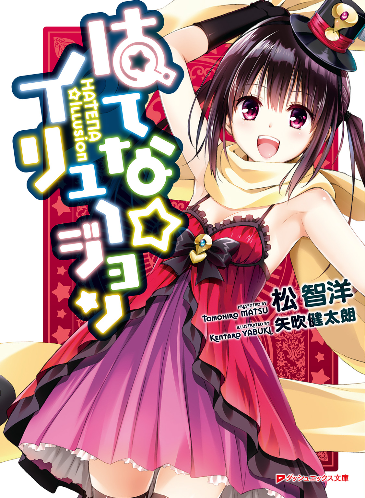
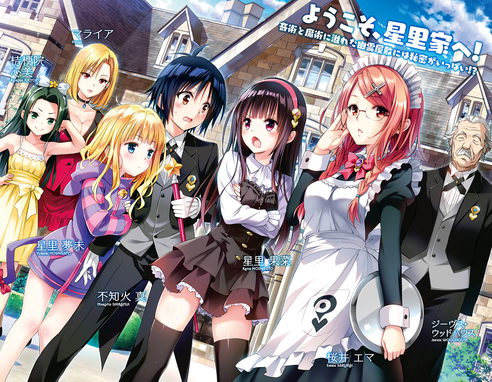
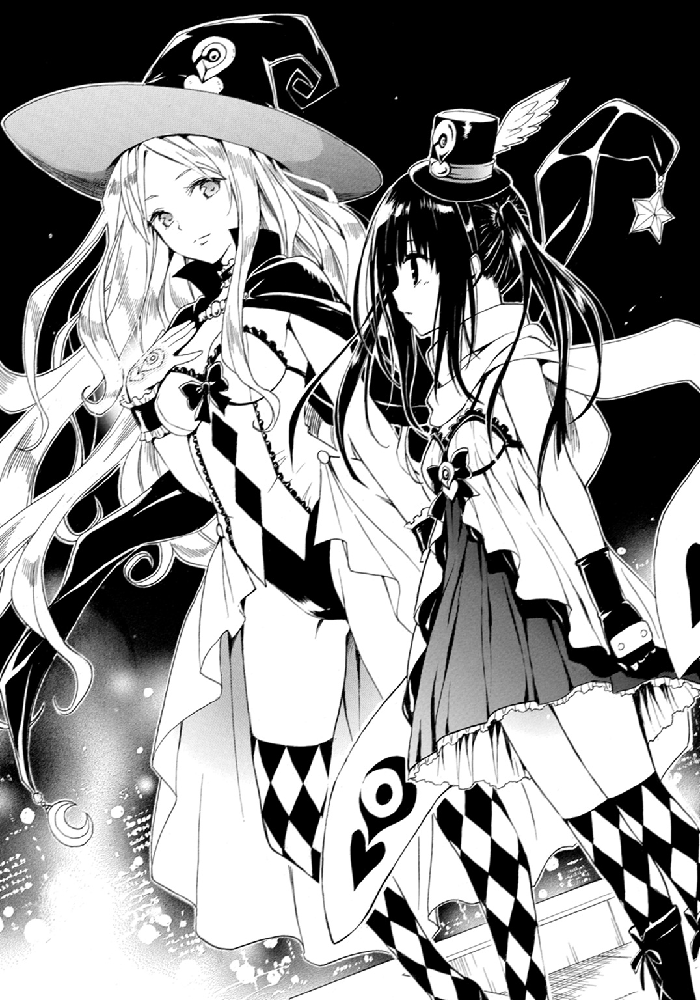
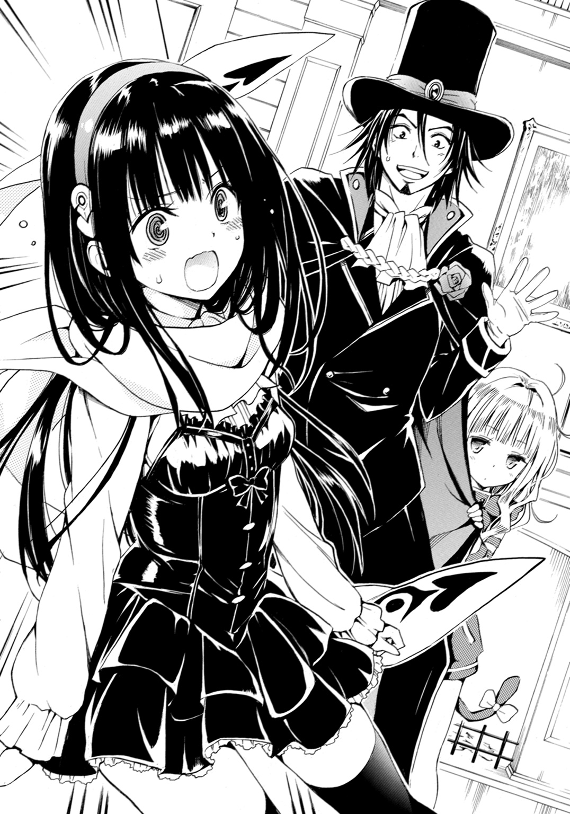
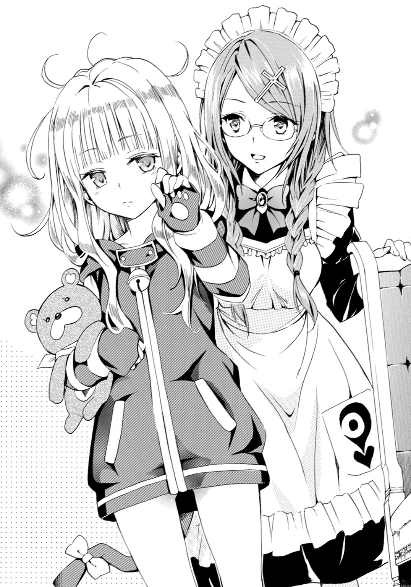
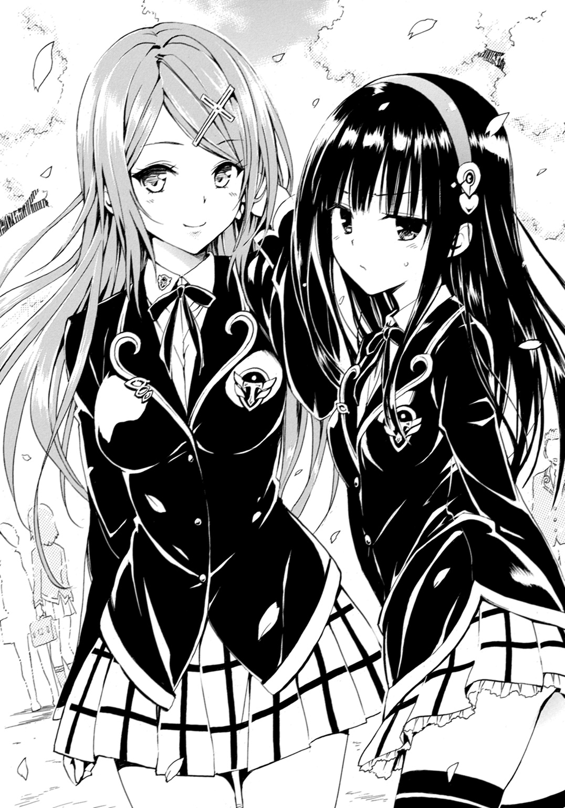
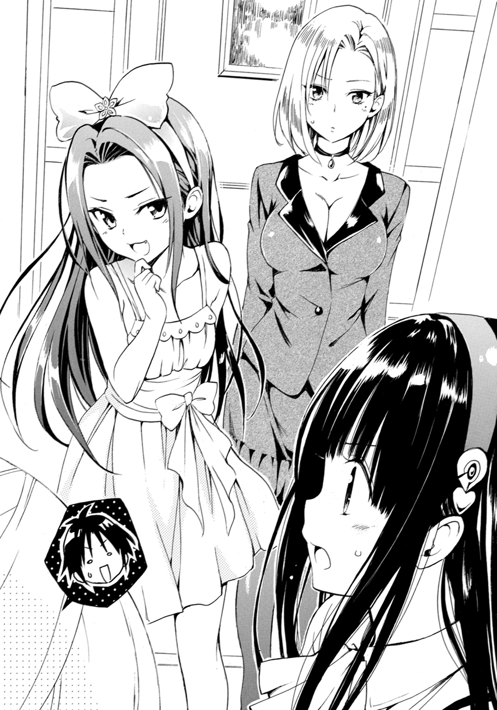
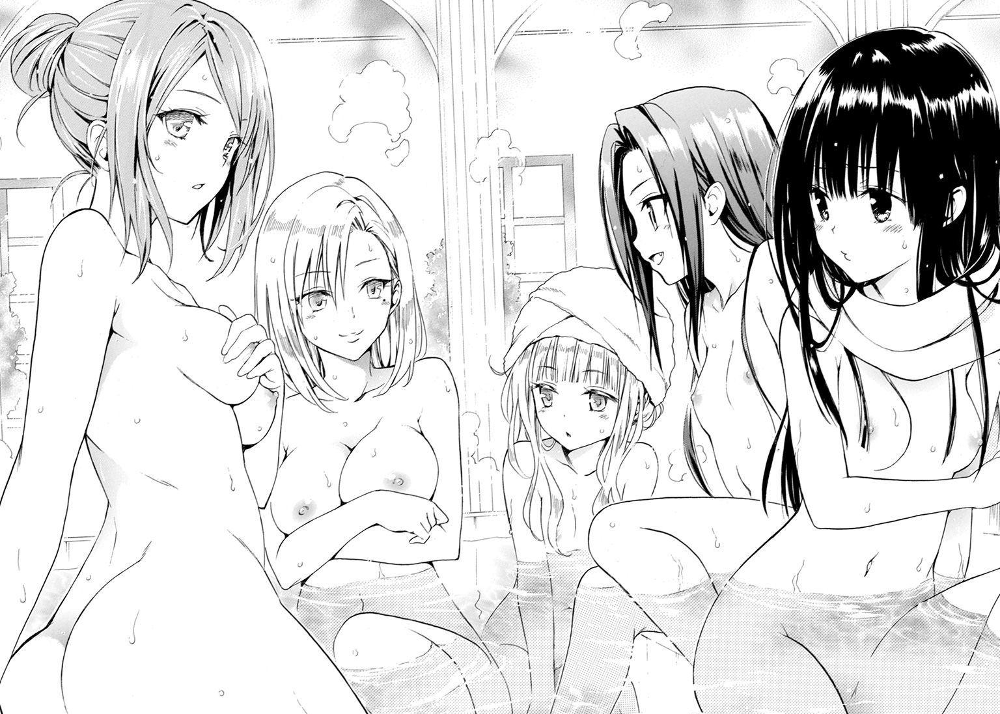
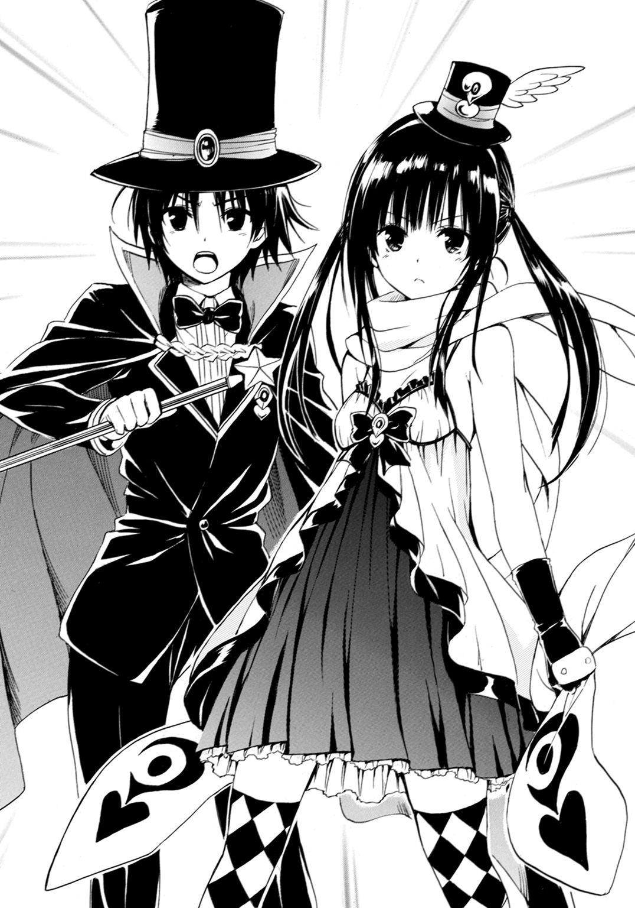
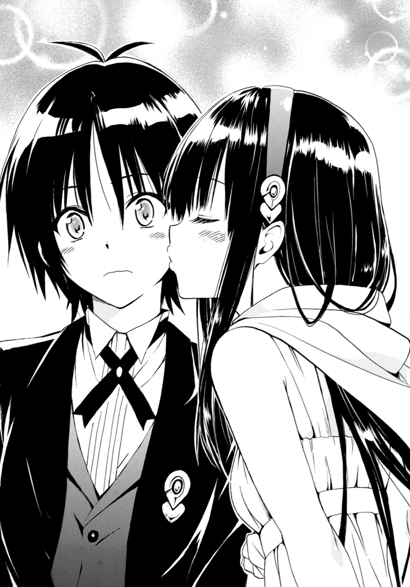

| はてな☆イリュージョン | |
| 松 智洋 | |

この本は縦書きでレイアウトされています。
また、ご覧になる機種により、表示の差が認められることがあります。

 ダッシュエックス文庫DIGITAL
ダッシュエックス文庫DIGITAL
はてな☆イリュージョン
松 智洋
他人の持ち物で盗んで良いものは、たった一つだけだ
プロローグ
星空を圧する都会の電飾が、月明かりに拮抗して大地を輝かせている。
二月の凍えるような風の中、二人の女性が高層ビルの天辺に立っていた。
天地の狭間にある美しいシルエットは、それ自体が一幅の絵のように感じられる。
「ねえ、どうしてあたしも行っちゃいけないの？」
尋ねたのは、黒髪の美少女だった。子どもから大人に羽化する寸前の、特別な時期にだけ生まれる独特の輝きを放っている。金色のマフラーを巻き、身体の線を露にした衣装は現実離れしているが、何故か彼女にとてもよく似合う。上気した頰は、寒さを全く感じさせない。
父から貰ったシルクハット型の髪飾りを直しながら、口を尖らせる。
「ふふ、これは、ママのお仕事よ」
答えたのは、豪奢な金髪をなびかせる、長身の美女だった。ほっそりしたシルエットを露にしている彼女は、豊かな胸を揺らして身をかがめると、少女の額を指で突いた。
「果菜、ここまで連れてきたのだって特別なの。判ってるでしょ？」
「どうして!? あたしだって、ママのお手伝いしたい！ あと、今はハテナ！」
「ふふっ、はいはい。私は認めないって言ったわよね？ 果菜、あなたの気持ちは嬉しいわ。だけど、娘に危ないことはさせたくないの。これは、私の仕事。フィンダウィル、お願い」
金髪の女性がそっと黒髪の美少女のマフラーに触れると、マフラーは頷くように揺れると広がって少女の身体を優しく包む。動けなくなった美少女は、さらに不満げに口を尖らせる。
「ママのいじわる！ 失敗しても助けてあげないんだから！」
「あら、それは大変。気をつけるわ」
くすくす笑う金髪の美女は、口元に手をやった。大きめの指輪に話しかける。
「ジーヴス、準備はどう？」
『問題ありません。夢未お嬢様が、セキュリティを掌握されました。いつでもどうぞ』
「さすがね。夢未にお土産を買って帰らなくちゃ」
感心するように微笑む金髪美女に、黒髪美少女は悔しそうに微かに呟く。
「......あたしだって、役に立つのに」
「なに言ってるの、果菜」
聞き漏らすことなく、金髪美女は少女の身体を抱きしめる。
「果菜は、いつだって最高よ。あなたが見ていてくれるから、ママ、頑張れちゃうの」
優しく笑って、頰にキスをする。大好きな母の香りがして、果菜はくすぐったくなる。
「ママ、気をつけてね。......もうすぐ、マコトも来るんだから、楽しみにしてたでしょ？」
「ええ。久しぶりですもの。ご馳走作ってあげないとね」

刹那、ここがビルの上だと忘れるな、というような強い風が二人の髪を捲いて天に駆ける。
白皙の美貌の金髪美女は眼を細める。彼女が胸に手を当てると、手の甲に独特の紋章が浮き上がった。果菜のマフラーの紋章と同じ形をした紋章は、彼女の意志を受けて強く輝いた。それは一族の宿命にたった一人で立ち向かうと決めた覚悟の光だ。
「じゃあ、行ってくる。今回の獲物は、ママが果菜くらいの時に作った失敗作なの。放っておくわけにはいかないわ」
「気をつけてね。ここで待ってるから」
心配する娘に笑顔を向けると、何もない空に彼女は踏み出した。
自由落下としか思えない速度で、地上に降りていく。
「夢未、お願い」
『ママ、無理しないで』
「大丈夫よ。だって私は、怪盗メイヴですもの♪」
歌うような声、拡がってなびく髪。眼下には、星々を圧する大都会の光。
吸い込まれるように標的に向かう母の影を見つめながら、果菜は吐息を漏らす。
「――綺麗」
母が空中で幾度か回転すると、まるで重さがないかのように着地したのが見えた。
一瞬だけ振り返った母に、果菜は必死で手をふった。大切な人の無事を祈りながら。
田舎の暮らしがのんびりしているなんて、一体誰が言ったんだろう。
僕、不知火真は、中学生になる直前だというのに世界の真実の一端に気づいてしまった。
ＴＶでは都会に住む芸能人が、田舎に住む人たちに会いに行ってその暮らしを体験し、牧歌的な環境をうらやむみたいな番組がいっぱいあるけど、そこに住んでいる人間にとっては日常だ。野菜を買いに行くより、隣のおばさんに我が家で作ったお総菜と交換してもらったほうが早いようなところにおいては、ある種、労働力はお金以上の価値がある。つまりとても忙しいのだ。
僕は、中学にあがる前の貴重な春休みを使って草むしりや畑の手伝い、隣の家の納屋の片づけにいたるまで、あらゆる雑用を押しつけられてヘトヘトだった。もちろん、理由あってのことなので、まったく不満はない。この程度は、当然だと思っている。むしろ、この先にある未来に、僕は胸を膨らませているのだ。手早く雑用を終えると、夕食の用意を始める。
今日は、隣のおばさんからご褒美だと大量に貰ったふきのとうなどの山菜を天ぷらにして、自分で釣った川魚と味噌汁を用意した。一年かけて学んだ料理の集大成だ。完成したのを見計らったように、それぞれの仕事を終えた両親と、保育園に行っていた妹が帰ってきて、団らんの時間となる。帰ってきた妹は、僕に駆け寄ると全身でぶつかってくる。
「にーちゃ！」
抱きしめた妹は、まだ身体がふにゃふにゃしていて力を入れたら壊れそうだ。この子と離れるのは辛い。でも、長い間胸に抱いていた希望が叶う日が近づいて、僕はわくわくを止められないのだ。逞しい腕で妹を僕から抱き取った父が、僕の顔を見てニヤリと笑った。
「なんだ。寂しくなったんなら、やめてもいいんだぞ」
「そんなわけないよ。やっと認めてもらったんだから」
この一年、僕は父さんに希望を認めてもらうために、あらゆる努力をしたのだ。自分のことはすべて自分でできなければならない、そう言われて、炊事洗濯掃除は人並みにこなせるようになった。勉強だって百点以外の答案を見つけるのが難しいくらい頑張った。運動会でも出場競技すべてで二位以内に食い込んだ。それでやっと了解してもらったのだ。今さら引き下がる気はない。そして、今日は父さんから最後の答えを貰う日なのだ。
「まだ真には早いと思うんだけどねぇ」
母さんは、心配そうに苦笑している。若くして僕を生んだ母さんはまだ十分に綺麗だ。僕がいなくなったら、もう一人くらい弟か妹ができそうな気がする。
「こういうのは、少しでも早くから始めたほうがいいんだって」
僕は両親の気が変わる前に断言して、できたての天ぷらと味噌汁を並べる。母さんは味見するように一口それを口に運んで微笑んでくれた。ちょっと寂しそうに。
「美味しい。うちの味ね。これなら、どこに行っても大丈夫かしら」
母さんは、何かを誤魔化すようにＴＶをつける。
いきなり映ったのは、僕が行く予定の大都会、東京の光景だった。
「......これまでの捜査により、関東一円で活動していた犯罪組織の全貌が明らかになりつつあります。当局すら実態をつかめていない犯罪組織を狙った一連の事件では、犯人たちは『泥棒にやられた』と話していますが、実際に盗まれたものは確認されず、また容疑者たちもその点については意味不明の供述をして......」
聞くともなく聞いていた番組は、最近、巷を騒がせているニュースを流している。
犯罪者だけを狙う義賊めいた女怪盗のニュースは、この数年、断続的に世間を賑わしている。女怪盗に狙われた犯罪組織は、毎回、騒ぎに乗じて犯罪の秘密を暴かれて警察に捕まっているらしいのだ。ニュースでは『美貌の女怪盗、再び現る』と正義の味方のように描かれている。
「やっぱり、都会は物騒ね」
心配そうな顔の母さんに、僕は手をふった。
「別に犯罪なんかしないから大丈夫だよ。きちんと学校にも通うんだし。はてなもいるしさ」
「それも、ちょっと心配なんだけどねぇ。ホントにいいのかしら」
「衛がいいって言ってんだからいいんじゃねぇか？ まあ、アイツは適当なヤツだけどな」
ガハハ、と笑った父さんは、旨そうに僕の作った夕食を平らげる。納得してくれたようだ。
「真、お前が泥棒するなんて心配はしてねぇ。昔から言ってるだろ。他人のもので盗んでいいものは、たった一つだけだってな。衛のヤツも、よくそう言ってたぜ」
父さんはそう言うと、僕の前に封筒を出す。そこには、片道分の切符と通帳が入っていた。
「約束しろ。曲がったことはするな。失敗はかまわねぇが、自分に恥じることはするな。それから、自分のことは、自分でやれ。困ってる人は手伝ってやれ。それから――」
兼業農家でもある父の逞しい手が、僕の頭を力強く撫でる。
「男が一度決めたことだ。簡単に諦めるなよ。大事なことを、間違えるな」
「ありがとう、父さん。僕、頑張るよ」
両親と、まだ何も判っていない妹の笑顔が胸を衝く。出発の日は、もう目の前に迫っていた。
誰かの気配がして、星里果菜はうっすらと瞼を開けた。微かな期待と共に、彼女が身を起こすと、ベッドから零れそうな黒髪がさらさらと流れる。
「おはようございます。果菜お嬢様」
聞き慣れた優しい声に首を巡らせた。
「おはよう、エマさん」
ほんの少しの落胆を隠して、果菜は笑顔を作る。
「エマとお呼びください。お嬢様」
少しスカートの裾を持ち上げて挨拶をする若い女性は、メイド服を着用している。日本では秋葉原などの一部地域でしかあまり見かけない服装だが、この部屋には妙に似合っていた。
ベッドから降りると、エマが用意してくれていた服に着替える。タイミング良く、エマは果菜の長い髪を整えてくれた。果菜は感謝しつつも、少しだけ口を尖らせた。
「あたし、やってくれなくても、自分でできますよ。もう中学生になるんだし」
「左様でございますか。夢未様とご主人様は、食堂におられます。果菜様が最後ですよ」
意に介さず、エマは果菜の着替えが終わるのを待って窓をあけて換気をする。四月の爽やかな風が部屋に吹き込んで、果菜はその空気を胸一杯に吸い込む。都会の片隅に位置するこのお屋敷にも、確かに春は近づいているように感じられた。
「エマさんはもう食べたの？」
「メイドはご主人様のあとに食べるものです」
「そんなの誰も気にしないのに」
「判っております。ですが、それが美学というものです」
真面目な顔で言い放つ彼女に、果菜はそれ以上意見はせずに笑顔を浮かべた。
「それは何の漫画の台詞？」
「私の創作でございます。お嬢様」
そう言うと、エマは破顔して、二人は連れだって食堂に向かったのだった。
八人掛けのテーブルに、いつもは四人で座っていたのだが、今日は三人だ。
それほど珍しいことではない。果菜は、微かなため息を隠してテーブルにつく。
「おはよう、夢未」
「......ん、おはよう」
果菜は、まず隣に座って牛乳をちびちびと飲んでいる少女に挨拶した。
少女は、無表情に頷いた。いつものことなので、果菜は気にしない。金細工みたいな髪と、真っ白な肌。透き通るような碧い眼に、桜色の頰。神様が全力投球して作り上げたような美しさを持つ少女は、黒髪の自分と違って母にとてもよく似ている。違うのは、口数が少なく表情を見せないこと。そして外に出るのが好きじゃないことだ。
「おはようございます、父様」
「うぅ～ん、今までみたいにパパ、って呼んでくれていいんだよ、マイプレシャス！」
向かいに座って大きなハムを切り分けていた黒髪のダンディな男性は、作業を止めて大げさな身振りで両手を広げた。しかし、果菜はぷい、と横を向く。
「中学生になるんだから、そんなの無理」
「おお......ハニィ、なんてことだ」
そう言いながら、異常に濃い顔をした男性はがっくりと肩を落とす。その芝居がかった仕草にちょっとイライラしてしまう果菜である。この黒髪の男性が自分の遺伝子の半分を提供した人物だと思うと、少し納得いかない。自分が父親似だと言われてしまうことも。
「旦那様、ファイトでございます。お嬢様は、思春期でございますから」
背後に立つ優しげな顔をした老紳士が、珈琲を継ぎ足しながら励ます。
「ジーヴス、判ってくれるのはキミだけだよ」
一際大きな動作で感謝を示すと、果菜と夢未の父、星里衛は珈琲を一口飲んだ。老執事が目線で指示を送ると、果菜の後ろで控えていたエマが頷く。
「果菜様、お飲み物はどうなさいますか？」
「え、ええ、あたしも珈琲を」
「判りました。ミルクたっぷりでございますね」
「も、もうっ、あ、あたしも中学生になるんだから、ブラックで大丈夫です」
「......かしこまりました」
笑いをかみ殺す様な顔をして珈琲を注いでくれるエマを憎らしく思いつつ、果菜はブラック珈琲を飲む。――やっぱり、カフェオレにしたほうが良かったかな。
今さら変えられないと、ぐっともう一口飲んだところで、夢未がすっと手を出した。
「姉様、ミルク。残ったから飲んで」
差し出された妹の愛に、果菜は内心で感謝しつつも仕方なく、という顔で受け取った。
そんな一連のやりとりを温かい目で見ていた年長の男性二人が、視線を交わす。
「さて、果菜。今日が何の日か覚えているかい？」
その質問は、愚問とすら言える。果菜は、今日という日を指折り数えて待っていたのだ。
「もちろんよ、父様」
ほころぶような笑顔を見て、衛はほっとしたような顔をする。
「嬉しそうだね、果菜」
「ええ。だって、マコトは親友だもの」
胸の前に手を当てて、果菜は今朝一番の笑顔を見せる。
「もう何年も会ってないから、会えるの、凄く楽しみ。それに......約束、覚えててくれたんだもん。早く会いたいな」
「そ、そうか。良かった。なあジーヴス。大丈夫そうだぞ」
「そうでございますね。不肖ジーヴス、読みを誤っておりました。衛様が安請け合いなさった時には、どうなることかと思いましたが......」
老執事は、胸を撫で下ろす仕草をする。何がそんなに心配だったのか、果菜にはさっぱり判らない。エマも、不思議そうな顔で果菜を見ているが、何も言わなかった。
「......わたしは知らない人。ドキドキする」
小学四年生になる夢未は、小さい時に会っただけだ。覚えていないのも無理はない。安心させるように、果菜は微笑んだ。
「大丈夫、きっと仲良くなれるよ。マコトは、とっても格好いいんだから」
出会った時の思い出が、果菜の胸に蘇る。あの日からマコトは果菜の一番の友達なのだ。最近は連絡も取っていなかった幼馴染みが中学に入ると同時にこっちに来てくれるなんて、こんな嬉しいことはない。
「......そっか。じゃあ安心」
ホッとした顔をする夢未の頭を、果菜が撫でる。さらさらの髪は、とても触り心地がいい。
「人見知りの果菜様にしては、とても珍しいですね」
茶化すようにエマが微笑み、甘くしたカフェオレをサーブしてくれた。
「そ、それも、もう大丈夫っ。中学生になったら、ぜーんぶうまくやるんだから！」
力強く宣言すると、彼女は金色のマフラーを取りだして首に巻く。そのマフラーは、まるで意志を持つように、ふわりと浮いている。物理法則に反するその動きに、誰も反応を示さないのが不思議なくらいだ。愛おしそうに、果菜はマフラーを撫でた。
「......なら安心だ。あとは、あの人が間に合うといいんだけど」
父の言葉に、果菜は思わず呟いた。
「......母様、今、どこにいるのかなあ。入学式には帰ってくるって言ってたのに」
そう言うと、果菜はテーブルにおかれた四人目の食器に目をやる。
本来そこに座っているはずの人は、先日の仕事から戻ったあと、再び仕事を見つけた、と言って出かけて以来戻っていないのだ。怪盗という、大仕事から。
「まあ、あの人のことだ。絶対に無事でいるよ。僕も、そろそろ応援に行くつもりだ」
衛は安心させるように笑う。
「お嬢様、大丈夫です。お母様の無事はジーヴスが常に確認しております」
執事の言葉に頷きながら、それでも果菜はため息を隠せない。入学式を、とても楽しみにしてくれていたのを知っているから。だけど、母の仕事も大切なことだと判っている。
「信用してる。それに、入学式は......一人じゃないしね」
もうすぐ、マコトと一緒に学校に通える。その事実が、果菜を励ましていた。
春、新緑の季節。新たな出会いの時。少年と少女の再会は近い。
そしてそれは、小さな奇跡が織りなす優しい物語の、始まりの時となるのだった。
 第一幕
第一幕
再会☆ディスコミニケーションな始まり
全部自分でやる、そう宣言したのは自分だ。父さんは何も間違っていない。学費は振り込んでくれたし、生活費も貰っている。先方へ渡す手紙も預かっている。だけど、だけど......
「ここ......どこ？」
夢と希望を胸一杯に抱えてやってきた東京。田舎から乗ってきた新幹線を降りてそこに立った感激は、忘れられない思い出になると思う。電車を乗り継ぎ、僕が暮らすことになる街に着いた。そこまでは順調だった。東京には案内板がたくさんあるのだ。
「え、えっと............なんでこんなことになってるんだ!?」
駆け足で角を曲がりながらキョロキョロと辺りを見回す。と、父親が目印だと地図に書き込んだコンビニをまた発見してしまう。
「こっ、ここにも......オーソンがあるってどういうことだよ、ここは迷いの森か？」
父さんが僕に書いて渡してくれた地図はシンプルだった。駅を出てコンビニのある交差点の先でコンビニの角を曲がって真っ直ぐ。駅から二回しか曲がらない、簡単な地図。
「......父さん......この地図、全然役に立たないよ......」
こんなことなら、母さんが中学の入学式に出たいから一緒に行くと言ってくれた時、素直に頷けば良かった。父さんが「なんだ、いきなり頼るのか？」なんて煽るから、一人で大丈夫だって言っちゃったのは僕だけど。考えてみれば、新幹線に乗るのだってディズニーランドに連れていってもらった時以来だから、人生で三回目くらいのはずだ。田舎暮らしに慣れた僕には、この大都会は人が多すぎる。うちの実家だと、近くのコンビニに行くには最低でも自転車が必要だ。大抵の人は車で行く。だからコンビニがランドマークになると思いがちなのだ。父さん、駅前には、見えるだけで三軒もコンビニがありますよ。これ、どうしたらいいんだろう。
とはいえ、到着すると連絡した時間は間近に迫っていた。
「これからずっとお世話になるっていうのに、最初から遅刻ってまずいよな」
弟子入り志願者が、先生のところに初めて行くのに遅刻するっていうのはあり得ないだろう。焦る心を抑えて、何度も駅に戻っては別のコンビニを起点に歩いてみる。
残念ながら、父さんの描いた地図に載っている家を見つけることはできなかった。
住所と電話番号は判っているんだから、たぶん、交番で聞けば判ると思う。もう中学生になるっていうのに、迷子みたいに思われるのはイヤで避けていたんだけど......認めざるを得ない。客観的に見て、僕は迷子だ。何という前途多難。僕は交番を探して歩き始めた。
「恥ずかしいなぁ......でも遅刻するより、マシか......あれ？」
足早にコンビニを通り過ぎようとした僕は、気づいてしまった。
先ほどから何度も通り過ぎたコンビニの前で小さな女の子がうずくまっている。
数歩戻って、少女のほうを見る。
泣いているみたいだ。一瞬だけ腕時計を見る。ギリギリだ。僕は微かに吐息を漏らす。
「......どうしたの？」
僕は、少女の前にしゃがんだ。別れてきたばかりの妹よりは、少し大きい子だろうか。
目線の高さを合わせて話しかけると、彼女は顔を上げてくれた。
「ぐすっ......ま、ママがいないの。おにいちゃん、ナナのママどこ？」
どうやらお母さんとはぐれてしまったらしい。目には涙がたまっている。
「うーん。ごめんね、それは僕にも判らないけど......」
「ひうっ」
途端に涙が零れだして僕は慌てて慰めた。女の子の名前はナナちゃん。事情を聞くと、近くの子らしい。はぐれてからそんなに経っていなさそうだし、動かずにいたほうが良さそうだ。
「大丈夫。お母さんもきっと捜してるから、ちゃんと迎えに来てくれるよ」
「ママ、きてくれる？」
「うん。だから泣かないで待ってようね」
笑顔を見せると、泣きやんでくれた。妹の相手をしていたから小さな子の扱いは割と得意なんだ。でも、これは確実に遅刻だな。まあ仕方ないか。もともと、僕が迷ったのが原因だ。
「おにいちゃん？」
苦笑いした僕を、ナナちゃんが覗き込む。
「実は......僕も迷子なんだ。交番に行こうと思ってたところだったんだよ」
おどけた僕の言葉にナナちゃんが、きょとんとした表情で僕を見上げる。
「ええっ......、だいじょうぶ？ おにいちゃんのママ、むかえにきてくれる？」
「それはないかな。ずっと遠くにいるし、僕はもう大きいしね」
そう、数日後には中学生になるのだ。もはや子どもではないのだよ。
「ふえっ......おにいちゃん、かわいそう」
うわ、予想外の反応。再び泣き出したナナちゃんに、僕は大慌てだ。
こんな時は――僕は、妹をあやしていた時を思い出す。
「ナナちゃん、こっちを見て」
顔を上げたナナちゃんの前で、指をパチンと鳴らす。瞬間、手の中に短いステッキが現れた。
「わっ、ナニコレ！ どこからでてきたの!?」
忽然と現れたステッキを見て、ナナちゃんが目をパチパチとさせた。びっくりして泣くのを忘れてくれたみたいだ。よしよし。僕は、優しくナナちゃんに顔を近づける。
「ナナちゃん。これはね、魔法のステッキなんだ」
「まほう？ どんな？」
涙の跡が残る顔を興味で輝かせ、ナナちゃんは僕を見つめる。
僕は答える代わりに、使い慣れたステッキの先でナナちゃんのポケットを叩いた。
「中を見てごらん」
ナナちゃんはそろそろとポケットに手を入れると、はっとした顔で僕を見上げた。
「キャンディがはいってる！」
さっきまで浮かべていた涙も忘れて、ナナちゃんが僕のステッキを眺める。
古ぼけたステッキは、彼女の目にはキラキラ輝いて見えているはずだ。
「すごーい！ まほう、もっとやって！」
「了解。じゃあナナちゃんに特別なのを見せちゃおうかな――ほら！」
ウインクしてステッキをくるりっと回す。ステッキの先端がぱんと弾けて、派手な紙吹雪と色とりどりのテープをまき散らすとナナちゃんは歓声を上げて拍手してくれた。
「すごいっ、おにいちゃんっ、すごーいっ！ おにいちゃん、まほうつかいなのっ!?」
なんて素直な褒め言葉。嬉しくなった僕は、小さな観客に対して大きく一礼した。
「違うよ、僕は......」
「ナナッ！」
名乗ろうとしたその時、女性の声がそれを阻んだ。
「あっ、ママだ！ まほうでママをつれてきてくれたんだ！」
「はは......まあ、そういうことにしておこうかな」
もちろん、単なる偶然だけどね。夢を壊す必要はない気がする。僕は、まき散らした紙吹雪を拾い集めてポケットにしまった。タネは大事にしておかないとね。
「ナナ、勝手に駆け出しちゃダメじゃない！ ママ捜したわよ」
「......ごめんなさい」
ナナちゃんは嬉しそうにお母さんに抱っこされながら謝っている。
「ママに会えて良かったね、ナナちゃん」
僕は、そう言ってナナちゃんに手を振った。
「ありがとうね。ナナの面倒見てくれて。この辺の子かしら？」
「あはは、違います。たまたま通りかかったんです。では、ちょっと急いでいるので......」
せっかく格好良く決めたんだ。僕は一礼して立ち去ろうとした。ところが、ナナちゃんが母親の袖を引いて、大きな声でご注進に及ぶ。
「まって、おにいちゃん。ママ、このおにいちゃんもまいごなんだって」
「え？ そうなの？」
心配そうな顔が、かなり恥ずかしい。すみません。ナナちゃんと違って僕は大きいのに。
とはいえ、既に遅刻している以上一分一秒が惜しいのも事実だ。ばれてしまったことだし、毒をくらわば皿までと、僕はナナちゃんのお母さんにおずおずと聞いてみた。
「あの......交番の場所、教えてもらえますか？」
ナナちゃんのお母さんは、ぶっ、と噴き出しながら快諾してくれた。僕はホッとすると同時に、非常に情けない気分を味わったのだった。
交番で貰った詳しい地図を片手に、僕は駆け足でその場所に辿り着いた。
「わぁ......」
思わず声が漏れる。大きな鉄の門の向こうに、石造りの古びた洋館がずしんとそびえたっていた。屋敷の壁には蔦がびっしりと生えていて、いかにも......おどろおどろしい。
周囲の都会らしい建物と一線を画する空気感だ。庭も大きくて、町外れにあるといっても相当の違和感を放っている。
「な、なんていうか......幽霊屋敷って感じだな」
この一角だけ、大昔の外国映画にタイムスリップしたみたいだ。僕は門の前から数歩下がって、石壁に掲げられている表札を確認した。星里。そこには洋館の雰囲気にはそぐわない毛筆の字で、そう書かれている。ここで間違いない。僕は息を呑みながら、門を開けようと手を伸ばした。ギギギギギギ......驚いたことに、僕が手を触れる前に軋んだ音を立てて門が開いた。
「おわっと」
肩すかしを食らって、思わず敷地に踏み込んだ瞬間。ガチャン！
「ひいっ!?」
背後でひとりでに鉄の門が閉まった。何コレ、ほんとに幽霊屋敷なのか!? いや、まさかね。でも、僕の憧れである、あの人の家だ。どんな仕掛けがあってもおかしくない。
タネを確かめたくて、僕は石造りの門柱を見つめる。その時。
「お待ちしておりました、不知火真様」
いきなり声をかけられて、僕は飛びあがった。
「うわああっ！」
「まあ、お元気ですこと」
目の前にはメイド服を着た少女が立っていた。独特のシルエットは、漫画やアニメから出てきたみたいだ。おまけに田舎では見たことがないほどの美少女だ。都会ってすごい！ それどころじゃないけど感心してしまう。こんなお化けになら化かされてもいいかもしれない。
「あ、あの......ぼ、僕は」
自己紹介しようとすると、メイドさんは目顔でそれを制した。
「それはあとで結構です。先ほどから衛様たちがお待ちです。こちらへ」
「は、はあ......」
先を歩くメイドさんに連れられるように、僕は庭を横切る。綺麗な花壇が四月らしい花を咲かせていた。一瞬目を奪われた僕に、淡々とした声でメイドさんが話しかける。
「弟子入り志願なのに初日から遅刻なさるなんて剛胆ですこと。食パンをくわえて走る美少女以外には遅刻なんて許されないことですよ」
「す、すみません......」
「漫画や小説なら、この遅刻を理由に弟子入りを断られる展開もあり得ますわね」
「えっ......そ、そんな可能性あるんですか？」
「今のは私の創作でございます。ですが、あり得ないことではないかと」
初めての都会で迷ってしまったなんて言い訳にならない。でも僕は覚悟を決めて上京したんだ。そう簡単に諦める訳にはいかない。土下座してでも弟子入りを認めてもらわないと。僕が唇を嚙み締めていると、メイドさんは妙に嬉しそうに笑みを浮かべていた。
「ふふ、困った顔もいいものです......萌えます」
「え？」
「エマ、真様をからかうのはおやめなさい。第一それほどの遅刻でもないでしょう」
玄関からもう一人現れたのは日本人離れした顔をした初老の......執事としか言えない格好をした人だった。時代がかった黒いスーツに白手袋だ。彫りの深い顔に真面目な表情を浮かべている。メイドさんは、悪びれもせずスカートをつまんで一礼する。
「お約束の時間から、既に二十六分三十秒が経過しています。お待ちかねのお嬢様のお気持ちを思うと、つい悪戯心が」
「でしたら、早くご案内すべきではありませんか。やれやれ、エマが失礼致しました。私は当家の執事を務めております、ジーヴス・ウッドハウスと申します」
「は、はい！ ジーヴスさん。不知火真です！ よろしくお願いします」
やはり執事さんだった。しかも外国の人みたいだ。メイドさんといい、執事さんといい、さすがあの人の屋敷だな。ＴＶとか映画でしか見たことのない世界に緊張しながら執事さんのあとをついて歩く。胸がドキドキしていた。
「ふふっ、真様は......受け、ですね」
後ろに従って歩くメイドさん......エマさんがぽつりと呟く。受けって何だろう？
そんな疑問を形にするゆとりもなく、僕は屋敷に足を踏み入れたのだった。
吹き抜けになった広い玄関ホールは、ひんやりとしていた。天井にはクラシックな形をしたシャンデリアがつるされている。古びて威圧感のある外観と違って、中は綺麗に磨き上げられた品のいい作りだった。ちょっとホッとする。促されたままに屋敷の奥へ進み、落ち着いた調度品に囲まれた広い部屋に通されて、僕はソファに腰を下ろした。
ビロード張りのソファは座るとおしりが埋まってしまいそうだった。目の前に置かれたテーブルや壁に掛けられた絵画は部屋に調和していて、金銭的な価値は判らないけれど、それらがとても良い物だということだけは判る。部屋を眺め回していると、ジーヴスさんが口を開いた。
「どうぞ、おくつろぎください。まもなく、皆様もおいでになるはずでございます」
「あ、はい、すみません」
きょろきょろしすぎてしまったかもしれない。僕は背筋を伸ばして正面を向いた。何がおかしかったのか、年齢不詳の執事さんはくすり、と笑いを漏らし、口元を押さえた。
「失礼致しました。お嬢様と同じ年齢とは思えないほどしっかりしておられますので、つい」
「え、僕のことですか？」
「はい。衛様もきっと感心なさると思いますよ」
何だかすごく褒めてもらってる。嬉しいけど照れくさい。だけど、久しぶりの再会を前に、励まされる気がする。お礼を言おうとした時、ジーヴスさんが眉を顰めた。
「おや......申し訳ありません。衛様がお呼びのようです」
え？ 僕には全然聞こえなかったけど......。
「ちょうどお茶の用意も調ったようです。私は、衛様の様子を見て参ります。では、後ほど」
ジーヴスさんは見事な礼をして、部屋を出ていく。入れ替わりに、メイドのエマさんがワゴンを押して入ってきた。優雅に一礼すると、ティーポットから紅茶を注いでくれる。一緒に並べられた三段のスタンドには、サンドイッチやケーキが載せられていた。本格的なアフタヌーンティーってやつだと思う。映画でしか見たことのないものが現実にあると不思議な気持ちだ。
「真様、先ほどは失礼致しました。私は当家のメイドを務めております、桜井エマと申します」
エマさんは、笑うと玄関先で会った時とは違う優しい印象になる。眼鏡が似合う知性派な感じの美人さんだ。っていうか、本物のメイドさんなんだな。存在自体が夢の塊みたいな人だ。
「よ、よろしくお願いしますっ」
見つめられるとドキドキしてしまう。エマさんは大丈夫、というようにウインクしてくれた。
「スコーンとケーキは私が作りました。お口に合えば良いのですが」
「は、はいっ！ いただきますっ」
スコーンは焼きたてでふわふわだったけど、緊張して味が良く判らない。紅茶も飲んだことのない味がした。すぐ近くで僕を見ているエマさんと、エマさんから微かに漂う香りが気になって僕は気が気じゃない。妹以外の女の子と二人きりなんて経験はほとんどない僕だ。こんな時、何を話していいのか全然判らないんだよ......
一刻も早くジーヴスさんか衛叔父さんが来てくれることを期待するしか......と、僕は駆けてくる足音に気づいた。助け船は、もうそこまで来ていたみたいだ。
「いらっしゃい、マコトっ！」
バン！ とやや乱暴に応接間の扉が開いた。長い髪をなびかせて部屋に飛び込んできたのは、美しい黒髪の少女だった。背の高さは僕と同じくらい......いや、ちょっと負けてるかもしれない。再会を祝す気持ちで立ち上がった僕は、その姿に息を呑んでしまった。
目の前の美少女は真っ白な肌にサラリと流れる黒髪で、いかにも深窓のご令嬢という感じだ。澄んだ瞳は、僕のびっくりした顔が映り込んでいるのが判りそうなくらい大きい。東京に来て街ゆく女の子たちが綺麗なのに驚いたけれど、こんなに可愛い子に会ったことはない。
これって......まさか、そんな......僕の知ってるあの子は、こんなに綺麗な子じゃなくて、ちっちゃくて泣き虫で、男の子みたいな女の子だったはず――
「マコト！ 久しぶりだねっ！ 会いたかった！」
自分の目を疑っていた僕と違い、彼女は僕のことを覚えていたようだ。テーブルを飛び越えんばかりの勢いで駆け寄った彼女は――勢いよく僕の胸に飛び込んできた。
「なっ、なあああっ！」
お、女の子に抱きつかれているっ！ それも、初めて見るくらい可愛い子にっ！
いい匂いっ！ いい匂いがするっ！ 柔らかくてっ、温かくてっっっ！
抱き返すなんてできやしない。僕の心臓は今すぐ破裂しそうだ......でも......この子は......もしかして......ぎこちなく固まってしまった僕に、美少女は抱きついていた腕を緩める。
「......マコト？」
――良かった、心臓が持たないかと思った。優しい温もりが僕から離れていくのが......ちょっと、いやものすごく残念だけど。少しだけ離れた彼女が僕の目を覗き込んでいる。
「は、はいっ」
キョトンとした顔で首を傾げるのがまた可愛い。もう四月なのに季節はずれに首に巻かれた金色のマフラーが妙に似合っている。
ガチガチになった僕を見て、笑顔はいぶかしげな表情に変化していく。
「......ねぇ、マコトってば、あたしのこと忘れちゃったの？」
忘れちゃったって――僕の中で、疑問が確信に変わる。
「......えーと..................もしかして」
深呼吸して彼女を見つめると、少しずつ見覚えのある幼馴染みの姿と重なっていく。
「はてな？」
そう呼んだ途端、彼女は顔をほころばせた。
「うんっ！ でも、どうして疑問形なのよ、マコト」
昔と違ってるからだよ！ まさか数年会わないうちにこんなに変化するとは思わないじゃないか。はてなは僕に気づいたんだから、こっちはあんまり変わってないんだろうけど。
「だって、すっごく......き、綺麗になってて、すぐ判らなかった。びっくりしたよ、はてな！」
「はぅあっ！」
あ、それ、はてなだ！ 驚くと「はぅあっ」て言っちゃうのは変わってない。はてなだよ。彼女は、あのちっちゃかった星里果菜だ。僕の両親の友人の娘で、小さい頃に何度も会っている、いわゆる幼馴染みだ。とはいえ家は遠いから会った回数は片手で数えるほどしかない。
それでも、僕たちはとても仲良しだった......はずだ。
「き、綺麗ってマコトったら......もうっ、どうして？ 変なこと言わないでよ」
ほっぺを赤く染めて、ちょっと恥ずかしそうに身をよじる。こ、こんな可愛い女の子が僕の幼馴染みのはてなだなんて......全然信じられないけどな。
「はてな、ほんとに久しぶりだね、会えて嬉しいよ」
「うんっ、マコト！ あたしも嬉しい！」
ぱあっ、と顔を輝かせたはてなは、美少女度が三倍に跳ね上がって見える。うう、眩しい。まさか、はてながこんな美人になってるなんて。というか、これって......ちょっと、まずくないか？ いや、相当まずいよね？ 狼狽する僕に、はてなは屈託のない笑顔をくれる。
「......本当に来てくれるなんて、思ってなかったんだ。約束、覚えててくれてありがとう」
久しぶりに会った幼馴染みは、そう言って頰を染めた。なんだか、心臓が爆発しそうだ。
「ふふっ、マコト、凜々しくなったね。なんだか男の子みたい」
男の子みたいって......まあ、僕ももう中学生だしね。凜々しいってのは嬉しいな。
「はてなは......お嬢様っぽくなったね。髪も伸びておしとやかそうに見えるし」
「ほんと？ えへへ。頑張った成果上がってるかな？ もう小学生じゃないからね！」
身体を離したはてなは、得意げにくるりと回ると、満足した顔でソファに座った。笑顔で僕に隣に座るように促す。間髪を容れず、無駄のない動作でエマさんが紅茶を用意してくれた。
「あ、マコトはエマさんに会うの初めてよね？ もう挨拶はした？」
「うん、さっきスコーンをご馳走になったよ」
「そっか！ エマさんのスコーン、美味しかったでしょ？ エマさんは、ママ......違う、母様の遠縁で、うちでメイドさんをしてくれているの。美人だし、何でもできる凄い人だよ。もともと親戚だし、父様も母様も、メイドなんてしなくていいって言ってるんだけど......」
「果菜様たちのお世話は、私のライフワークでございますので」
キラリ、と白い歯を輝かせてメイドさんは微笑んだ。うわあ、凄い爽やかな笑顔だ。
「......こんな感じなの。あたしたちの家族だと思ってくれたらいいわ。エマさん、改めて紹介するね。この子はマコト。あたしの幼馴染みで大親友なのっ」
「あ、ど、ども.........」
「ふふっ、果菜お嬢様から真様のお噂は色々と伺っております。なんでも、果菜お嬢様の〝王子様〟だとか」
「エマさんっ!? そのことは内緒だって言ったでしょ！」
はてなは真っ赤になってエマさんに食ってかかる。
王子様!? そんな風に思われてたなんて、さすがにちょっと気恥ずかしい。
「ちがうのよ。変な意味じゃないのよ？ ほら、昔、あたしのことを助けてくれたじゃない？」
「助けた.........えっと、どれのこと？」
首を傾げるのは、思い当たることがないからじゃない。むしろたくさんありすぎるのだ。はてなは、どっちかっていうとドジなところがあって、慣れないうちの田舎に来た時には、色んな冒険に出かけてみんなを心配させる名人だったから。
「ほら、あたしが野良犬に追いかけられて――」
「ああ......僕が練習するのを見に来てて、すぐに飽きちゃった時か」
言われて僕はすぐに思い出した。あの時のことは確かに僕の記憶に焼きついている。
はてなは頷くと、恥ずかしそうに目を伏せた。
「野良犬に襲われて、もうこのまま食べられちゃうんだって思ってたら、マコトが来てくれたのよね。カッコよかったなぁ.........。その姿がね、その.........絵本の王子様みたいだって思って.........きゃーっ！ あたしってばなに言ってるんだろ！」
また真っ赤になっていやいやをするはてなを前に、ふと懐かしさがこみ上げてくる。
そう、僕の知ってるはてなはこういう子だった。ちょっとドジで暴走気味だけど、人が良くて他人を疑うことを知らないような天真爛漫さを持っている。思い出が蘇り、僕も笑った。
「あはは、変わらないなぁ。見た目はすごく綺麗になったけど、中身は昔のままかも」
「ええっ、どうしてっ!? それってないよ、マコト、もうっ！」
口を尖らせ、拳を振り上げるマネをするはてな。その仕草は途轍もなく魅力的だ。
はてなはすぐに手を下ろすと、今度は僕のほうをしげしげと見つめた。
「そういうマコトは、相変わらず男の子みたいな格好してるのね」
「男の子みたいな.........？」
――それはあれかな。僕は、昔から背が低くて線が細かったから、男の子らしくなかったという意味......なんだろうか？ それとも、再会して男らしくなっている、ということかも。
「髪も短いままだし、元は良いんだから、お洋服だってもっとカワイイのを着たほうが――」
「ちょ、ちょっと待った！」
「なあに？ どうしたのマコト」
「僕、どっちかっていうと可愛いより格好いい......ほうが理想なんだけど」
もう中学生になるっていうのに、可愛いなんて言われてもあまり嬉しくない。でも、はてなには伝わらないみたいだ。彼女は楽しそうに笑った。
「その『僕』っていう言い方も変わらないね。ボーイッシュなマコトには似合ってるけど。あ、わかった！ そういうキャラ設定なのね！」
「きゃ、キャラせってい？」
「マコトは、父様みたいになりたいんだもん。確かに、ミステリアスな雰囲気が大事よね。うんうん。男装キャラってマコトによく合ってると思う」
――駄目だ、いまいち、話が判らない。だんだん思い出してきた。そういえばはてなは、昔からそそっかしくて、思い込んだら暴走しがちなのだ。これは、何か変なスイッチが入っているんじゃないだろうか。僕は、少し困って傍らに立つエマさんのほうに視線を向けた。
「う、うーん。別に、キャラ作りとかじゃなくてさ......」
狼狽する僕をよそに、エマさんは、何か珍しいものでも見るような顔ではてなを見つめている。そしてエマさんは、大きなため息をつくと話題を断ち切るように一つ咳払いをした。
「......こほん。お嬢様、少しよろしいでしょうか」
「なあに、エマさん」
エマさんは、そっと身をかがめると、何事かをはてなに耳打ちした。
「えっ、なに？」
びっくりした顔になるはてな。僕のほうを見て、再び笑い声を出す。
「あはは......なに言ってるんですか？ エマさんってば、変なこと言わないでください」
視線は僕のほうに向けたままのはてな。一体、エマさんは何を伝えてるんだろう。
もう一度、エマさんは一言、一言、じっくりと言い聞かせるように耳打ちする。
「あはははっ、エマさんってば。も、もうっ、そんな訳ないじゃない。ねえ？」
いや、そこで同意を求められても困るんだけど。楽しそうに笑っているはてなに、エマさんは、処置なし、というように肩をすくめる。
「......では、致し方ありませんね。お嬢様、真様、失礼致します」
そういうと、いきなりエマさんは、はてなの手を取って僕の胸に当てた。
「えっ......」
黒髪の美少女にいきなり触れられて、自分が真っ赤になっているのが判る。ところが、はてなはそれどころじゃない感じだった。いきなり、さーっと、顔から血の気が引いていく。
それからおもむろに両手を突き出して僕の胸をぺたぺたと触りはじめる。
「.........ない」
――何が？ と聞き返す間もなく、はてなは立ち上がると、ずさっと僕から距離を取り、今度は足の先から頭のてっぺんまで僕の身体を観察するように眺めて......拳で口元を押さえた。
「ウソ......」
わなわなと身体を震わせて、はてなはバン、と机を叩いた。
「わ、わかったわ！ あなたマコトじゃないわね！ ニセモノね！」
「いや、本物だよ。ていうかはてなだって僕の顔を見てすぐに判ったじゃないか」
「じゃあ双子の兄妹ね！ さすがパパに弟子入りするだけはあるわね！ 凄い奇術だわ！」
「妹はいるけどまだ保育園児だよ！ はてなっ、お前、なんか変だぞ！」
「い......い......いやあああああああ！ ウソ、ウソよぉぉ！」
はてなは、状況を処理しきれなくなったとでもいうように悲鳴をあげた。
その隣で、エマさんが深々とため息をつく。僕はエマさんに事情を聞こうとした。
「ははははははははははははは！」
笑い声と共に、パァンと爽やかな破裂音が響いた。天井から舞い降りる花びらと共に、幻のように現れたのは、タキシードにシルクハット、マントを付けた彫りの深い黒髪の紳士だった。まるで舞台のような華やかな登場に、僕は思わず釘づけになる。普通なら相当おかしな格好だが、この屋敷には奇妙に馴染んでいる。それに、その格好がとても似合っているのだ。
誰だか確認するまでもない。僕の憧れの人、世界にその名を轟かせる天才奇術師、星里衛さんだ。はてなのお父さんでもある。久しぶりの奇術に、僕は胸の高鳴りを抑えられない。
「なんだか、ずいぶんと騒がしいね」
「衛叔父さん！」
「パパ！」
衛叔父さんの言葉に僕とはてなが同時に叫ぶ。マントの陰には、可愛らしい金髪の少女が隠れるようにしてこちらを覗き込んでいた。この子も、とんでもなく整った容姿をしている。
「遅くなってすまない。だが待っている間に果菜と再会を喜び合ったようだね。結構結構！」
「パパ！ 夢未！ たいへんなの！ マコトが......マコトが......」
「おや、父様じゃなくてパパと呼んでくれるのかい、マイプレシャス」
濃い顔に満面の笑みを浮かべ、身もだえしているはてなの頭に手を置いて微笑む。はてなは、一瞬顔を赤くしたけれど、気を取り直したように父親の手を払う。
「そ、それどころじゃなくてっ！ マ、マコトが......マコトが、男の子になっちゃったの！」
「あはは、果菜は面白いことを言うなあ。真クンは生まれた時からずっと男の子だよ。ずいぶん会ってなかったからね。彼もそろそろ、男の子らしくなったってことかな」
そう言うと、衛叔父さんは芝居がかった動作で、ぐっと僕に顔を近づけた。
「素晴らしい目の輝き。少年よ、キミは、大志を抱いているね？」
ぐい、と被っていたシルクハットを被り直す。白い手袋をした手はほっそりしていて、この手が生み出す奇跡の数々を知っている僕にとっては、それ自体が憧れの塊だ。
「は、はいっ！ 衛叔父さん、僕、約束通り父さんたちを説得しました！ 僕に......奇術を教えてください！ 僕、衛叔父さんみたいな奇術師になりたいんです！」
「弟子入り......それは、そんなに簡単なことではないよ、真クン」
パチン、と指を鳴らすと、どこからともなく奇術師の杖を取りだした衛叔父さんは、何でもないことのようにそれを宙に躍らせた。必死で動きを追うけれど、僕にはタネも仕掛けも判らない。世界的に有名な奇術師、星里衛の技を見破れるマジシャンはいないと言われている。
「奇術、手品、手妻、言い方は数あれど、その本質は一つ。見るものを魅了する技術。見たものに驚きを与え、心を奪い、夢を見せる、そのための技だ。つまり――そのためのタネを明かすことは、奇術師の根幹をさらけ出すということ。命を託すということだ。判るね、真クン」
一言、衛叔父さんが言葉を発すると共に、鳩が飛び、花が溢れ、音楽が生まれる。さっきまで何かよく判らないことを騒いでいたはてなも、その様子に心を奪われているみたいだ。
僕は、驚かない。だって、この話は小さい頃に衛叔父さんが話してくれたことだ。
初めて衛叔父さんのショーを見に連れていってもらったあと、タネあかしをせがんだ僕に、真剣な顔で衛叔父さんが教えてくれたこと。ずっと、胸に刻んでここまで来たのだ。
「キミは、秘密を共有するに足る男になったかい？」
黒曜石のような瞳が、僕を射貫く。震えるような緊張があった。
「はい。僕は、命を懸けても秘密を守ります。見てくれる人たちの笑顔のために」
目をそらさず一息にそう言った僕に、衛叔父さんは肩をすくめた。
「やれやれ、一瞬も迷わないなんて。しかも、笑顔と来たか！ メイヴみたいなことを言うね」
厳しい顔をしていた衛叔父さんは、ふっ、と表情を崩した。
「よろしい。弟子入りを認めよう。以後僕のことは......そうだな、師匠と呼ぶこと。いいね」
「はい、師匠！ よろしくお願いします！」
頭を下げた僕を、師匠はがっしりした腕で抱きしめてくれた。
「良く来たね、真クン。君が来るのを楽しみにしていたんだ。息子ができたみたいで嬉しいよ。この家で暮らすにあたっては、僕たちのことは家族だと思ってくつろいでくれ」
ほっとした僕に、衛叔父さん......師匠はニカッ、と笑ってくれた。
父さんから頼んでもらっていたとはいえ、自分で話した訳じゃなかったから本当にホッとしたよ。ところが、意外なところから声が上がった。
「ちょ、ちょっと待って！ 父様！ 男の子がこの家で暮らすって本気なの!?」
「ああ、そうだよ。果菜だって賛成してくれたじゃないか。それも大喜びで」
師匠が不思議そうな顔をする。僕も、正直戸惑っていた。ついさっきまであんなに喜んでくれていたのに。いきなり豹変した幼馴染みに、僕はどうしていいか判らない。
「だ、だって、だって、あの時は......もう、どうして......」
「はてな、あのさ......」
「は、はてなって呼ばないで！ あたし、果菜だもん！」
おいおい、つい三分前までそう呼んでたのに。なんか悲しくなってきた。
「じ、じゃあ、果菜」
「呼び捨てもイヤっ！」
「か、果菜ちゃん、僕、どうしても奇術師になりたくて上京してきたんだ。中学だって......」
「そ、そんな......そんなのもっとダメッ！ マコトと同じ中学に行く予定だったのにっ」
真っ赤になったり真っ青になったりしているはてなに、僕はどうしていいか判らず、助けを求めるように師匠のほうを見た。すると、肩をすくめている師匠の傍らには、いつの間にか影のように執事のジーヴスさんが懐中時計を片手に立っていた。
「衛様、そろそろお時間です」
「そうか......。急ですまないな。ジーヴス」
「いえ。衛様もお気をつけて」
深々と一礼する執事さんの肩を叩くと、師匠は僕たちのほうを向き直った。
「真クン、今日は来てくれて嬉しかったよ。あとのことは、ジーヴスに頼んであるから、自分の家だと思って過ごしてくれたまえ。まずは、東京の暮らしと中学校に慣れることだね」
そう言うと、師匠はどこからともなく旅行カバンを取り出してジーヴスさんに渡すと、コートを羽織った。

「あの、どこかへ出掛けるんですか？」
「来た早々に悪いが、実は急な仕事が入ってしまってね。これから海外公演へ飛ばなくてはならないんだ。果菜、夢未、いつも悪いが、父さんは仕事だ。判ってくれるね」
パチン、とウインクする師匠に、そばにくっついていた金髪の美少女はこくり、と頷く。はてなのほうは、驚きに目を見開いていた。
「えっ、パパ、そんなこと言ってなかったのに......って、あたしの入学式は？」
「すまない、果菜。とてもとても残念だ。手続きは、桔梗院に頼んでおくよ。ビデオもしっかり撮ってもらうつもりだ。真クンもいるから、寂しくはないだろう？」
はてなは、耳まで一気に赤くなった。
「そ、それが問題なのよっ！ パパ、娘と同い年の男の子を、同じ家に残していっていいの!?」
今にも地団駄を踏みそうな顔で師匠に詰め寄る黒髪の美少女。再会した時のお嬢様っぽさはどこへやら、という感じだ。なんというか、どちらかといえばこっちのほうが僕の知ってる彼女に近い。師匠は笑いながら部屋を出ようとしている。どう見ても、誤魔化してるよね。
でも僕も気が気じゃない。弟子入りしたのに師匠がいないんじゃ、どうにもならないよ。
「師匠、海外公演って......帰ってくるのはいつなんですか？」
「そうだな......一カ月後といったところか。つもる話はまたその時にしよう。キミはまず、新しい生活に慣れることだけを考えるといい」
一カ月もか......遠いなあ。せっかく弟子入りさせてもらったばかりなのに残念だけど、僕には苦情を言う資格なんてない。僕は、頷いて引き下がる。よしよし、というように僕の肩を叩いて、師匠は部屋を出ようとする......が、はてながそのマントを摑んだ。
「ちょっと待って。父様......もしかして、そういうこと？」
両者の間に僕には判らないアイコンタクトがあって、はてなはジーヴスさんとエマさんを順番に見つめる。ジーヴスさんはニコニコしているが、エマさんは微かに目をそらした。
それで何かに気づいたのか、はてなは凄い剣幕で怒り出した。
「どうして？ 今度はあたしも付いていくって言ったじゃない！ あたしだって役に立つんだから！ 連れていってよ！」
「いやいや、果菜は入学式を控えてるじゃないか。連れていくなんてとんでもないよ」
「そんな父様、だって......！」
「今回は大人しく待っていなさい。キミを危ない目に遭わせたら僕がメイヴに叱られてしまうじゃないか。それに、真クンだっているんだから......」
「ちょっと待って！ ただでさえ納得いかないのに！ その上、お、男の子と一緒になんて暮らせないわよ！ パパ、少しはあたしの気持ちも考えてほしいっ！」
「か、確認したじゃないか！ キミが賛成したから真クンを呼んだんだよ。マイプレシャス！」
親子喧嘩が始まってしまった――なんか、とてもじゃないけど入っていける雰囲気じゃない。
僕は、正体を見せた幼馴染みと、なんだか頼りない師匠を見つめてため息をついた。
長引きそうな空気を察したのか、ジーヴスさんがすっと、椅子を勧めてくれた。
同時に、エマさんに椅子を引かれて美しい少女が僕の向かいに座った。
「ご紹介が遅れました。星里夢未様でございます、真様」
眠そうな顔でこちらを見つめる少女に代わって、エマさんが教えてくれた。
「あ......はてな......果菜ちゃんの妹だよね。小さい時に会ったことがあるんだ。覚えてないよね。改めて自己紹介するよ。僕は不知火真。よろしく夢未ちゃん」
「......よろしくです」
囁くように言って、こくりと頷く。どうやら大人しい女の子みたいだ。でも年下なら緊張しないですむ。なにせ妹で慣れてるからね。とはいえ、雰囲気はだいぶ違うけど。
「夢未ちゃんはメイヴさん......お母さんに似てるね」
二人の母であるメイヴさんは、外国生まれの金髪美人だ。その人に似た金髪でまるでフランス人形みたいな夢未ちゃんが、ちょっと首を傾げてからまたこくっと頷いてくれた。一つ一つの仕草がとても絵になる。そういえばメイヴさんはどうしたんだろう？ 星里家は四人家族のはずだ。まだ会ってないのはメイヴさんだけになる。
「あの、メイヴさんは、いらっしゃらないんですか？ ご挨拶したいです」
「......メイヴ様は、お仕事でございます。衛様と同じで、海外のお仕事も多うございますので」
ジーヴスさんが穏やかに教えてくれた。そういえば、メイヴさんも師匠と一緒に奇術のステージにあがってたっけ。僕が奇術師を目指すようになったもう一人の師匠みたいなものだ。
挨拶したかったけど、残念。それにしても、両親がどちらも入学式に来られないなんて、やっぱり世界を飛び回る奇術師は大変な仕事なんだなぁ。

「......っ」
あれ？ 夢未ちゃんがうつむいてしまった。どうしたんだろう？
「夢未ちゃん、どうかした？」
彼女はうつむいたまま、何でもないって風に首を振る。だけど、何となく判った。
――悪いこと、しちゃったかな。まだ小さいんだから、お母さんがいなくて寂しいに違いないんだ。それに、今日からお父さんも出かけてしまうんだし。我が儘言わないだけ偉いよ。これは慰めてあげたいな。小さな子が寂しそうにしてるのを見るのは辛い。
「ええと、夢未ちゃん、こっち見てくれる？」
スッと手の上にステッキを取り出す。唐突に現れたように見えるのは訓練の成果だ。
「!?」
目を見開いて、ステッキを見ている。驚いてくれたかな？
「師匠ので見慣れてるかもしれないけど......僕にも、ちょっとだけ魔法が使えるんだ」
「......ほう、これはなかなかの手際ですな」
そういって褒めてくれたのはジーヴスさんだ。そりゃあ、ずっとこのステッキで練習してきましたからね。とはいえ、師匠に比べれば、僕のできるマジックはささやかだ。
「このステッキはね、僕の気持ちを形にしてくれるんだ......ほらっ！」
軽くステッキを振るとその先にぽんと小さな花が咲く。夢未ちゃんに似合いそうな白い花だ。
西洋人形みたいな美しい少女は、大きな目をまんまるくしたまま、花を見つめている。
もう一度ステッキを振ると、花がふわりと宙を舞って夢未ちゃんの手元に落ちていく。
「どうぞ、受け取って」
掬うように花を受け取って、確かめるように金髪の美少女は僕を見つめた。
「......くれるの？」
「うん。お近づきの印ってやつだよ」
彼女は、手のひらにある花をじっと見つめている。表情が変わらないから、喜んでくれているかどうか判らないけど、うつむいているよりずっといいな。ジーヴスさんとエマさんが、ぱちぱちと手を叩いてくれた。師匠の奇術を見慣れた人に、初歩的なマジックを披露してしまったのが気恥ずかしかった。ところが、意外な反応が返ってきた。
「すごい......出すの見えなかった」
「えっ......ま、まあ、ね!? 師匠に比べたら全然だけど......」
夢未ちゃんの言葉に驚いて見ると、無表情だった顔が柔らかくほどける。
笑ってる......喜んでくれた？
「おや、夢未お嬢様が微笑まれるとは......これは、お手柄ですね、真様」
え？ そ、そうなの？ ジーヴスさんは顔を綻ばせた。
「......むむっ、悔しい......かもしれません。負けませんよ」
エマさんは腕組みして難しい顔だ。何が悔しいんだろう？ 判らない......
その時、一際大きな音が聞こえた。どうやら、師匠が奇術を使ったらしい。
「......果菜、その話も帰ってきてからだ。僕は行かねばならない。何故ならこの僕のイリュージョンを待ち望んでいる観客を、メイヴを裏切ることはできない！ 判ってくれ！」
姿は見えないが、師匠の声が響く。親子喧嘩はまだ決着していないらしい。
「パパ！ どこなの！」
怒ったようにあたりを見回すはてな。師匠が現れたのは、大きなバルコニーだった。
「衛様、いってらっしゃいませ」
いつの間にか隣に移動していたジーヴスさんがスッとカバンを手渡して一礼する。
「うん、ジーヴス、あとのことは頼んだよ」
言うが早いか、師匠はバルコニーの手すりに飛び乗った。
「では、また一カ月後に会おう。アディオス！」
師匠は、まるで宙を歩くよう手すりから踏み出し、キラキラッと光が差したかと思うとその姿はもうどこにもなかった。ちなみにこの応接間は二階だ。僕は思わず盛大に拍手してしまう。カッコイイ！ 人間消失マジック、いや、イリュージョン！ さすがは星里衛だ！
ああ、良い物見せてもらったな！ 一カ月帰ってこなくても、その後はあの人の元で技を学べるんだ。夢に近づいた気がする。感激だよ。来て良かった！
「......何をそんなに喜んでるのよ、もう......」
残されたのは不機嫌な顔をしたはてなだった。
「ええと......、ご、ごめん」
謝る僕から、はてなはぷい、と顔をそらす。
「絶対、無理だから！ ど、同居なんて......無茶苦茶だよ」
......ああ、師匠、全然説得してくれてないみたい。これ、どうしたらいいんだろう。
「い、いやでも、僕、行くところなんてないし......」
「そ、そうかもしれないけどっ、あ、あたしは認めない。女の子ならともかく......お、男の子だなんて、ダメに決まってるじゃないっ」
「で、でも僕、はてなもＯＫしてくれたって聞いたから来たんだよ」
「はてなって呼ばないで！ とにかく！ お、お、おお、男の子と一緒に住むなんてダメったらダメなの！ ジーヴスさんっ、なんとかしてくださいっ！」
「やれやれ、困りましたね。何となく事情は理解できるのですが。はてさて」
執事さんは、全然困っていない表情で肩をすくめた。
「果菜お嬢様、お気持ちはお察ししますけれど、覆水盆に返らずと申しますわ。まさか何度も会っている幼馴染みのことを、今までずっとおん......」
「き、きゃああっ、エマさんっ、そ、それっ、言っちゃダメ！ 恥ずかしくて死んじゃう！」
言いかけたエマさんの口を、大慌てではてなが塞いだ。ジーヴスさんが引き継ぐ。
「......理由はおいておくとしても、お嬢様にも非のあることです。我慢されては如何ですか？」
「はぅあっ！ で、でもっ......でも、む、無理なんだもんっ！」
頑なに言い張るはてな。訪ねてきた時のフレンドリーな対応と違い過ぎて泣けてくるよ。僕、一体なにしたんだろ......。と、僕の腕を遠慮がちに握る手があった。
「......夢未、ちゃん？」
ずっと黙っていた夢未ちゃんが、いつの間にか僕の隣に立っていた。
「姉様、いいって言った」
ぽつり、と告げられた一言に、はてなが目を丸くした。
「そ、そうだけどっ、夢未、だって......男の子なんだよ？」
「......ん？」
「男の子がずっと家の中にいるなんてっ、夢未だってイヤでしょ？ ね!?」
言い募るはてなと、僕の顔を見比べて......夢未ちゃんはあまり表情は見せずに呟く。
「......兄様みたいで、嬉しい、かも」
「に、兄様って、あ、あの......それって......べ、別にマコトとはそういうんじゃ......」
何故か、さらに真っ赤になるはてな。そして。
「とにかくっ、無理っ、無理ですっ。ジーヴスさんっ、エマさんっ、あたしっ......」
「ふう、何というか......私たちも気づくのが遅れてしまいましたからね。まさか、果菜お嬢様のドジがこれほどとは思わなかったものですから」
「エマの言う通りですね。妙にお嬢様の物わかりが良すぎると思ってはいたのですが......」
年長の二人が何を言っているのかよく判らないが、はてなの表情を見る限り、ぐうの音も出ないようなことらしい。夢未ちゃんは、僕の隣で成り行きを見守ってくれている。
少しだけ思案して、ジーヴスさんがはてなに向き直った。
「ジーヴスが愚考致しますに、お嬢様、衛様がお戻りになるまでは、真様をお預かりすべきでございましょう。もともと衛様がお約束なさったこと。また、中学校の入学式は目前に迫っております。保護者も付けずに放り出すようなことをしては星里家の名折れ。衛様、メイヴ様がお戻りになってそのことを聞かれたら、どれほど嘆かれるでしょうか」
ジーヴスさんが言うと、さすがにそれ以上は言い返せないようだ。
「姉様......」
金髪の美少女が、駄目押しするようにつぶらな瞳で姉を見つめる。
はてなはしばらく考えてから、それでも頑なに首を振った。
「やっぱりダメッ！ あたしがパパとママ......父様と母様を説得するから！ 一緒は無理っ！」
「ですが......果菜様。弱りましたな......」
ジーヴスさんもだだっ子みたいなはてなに困り顔だ。
ああ......僕の弟子入り計画もここでおしまいなんだな。田舎に戻って公立中学に通うのか。
もともと、話がうまく行き過ぎだったから、仕方ないのかも。肩を落とす僕を、夢未ちゃんが少しだけ心配そうに見つめる。エマさんは興味深そうにはてなを見つめている。
腕組みしたはてなは、真っ赤な顔でそっぽを向く。
「......でも、父様たちに黙って追い出すのは、確かにダメだと思う。だから、父様か母様に連絡がつくまでは、ここにいて......いいよ。お客様として認めます。同居じゃなくて、お客さんだからね。それもちょっとの間の！ 最悪でも、一カ月したら父様は帰ってくるんだから！」
「はてな......ありがとう」
幼馴染みの提示してくれた優しさに、安心のため息が漏れる。
「昔のあだ名で呼ばないでってばっ！ あと、お礼なんて言われることしてないもん！ ジーヴスさんっ、部屋はうんと離してください！ あたしの部屋から一番遠いところ！」
真っ赤な顔のはてなに、老紳士は僕に苦笑を向ける。
「そのあたりが妥協点でしょうか。真様、多少、不便ではございますが、よろしいですか？」
この家にいられるなら文句なんかあるはずがない。僕はすぐに頷いた。
「判りました。そうですね、ちょうどお嬢様のお部屋の反対側に、倉庫代わりに使っている屋根裏部屋があります。元は使用人が使っていた部屋なので、必要なものは揃っているはずです。果菜お嬢様。あの部屋でしたら、いかがでしょう？」
「え......ちょっと可哀......ううん、そ、そうねっ！ それならいいわっ。連絡がつくまで」
「姉様......」
少しだけジト目で姉を見る夢未ちゃん。いいんだって！ もう、これ以上は求めないよ。僕は、奇術を習うまでここに置いてもらえるなら大抵のことは我慢できるからさ。
「ありがとう、はてな......じゃない、果菜ちゃん」
「......知らないっ。父様に連絡がついたら、出ていってもらうんだから！ あとっ、あたしは認めてないんだから！ ホントに嫌なことがあったらすぐに出ていってよね！」
目も合わせず、はてなは叫ぶ。そして真っ赤な顔をして応接間を飛び出した。途方に暮れる僕を慰めるように手を握ってくれる夢未ちゃんの存在が、とてもありがたく思えたのだった。
僕が案内されたのは、まさしくガラクタ置き場だった。一応、寝具なんかの設備はある。物が多くて掃除もあまりされていないみたいだけど、僕が実家で暮らしていた部屋よりは広くて豪華だ。何の文句もない。窓から都会の街並みが見渡せるのも気に入った。あとで片づけに来てくれるってエマさんが言っていたけど、なるべく自分のことは自分でやらなきゃいけない。これは父さんの教えでもある。そういえばバタバタしちゃって父さんからの手紙も渡せてないや。これも一カ月後かなあ。そんなことを考えながら、僕は屋根裏部屋の掃除を開始した。
「でも、これはすごいな......これ何だろう？ 時計に......ブリキの小箱？ これは外国の置き物とかかな？ あ、この仮面カッコイイ。なんだかどれもマジックの小道具に使えそうだよ」
置いてあるものを壊さないように移動させて、場所を空ける。ガラクタというには不思議と惹かれる物ばかりで、見ていて面白い。埃を拭き取って並べ直していく。
「広いし、隅に片づければ十分生活できそう......さすがは大きな屋敷だな」
しばらくそうやって掃除に邁進していたら、コンコンとノックの音がした。
「片づけに参りましたよ、真様。凹んで泣いていたりはしませんか？」
ドアを開けると満面の笑顔のエマさんが掃除道具を手に立っていた。元気に動き回っている僕がよほど意外だったのか、手に持っていたモップをぱたん、と取り落とした。
「......凹んでなかったのですね......つまらない。膝を抱えてヘッドホンで音楽を聴きながら携帯電話に着信がないのを嘆いていたりしないのですか。キャラが薄いじゃないですか......」
何故だか笑顔が消えるエマさんは、一体僕に何を期待してたんだろうか。しかしすぐに立ち直ったエマさんは、今度は感心したように部屋の中を見回した。
「しかし意外でした。この短時間で、よくぞここまで片づけをなさいましたね」
「まだ物を移動させて、少し拭き掃除をしたくらいですけど......一応、種類別な感じで整理してみたんです。小物は備えつけの棚に並べておきました」
「人は見かけによらないといいますが。お掃除なんて、中学生男子が最も苦手そうな作業に思えるのに、予想外の手際に驚いています。あなたはラノベの世話焼き系主人公なんですか？」
......どういう例えなんだろう。まあ、僕はここにお世話になる前に両親から自分のことは自分でできるように叩き込まれたからな。掃除の基本くらいはできていると思う。
「こんな短時間で、隠れていた寝台も、ちゃんと見えるようになって......感心しました。それでは、ベッドのマットレスの換えを持って参ります」
「あ、ありがとうございます。でも、場所を教えてもらえれば自分で......ん？」
あれ？ ドアの陰に誰かいる。
「夢未......押しちゃダメ」
「姉様、邪魔......見えない」
どうやら、姉妹もエマさんと一緒に覗きに来たらしい。はてなと夢未ちゃんだ。
「えーと、いらっしゃい」
「ん......床、見える。すごい......わたしには、きっとできない」
「ええ、そ、そうかな？ 大げさじゃないの夢未」
ドアから顔を覗かせて部屋を見ている二人の言葉に苦笑する。まあ、どちらかといえば力仕事が多かったから、夢未ちゃんたちには無理だったかもしれない。
「姉様より夢未のほうが、この部屋のこと知ってる......だからわかる」
「はは、ありがと。掃除は割と得意なんだ。弟子入りするために、色々準備してたから」
ここに来ることを決めてから一年間、両親から仕込まれたことは無駄になっていなかったみたいだ。夢未ちゃんがキラキラした目で見てくれるだけでも、覚えた甲斐はあったかな。
「うーん、これは使えますね......趣味だけでなく実益的にも」
エマさんも少しは見直してくれたんだろうか。何故かしきりに頷いていた。開けた生活空間をエマさんが持ってきてくれた道具で掃き清め、雑巾がけする。置いてあった荷物のほうは、そっとハタキをかける程度におさめたけどね。パタパタと働いているのをじーっと見られてしまって、ちょっと居心地悪いんだけど。はてなと視線を合わせると、赤くなってそらされる。
「べ、別に手伝いに来たわけじゃないし......悪かったとかそんなこと全然思ってないからっ」
「......お嬢様、それはあまりにもベタなツンデレでございます。工夫が足りません」
「えっ、どうしてっ？ エマさん、ベタって何!? ツンデレなんかじゃないですよっ！」
エマさんのクールな突っ込みに、はてなが慌てる。こういうところは、昔のままなんだなって思ってしまう。ちょっと気が強くて、おてんばなのに寂しがり屋で......
「わたし、手伝えることある？」
「気にしてくれてありがとう、夢未ちゃん。大丈夫だよ」
思わず夢未ちゃんの頭を撫でてしまった。ふわふわの金髪は手触りも素晴らしかった。
「......果菜お嬢様」
「エマさん......夢未がおとなしく撫でられてるよ？」
「おまけに嬉しそうでございますよ？」
え、どうして注目されてるの？
「ううう。な、なんか、悔しい......マコトなんて男の子のくせにっ！」
捨て台詞のように叫んで、はてなが部屋を飛び出す。また何か怒らせちゃったの？
「気にしなくて大丈夫です。お嬢様は思春期ですので。むしろ退屈しなくてよいこと......いえ、真様、私は果菜様を宥めるついでに上掛けやシーツ、タオルの用意をしておきます。マットレスはジーヴスさんと運んでくださいね」
メイドらしい品の良い礼をして、エマさんもいなくなる。
「タオルなら持てる......よ？」
「あはは、ありがとう。夢未ちゃん、ジーヴスさんのところに案内してくれると嬉しいな」
僕は大人しい金髪美少女に連れられて、次の作業に移る。掃除の練習が役に立って、ちょっと良い気分だった。両親に感謝だな。それから、小さい女の子の扱いを教えてくれた妹にも。
味方してくれる人ができたことで、僕は少しだけ安心していたのだった。
ジーヴスさんは細い身体なのに意外なほど力持ちだ。重いマットレスを軽々と持っていて、反対側を持つ僕とは段違いだった。僕の手伝いなんていらないのかもしれない。
階段を登っている途中、部屋のドアからこっちを窺うように見上げているはてなと目が合った。あそこがはてなの部屋なのかな？
途端に顔をそらされて、バタン！ とドアが閉められる。気の合う友達だと思っていただけに、なんだかショックだ。僕、何しちゃったのかなぁ......
「ふう」
「おや、どうしました？ 重いですか？」
「いえ......あの、聞いていいですか？」
「はい、なにか？」
「僕......なんではてな......いえ、果菜ちゃんに嫌われちゃったんでしょう」
ため息まじりの発言に、ジーヴスさんは唇をゆがめた。
「おやおや、嫌われているとお思いとは。しっかりしているように見えても、まだまだお子様ですね......これは、前途多難そうです」
「え？ どういうことですか？」
微かに苦笑してそうな呟きを聞き返そうとした時には、ジーヴスさんはいつもの柔らかな表情に戻っていた。この人も......なんか、読めない人だな。
「ことさら嫌ってはおられないでしょう。ただ、お父上以外の男性と接する機会が極端に少なかったのは事実ですので。久しぶりの再会で、戸惑っていらっしゃるのでしょう、難しいお年頃でございますから。幼馴染みが、思い出の中と変わっていて驚くのはよくあることです」
「そうですか......」
そう言われたらそうかもしれない。僕も、はてながあまりにも綺麗になってて驚いたもんな。別人みたいになって戸惑っているのなら仕方ないのかな。
「差し出がましいのは承知の上で言わせていただきますと、果菜お嬢様にはいましばらく気持ちを整理する時間が必要なだけだと思います。大きな心で待って差し上げてください」
なるほど、時間か。確かに、そうだよな。
「判りました。ありがとうございます。ジーヴスさん」
「いえ、お役に立てたなら幸いです。では、もう少しです。頑張りましょう」
そうだ。頑張らないと。僕はマットレスを支える腕に力を込める。一カ月過ぎてもここに置いてもらえるように、僕ははてなとの関係改善を心に誓ったのだった。
「これはこれは、良くお一人でここまで整頓なさいましたね」
部屋に入った途端に、ジーヴスさんも褒めてくれた。
「ええと、でも、エマさんも掃除を手伝ってくれましたから......その」
「アーティファクトを整頓なさったのは真様でしょう」
アーティファクト？ と僕が首を傾げると、「ここにあった小物のことでごさいますよ」と返されて、その笑顔に何だかそれ以上は聞けなかった。
「ほうほう、なるほど、このように区分けされましたか。素晴らしい」
熱心に褒められると、照れくさくなってしまう。なんとなく種類と大きさに分けただけだし。
「勝手に並べてすみません。一応、種類別になるように考えてみたんですが......」
僕は整頓した棚を説明する。ジーヴスさんはニコニコしながら聞いてくれた。
「素晴らしいですね。ただ、これですと真様が生活する時に少し邪魔でございましょう。もっと寄せて、そうですね。ある程度は梱包してしまったほうがよいかもしれません。棚の上のほうに置かれているものは、多少不安定なように見受けられます」
「は、はい、でも気をつけていればたぶん......」
パタン、ドアがあいてそこからニュッ、と何かが入ってきた。
「おや？」
「わっ！」
半開きになっていたドアを押すようにして、エマさんが掛け布団を持ってきてくれたのだ。
それに気を取られた瞬間、僕は足下の荷物に引っかかって棚に手をついた。
しまった、と思った時には――棚に並べた小物が、澄んだ音を立てて床に落ちる。
気づいた時には小箱が一つ、陶器の欠片になって散らばっていた。
「あ......」
「壊れてしまいましたか。やはり、積み方に無理があったようですね」
感情を込めない、予測通りと言われているような口調に、僕は、自分の失敗を悟った。
「は、はいっ......すっ、すみませんっ!!」
我に返ると、僕は慌ててがばっと頭を下げる。
「べ、弁償できるなら、させてください！ 本当にすみません！」
「ふむ......あれは......」
とうなったきり、ジーヴスさんは黙り込んでしまう。その隣で、エマさんは手早く陶器片を片づけてくれる。何故か何かを考えるように沈黙してる二人がちょっと恐い。
「シーツ持ってきたわよ」
「タオル運んだ」
続けて、はてなと夢未ちゃんの声がする。
「えっ、マコト、何してるの？」
頭を下げたままの僕を見て、驚いたような声を上げられてしまった。
「......小箱......壊しちゃったんだ。ごめんっ！ 弁償するから」
「えっ、弁償なんていいよ別に......ここにあるの、どうせ失......」
「姉様」
「あー......と、とにかく弁償はしなくていいわよ。ここに住めって言ったのはこちらなんだし」
夢未ちゃんが無表情にはてなを見てる。はてなは照れたように視線をそらしながらフォローしてくれた。不器用な優しさに温かい気持ちになる。だけど非難の矢は予想外のところから飛んできた。
「それは困りますね、果菜お嬢様」
さらりと許してくれた果菜ちゃんにエマさんのストップがかかる。
「エ、エマさん、どうして？」
「お嬢様......壊れたものは、なかなか貴重な品だったのですわ」
うわー......やっぱりそうだったか。ジーヴスさんも頷く。どうやら事実らしい。
「衛様、メイヴ様に黙って、許すとは私の立場では申し上げられませんね」
「ええっ!? そんなぁ、あたしがいいって言ってるのに？」
「はい、お嬢様」
エマさんが何故か胸を張り、はてなの言葉を遮る。
「で、でも......っ」
「とはいえ、衛様とメイヴ様が戻られなければ、どう対処すべきかは決められませんので。ですから、この件はお二人が戻ってからということに」
にこりと笑ってジーヴスさんが優しく言ってくれるのが、かえって胸に応えた。
「そうは言っても、真様は心苦しいのではありませんか？ それに、この小箱はメイヴ様が実家からお持ちになったもの。壊れたと知ったらお嘆きになるかもしれません。場合によっては、真様の弟子入りが反古になることだって......」
深刻そうなエマさんの表情に、僕の顔が真っ青になっていくのが判る。
「そ、そんな......僕、なんてことを」
僕が来なければここは単なる物置だった訳で、この箱が壊れる理由はなかった。もしメイヴさんが大事にしているものだったら......僕はエマさんとジーヴスさんを縋るように見た。
「あ、あの、僕、どうしたら」
「ふむ......エマ、何かよい案はありますか？」
表情の読めない顔で尋ねたジーヴスさんに、エマさんが得たりと答える。
「ジーヴスさん、真様にこのお屋敷で働いていただくのはいかがでしょう。何しろ屋敷の大きさに比べて人手が足りていませんから。お給金は小箱の返済に充てていただくのです。おそらく、これならメイヴ様も納得されるのでは？ もちろん、無理にとは申しませんが」
その申し出は、僕にとって救いだった。少しでも弁償できるならありがたい。だてに一年、父さん母さんにこき使われてたわけじゃない。きっとやれるはずだ。
「やりますっ！ 働かせてください！ なんでもやります」
「執事見習いなんてどうでしょう......ふふっ少年執事......イケる」
「エマ......ふふ、なるほど。それは名案かもしれません」
「ちょっと、エマさん、ジーヴスさんも、そんな必要ないじゃない！ だいたい、すぐにでも出ていってもらったらいいんだもん！ べ、弁償なんて......」
はてながおろおろと二人を止めようとしてくれる。庇ってくれてるんだと思うけど......
「姉様......」
きゅっとはてなの服の裾を引いて、夢未ちゃんが首を横に振る。
「夢未も......賛成」
「えーっ、夢未までそんな」
「いいから。そのシーツ置いて」
まだ持ったままだったシーツとタオルを置いて、夢未ちゃんが裾を引っ張って、はてなを連れ出す。エマさんは、その様子を見て満足そうに微笑んだ。
「それでは、決まりですね。これで真様は私の同僚です。ふふっ、ビシビシ鍛えますから、楽しみにしてくださいね」
「ふむ。なんだかエマの思うつぼという気が致しますのが、ここは仕方ありますまい。では真様、意外な形にはなりましたが、これからもよろしくお願い致します」
ジーヴスさんは、丁寧に僕に一礼して、部屋を出る。
「もうじき、夕食ですよ。身だしなみを整えたら降りてきてくださいね。あ、しばらくはお客様のままで大丈夫ですよ。おいおい、お仕事を覚えていただきますので。では、後ほど」
エマさんはそう言ってパチン、とウインクを残して部屋を出ていく。
「ええと......」
取り残された僕は、しばらく呆然とするしかなかった。不知火真は、奇術師の弟子になりに来たはずが執事見習いにジョブチェンジしてしまったらしい。
一カ月後、師匠たちが帰ってくる審判の日がどうなるのか......僕は大きなため息をついて、今度こそ大事なものを壊さないように、部屋の小物を片づけたのだった。
夕食のあと、エマは主たちがいなくなった食堂で一人ノートに向かっていた。
メイドとはいえ学生、学費からすべてを星里家に援助してもらっている身としては勉学にも手を抜けないというのがエマの考えだった。ふいに、目の前にマグカップが置かれた。
「どうぞ」
「ありがとうございますジーヴスさん」
ココアの甘い香りを嗅ぐと、ふっと肩から力が抜けていくようだった。
「あまり根を詰めては身体にさわりますよ。学校が始まるまでまだ少しあるのでしょう」
「だからこそです。学校が始まったらもっと忙しくなりますから」
「なるほど。エマらしい考え方ですな」
エマはココアを一口飲むと、ほう、と息をついた。微かに曇る眼鏡が可愛らしい。
「学校といえば、果菜お嬢様と真様は私と同じ学校に通われるのですね。大丈夫でしょうか」
「さて、こればかりは実際に始まってみないと判りませんな」
「私としては、お嬢様方にはご友人が必要だと思うのです」
両親が留守にしがちな星里家であるからこそ、家族以外に信頼のおける相手がいたほうがいい。エマはそう思うのだが、なまじ自分やジーヴスが過保護にしてしまうため、どうしても屋敷にひきこもりがちになってしまっている。次女の夢未などは自分の部屋からすらほとんど出てこないほどだ。
「しかし、あまり強引にことを運ぶのは逆効果になりかねませんよ。今日のアーティファクトの件にしても、真様だけでなく、果菜様も不安そうな顔になっていましたし」
「ジーヴスさんは判っていませんね」
エマはふふんと鼻を鳴らす。執事見習いにしたのは、重要な伏線なのだ。
「出会いが最悪なほど、状況が厳しいほど、その後の関係が濃密になるのです」
「そんなものですか」
「幼馴染みの二人が数年ぶりに再会して一緒に暮らす......なんて萌えるシチュエーションでしょうか。これだけでごはん三杯はいけます。深夜アニメなら１クールまるっと作れますね」
「......よく判りませんが、仰りたいことはなんとなく理解しました」
「果菜お嬢様も今はあんな態度ですが、それこそツンデレというもの。そもそも真様のことを『王子様』などと言っていたくらいなのです。ちょっとしたきっかけさえあればチョロい......ではなく関係改善は容易いでしょう。というわけで、このままハラハラドキドキの同居生活を見守りつつ適度なところでテコ入れ......もとい、サポートをして差し上げましょう」
「まあ、ほどほどに。夢未様はああ見えて色々とお気づきのようで――」
「頭の良い方ですから。そこが最大の問題でもあるのですが」
美貌の次女に関わる問題を思い出し、エマは大きくため息をつき、ジーヴスは肩をすくめた。
「やれやれ。前途多難なようですな」
「時間はたっぷりありますから。そうそう、少年執事の服を用意しないと。燕尾服がいいかしら。それとももう少し動きやすい......奇術師志望の子ですし、そういう衣装もいいですね」
勉強を終えたのか、教科書を閉じてエマは背伸びをしてニヤニヤしている。
「エマは、本当に楽しそうですねぇ」
「そうですか？ メイドの嗜みだと思うのですが」
「貴方の読書傾向については、多少心配せざるを得ませんね。では......お任せします」
「はい♪ 星里家には、果菜様と夢未様には、秘密を共有できる方が必要ですから――」
一瞬だけ表情を引き締めた二人は、そのまま自分の仕事に戻る。
幽霊屋敷とご近所から呼ばれている洋館の夜は、静かに更けていくのだった。
第二幕
入学☆執事見習いの微妙な距離感
どっしりとしたカーテンを引くと、大きな窓から見える空は果菜の複雑な心境と真反対に晴れ渡っていた。窓を押し開けると、心地良い風が部屋の中に入ってくる。その風に乗って桜の花びらが部屋の中に飛びこんでくるのを、果菜は手のひらで捕らえる。
「......どうして？」
少し寂しそうな顔をして、果菜は桜色の小片を窓の外に返した。
「もうすぐ入学式だよ。ママ」
果菜の母親、星里メイヴは、入学式までには帰ってくると約束して仕事に出かけたのだ。難しい仕事だから、予定通りにはいかないことも多い。それは判っているのだけれど。
「相談したいこと、いっぱいあるんだけどな......マコトのこととか、夢未のこととか......」
果菜の部屋の壁には真新しい制服が飾ってある。母が戻ったら一番に見せるつもりだった。
それは、小学生だった三月までとは違う大人の証。これから通う学校の制服は、可愛くてお洒落だと評判のデザインなのだ。この制服目当てに学園を目指す女の子だって多いくらいだ。
きっと、褒めてくれたに違いない。ママに似た、素敵な女の子に近づいたって――
「あっ、そうだ。ママじゃなくて、母様って呼ばなきゃ！ おしとやかで上品な、マ......母様みたいな女性になるんだからっ」
こつん、と自分の頭を叩いて舌を出す。その仕草もちょっと子どもっぽかったかな、と思って果菜は顔を赤くした。幸いにして、誰も見ていないようだ。果菜は吐息を漏らす。
「そうよ、マコトだってびっくりするほど綺麗になったって......やだ、どうしてそんなこと」
昨日やってきた幼馴染みのことを思い出して、自分が真っ赤になるのが判った。
ぶんぶんと頭をふり、上気する頰に両手を当てた。生まれて十二年と少し、最大と言っていいほどのショックだった。母は知っていたのだろうか――たぶん、知っていたんだろうな。というか、何故自分がそう思い込んでいたのか、まったく判らないのだ。あまりに恥ずかしくて、絶対、真には言えない。真が悪い訳じゃないことも判っているけど......ああ、どうして自分は、真との同居に賛成してしまったんだろう。思えば、父もジーヴスも、エマでさえ不思議そうにしていたのに。昨日の出来事を思い出して、果菜はもう一度ベッドに倒れ込んだ。
「はぅあ......もう駄目。あたし死んじゃう。恥ずかしくて壊れちゃう......無理。絶対、無理。男の子と一緒に暮らすなんて......」
黒髪の美しい少女は、男の子が苦手だった。世間的に見て特級レベルの美少女である果菜だけに、通っていた小学校でも男子たちの注目のまとだった。でもそれは、果菜にとっては苦痛でしかなかった。無理矢理話しかけてくる男子から逃げ回るうちに疎遠になり、クラスでもちょっと孤立していたのは悔しい思い出だ。中学校では、そんなことがないようにしたい。そしてそれは確実に実現可能なはずだった。大好きな、マコトと同じ中学に通うのなら。
「はあ......母様、親友がいなくなっちゃったよ......」
机の上に置かれた美しい小箱に、少女は語りかける。彼女の首に巻かれたマフラーと同じ紋章が描かれた小箱は、柔らかに光を反射するだけで、何も答えてはくれない。
数少ない幼馴染みが変わってしまった気がして、果菜はため息をつく。相談しようにも、父も母も、仕事でいつ帰るか判らないのだ。ただでさえ、環境が激変する進学の時に――朝食を食べに食堂に行くのも億劫な果菜は、悶々とどんな顔で真に会うかを悩み続けたのだった。
甘い香りと囁くような声。僕は一つ寝返りを打つ。ぼんやりと頭が覚醒してくる。
目が覚めるとそこには知らない天井ならぬ、知らない美女のアップがあった。
「おはようございます。真様」
「う、うわあああっ！」
近い。至近距離と言っていい。僕は慌てて飛び起きる。
「び、びっくりした！ え、エマさんっ!? ど、どうしたんですか!?」
「......起こしに来て差し上げたのですが、朝ご飯抜きのほうがよかったですか？」
何事もなかったように平然とした表情をされると、僕が間違っているような気がしてくる。
しかし、息がかかりそうな位置まで顔を近づける必要があるのだろうか。
「あー......ごめんなさい」
「だいたい、朝からメイドさんに起こしてもらえたというのに悲鳴をあげるなんて。その筋の人からお叱りを受けてしまいますよ。リア充爆発しろ、と言われても仕方ありません」
エマさんは唇を尖らせる。そんなこと言われても、目を覚ましたら至近距離に見慣れない、とびっきり美人な女性の顔があったらそりゃ驚くと思います。
「す、すみません。目覚まし、かけたつもりだったんですが」
「引っ越ししたばかりですから、そのくらいは仕方ないと思いますよ。それに少年のあどけない寝顔をじっくりねっとりと堪能させていただきましたので、お詫びは不要です」
「......はあ」
エマさん......すごい美人なのに、時々残念な感じがするのは何故だろうな。
「ところで、一応は執事見習いの身なのですから、明日からは朝も多少は手伝っていただくほうがよいと思います。時間などは追ってお知らせしますので、よろしくお願いしますね」
「はい、判りました」
エマさんは朝早くから働いてるんだな。僕とさほど歳が変わらないように見えるのにすごい。明日からは早起きしないとな。そんなことを思いながら着替えようとベッドを降りる。
実家から先に送ってもらっていた荷物から服を出して、パジャマを脱ぎ――
「......」
「......」
エマさんが、僕の隣に澄ました顔で立っている。
「......あの、着替えますから」
「はい、お手伝い致しましょうか？」
「い、いや、あの、そうじゃなくて。エマさんがいると着替えられないんですが」
「問題ありません。私はメイドです。こういう時は置き物と一緒だと思ってください」
「無理なので、出ていってくれませんか？」
「......即答ですか。チッ、意外に手強いですね」
――エマさん、一体貴方は何がしたいんですか。
「仕方ありません。多少理不尽な命令でも従うのがメイドの本分です。食堂でお待ちしておりますので、早めにお願いします」
「は、はあ......判りました」
どことなく不満げなエマさんは、当然のように、昨夜僕が脱いで部屋の隅に置いていた汚れ物を手に取る。ちょっ、それは僕が昨日はいていたパンツも含まれているんですけど！
「あっ、エマさんっ、それ、僕が自分で洗いますから！」
初対面に近い女性、それも超美人といっていい女の人にパンツを見られるのは恥ずかしい。だからお風呂から出た時にきちんと部屋まで持ち帰ってきたのだ。勘弁してほしい。
「洗濯は私の担当です。明日以降はお手伝いいただいても構いませんが、まだ執事服もできておりません。お任せください」
聞く耳持たない、という感じににっこり笑うと、スタスタと持ち去られてしまう。
無情に閉まるドアを見ながら、僕は早くこの屋敷に慣れて仕事を覚えないと、何か大切なものを失ってしまいそうな気がした。例えば羞恥心とか、常識とか。僕は執事見習いになれたのは予想外の幸運だったのではないか、と思いながら、急いで着替えをすませるのだった。
食堂には、朝食のカトラリーを並べるジーヴスさんがいた。髪はきっちりセットされ、燕尾服は皺や糸くず一つない。昨日と寸分違わぬ姿で、老紳士は上品に微笑んだ。
「おはようございます、ジーヴスさん」
「おはようございます真様。良くお休みになれましたか？」
姿勢を正して一礼。なかなか格好いい。これは、僕も見習わないとな。
弟子入りしてこの家で暮らすためにも、執事見習いとしても役に立ったほうがいいだろうから。
「ジーヴスさん、僕、何を手伝ったらいいですか？」
「手伝う......とは？ ああ、見習いとして働くという件ですね。もちろん、これから仕事は覚えていただきますが、今日のところはお客様ということで構いませんよ。ご実家から送られた荷物も届いておりますし、これから長いお付き合いになるのですから」
柔和な笑顔を浮かべて優しいことを言ってくれるジーヴスさんだけど甘える訳にはいかない。中学が始まったらどのくらい忙しくなるか判らないし、少しでも仕事を覚えたかった。
「ジーヴスさん、こういうのは、少しでも早く始めたほうがいいと思うんです」
「......ふふ、そうですか。さすが、中学生で弟子入りを決めるだけのことはありますね。では、キッチンからお料理のワゴンを運んできていただけますか？」
「はいっ！」
キッチンには、美味しそうな朝食が湯気を立てていた。これもジーヴスさんかエマさんが作ったのかな？ 既に用意されていた食器と共にワゴンに載せて食堂に運ぶ。こういう距離感がお屋敷って感じがするな。
「ありがとうございます。ちょうど、果菜様も来られたようです」
キッチンと反対側の入り口から、黒髪の女の子が入ってくるところだった。ふわっとした長めのスカートに春らしい淡い色のブラウス姿がよく似合う。肩から昨日もしていた金色のマフラーをかけていて、それがまたアクセントになっていた。
「おはよう、はて......果菜ちゃん」
「......おはよう」
なるべくフレンドリーに挨拶してみたが、はてなは僕を一瞥しただけでぷいっと顔をそむけてしまった。彼女が席に着くと、ジーヴスさんがすかさずワゴンから朝食を並べていく。
「いただきます」
と果菜ちゃんは一人で朝食を食べはじめた。
「え？ 夢未ちゃんは？」
「......夢未はまだ寝ていると思うわ。あの子、夜更かしさんだから」
「そ、そうなんだ。ジーヴスさんやエマさんとは、一緒に食べないの？」
「どうしてそんなこと聞くの？」
それは......広いテーブルで一人でご飯を食べている果菜ちゃんが、寂しそうに見えたからだ。僕がどう答えるか悩んでいると、ジーヴスさんが僕に椅子を勧めてくれた。
「メイドや執事は、主の食事が終わってから食べるものなのです。真様も執事見習いをなさる予定ではありますが、当家にとって衛様のご友人からお預かりした大切なお客様でもあります。食事時は手が足りておりますので、ぜひ、ご一緒に」
座って良いかどうか、僕ははてなとジーヴスさんの顔を交互に見て、お言葉に甘えることにした。今のところ仲良くできている訳じゃないけど、少なくとも、僕一人分くらいはテーブルから寂しさを消せるかもしれない。
「ありがとうございます。じゃあ、いただきます」
僕に用意された席は、はてなの隣だった。昨日、夢未ちゃんが座っていたのと反対側の席に座った僕に、一瞬複雑そうな顔をした幼馴染みは、口に出しては何も言わなかった。
「はて......果菜ちゃんは、入学式の準備できてるの？」
「一応ね。マコト......真はどうなの？」
「実家で用意はしてきたけど、果菜ちゃんに聞いて確認しようと思ってさ」
「どうして？ 同じ中学には入れないんだから、参考にならないんじゃない？」
「え？ な、なんで？」
「だって、あたしが進学するの、私立の女子校だもん。男の子が入れる訳ないじゃない」
当然のことであるかのように、はてなはフン、と鼻を鳴らした。
「うちの両親からは、衛叔父さん......師匠が同じ学校に入れるようにしてくれたって聞いてるけど。成績も送ったし、推薦で大丈夫だからって......」
自分の顔が青ざめていくのが判る。一難去ってまた一難というヤツか!? 追い出されかけたと思ったら、今度は中学校に入学できないかもなんて僕の人生ハードモード過ぎるぞ。
「父様も、そそっかしいところがあるから......大丈夫よ。公立なら今からでも入れると思うし」
さすがに同情してくれたはてなが慰めてくれようとする。気持ちは嬉しいけど、上京直後に迷ったところから始まって、物事が思い通りに進んでくれないにも程があるんじゃないか？
「あら、なんのお話ですか？」
音も立てずにドアを開けて入ってきたエマさんが、僕たちの会話を聞きとがめた。ジーヴスさんが、何故か眉間のしわを伸ばすような仕草をしている。
「エマ、お嬢様にご友人が必要だと、貴方は仰いましたが......私も賛成です。中学に一緒に通うご友人を用意されたのは、まさしく衛様とメイヴ様のご慧眼であったと思います」
「......なるほど、またお嬢様の天然が発揮されているのですね。本当に、黙っていたら深夜アニメどころかゴールデンタイムでも主役になれそうな美人ですのに、本当に残念ですこと」
「意味はよく判らないけど、エマさん、あたしの悪口言ってますよね？」
口を尖らせる果菜ちゃんを無視して、エマさんは僕から事情を聞いてため息をついた。
「......果菜様、まさかご存じなかったとは思わなかったのですが。聖ティルナ学園は、今年から共学に変わったのですよ。お嬢様の学年から、男子生徒も受け入れることになったんです。ローカルニュースで取材されるくらいには騒ぎになっていたのですが......」
「えっ、ええええっ！ そんなの聞いてない！」
「果菜様がエマと同じ学校に通いたいと仰ったので、調べて決められたものとばかり思っておりましたよ。真様と一緒に通学したいと笑顔で言われ、ジーヴスめは、お嬢様の成長を喜んでいたのですが......困りましたね。新生活がとても不安になってきました」
ジーヴスさんは、やれやれ、というように肩をすくめた。
「ウソでしょ？ ね、二人ともあたしのことからかってるんですよね？」
見た目だけならおしとやかで超美人の幼馴染みは、現実を受け入れられないという感じで詰め寄っているが、二人とも呆れ顔だ。
「えっと......つまり、僕は予定通り果菜ちゃんと同じ中学に通えるってことですよね」
「そうですね。もちろん、果菜様が今から公立中学に進路を変更させるならば別ですが」
できの悪い妹をからかうような口調で、エマさんが結論をくれた。
「う、うう、エマさんのいじわる！ 真、これで勝ったと思わないでよね！」
謎の宣言をされてしまった僕は、曖昧に頷いた。ジーヴスさんが、同情するように肩を叩いてくれる。せっかく再会した幼馴染みと友好的な関係を構築することに失敗した僕は、こっそりため息をつくくらいしかできることがなかったのである。
星里夢未は、自室のベッドにぺったりと座ってノートパソコンをいじっていた。
控えめなノックの音を気づいて顔を上げる。
「どうぞ」
「夢未様、朝食をお持ちしました」
ドアが開くとワゴンを押して入ってきたのは、星里姉妹にとって長姉のような存在であるメイドの桜井エマだった。いつものようにモーニングプレートを持ってきてくれたのだろう。
「......あれ？」
夢未は、開いたドアの影から、覗いている人物に気づく。
「......おはよう」
挨拶された。こくり、と頷いて返事をして、夢未はノートパソコンに視線を落とす。
「すみません、夢未様。お仕事のついでに、真様を案内していたのです。これからこのお屋敷で暮らす上で、お嬢様たちのお部屋を知らせておこうと思いまして」
もう一度こくりと頷く。何となく、真のほうを見られなかった。
昨日は、ちょっとはしゃいでしまったのが恥ずかしく感じられたのだ。夕食後に手品をねだったのは子どもっぽかったかもしれない。夢未があんなに部屋の外に出ていたのは、久しぶりだったかもしれない。エマが微笑ましそうな顔をしているのも恥ずかしかった。
「夢未様、紅茶は、ミルクとレモンどちらになさいますか？」
優しく世話してくれるエマに、指だけでミルクだと伝える。その様子を見ていたのか、真が遠慮がちに声をかけた。
「僕も入って良いかな？」
少し首を傾げる。夢未は、躊躇したのだ。ほんの少しだけ。
「......どうぞ」
そう言った夢未に、一瞬、エマが目を見開いた。
「うわ......物がたくさんある部屋だなあ」
夢未の部屋は、たくさんの本とＴＶやゲーム機が並んでいる。他にも女の子らしいぬいぐるみや小物が雑然と積み上がった部屋を、母親であるメイヴはいつも「宝箱みたいね」と言ってくれた。姉である果菜は、時々来ると何か壊してしまうので、よほど用事がないと入ってこない。夢未も、その距離感に納得している。姉のことは好きなのだが、ここにはたくさん秘密があるから。エマたちも、基本的にはこの部屋のものには触らないのが不文律になっているのだ。
その夢未が、あっさりと少年を部屋に招き入れた。
「大きなぬいぐるみだね。これ、クマ？」
「そう。ママに貰ったクマのガウガウ」
お腹に不思議な紋章が描かれた大きなぬいぐるみを真に渡すようにして、夢未が紹介する。
「初めまして。ガウガウくん」
「ガウガウは女の子」
「女の子っ!? ガウガウなのに!? それは予想外だなあ」
仲良く話す二人にエマは微かな嫉妬を覚えつつも、自分の判断の正しさに笑みを隠しきれない。真はこの家のお嬢様たちにとって、良い影響を与えてくれそうだ、と。
星里家は、驚くほど広かった。外から見ても大きかったが、中に入ると更に大きく感じられる。
エマさんの説明によると、基本的には、一階が共用部で食堂やロビー、お風呂など、二階が個室と応接室、書庫や娯楽室などがあって、庶民感覚ではついていけない。
「僕、家の中で迷子になれそうです」
――貧富の差って巨大だなぁ。くらいしか感想が出ない。ここ、東京だよね？
「まだまだ、この先には地下室がありますし、庭にも道具置き場兼燻製小屋があります。真様が使っている屋根裏部屋は三階に当たりますが、これも真様が住んでいる部屋以外にも何カ所かありますから。すべて覚えていただかないと、執事としては失格ですよ」
何でもないことのように笑うエマさん。
「ですが、現在、個室で使われているのは、星里家のご家族で四部屋、それに私とジーヴスさんで二部屋、それに真様のお部屋だけです。この配置を覚えていただければ十分です。あとは、一階の共用部にある食堂と大浴場、それから二階の応接室くらいですね」
二階の個室には、豪華にも小さなシャワールームが併設されている。でも、浴槽はないので、湯船に浸かりたければ一階の大浴場に行くそうだ。僕の住む屋根裏部屋には残念ながらそういう設備はないので、大浴場を使うことになるらしい。
「年頃の女性が三人もいるのですから、お風呂に入る時は気をつけてくださいね。もちろん、わざとでなくてもトラブルは起こるもの。ラッキースケベは男の子の華だというのは判りますが、その場合は引っぱたかれるくらいで文句を言ってはいけません。等価交換の法則は絶対なのです。あと、残り湯を部屋に持ち帰るのも禁止ですよ？」
真面目な顔で何を言っているんですかエマさん。僕は一体どういうイメージなんですか？ エマさんにからかわれながら屋敷を案内されていく。だいたいの配置を覚えてたところで食堂に戻ると、エマさんはこちらを向き直った。
「さて、そろそろ大丈夫でしょうか。お屋敷で働く上で大切な心得を、いくつかお教えしておきたいと思います」
「は、はい」
真面目な顔で、エマさんは指を立てる。
「一つ目は、陰日向なく働くこと。特に、掃除は使っているかどうかは考えずに、常に手を抜かず清掃を。執事服ができたら、担当を決めます。最初は少なめにしておきますので」
「判りました。掃除は苦手じゃないです」
両親に叩き込まれた心得が火を噴くぜ。
「二つ目は、何かあったらジーヴスさんに尋ねること。ジーヴスさんは、ほぼいつでもこのお屋敷にいらっしゃいますし、すべてを取り仕切る方ですから」
「判りました」
「そして最後にですが......」
エマさんは、一拍おいて深呼吸した。
「何があっても驚かないこと、です」
「え......？」
突然、抽象的になりましたよ？ というか、驚くことって......まさか。
「そ、それ......どういう意味ですか？」
背筋にざわざわと這い寄る悪寒。
「このお屋敷は、メイヴ様のご先祖様が住んでおられたお屋敷を、海外から移築したもので、最初に建てられてから数百年経っているとも言われています......歴史ある建物にありがちなこと......判るでしょう？」
「で、出るんですか......？」
「ふふ......どうでしょうね。ただ、不思議なことが起こるのは事実です」
......言い切られてしまった。やっぱりここは、見た目通りの幽霊屋敷なのかな？
「そ、それって......」
「真様、誤解してはいけません。お化けだけのことではないですよ。あなたは、このお屋敷が誰の持ち物か忘れていませんか？」
「えっ......あ、あああ！」
ここに住んでいるのは世紀の大奇術師、星里衛と、そのパートナーであるメイヴさんだ。
「もしかして......そういえば、門も入ったら勝手に閉まりましたよね」
「そうなんです。衛様の奇術がどこに仕掛けられているか、私も存じません。なにしろイタズラ好きの方ですから。あの方の周りには、不思議なことが絶えないのです」
な、なるほど！ そういうことか。師匠の奇術はすごいもんな。来た時に応接間で見せてくれた手品だって、師匠の職業を知らない人が見たらお化けだって騒ぐかもしれない。
幽霊の正体見たり枯れ尾花。話が理解できてきた。
「ですから、お屋敷の中で変なことがあっても、それは衛様の奇術です。気にせずに仕事をしてください。何か起こる度にお皿を割っていたら、お皿が何枚あっても足りませんから」
――つまり、結構よく発生するってことですね。
「判りました。でも、僕に取っては奇術のタネを知るいい機会になるかもしれませんね」
「......タネが判ればですけれど、ね。まあ、まずは慣れていただければ。すぐに体験しますよ」
そう言うと、エマさんは一礼して笑顔になる。
「では、お屋敷の中は以上です。これからお使いを頼むことも多いですし、お屋敷の外も散策されることをお勧めしますよ。いきなり道に迷われたようですし」
「......はい。判りました」
素直に頷く。エマさんは満足そうに微笑んだのだった。
「ということなので、果菜様、街を案内してあげてくださいね！」
「はぅあっ！」
食堂の入り口あたりから声がする。覗き込むと、そこにははてなが真っ赤になっていた。
「ど、どうして!?」
「扉の前でもじもじしておられたので、つい」
「あ、あたしはお水を飲もうと思って来ただけですっ！」
恥ずかしげにぷい、と顔を背ける。エマさんは微笑むだけだ。
「ではお水をお持ちします。そのあと、真様を案内してあげてくださいね」
「どうしてあたしが......」
「......入学式前の果菜様が一番お暇だからですが？」
ざっくりと言い切られて、はてなは肩を落とすのだった。
お屋敷から少し離れただけで、東京の街は大都会の喧噪を露にする。
「なんだか、はてな......果菜ちゃんの家の周りだけ異空間っぽい感じだよ」
「ちょっと古いだけよ。うちより大きな家なんていっぱいあるもの」
そうなのかもしれないけど、庶民感覚としては驚くものがある。道に迷った原因でもあるのだが、お屋敷の周りはそれほど高くないけどビルに囲まれていて、目立たない路地を抜けるといきなりお屋敷が現れるようなイメージなのだ。ほんの少し離れただけでこんな庭付きのお屋敷があるなんて気づかないだろう。
「ここだけ別の世界みたいだね」
「父様は、手品の基本だって言ってたよ。隠さないほうが隠せるものもあるって」
師匠の言葉は含蓄深いものがあるな。手品の時は、わざと何かありそうなところを作って視線を集め、その隙に本当のタネを仕込む技を多用する。いわゆるミスディレクションだ。手品において最も基本であり神髄でもある技術で、視覚だけでなく五感すべてを利用するのだ。
「なるほど......確かに、こんな都会の真ん中に洋館があるなんて思わないよね」
「......ずっとこの辺に住んでる人はみんな知ってるけどね」
ふう、とため息をついて、はてなは先に立って歩き始める。ところが、ほんの少し進んだだけで、僕は、周囲の視線が自分に集まっているような気がして立ち止まった。
「......？」
「どうしたの、真」
「い、いや、何でもない。はは」
はてなが立ち止まって僕を不思議そうに見ている。その動作にあわせて、周囲の人たちも一瞬立ち止まり、また動き出す。つまり、注目を集めているのは僕じゃなかった訳だ。そりゃそうだ。黒髪で清楚な美少女が、こんな取り柄もなさそうな男と二人出歩いているのだ。
二人でお出かけ......これって、デートっぽいよな。何だかドキドキしてきた僕を見て、はてなは首を傾げる。
「何してるのよ。早く行きましょう。とりあえず近くのスーパーと商店街に案内してあげるから。他にどこか行きたいところある？」
「う、うーん。あまり思いつかないけど。本屋さんとか？」
「判った。もう、早く来なさいよ」
きょろきょろしている僕に苛立ったのか、はてなはぐっ、と僕の手を引く。
「お、おう」
妙な声が出た。ぐんぐん引っ張られる。はてなの手のひらが妙に意識されてしまう。
「まったく、真は昔から迷うと長いのよね。いつもはすぐにガンガン行っちゃうのに」
幼馴染みの指摘が痛い。確かに、僕は迷い始めると時間がかかる。決めちゃうと何があっても突き進むタイプではあるんだけどな。
「あ、あの、はてな」
「なに？ 子どもの頃のあだ名で呼ばないでよ」
「手......手、は、恥ずかしいんだけど」
はてなは、不思議そうな顔で僕を見つめ、自分が繫いでいる手のひらを見つめ、もう一度僕の顔を見て......一気に顔を赤くした。
「な、なんであたしと手を繫いでるのよ！ この変態！」
「ええっ、僕が繫いだわけじゃないだろっ！」
「お、男の子なのに言い訳しないでよ！ いじわるっ！」
おおう、なんという予想もつかない展開。僕は一体どうしたらよかったのか。
久しぶりの再会の時は抱きついてきたのにな。今だって自分から手を繫いでくれたと思ったら怒り出すし......女の子は不思議だ。僕の修行が足りないのか。
慌てて手を放したはてなは、目も合わせず真っ赤な顔で俯いて、誤魔化すように歩き出した。
「もう......真が......だなんて。やっぱり、混乱しちゃうよ」
恥ずかしいを通り越したのか落ち込んだ感じのはてなの後ろを、てくてくついていく。
大きなスーパーの場所を教えてもらって、商店街に進む。本屋さんやアニメイトもある便利そうな場所だ。会話もなく歩いていた僕たちに、意外な声がかかった。
「あーっ、まほうつかいのおにいちゃんだ！」
「お、ナナちゃん。今日は迷子じゃないのか？」
駆けてきたのは、昨日助けた迷子のナナちゃんだった。
「ふふ、大丈夫ですよ。あなたのほうこそ、今日は迷子じゃないの？」
少し遅れてナナちゃんのお母さんが追いついてくる。
「大丈夫です。無事に辿り着きました。これからしばらく、この町でお世話になります」
「そっかー、おにいちゃんこれからはこのまちにいるんだね！ またあえるかな！」
嬉しそうにしてくれるナナちゃんは、はてなのほうを気にしている。
「あ、この人はお世話になるお家のお嬢さんなんだ」
「うわーっ、きれいなひとだねー。ママ」
「星里果菜です。よろしくね、ナナちゃん」
優しく微笑むはてな。なんだ、やっぱりそういう顔もできるんだな。
「星里......星里って......あの？」
驚いた顔をしたナナちゃんのお母さんに、はてなは苦笑した。
「はい。星里です。ええっと、この辺で幽霊屋敷っていわれる、あのお屋敷に住んでます」
「そ、そうなのね。あのお宅の方に会ったのは初めてだったから」
「両親は海外での仕事が多いので、ご近所づきあいがあまりできなくて。ごめんなさい」
「そうなのね。気にしないでね。ふふ......これからご近所には、あのお屋敷は幽霊屋敷じゃなくて、とっても可愛いお嬢さんと、優しい魔法使いが住んでるって伝えておくわ」
ナナちゃんのママが微笑むと、はてなの顔色が変わる。
「はぅあっ！ い、いえっ、別に一緒に住んでるって訳じゃっ、ち、違う、違うんですっ！」
真っ赤な顔のはてなに、僕も慌ててジーヴスさんたちもいることを説明して納得してもらう。気にしすぎだよというようにナナちゃんのお母さんが笑うと、二人は手を振って去っていく。
「ああ......びっくりした。でも真、もう知り合いなんていたんだね」
「うん、昨日ね......」
迷子を助けたことをかいつまんで説明する。
「......そっか。遅刻したの、そのせいだったんだ。言えば良かったのに」
「え？ それは関係ないよ。最初から迷わなければ大丈夫だったんだし」
「......そういうところは、全然変わらないんだね。真」
何故かちょっとだけ嬉しそうに、はてなは笑った。彼女は笑うと、三倍可愛くなる。
そう思ったけど、そんなことを言ったらまた怒られそうだったので、僕はその気持ちを胸の中に隠した。少しだけ距離が近づいた気がして、嬉しかった。
そんな風に思った日が、僕にもありました。
「ぜったいっ、ついてこないで！」
入学式に向かうために、夢未ちゃん、ジーヴスさん、エマさんに送られて二人で家を出たにもかかわらず、家の前の路地を出たあたりから厳しい指示が飛んでいた。
「そんなこと言っても、僕、学校の場所判らないし」
「見失わないように、こっそりついてきたらいいでしょ！ 近くを歩いちゃダメ！」
はいはい。まあ恥ずかしいっていうのは判るんだけどね。正直、僕も同感だし。
入学式から超美少女と連れだって登校したりしたら、ハードな三年間が待っている気がする。男の嫉妬は恐ろしいのだ。家から学校までの徒歩十分強の時間を、付かず離れず歩く。
「おお......すごいな」
僕は、白亜の壁と大きな門に圧倒されていた。学校の正門なんて門柱があって鉄の柵があって、黄色い旗持った先生が立ってるっていうのが僕のイメージだった。
でも、さすが私立。なんかでかくて豪華なアーチがありますよ。
そして、その前に次々と車が生徒たちを運んでくる。降り立つのはスーツを着たご両親と、僕たちのような新入生だろう。制服がまだ着慣れてない感じで初々しい......って僕もか。
ちょっと離れたところに立つはてなは、僕と違って制服を着こなしていておしとやかなお嬢様そのものだ。根本的な素材が違うので考えても仕方ないけどね。
「そういや果菜ちゃんは普通に歩いて通学するんだね」
「車で通うほどの距離じゃないでしょ。それにあんな風に送り迎えされたら目立つじゃない。あたし、目立つの好きじゃないの」
家にいる時よりも何倍も大人しい雰囲気を出しているのはそのせいか。校門が近くなったら歩く速度まで遅くなってたもんな。黙っていれば深窓の令嬢にしか見えないのが恐ろしい。
本当はドジっ子のはてなは、ふと思い出した様に僕を睨む。
「そうだ。入学式前に、あなたに言っておくことがあるわ。ちょっとこっち来て」
「え、なに」
僕ははてなに引っ張られて強引に物陰に連れていかれた。
「いい？ あの門をくぐったら、お互い一切話はしないし声もかけない。判った？」
「う、うん。でも、なんで？ それはちょっと極端なような......」
「なんでって、へ、変な噂が立つかもしれないじゃないっ」
「変な噂ってなに？」
「へ、変な噂は変な噂よ！ いいから言う通りにして！ 一緒に来るのも今日だけだから！」
その後も色々言われたが、要約すると学校では僕がはてなの家に居候させてもらっていることは秘密。弟子入りの件も当然秘密。話しかけない。他人のフリをすること。つまりそういうことらしい。一緒に住んでいるのがばれると面倒だ、というのは判る。でも、知り合いですらないっていうふりは、無茶じゃないかなぁ。
「話もしないっていうのは、無理じゃない？ 同じ学年なんだし......」
「だ、ダメよ！ 男子と話したら、何て噂されるか判らないじゃない！」
――待て、もしかして話さない相手は僕だけじゃなくて男子全員なの？
箱入りで男の子が苦手なのは理解できてたつもりだったけど、これは結構前途多難かも。
「と、とにかく行きましょう。入学式に遅れちゃう。じゃあね！」
そう言うと、はてなは急ぎ足で先に行ってしまった。まあ、仕方ないか。一人、巨大なアーチをくぐって学校の敷地内に入ると、さらに別世界が広がっていた。
アーチからレンガ敷きの道が三つ、枝別れして伸びていてその先にはお城みたいな大きな建物が並んでいた。さらに建物の周りには背の高い木がいくつも生えていたりして、まるでファンタジーＲＰＧの世界だ。三つのレンガ道にさしかかったところで僕は足を止めた。
「えーと......どっちへ行けばいいんだろ」
案内もなければ地図もない。カンだけが頼りだ。周りにはたくさん生徒がいるけど、どれが新入生なのかは判りにくかった。中高一貫で、大学まであるらしいので、とにかく人が多い。
「せ、せっかくだからこの右の道を選ぶ」
緊張のあまりなんだかよく判らないことを口走りながら、僕は右へ進むことにした。
「そっちじゃない。もう、道が判らないなら先に言いなさいよねっ。入学案内見なかったの？」
そう言って止めてくれたのは、先に行ったはずのはてなだった。ホッとする自分がいた。しかしここは既に校舎の中、人目があるのだ。僕は慌ててはてなに耳打ちする。
「......あれ、話しかけちゃダメなんじゃなかったの？」
「こ、今回だけ特別よっ。じゃないと入学式に遅刻しそうだからっ」
やっぱりはてなは優しい僕の幼馴染みだな。慌てたように言い訳してる黒髪の美少女に笑顔が零れてしまうのが止められない。
「ど、どうしてニヤニヤしてるのよっ。真のバカっ」
おおう、叱られてしまった。先行するはてなのあとを追いながら、僕はそんなに悪くない気分だったのだ。しかし父さんも師匠も、僕に入学案内くらい渡してください......
なんとか二人で中等部の入り口に辿り着くと、そこで僕は思わず声を上げた。
「えええっ！」
「ばっ、バカっ、静かにしなさいっ！」
隣にいたはてなに肘打ちされる。痛くない。それどころじゃない。
「ふふっ、おはようございます」
気づけば、まわりの視線が僕に集っていた。そりゃそうだ。だけど......
目の前には、綺麗な女性が立っていた。大人っぽく微笑む上級生。バッジを見ると、三年生なんだろう。生徒会の徽章も付けている凜とした先輩は、僕の知っている女性だった。
「エマさん、どうしてこんなところに立っているんですか？」

知り合いを見つけてホッとしたというように、はてながエマさんに並ぶ。
同じ制服を着た二人の美少女が揃うと、良くできた絵画みたいに見えた。桜が植えられた都内とは思えない広い校庭で、二人は微笑む。
「私は生徒会執行部役員ですよ。入学式を取り仕切るにあたって、ここで新入生の誘導をしているんです。星里さんも、不知火くんも遅刻ぎりぎりです。これから気をつけてくださいね」
エマさんは屋敷にいる時とは少し......いや、かなり雰囲気が違う。なんていうか、穏やかで優しく、いかにも才色兼備って感じがする。普段、僕によくわからないネタをふってきたりする人とは思えなかった。ていうか同じ中学生だったんだ。てっきりもっと年上だと思ってた。はてなにはよく似合っている可愛らしい制服がいまいちコスプレみたいに見えちゃう気も......
「......っ！」
なんかいきなり背筋に寒気が！
「不知火くん、今、何か仰いましたか？」
僕は全力で首を横に振った。脳内の不穏な発言をエスパーされてしまったのかもしれない。僕は明後日のほうに視線を送る。エマさんはとても美人です。何の問題もありません。ああ、僕は美人の先輩に恵まれて嬉しいなあ。やっと寒気が治まると、呆れた顔ではてなが僕の横顔を眺めていた。さっきの優しさがウソみたいな冷たい視線に、僕は曖昧な笑顔を返したのだった。
入学式もつつがなく終わり、僕ら一年生はそれぞれの教室に別れた。そこで僕は教室にいる女子の数が圧倒的に多いってことに気づいた。思えば入学式の時も見渡す限り女子、女子、女子、女子だらけだった。これは一体どういうことなんだろう。妙に緊張してしまう。
「なんでこんなに女の子ばっかりなんだろ......」
「お前、ビビリすぎだ。力抜けよ」
僕の肩をぽんと叩いて話しかけてきたのは、数少ない男子の一人だ。なんだかやたら髪がピンピンに逆立っている。妙ななれなれしさに戸惑っていると、彼のほうから自己紹介をしてきた。
「オレは坂上藤吉郎。気軽にきっしーとでも呼んでくれてもいいんだぜ？」
「僕は不知火真。よろしく、藤吉郎くん」
きっしーはちょっとハードルが高かったので、とりあえず下の名前で呼んでみる。
「くんはいらないって！ お前、見たところこの辺のやつじゃないだろ」
「まあね。この春に田舎から出てきたんだ。ていうか、やっぱり判るかな？」
「そりゃな。この学園に来た男子が、女子が多いことに驚くなんて本来ありえないからな」
そういえば、今年から共学になったって、エマさんたちが言ってたっけ。
「でも、合格者の比率を男女で揃えたりしないのかな？」
「はん、去年まで女子校だった中学にわざわざ入りたいもの好きなんてそうはいねえよ。今年この学園に来た男子は、二種類に分かれると、オレは睨んでる」
ツンツン頭は、むやみに自信満々だ。
「一つは普通だ。ここが女子校だったってことと無関係に入学したヤツ。家が近所だとか、引っ越しで入れる私立を探したらたまたま見つけたとか。真はこっちなんだろ？」
なれなれしく呼び捨てされてしまった。それがイヤミでないあたり、対人スキルに優れたタイプなんだろうな。ちょっと羨ましい。僕が頷くと、藤吉郎はニヤリと笑った。
「そして二つめは、女の子が好きで好きでたまらなくて是非ともこの女の園に入りたいと願ってやってきたやつだ！ 男子の大半は、そうだと思っていい！ そのはずだ！」
力説している。つまり藤吉郎はその女の子大好き派ってことか。
「オレがこの学園を知ったのは小三の時だった。可憐な制服に身を包んだ清純なお嬢様たちを見かけた時、オレは思ったね。この学園に入ってキャッキャウフフしたいと！ その夢が叶う時にオレが中学生になった。入学するしかねえと思ったね！」
ものすごくストレートな欲望が見え隠れしてるな。この学園、共学にして大丈夫だったのか？ なんだか危険な人物のような気がしてきた。はてなには近づけないように気をつけよう。
「話は判ったよ。ありがとう、藤吉郎......くん」
「おう、クラスにたった四人しかいない男子だ。仲良くしてこうぜ。あ、先に言っておくけどオレより先に彼女作ったら絶交な」
友達になると同時に早くも絶交予告されてしまった。いまのところ全く予定はないからいいけどさ。僕は奇術師になるために来たのであって彼女さがしに来た訳じゃないし。まあ悪い奴じゃなさそうだ。クラスに来た途端、友達ができたのは幸先が良いかもしれない。
「藤吉郎さ～ん！」
そこへ、また一人男子がやってきた。
「おい、どうした林田。落ち着け」
相当急いできたのか、林田と呼ばれた彼はぜーはーと息を切らせていた。
ひょろっとした身体つきに分厚い眼鏡、片手には最新のタブレットを抱えている。
「ちょうど良かった。こいつは林田。小学校からのオレの相棒だ」
「ほほう......あなたが噂の不知火真氏ですね」
「え......僕って、噂なの？」
「いえ、とくには。言ってみただけです」
なんて紛らわしい。ドヤ顔で眼鏡をずり上げる林田の代わりに、藤吉郎が説明した。
「林田は、アニメによく出てくる頭脳派キャラみたいなヤツでさ。『あれはまさか!?』とか『やはりな......』とか意味深なことを言うが大抵の場合はとくに意味はないんだ。あと別に頭もよくないっていうかむしろ成績は悪いほう？ ま、変なことはよく知ってるんだけどな」
......なんだそりゃ。
「成績はお互い様です、藤吉郎どの。しかし......ククク......わたくしは注目しておりますよ。不知火真......なにかこう特殊な血筋で異能の力など持っていそうな名前ではないですか。これはいよいよわたくしの頭脳が役立つというもの」
林田くんはくいくいっと指先で眼鏡の位置を直しながら僕を値踏みするように観察する。
「おいおい、そのくらいにしておけよ林田。真とはさっき友情を確認したところだからな。オレたちはもう既に志を分かち合う同志だ」
そんな大層なものを分かち合ったつもりはない。それにその夢って、キャッキャウフフだよね？ 僕の夢は奇術師ですから。そりゃ、世界に通用する奇術師になったら、女の子にもてるかもしれないって夢を抱いていない訳でもないんだけどさ。あ、はてなには内緒でお願いします。
「それは失礼しました。わたくし、どうもデータを集めることにこだわってしまうので」
「ってな感じで、こいつのタブレットには調べられる限りすべての生徒のデータが入っている。それも、名前や血液型、生年月日だけじゃない。好みの食べ物から好きな色、初恋の相手、現在お付き合いしている相手がいるかなどなど、ありとあらゆる情報がこの中には収められている。そして現在進行形でデータは更新されているのだ」
すごいけど、それ大丈夫か？ 個人情報って取り扱いに気をつけないといけないんじゃ......
「ああ、そうでした！ 藤吉郎さん、データ更新です！ しかも今回は中等部三年、桜井エマさんのＳクラス情報です！」
「なんだと！」
エマさんって、あのエマさんか？
入学式の時も驚いたけど、もしかして有名人なのだろうか。ちょっと探りを入れてみる。
「あのさ、その......桜井エマさんって、さっき挨拶してた生徒会の人だよね？」
「そうか、真は知らないのか。桜井エマ先輩は成績は常にトップ、スポーツはなんでもこなすし、なによりあの美貌！ 中等部のみならずこの学園中にその名を轟かすお方なのだ！」
「へえ......そうだったのか」
あのエマさんならありそうな話だ。でも、メイドとしてのエマさんを知っている僕としてはどういう顔をしていいか判らない。二人は至って真剣な顔をしている。
「エマさんは私生活を全く漏らさないことで有名なのです。ところが先日の日曜にエマさんが私服でお出かけしていたのが目撃されたらしいのです。しかもその時、なんと......！」
藤吉郎がごくりと唾を飲み込んだのが判った。僕も釣られて息を呑む。
「紫色の上着を羽織っていたそうなのです！」
「........................は？」
なにそれ。すごくどうでもいい。
「なにいいいいいっ！ そ、それはやべぇ！ Ｓクラス！ いや、ＳＳクラスの情報だ！ さすがデータマン林田の名はだてじゃねぇぜ！」
「エマさんがよく利用するという駅前のドーナツ屋に通い続けること半年、さらに店員と仲良くなるためにドーナツを食べまくり、いつの間にかポイントカードは常連客専用のゴールドカードへクラスチェンジしていました。しかし、その甲斐があったというものです」
「いや、あの、ちょっと」
「なんだ、真。お前ずいぶん落ち着いてるな」
「僕に言わせれば君らがなんでそんなに興奮してるのか判らないんだけど」
僕が言うと、二人は「なにを言ってるんだこいつは」とばかりに驚いた顔をする。
「ばか！ お前、紫色の服を着るってことはだな、恋を求めてるってことなんだよ！」
「........................いや、意味が全然判らない」
またあやうく思考が停止してしまいそうだったが、グッと堪えた。
「知らないのか!? ネットでも『紫を着る女子は異性を求めている』というのが通説だぞ！」
「ええ、わたくしのデータ統計からも確定的にあきらかです」
知らないよそんな通説。この中学校の男子は変な人ばっかりなのかな。不安になってきた。
盛り上がる二人についていくのを諦めて、僕は席に戻る。さっき受け取ったばかりの教科書や学校生活の案内をパラパラとめくっていると、聞き覚えのある名前が耳に飛び込んでくる。
「星里果菜さん、お友達になってくださると嬉しいわ」
「こちらこそ、よろしくお願いします」
はてなが、近くの席になった女の子たちと自己紹介をしている。教室の中はほとんど女子校なので、僕としては肩身が狭い。二クラスしかないから確率的にも１／２だったけど、やっぱりはてなと同じクラスになってしまったのだ。気をつけてボロを出さないようにしないとな。
はてなを怒らせて弟子入りを反古にされては困るのだ。不自然でないように視線を送る。
お嬢様然としている可愛い女の子たちに囲まれていても、はてなは目立っていた。
真っ直ぐに伸びた背筋と、穏やかな表情。一緒に登校した時の面影はなく、完璧な大和撫子という感じだ。今時の日本人形みたいな容姿と相まって、近寄りがたくすらあった。
――今朝までと全然違うな。何故か少し寂しそうな表情に、僕は胸が高鳴るのを感じて驚いてしまう。成長した幼馴染みを盗み見ながら、僕は、自分が奇術をする隣にこんな綺麗なアシスタントがいたら、なんて想像してしまう。そう、師匠とメイヴさんみたいに――
「はてな！ また同じクラスね！」
大きな声が物思いにふける僕の思考をたち切った。心臓が口から飛び出るかと思ったよ。
「こ、心美......じゃなくて桔梗院さん、ごきげんよう。ところでそのはてなというのは一体誰のことかしら？」
「なーに言ってんのかしら。だいたい、そうやって澄ましてても、あんたドジだからすぐにボロが出るわよ。だってはてなだし」
飛び込んできたのは、活発そうなお嬢様だった。はてなが大正モダン的な黒髪に洋装が似合う大和撫子型お嬢様だとしたら、彼女は全身ブランドの現代風お嬢様というイメージだろうか。
気安げに肩に手を置こうとした桔梗院さんだが、半歩の動きではてなにかわされる。
「オホホ......まあ、桔梗院さんったらおかしな人。私、なにを言ってるのかさっぱりです」
「オホホってなによ、気味悪いわね。はてなは、はてなでしょーが。果菜って書いて〝はてな〟って読むのよー。小さい頃からそう呼ばれてたじゃない。みんな覚えたわねー」
桔梗院さんは、ずいぶん昔からはてなのことをよく知っているみたいだ。
「もうっ、はてなって呼ぶのやめてよっ！ ......あ」
思わず声を荒げたはてなは、いつものはてなだった。教室に入った時の澄ましたはてなはどこかに消えてしまったらしい。慌てて口を押さえる姿に、僕は思わず噴き出した。
「む......」
いかん、はてなに睨まれました。僕は失策を隠すべくあらぬほうを見つめる。
「え、なに？ はてなどこ見てんの」
「な、なんでもありません」
目聡く桔梗院さんがはてなの様子に気づいたが、はてなはさらりと誤魔化した。
やばいな。さっき言われたばかりのことなのに、いきなり知り合いだってばれちゃいそうだ。僕は構わないけど、はてなが嫌がることはしたくなかった。
さりげなくトイレに行くふりをして教室を出ようした時、背後から声をかけられた。
「そこのあなた。ちょっといいかしら」
僕はどきりとして振り返った。そこにいたのは、なんというか......巨漢だった。
漢とは言ってみたが、あまり自信はない。この人物は制服を着ていないのだ。ついでに同じ中学一年にも見えない。同じ教室で席に座っているということはクラスメートなんだろうけど。
「わたし、松尾よ。あなたは......不知火くんね。不知火真くん」
「そうだけど......」
声はハスキーだけど口調は女の人っぽい。てことは女子？
ていうか、なんでこの人は制服を着てないんだろう......
「ああ、ごめんなさい。わたし、悩んでるコを見ると放っておけなくて」
「僕は別に悩んでなんか......」
「そう、悩んでるのはカノジョのほう。だからあなたに声をかけたの」
「はぁ......」
「乙女心は複雑なのよ。遠ざけてはいても、本当はあなたのこと知りたいって思っている。視線が追っているわ。オンナってそういう生き物なのよ。でも、気をつけて。花は乱暴にしたら枯れてしまうから」
えーと、この人はなにを言いたいのだろうか。意味が判りません。
「いやだわ。わたしったら、少しお喋りが過ぎたみたい」
「いや、別に構わないんだけど。......あの......クラスメートだよね？」
「ああ制服のことね。わたしに合うサイズがなくて特注で作らせてるの。残念だけど入学式には間に合わなかったわ」
確かにこの体格だと既製のサイズじゃ無理そうだ。しかしこの松尾さんは何者なんだろう。とても中学生とは思えないアダルトかつアンニュイな空気をまとってる。テレビでよく見るオネエ系のタレントみたいな雰囲気だ。僕はお茶を濁して教室を脱出し、ほっと一息つく。
よく判らないけど、なにか大事なことを言われたような別にそうでもないような......ただ、一つだけ判ったのは。この学校の男子は、ちょっと変なヤツが多い。そして、僕もその一員に見えるんだろうということに気づいて、一人愕然とするしかないのだった。
教室に戻るとガイダンスと自己紹介があり、僕は無難にそれをこなして輝かしい中学生活の一日目を終えた。門前で携帯を出して写メを取ると、両親に送っておく。
はてなはもちろん一緒に帰ってくれないので、帰り道は一人だった。
ちょっぴり寂しい気持ちになりながらやたらと広い校内をとぼとぼ歩いていると、向こうからエマさんが歩いてくるのが見えた。取り巻きなのか、エマさんは女子をぞろぞろと引き連れている。藤吉郎たちの言う通り本当に有名人なんだな。
はてなのこともあったので無視されるかと思っていたら、エマさんは真っ直ぐ僕のほうに向かって歩いてくる。何事かと慌てる女子たちを置いてきぼりにして、エマさんは僕の前に立つ。
「あなた、一年生ね。タイが曲がっていてよ」
「へ......？」
エマさんの細い手が僕の首へと伸びる。
「まあ、エマ様が一年生のタイを直していらっしゃるわ！」
「やっぱりエマ様はお優しいわ」
「ああ......でもあの一年生、なんて妬ましい......」
なんかもの凄く周囲の視線が痛いんですけど。これもエマさんのイタズラなのか？ なんて思っていたら、周りには聞こえないようにそっと僕に耳打ちをしてきた。
「一度リアルで言ってみたかったのです。『タイが曲がっていてよ』っていう台詞」
「はぁ......」
「真様、よろしければ私の代わりに果菜お嬢様と一緒に帰っていただけますか？ 私、これから生徒会の仕事がございますので」
「え、でも......」
「いつも強がってはいますが、お嬢様は本当は寂しがり屋さんなのですよ。それに......入学式だというのに、衛様もメイヴ様もお仕事でしたから」
確かにそうかもしれない。僕みたいに自分で家を飛び出した訳じゃないんだから。
「お嬢様は裏門を出てすぐのところで待っています。お嬢様を一人で帰してはいけませんよ。執事見習いとして、当然の責任です」
そう言うと、エマさんは僕から離れた。
「身だしなみにはお気をつけなさい。せっかくのかわいい顔が勿体ないですよ」
もう学校の有名人、桜井エマの顔に戻っていた。そうしてまた取り巻きたちを引き連れて去っていくエマさんを見送って、僕は裏門に向かって駆け出したのだった。
エマさんの言う通り、はてなは裏門を出たところで待っていた。
こっちはどうやらあまり生徒が利用しない出入り口らしく、人影はまばらだ。
そんな寂しい場所でぽつんと一人待ちぼうけするはてなはどこか心細そうに見えた。僕が近づくと、地面に落ちた影を見た果菜ちゃんがぱっと顔を上げる。
「もう、遅いよエマさん！ こんなとこに一人で待たされてすっごく寂しかったんだから！」
「や、やあ、果菜ちゃん」
「って、な、な、なんで真がいるのよ!?」
「えーと、エマさんは生徒会の用事があるって。僕が代わりに来たんだ」
「はぅあっ!? もうエマさんったら、男の子と一緒にか、帰ったりできるわけ......」
はてなは顔を真っ赤にしてごにょごにょ言っている。まあそう言うよなぁ。
「判ってるよ。不自然じゃないように少し後ろを歩くから。エマさんから、執事見習いとしての仕事だって言われてるんだ」
「......わかった。じゃ......ほんと、少し離れてよね」
僕が頷くのを確認して、はてなはゆっくりと歩き出した。
歩調を合わせ、付かず離れずの距離を歩いていく。
「............」
......気まずい。沈黙が重く、次第にはてなは早足になっていく。
はてなは、振り返らずにビルの谷間を歩く。僕は、それに何とかついていく。
「......あ」
見覚えのあるクラスメートが、両親に連れられて、入学祝いであろうプレゼントの箱を持って歩いている。これから、お祝いの外食に行くところなんだろう。立ち止まったはてなの表情は見えないけど、僕ははてなが何を思っているか、判る気がした。僕は、一つ大事なことを忘れているのに気づいた。携帯電話を取りだして、僕ははてなに声をかける。
「ねえ、はてな」
「......」
我に返ったように、はてなは歩き出す。僕は、何度も呼びかける。
「はてな。はてなってば」
「......なによ、もう」
仕方なく、という顔をして、はてなは僕のほうに顔を向けた。
パシャ、僕は携帯のカメラではてなの写真を撮った。
「な、なにするのよ！」
「い、いや。なんかカメラマンがいて写真は撮ってくれてたけど、すぐに師匠たちに送れる写真もあったほうがいいと思って。きっと、はてなの入学式のこと、凄く気にしてるだろうから」
「......どうして、そんなこと思うのよ......」
寂しそうな顔が覗く。やっぱり、はてなは寂しかったんだな。
「んー、だって僕ですら、はてなが小さな頃から寂しがり屋だったの知ってるんだ。衛叔父さんとメイヴさんが心配してないわけないと思うよ。写真くらい送ってあげないと」
「......父様と母様のメアドなんて、知らないくせに」
――あ、そう言われればその通りだった。僕は頭をかく。
「じゃあ、はてなのメアド教えてよ。転送してあげたらいいじゃん」
「なによそれ、あたしのメアド、聞き出そうとしてるの？ それから、またはてなって呼んでる。もう中学生なんだから、あだ名で呼ばないで」
「......それについては、もう無理だと思うけどなぁ」
「はぅあっ！ う、うるさい！ 真はあたしのいうこと聞いてくれないの!?」
はてなは、ぐっ、と僕のほうに近づく。アップになると凶悪に可愛いのでやめてほしい。
あのちっちゃくて男の子みたいだった僕のはてなはどこに行ってしまったんだろう。
「い、いや、そういう訳じゃないけど」
言い訳しようとしたら、はてなは......くすりと笑った。
笑顔になると、はてなは全然雰囲気が変わる。お日様みたいに輝くんだ。
僕は無意識にシャッターを切る。僕の携帯には、素敵な笑顔のはてなが残り......その代わり、帰る道すがらずっと、許可なく女の子の写真を撮ることのデリカシーのなさについてお説教されたのだった。僕の撮った写真が無事はてなの携帯に転送されたのは、言うまでもない。
家に帰ると、既に夢未ちゃんは家にいた。はてなは疲れたからお風呂に入るというので、僕は一度自分の部屋に戻る。荷物を置いて、手伝えることはないかとジーヴスさんを探した。
「ふむ。特にお手伝いいただくことはありませんな。エマが学校の帰りに食材を買ってくるまでは、夕飯の用意もできませんし。真様も入学式でお疲れでしょうし、お休みになっては？」
「はい......判りました」
今のところ、僕はお屋敷でたいして役に立つ存在ではない。来たばかりだから仕方ないとは思うけど......僕は、ため息をつきながら廊下を歩く。奇術の練習でもするかと背伸びをした時。
「真兄様？」
僕の服の裾を、夢未ちゃんが摑んでいた。
招待された夢未ちゃんの部屋は、前に来た時の通り雑然としていた。
「座って？」
言われるままにＴＶの前に座ると、夢未ちゃんが無表情に隣に座る。
彼女はＴＶ台からいくつもの家庭用ゲーム機を取り出す。
「ＰＳ４とＰＳ３とＰＳ２とＰＳと、ｗｉｉ Ｕとｗｉｉとゲームキューブとニンテンドウ64とスーパーファミコンとファミコンと、ドリームキャストとセガサターンとメガドライブと、ＸｂｏｘとＰＣエンジンとスーパーカセットビジョンとネオジオと３ＤＯ、どれがいい？」
「ち、ちょっと待って？ 選ぶのソフトじゃないの？ ってか、今、確実に会ってから一番長く喋ったよね!? 夢未ちゃん、そういう人なの？」
「？」
よく判らない、というように夢未ちゃんは可愛く首を傾げた。
「パソコンゲームのほうがいいの？」
「いや、全然そういうことではなくてですね......夢未ちゃんのやりたいゲームでいいです」
僕は、あまりの意外性に白旗をあげることにした。
そして僕は、格闘ゲームで夢未ちゃんにボロボロに打ち負かされることになる。
「これで二十連勝」
「つ、強い......強すぎる」
「そんなことない」
無表情な中にも、勝利の余韻が漂っている。くう、何となく悔しい。
どうやら夢未ちゃんは相当ゲームをやりこんでいるようだ。
「夢未ちゃん、ゲーム好きなんだね」
「ん」
夢未ちゃんは頷いた。そして僕を見つめる。
「でも、真兄様のほうが凄い。手品上手」
「そ、そんなことないよ。師匠に比べたら......」
「父様のは違う。真兄様のが凄い」
力強く言われると、ちょっと嬉しい。
「夢未も、できるかな？」
「え？ 手品覚えたいの？ 師匠に習ったほうがいいんじゃないかな」
「......ダメ？」
そう言われると、僕には抵抗することはできない。小さな女の子は妹と被るのだ。どうしても甘くなるのは仕方ないと思う。
「じゃあ、今度教えてあげるね。僕もまだ、上手くないけど」
「......嬉しい」
そう言うと、夢未ちゃんは僕の肩に頭をのせるようにして、僕に身体を預けてくる。
僕は、今日のはてなの様子を思い出す。きっと、夢未ちゃんも我慢してるんだよな。
弟子兼執事見習い兼クラスメート兼兄様となった僕としては、二人のためにできることはなんでもしたいと思う。でも、正直この体勢は厳しい。夢未ちゃんは、金髪の美少女なのだ。
無茶苦茶可愛い女の子に至近距離でくっつかれると、さすがに緊張してしまう。
何か話題はないかと夢未ちゃんの部屋の中を見渡していると、気になるものを見つけた。
「あれ、この印って......」
夢未ちゃんの使っているＴＶ台についている紋章が目に止まった。それはとても見覚えのある印だったのだ。思えば、彼女お気に入りのぬいぐるみにも付いていた。不思議な形の紋章で、衛叔父さんが使っている道具には大抵、この印が刻まれている。
「それは母様のしるし」
「メイヴさんの？」
「そう」
メイヴさんは、奇術師星里衛のアシスタントでもある。師匠が指をパチンと鳴らしたら、目の前の箱の中に閉じ込められていたはずのメイヴさんが客席の後ろから現れるイリュージョンを見たこともある。二人は一心同体。星里衛の奇術に必要不可欠な存在がメイヴさんだと言われていたけど、最近はあまり一緒には舞台に出ていないそうだ。メイヴさんだけで仕事をすることも多い、とジーヴスさんは言っていた。メイヴさん自身も、奇術ができるので、当然かもしれない。思い出してしまったのか寂しそうな目をした夢未ちゃんに、僕は慌てて聞いた。
「メイヴさんは、いつ帰ってくるのかな？」
「......わからない」
夢未ちゃんにも判らないのか。仕事大変なんだな。僕はなんとなくそれ以上聞くのはよくないような気がして、話をやめた。
「そういえば、入学式で写真撮ったんだよ、見る？」
「うん」
僕は、携帯を取りだして僕とはてなの写真を見せる。
ところが、夢未ちゃんはそれと違うところに目を見開いた。
「すごい......携帯電話、折りたたみ。最新式？」
――いいえ、違います。親のお下がりのガラケーだからです。はてなも夢未ちゃんもスマホだもんなぁ。僕も、小遣いとバイト代を貯めてスマホに替えたいよ。そうすれば地図アプリで迷わなくてすんだしな。はあ......
そこからは携帯電話の話になって、僕と夢未ちゃんは楽しく夜を待ったのだった。
「驚きましたね。正直、本当に驚いています」
買い物をして帰ってきたエマさんが、夢未ちゃんの部屋から出てきた僕を見て、初めて見るくらいびっくりした顔をしていた。
「そうですな。夢未様があれほど心を開くとは......このジーヴス、予測できませんでした」
驚く二人の前で、僕と夢未ちゃんは顔を見合わせた。
「そうなの？」
「ん。真兄様は好き」
素直にそんなことを言われると照れますな。僕が鼻の下を伸ばすと、エマさんが眉をつり上げた。あ、まずい。なんか逆鱗に触れた気がする。
「くっ、私ですらこの一年はそんな台詞聞いてないのに......これがネトラレ......」
何の話ですか......。ジーヴスさんもため息をついた。
「すみませんが、せっかく夢未様が一緒に夕食を食べようと出てこられたのですから、果菜様を呼んできていただけますか？ 既にお風呂からお部屋にお戻りのはずでございます」
「判りました。すぐ呼んできますね」
僕は、足取りも軽くはてなの部屋を目指したのだった。
はてなの部屋の前にやってくると僕はすぐに扉をノックした。
「はてな、いる？ ご飯の用意ができて――」
油断。いや、不注意だった。はてなの部屋にはカギがかかっていないどころか、きちんとしまっていなかった。ノックの勢いでゆっくりと開く扉。そこで僕が目のあたりにしたのは、今まさに服を着ようとしているはてなだった。
「あ......」
「へ......」
目が合った。そして、ゆっくりと視線を落とす、たくさんの肌色とそこには白い布に可愛らしいピンクのワンポイントがついたパンツが。そして、見慣れた黄色のマフラーが見える。
「き......きゃああああああああああああああああっ！」
「うわあああっ、ご、ごめんなさ......ぐはあっ！」
ドン！ 僕は謝るヒマもなく部屋から叩き出されていた。
「ま、真のバカーっ！ えっちーっ！」
鏡台の前に立っていたはてなの泣き声を聞きながら、僕は意識を手放す。
瞼の裏に焼きついてしまった白い裸身と――不思議な紋章が描かれた黄色のマフラー。
あれ？ 僕、何に叩き出されたんだ？ はてなは一歩も動いていないはずなのに......
次に気がついた時には、自分のベッドの上だった。
看病してくれていたらしいエマさんは、僕の疑問にイタズラっぽく微笑んだ。
「真様、ですから、星里家では不思議なことが起こるって言ったでしょう？」
そして僕は、はてなに謝るのが大変で、そんなことはすぐに忘れてしまったのだった。
第三幕
マフラー☆アーティファクトの秘密
中学に入って少し経つと、星里家での暮らしも少しずつ慣れてきた。
はてなは未だに同居については不満たらたらみたいだし、学校でもまったくの他人のふりをしているのは変わらないけどね。夢未ちゃんが懐いてくれているのが心の支えだ。
ジーヴスさんに聞いても、今のところ師匠やメイヴさんがいつ帰ってくるかは全然判らないらしい。いつになったら奇術を習えるのか判らないのは辛いけど、まずは師匠が帰ってきた時に、はてなに追い出されないように関係改善しておくのが重要だろう。
仕事に行く時も、説得できてなかったしなぁ。可愛い娘に厳しく当たるのが大変なのは判る。僕ですら、綺麗に成長した幼馴染みをどう扱っていいか未だに判らないのだから。
でも、やっぱり同居は危険がいっぱいだ。僕は数日前に着替え中のはてなを見てしまったことを思いだして顔を赤くした。あのあと、きっかり三日は口を利いてくれなかったからなぁ。
ああいう事故は避けねばならない。衛叔父さんも、父親としては聞いたら怒りそうだ。
「はあ......」
「真さん、何を百面相しているんですか？ 赤くなったりため息をついたり」
「あっ、い、いやっ、何でもないですっ！ 追い出されなくて良かった、と思って」
「ふふ、そうでしたか。実際、大ピンチでしたね。いきなり打ち切り最終回かと思いました」
エマさんは眼鏡をくいっ、と上げて微笑んでくれる。当然だけど、着替えを覗いてしまった僕を屋敷から追い出すとはてなは宣言したのだ。それを助けてくれたのは、エマさんだった。
「ですが果菜様。ここで真様を追い出すと、真様は壊した小箱の弁償ができませんよ？ あの箱は値段が付けられない高価なもの。まさか、貯金も取り上げて無一文で追い出すおつもりですか？ ああ、真様がヤミ金融に騙されてホストになったりしたら......」
わざとらしく心配してくれるエマさんに、ジーヴスさんが苦笑いで同調する。
「果菜お嬢様、ジーヴスも最近歳を取りましたので、お手伝いがいてくださると大変助かるのですが。いかがでしょう、お嬢様。ここはお許しいただけませんかな」
年長者二人の口添えがあって、僕は何とか同居を続けられることになったんだ。執事見習いってことにしてくれたのは、こういう状況を想像していたんだと思う。感謝しても感謝しきれない。僕は、表情を引き締める。だからこそ、ちょっとは役に立ちたい。今日はエマさんと学校帰りに寄り道して買い出し中だ。エマさんは荷物持ちがいると楽だと喜んでくれて、買い物かごいっぱいに日用品を詰め込んでいる。でも、これ、全部持つのかな......僕。
「さあ、このくらいにしておきましょうか。そういえば、夢未様にジャンプを買ってくるようにお願いされていましたね。忘れないように本屋さんにも寄りましょう」
両手にいっぱいの荷物を抱えて本屋さんですか......いえ、別に不満はないです。僕たちは並んで歩き出す。エマさんは、はてなと違って僕の隣を歩いてくれるのが少し嬉しい。ちょっと人目が気になるけどね。エマさんも、道行く人が振り返るくらいの美少女なのだ。藤吉郎たちに見られたら、確実にひどいことになると思うので気をつけなきゃな。
「真さん、本屋さんで買いたい本がありましたら、こっそりお買いになってもよろしいですよ。中学生に買えないはずの本を手に取られても、私、見ないふりをしておきますので」
「エマさんの中で、僕ってどういうキャラなんでしょうか......」
「お嬢様のお着替えを覗くような健全な男子中学生だと理解しておりますが」
満面の笑顔で言われても、僕には返す言葉もありません。あれは事故なんですよ......
すべてのおつかいをすませて、僕たちはお屋敷に向かう。ビルに囲まれて隠れるように存在する洋館は、庭に入るといきなり広い空間に感じられる。僕は何となく空を見上げる。
「ここだけ、空が広いですね。ちょっと、実家を思い出します」
「ふふ、そろそろ家が恋しくなりましたか？ ホームシックになったら教えてください。可愛く相談できたら、私の胸で泣かせてあげたりするかもしれませんよ？」
悪戯っぽく微笑んだエマさん。なんでこう、芝居がかった台詞が出てくるんだろう。
「そ、そんなことないですよ。僕は、奇術師になるためにここに来たんですから」
「真さんは一途ですね。どうしてそんなに奇術師になりたいんですか？ 私、気になります！」
妙なイントネーションでそんなこと言われても......。エマさんは首を傾げて僕の目を覗き込む。少し年上の美人に見つめられて、顔が赤くなるのが判る。
「い、いや......あの、小さい頃からの夢で......」
「夢、ですか。どんな夢でも、布団の中でみるだけじゃなくて、現実にしようとする実行力は素晴らしいですね。その点も果菜様と似ているかもしれません」
「はてな......果菜ちゃんが？」
僕が聞き返すと、エマさんは少し不思議そうに首を傾げた。
「ほえほえ？ 真さんは、覚えていないんですか？ それで上京してきたなんて......逆に意外です。これは、お嬢様には内緒にしておきましょうね。悲しまれるといけないので」
「えっ......、な、なんの話ですかっ!?」
「さて、なんでしょうねぇ。さあ、そろそろ夕飯の準備をしなくては」
そう言うと、エマさんはさっさと玄関から中に入っていく。
「ち、ちょっと待ってください！ 気になりますよ、それ！」
慌てて玄関をくぐると、そこには、メイド服姿で澄ました顔をしているエマさんがいた。
「お帰りなさいませ、真様」
「わっ、様なんて付けないでください！」
「そういうわけには参りません。私は今メイドですから。衣装に相応しいキャラというものがありますから。設定は忠実に守らねばなりません」
エマさんの理屈はまったく判らない。それにしても信じられない早着替えだ。これも星里家で起こる不思議なことの一つに数えてもいいと思う。
「でも、僕も執事見習いな訳ですし......」
「まだ真様の衣装はできあがっておりませんから。今のところ、真様のポジションは執事見習いの見習いというところですね。例えるなら、最新艦にたまたま乗り合わせた学徒動員兵の、更にお手伝いをしている元気な子どもたちくらいの立場です」
何ですかその役に立たなさそうなイメージは。
「ですので、お屋敷の中で『様』を取れるのは、まだまだ先のことになるかと思いますね」
澄ました顔で言われると返す言葉もない。まあ、確かに今のところはこういう実家でもやっていた手伝いレベル以上のことはできないしね。
「おや、お帰りなさいませ。真様、エマ。果菜お嬢様はどうされました？」
僕とエマさんは顔を見合わせた。
「一緒に帰ろうと思ったんですが、何だか、先に帰ってほしいって言われて」
「......あの方が、どうしても話したいから、と仰いまして。先に車で帰られたのですが、まだお戻りではないんですか？」
「なるほど、事情は判りました。それなら危険はないでしょうが......戻られたら甘いスコーンでも用意して差し上げたほうがよいですね。それも、メイヴ様のレシピで作りたてを」
エマさんの言葉で何を察したのか、ため息をついてジーヴスさんはきびすを返した。
「お手伝いしますわ」
ジーヴスさんの複雑な表情の理由を聞き出す前に、エマさんもジーヴスさんのあとを追う。僕は、両手に荷物を持ったまま、二人を追いかける。
「......お帰りなさい」
「夢未ちゃん、ただいま」
もう学校から戻っていたらしい夢未ちゃんが、玄関ロビーに顔を出した。
とてとてと寄ってくると、僕の服の裾を摑んだ。何という可愛さ。小学四年生だから十歳くらいのはずなのに、このふわふわの金髪天使は圧倒的な無垢さを湛えている。
「......兄様、忙しい？」
上目遣いの問いに、僕は首を横に振った。夢未ちゃんの表情が微かに綻ぶ。こうしてみると、夢未ちゃんは無表情とは違うんだな。なんていうか、感情表現が小さいだけなんだ。
「お願い、ある」
呟きは一人ごとみたいだったけど、確実に僕に向けたものだ。僕は頷いた。
「判った。じゃあ、この荷物を置いたらね」
「うん」
調理場に向かって歩き出す。服を摑んだまま夢未ちゃんは僕についてくる。
そして夢未ちゃんのお願いは、僕にとってとても意外なものだったのである。
学校の近くにあるビルの最上階。眺めのいい高級ラウンジで、果菜は不機嫌そうに紅茶を口に運んでいた。向かいには、果菜に勝るとも劣らない美少女がソーダ水を飲んでいる。
「もー、ぶすっとしないでよ。学校ではなかなか話せないからわざわざ誘ったのに」
「別に頼んでないもん。心美は、いつだって強引なんだよ」
口を尖らせる果菜だが、心美は気にした風もない。
「せっかく同じ学校に通えるんだから、幼馴染み同士仲良くしたっていいでしょ？」
「昔から知ってるけど、幼馴染みっていうには、心美とのいい思い出ってないんだけど」
「見解の相違よぉ。あたしはいつだって、はてなと仲良しだって思ってるし」
けたけたと笑う心美は、二人で話すのを心底楽しんでいるようだ。
「女子校だっていうからつまらないかな、と思ったら男子もいたし、意外と楽しいよね」
「あたしは女子校だと思ってこの中学に入ったの。あてが外れてがっかりしてるもん」
「相変わらずねぇ。その割には男子とも話してたじゃない？ はてな」
真のことを言われているのに気づいたけれど、ここで表情を変えるとまずいのは長い経験で判っている。果菜は何でもないことみたいな顔を作った。
「だから、はてなって呼ばないでよ。中学では、果菜で通したいの。心美のおかげで、もう何人かから『はてなって呼んでいい？』って聞かれて......断るの大変だったんだから」
「えー、いいじゃん。はてなって可愛いよ」
悪びれない少女は、二人の間に盛られたチョコレートに手を伸ばす。
「うん、美味しい。はてなは食べないの？」
「太りたくないから」
「あはっ、意外！ はてな、そんなの気にしてるの？ 大丈夫だよ、はてななら、あと五キロ太ってもモテモテだって」
「ち、違うよっ！ ふ、太ると動きが遅くなるからっ！ 狭い場所にも入りにくくなるしっ」
言いかけて、果菜はぐっ、と口を押さえた。にんまり、と心美は人の悪い笑みを浮かべる。
「まだそんなこと......うちのダディ、心配してたよ？ ご両親がいない間に無茶しないかって」
ちらり、と心美は背後に視線を送る。つられてそちらを見ると、金髪でサングラスをかけたスーツ姿の女性が一礼した。胸が、凄く大きい。果菜の母親と勝負できるほどの大きさだ。
「それに、通学にボディガードもつけてないんでしょ？ これからは毎朝迎えに行こうか？ 桔梗院と星里の関係だったら、そのくらいは当然よね？」
果菜が断ったチョコレートの皿を抱え込むようにして、心美は心配そうな顔を作った。
「そんなの必要ないもん......あたしは、母様みたいになるんだから」
果菜は、ポケットに手をいれた。何か囁くと、一瞬、金色の影がテーブルに躍る。
「わっ」
「あたしには、いつだって母様がついてるからね」
心美が抱いていたチョコレートの載った皿は、いつの間にか果菜の手の中にあった。
「おじ様と父様が一緒にお仕事してて、あたしのことを気にしてくれてるのは判ってるよ。でも、だからって心美まであたしの保護者みたいなことしてくれなくていいんだよ。あたしは、星里メイヴの娘。その意味を、桔梗院の人たちは知ってるでしょ？」
果菜は、チョコレートを一つ、口に運ぶ。心美は息を呑む。いつの間にか、果菜の手には一枚の黄色いマフラーが躍っている。それが今の魔法の正体だと、心美は知っていた。
「......やっぱり、持ってたんだ。付けてないから、家に置いてるのかと思った」
「見せてないだけよ。マフくんに頼らなくても、何でもうまくやれるもん。小学生の時とは違うんだから。ありがとう、もういいよ」
果菜が優しくマフラーを撫でると、手品のようにハンカチくらいの大きさになる。マフラーをポケットにしまうと、何事もなかったように、果菜はもう一つチョコレートをつまんだ。
「むしろ、中学では普通に生活して、普通にお友達を作るつもりだから。おじ様たちにも、心配しないように伝えてね」
「......まあ、一応は聞いておくわ。何かトラブルがない限り、手は出さないようには、パパたちからも言われてるからね」
ブランドもののアクセサリーを弄りながら、心美は頷いた。
「いいなぁ、はてな。世界に一つしかない手作りの品って、憧れる」
その視線は、果菜の手元をロックオンしている。
「......昔から何度も言ってるけど、あげないよ？」
しばしの沈黙のあと、黒髪のお嬢様が、茶髪のお嬢様を睨む。心美は肩をすくめた。
「ううん。そのチョコ、一人で食べちゃうつもりかな、と思って」
「はぅあっ！ いつの間にっ！」
無意識にチョコレートを半分くらい食べていた自分に気づいて、果菜が悲鳴をあげる。そんな幼馴染みに心美は呆れ顔を作ってみせる。
「まあ、せいぜい頑張って。困ったら助けてあげるから。ふふっ」
主人の言葉に呼応するように、控えていたスタイル抜群の女性も頷く。
果菜は恥ずかしそうにテーブルにチョコレートの皿を戻しながら、
「......大丈夫だってば」
そう抵抗するのが精一杯だったのだ。
「そうそう、うまくなったね」
夢未ちゃんが指の間に挟んだコインを、ゆっくりと移動させていく。
最初は親指と人差し指の間。そこから中指、薬指へとコインが渡っていく。
「あ」
最後に小指まであと少しというところで、惜しくもコインは床に落ちてしまった。
夢未ちゃんは黙って椅子から降りると、しゃがみ込んでコインを拾い上げた。
「どこか間違ってた？」
「ううん。でも、うまくできるまで練習するしかないんだ。この練習は初歩中の初歩だけに、ごまかしが利かないんだ。毎日やればできるようになるよ。いい？ 見ててね」
僕はポケットから新しく取り出したコインを指に挟むと、夢未ちゃんと同じようにそれを動かしてみせた。指の間をコインが滑るように、くるくると動き回る。
「......兄様だとコインが生きてるみたいに動く」
夢未ちゃんは、今は手の甲を上に向けて、そこだけを使って練習している。
これを手のひら側も使い、さらに手を返す動きを加えるとどうなるかというと。
「あ、コインが消えた」
「でも、今の夢未ちゃんならコインがどこにあるか判るよね」
自分の手を見ながら、夢未ちゃんが先ほどのコインの動きを追う。
「えっと......裏側に送って、中指のうしろ？」
「正解」
僕が手を裏返してみせると、夢未ちゃんが少し嬉しそうな表情を浮かべる。
撫でたい。この小さくて可愛い生き物の頭を撫でてしまいたい。しかし、それはセクハラになるのではないだろうか。だいたい、触ったら壊れそうなくらい繊細な可愛さなのだ。
星里家の次女である夢未ちゃんが、奇術師の弟子である僕に頼んだこと。
それは、手品を教えてほしいということだった。自分の師匠の娘に教えるなんて、そう思ったけど、夢未ちゃんに黙って見つめられると、とてもじゃないけどダメとは言えない。
僕は、夢未ちゃんに手品の基礎を教えていた。小学校低学年から練習してきた手品の基本は、僕に取ってはもはや日常の一部だ。それを見せるだけで感嘆の声を上げてくれるので、嬉しくなってしまう。今教えているのは、コインマジックの基礎だ。テーブルマジックと言われる一番クラシックな手品の中でもカードマジックと並んでオーソドックスなものだと思う。
「......難しい」
再び手から零れてしまった小さなコインを睨みつけて、夢未ちゃんは唸った。
「夢未ちゃんは、とても奇術師向けの性格をしてるよ」
「そう？」
「少しくらいうまくいかなくても、気にしないで練習を続けるだろ」
「兄様がそう言ったから」
「判ってても、なかなかできないもんだよ。僕も最初はうまくできなくて、何度も放り出しかけたことがある」
思うように動かないコインに腹を立てて、思いっきり遠投したのはいい思い出だ。
「兄様、凄い」
「あはは、嬉しいけど、師匠に比べたら駆け出しにもなってないからね」
「......父様より凄いと思う」
表情を変えずに言う夢未ちゃん。それはさすがにひどいと思うなぁ。
「ええ？ 師匠――衛叔父さんは奇術師の頂点に立つ人だよ？ 衛叔父さんだって見えないところで膨大な努力を積み重ねてるはずだよ」
「......そういうことにしておく」
会話を打ち切るように、夢未ちゃんは再びコインに集中を始めた。師匠は奇才、天才って呼ばれてる人だから、努力しているところを家族にも見せないのかもしれない。タネを隠すためだとしたら徹底してるな。思えば、師匠の舞台ではカードとかコインとかの細かいものは使わないことが多い。とにかくトリックが派手なんだ。僕がここに来た時の、出現、消失マジックもどうやったのか僕には全然判らなかったし、すごい人だと思う。教えてもらうのが楽しみだ。
他愛のないお喋りをしながら、僕たちは練習に没頭していたらしい。くうっとお腹の鳴る音がした。僕のお腹だった。
「兄様、おなか減った？」
「そうだね。そろそろおやつの時間かな。何か貰ってこようか」
僕が立ち上がろうとすると、会話を聞いていたようなタイミングでノックの音がした。
「どうぞ」
夢未ちゃんが返事をすると、仕事モードの表情をしたエマさんが入ってきた。
銀色のお盆にはティーポットと、焼きたてのスコーンが載っている。
「夢未お嬢様。おやつをお持ちしました」
部屋にある小さなテーブルに魔法みたいな手際でテーブルクロスをかけると、次の瞬間にはお茶の用意が調っていた。エマさんのメイドスキルは師匠の奇術並みかもしれない。
二人分のお茶を整えて、エマさんは夢未ちゃんに一礼した。
「スコーンにのせるジャムはどうしますか？ 六種類からお選びいただけますが」
「ブルーベリー」
夢未ちゃんは角砂糖を一つ入れたミルクティーを飲んで、ブルーベリージャムとクロテッドクリームをたっぷり載せたスコーンを半分だけ食べた。僕はストロベリージャムでいただく。
「僕の分まですみません、エマさん」
「気にする必要はないですよ。夢未様のご機嫌がいいのは、とても良いことです。真様は、十分に役に立っております。夢未様にきちんとおやつを食べていただけるだけでも」
エマさんが笑顔を作る。夢未ちゃんが恥ずかしそうな仕草を見せた。
「......エマさん、いじわる」
「ふふっ、だって、用意したおやつを断られたことが何度あったか。ノックしてもお返事をいただけないことだって......」
「......むう、やっぱり、いじわる」
夢未ちゃんがぷう、と膨れてみせた。おお、珍しい顔だ。エマさんも笑顔を深くした。
「失礼致しました。食の細い夢未様にきちんと栄養をとっていただけるのが嬉しくて。そう、野生のリスに指を嚙まれながらも餌づけに成功したような喜びを感じていたのです」
その者蒼きメイド服をまといて......などとエマさんは相変わらず判らないことを呟く。
「......心配かけてごめんなさい」
僕の判らない事情があるのか、夢未ちゃんは小さな口で懸命にスコーンをかじる。それほど大きなお菓子ではないんだけど、夢未ちゃんはすぐにお腹いっぱいになってしまったようだ。
「もう食べられない。兄様、食べる？」
「うん、貰うよ」
せっかくの手作りスコーンを無駄にしては申し訳ないので、僕は遠慮なくいただくことにした。
ところが。
「はい、あーん」
夢未ちゃんが、一口分を切って僕に渡してくれた。なんと、これはどうしたらいいのか。
遠慮なく貰っていいものか。僕はちらり、とエマさんを見る。
「いただきます。夢未様」
素早く移動したエマさんが、横合いからスコーンをばくっ、と食べる。
「むう、エマさん。兄様にあげたのに」
「ふふ、夢未お嬢様、そういうことは、二人きりで、そしてもっと肝心な場面でやるものですよ。安売りしてはいけません」
不満そうな夢未ちゃんだったが、それ以上は何も言わなかった。
僕は残りのスコーンを食べると、エマさんと一緒に部屋を辞した。
「......ほんと、真様には驚かされます」
ぽつりとエマさんが言った言葉が、何故か印象に残った。
僕は夕食前にお風呂の掃除をしておくべく、階下に向かったのだった。
一階のお風呂に向かおうと階段をおりると、疲れた様子のはてながロビーに座り込んでいた。
「あ、お帰り」
「......ただいま。真に言うのは変な気もするけど」
文句を言う気力もない、そう言いたげだ。
「エマさんがスコーンを焼いてくれてたよ」
お腹が空いているのかな、と思ってそんなことを言ってみる。
「ほんと？ うーん......食べたいけど、やめとく。もうすぐ夕飯でしょ？」
恨めしそうに自分のお腹を触る。もしかしたら何か食べてきたのかもしれない。
はあ、とため息をついたはてなは、何故かしげしげと僕の顔を見る。
「......」
「どうしたの？」
「ううん。真は小さい頃と変わったのかな、と思って」
はてなはため息をつく。
「あたし、小学校の時はあんまりうまく友達作れなかったから......中学校に入ったら頑張ろうと思ってたんだ。でも、今のところ結構大変みたい」
お嬢様然とした学校でのはてなを思い出して、僕は苦笑する。
「僕にはうまくやってるように見えるけどなあ」
「どうして？ 今日だって、心美に心配されちゃって......あ」
失言したというように、はてなは口を塞いだ。
「心美......ああ、桔梗院さんか。そういえば、昔からの知り合いだって言ってたっけ」
クラスメートの藤吉郎たちによれば、一年生の中でも屈指のお嬢様らしい。大きなお屋敷に住んでいるはてなとは似合いの友人というべきだろう。ちなみに僕の実家は田舎のザ・庶民という感じで、はてなと子どもの頃から知り合えたのは父さんと師匠が幼馴染みだからだ。
「そ、そうなの。ちょっとした......ほんと、ちょっとした知り合いなのよ。あんまり気にしなくていいから。今日、心配しなくていいって言ったし」
「へえ、でも、そんな風に心配してくれる幼馴染みなんてありがたいよな」
「......そんないいものじゃないよ」
ため息をついて、はてなは話題を切った。
「夢未はどうしてる？」
「僕が帰ってきた時には家にいたよ。さっきまで部屋でマジックを教えてたんだ」
「ええっ、二人きりでっ！」
思いがけないくらい大きな声ではてなが驚きを露にする。
「どうしてそんなに驚くの？」
「だ、だって......夢未、あたしが部屋に入るのだって嫌がるのに」
悔しそうな顔をするはてなに、僕は首を捻るしかない。
「全然、そんな風には見えないんだけど」
「不思議なことに、真には最初から懐いているのよね。父様に似てるからかな」
はてなの呟きは、僕にとって嬉しいものだった。
「僕、師匠に似てるかな？」
「......いい加減なところは、よく似てるかも」
処女雪みたいな肌を微かに赤く染めて、はてなはそっぽを向いた。
気を取り直したように、髪をかき上げる。
「どうでもいいけど、真は何か用事があってここに来たんじゃないの？」
「あっ、お風呂の用意するはずだったんだ。ごめん、はてな......じゃない果菜ちゃん」
「まったく、やっぱりいい加減よね。約束だって覚えてるんだか......」
「え......？」
「なんでもない！ 追い出されないように頑張って！ あたしは納得してないけどねーだ」
可愛く舌をだして、はてなは階段を駆け上がっていく。僕はそれを見送って、お風呂掃除に向かった。約束って、何のことだっけ、と思いながら。
そしてその夜、夢を見た。懐かしい故郷の――小さい日の夢。
両親に連れられて我が家に泊まっていたはてな。手品に夢中だった僕は、はてなと遊ぶように言われていたのに、彼女を放ったらかしで練習していたんだ。一緒に出かけた河川敷で、僕はおもちゃのステッキを振り回して一人前の奇術師みたいに。それがいけなかった。
はてなは退屈していたのだろう。彼女は、河川敷の端にある草むらに入ってしまったのだ。
「きゃあっ！」
どう猛な獣の声と共に、絹を裂くような悲鳴が聞こえた。僕は、声がしたほうを見る。そこには、野良犬二匹に威嚇されるように吠えられるはてなの姿があった。地元の子なら誰でも知っていて近づかない野犬の巣に、彼女は足を踏み入れてしまったのだ。
「あっ！」
「はてな！」
気づいたら、身体が動いていた。怯えた顔をした、はてなのほうに走り出す。
「どけ――――っ！」
無我夢中だった。おもちゃのステッキを振り回して、僕ははてなと野犬の間に入るのに成功した。背中にはてなを庇う。もう、二人とも傷だらけだった。
「はてなっ！ 大丈夫!?」
「う、うんっ、うん......」
しゃくりあげるのを堪えてはてなは頷いた。犬が威嚇の声を上げる度に、はてなは息を呑む。
一際激しい吠え声をあげて、野良犬が飛びかかってきた。
「うわあっ！」
僕はステッキで払う。弱々しい抵抗だけど犬たちも驚いたようだ。幸運にも一匹目の鼻面を叩くことに成功し、犬の悲鳴があがる。だけど、それはもう一匹を興奮させてしまったようだ。犬は僕を避けてはてなに飛びかかった。僕は彼女を突き飛ばすように庇い、ステッキを突き出す。
「きゃああっ！」
ばきん、と高い音を立てて、唯一の武器であったおもちゃのステッキがへし折れる。
――もうダメかも。背筋がぞっとした瞬間、ぽんっ、と場違いに明るい音がした。
「わあっ！」
ステッキに仕込まれていたおもちゃの仕掛け。スイッチを押せば、中にある小さな火薬で紙吹雪が出る程度の子どもだましのギミックだったけれど、それが僕たちを救った。
折れた拍子に破裂した仕掛けに驚いた犬たちは、尻尾を巻いて逃げ出していく。
――助かった。
突き飛ばされてへたり込んでいるはてなの隣に、へなへな、としゃがみ込んでしまう。
「......はてな、大丈夫だった？」
「う、うん......マコトこそ、けが、しなかった？」
僕は頷いて、僕の代わりに壊れてしまったおもちゃのステッキをポケットにしまった。
買ってもらったばかりのおもちゃの手品ステッキは壊れてしまったけれど、はてなが怪我をするよりはずっと良かった。少しの誇らしさを胸に、僕は立ち上がってはてなに手をさしのべた。
「帰ろうか」
「うん......いたっ」
はてなが膝を押さえる。見ると、そこには赤い血が滲んでいた。
さっき僕が庇った時に転んでしまったからだろう。僕は、彼女をおぶって帰ることにした。
「ごめんね......はてな、なんにもできなくて」
何度も背中で泣き出しそうな声で繰り返すはてなに、僕はできるだけ明るく声をかけた。実はぜいぜい息切れしていることを気づかれないように。
「だ、大丈夫！ 友達だろ？」
「うん......でも、マコト、あたしよりちいさいのに......」
不安そうなはてな。強がりの笑顔に乗せて夢を語った。
「ほ、ほら、ぼくさ、はてなのパパみたいなき、きじゅ......えっと、なんだっけ。手品をする人になりたいっていったよね？」
「――うん。奇術師だよね」
「そうそう！ そのためにはさ、はてなのパパみたいに、メイヴさんを......女の人を片手でだっこできないといけないと思うんだ。ステージでのふたり、とってもかっこいいよね」
息切れするのを隠しながら、僕は笑う。はてなも、やっと笑った。
「うん。パパもママもかっこいいの。ママだって、パパを持ち上げてジャンプしたりできるんだよ。ふたりともすごいんだから」
「ええっ、メイヴさんも......頑張らないと。だから......はてなをおんぶするくらい平気さ」
「......ありがと。マコトは......王子様みたいだね」
おずおずと、だけどしっかりとはてなは僕の背中にしがみついてくれる。強く摑まってくれると少しだけ負担が軽くなり、僕は力強く彼女を背負い直す。
「えへへ......なんだか照れるよ」
王子様、なんて言葉を使ってもらったのは初めてだった。
「はてなは、ママみたいになりたいんだ......ママ、すっごくかっこいいんだよ」
「へえ......そうなんだ。じゃあ、はてながメイヴさんみたいになったら、ぼくといっしょにステージにでてくれる？」
「うんっ！ じゃあじゃあ、マコトも、はてなといっしょにママのおてつだいしてくれる？」
「おてつだいって？」
「だからっ、マコトがパパみたいになるんでしょ？ だったら、はてなはママみたいになるの！ そしたらふたりともゆめがかなうよ！ ママがいってた！ パパはママのいちばんのパートナーだって！ だから、マコトははてなのパートナーになってよ！」
おんぶしているから、顔は見えないけど、はてなが顔を輝かせているのは判る。
「わかった。ぼく、はてなのパートナーになるよ」
「やくそくだよ！」
「うん」
傷だらけの膝も、痛くなかった。背中の少女も、少しも重くなかった。
幼馴染みの少女に認めてもらえたのが嬉しくて、僕は......
「マコト――マコトにだけ、おしえるね。パートナー、だもんね。ほしさとけのひみつなんだから、ぜったい、だれにもいっちゃダメだよ」
一際強く、僕の背中にしがみつくと、はてなは耳元に口を寄せた。
「――」
「え？ なんだって？」
聞き返そうとした時、僕の意識はふっと遠くなる。背中越しに顔を見合わせた幼い日のはてなが、はにかむように微笑むのが見える気がした。はてなは囁く。
「マコトがおとこのこだったら......あたし、ぜったい......」
故郷の思い出が、あっという間に遠のいていく。幼い日の、黒髪の少女が......
「......あ」
寝汗をたっぷりかいて、僕は目を覚ました。目覚ましが鳴り響いている。
――なんだか、すごく大事な夢を見てた気がするんだけど。
僕は夢の記憶を思い出そうとしばらく考えた末に、それを諦めたのだった。
肌身離さず持っているステッキの存在を確かめる。傷一つないように見えるこのステッキは、僕の宝物だ。
一振りして感触を確かめる。さあ、今日も一日頑張ろう。師匠が帰ってくるまでに、この家の一員になれるようにしないとな。僕は背伸びをすると、ベッドから飛び出した。
今日は、もっとはてなと話そう。僕は、朝日に向かってそう誓ったのだった。
世の中は、決心だけでうまくいくほど甘くはできていないらしい。本日、教室でのはてなとの会話はただ一つ「プリント、一枚取って後ろに回してください」だけだったのだ。失意を胸に帰宅した僕は、ジーヴスさんを探した。いつも穏やかな老執事さんは、廊下の美術品を磨いている最中だった。
「ジーヴスさん、今日はどんなお手伝いをすればいいでしょう？」
学校は三年間あるんだし、まずは、弁償を終えるためにも、執事見習いとして役に立ちたい。そろそろ執事の服も届くと聞いている。でもジーヴスさんが着ているような燕尾服だったら、とてもじゃないけど着こなす自信ないな。ジーヴスさんは少しだけ思案して笑顔を作った。
「そうですね。では、倉庫の片づけを手伝っていただきましょうか」
「はい、頑張ります」
「そんなに気を張らなくても、先日の整頓は見事でした。その手際を発揮していただければ」
何でもないことのように、ジーヴスさんは僕を地下に案内する。倉庫は僕が部屋にしている屋根裏とはまた違って、様々なものが乱雑に詰め込まれていた。
「古い家具なども多いのですが、それ以外にも衛様がお嬢様たちへのお土産として世界中から買い集めてくるのです。今ではちょっとした博物館並みのコレクションになりました」
何やら奇っ怪な木像だったり、恐ろしい形相の仮面だったり、夜一人でトイレに行けなくなりそうだ。これがお土産ってどうかなって思う。むしろお化け屋敷って噂の原因になりそうだ。長く海外へ行くことも多い師匠たちの愛情なんだろうけど、ちょっとズレてる。僕の気持ちを察したのか、ジーヴスさんが肩をすくめた。
「日頃の生活に関係ないので、ついついあと回しになっているのです。真様が手伝ってくださると助かりますな」
「だといいんですけど......重いですねコレ」
二人で大きな......これはなんだろう、棺桶みたいな形の何かを運ぶ。
「真様、壁にぶつけないように下ろしていただけますか。そうです」
「その真様っていうの、どうにかなりませんか。僕は執事見習いですし......」
「真様は執事見習いである前に当家のお客様であり、星里のご家族でもあるのですよ」
ぱんぱん、と埃を払いながら、ジーヴスさんは答えてくれる。
「でも......何か変な感じなんですよ、エマさんもやめてくれないし」
「ははは、彼女はメイドであることに誇りを持っていますからな。そしてもちろん、私も星里家の執事としての誇りがございます。真様は、お気になさらぬように願います」
柔和だが、断固とした口調だ。これは、僕が何を言っても無駄らしい。
でも、年下で仕事も教えてもらっているのに、様づけって微妙なんだよなあ......
「せめて、僕が執事見習いになったら、様づけじゃなくしてもらえると嬉しいです」
「今でも執事見習いかと存じますが」
「エマさんから、服が来るまでは見習いの見習いだから、と言われたんですよ」
「......なるほど。では、正式に見習いになれたら検討させていただきましょう。ということは、それまでにお嬢様に認めていただくというのがハードルになりましょうな」
倉庫に通路を作るようにして、ジーヴスさんは手際よく片づけを進めている。
「や、やっぱり、はてな......果菜ちゃんに同居を認めてもらわないとダメですよね」
「決定権は衛様とメイヴ様にありますが、お二人ともお嬢様たちに甘いですから」
にやり、と人の悪い笑みを浮かべたジーヴスさん。ちょうど手に持っていた悪魔のお面に似た表情だ。僕は、運びかけていた重い謎の生物のレリーフを持ったまま立ち止まる。
「追い出されたら、弟子入りはなかったことになるのかなあ......」
「ふむ。どうでしょう。それはジーヴスには判りかねますが」
お面で顔を隠すようにして、ジーヴスさんは囁く。
「星里家には、多くのしきたりや秘密がございます。学ぶことができるのは、家族と、秘密が――約束が守れる人間のみ。ジーヴスが愚考致しますに、真様は資格をお持ちですが、それに気づくことができるかが問題かと。お嬢様方も、相当に気を遣っておられますし」
お面から顔を出したジーヴスさんは、いつもの笑みを消して真顔だった。
「このお屋敷が幽霊屋敷と言われるのは、故のないことではないのです」
「ジーヴスさん......」
不思議な表情をした老紳士から目が離せない。そして、手に持っていた重いレリーフの存在を忘れていた。がつん、と盛大な音を立てて、僕の手をすり抜けて足の上に落ちる。
「いたぁ――っ！」
悲鳴が地下室にこだまして、ジーヴスさんは、やれやれと肩をすくめたのだった。
足の上に落ちたおかげで、レリーフが無傷だったことを喜びたい。
エマさんに怪我の治療をしてもらいながら、僕は自分を慰めていた。
「片づけのお手伝いをなさっていたのに、むしろ手間が増えているように思いますね、真様」
「返す言葉もないです」
「星里家がご両親からお預かりしているのですから、あまり怪我などされては困ります。衛様たちもお嘆きになると思いますし、なにより――」
言いかけたエマさんが、口をつぐんで姿勢を正した。荒々しい足音が近づいてくる。
「真、怪我したってっ!?」
はてながキッチンに駆け込んできた。夢未ちゃんも一緒だ。
「......はは、また失敗しちゃった」
「そんなこときいてない！ 怪我よ怪我っ、どうなの、エマさんっ」
はてなに頭を下げると、怒鳴られてしまった。
「骨に異常はありません。冷やして安静にしていれば大丈夫ですよ、果菜お嬢様」
「病院行かなくて平気？ ......やっ、心配なんてしてないけどっ！」
明らかにほっとした顔で、はてなは息を吐く。夢未ちゃんは、おずおずと僕の傍に来た。
「......大丈夫？」
「うん。心配かけてごめんね」
優しい姉妹に笑顔が零れてしまう。はてなに追い出されかけてるのなんて忘れちゃいそうだ。
そういえば、怪我をする前にジーヴスさんが何か言ってたな......
「はい、これでよしっと」
湿布をガードするための包帯を巻き終えて、エマさんがぽんと僕の足を叩いた。
「あいたたっ！」
「......エマさん、ひどい」
夢未ちゃんに大丈夫だと合図を送る。はてなは、ホッとしたように僕の顔を覗き込んだ。
「真ってば、運んでる荷物を落とすなんて意外にドジなのねー。まあ、怪我も大したことなくて良かっ......じゃなくて、これじゃ、執事見習いも無理ね。やっぱり同居はなしかしら」
おおう、厳しいツッコミである。エマさんも同意するように頷いた。
「確かに、最初は中学生男子にあるまじきできの良さで驚きましたが、その後の展開を見ると真様は意外に粗忽なところがありますね。まあ、そのくらいのほうが可愛いとは思いますが」
「......可愛い」
無茶苦茶可愛い夢未ちゃんにそう言われても反応に困ってしまう。はてなは何故か勝ち誇ったような顔をしている。はてなも結構ドジッ子だと思うけどな。
「ふふっ、うっかりミスが多いと奇術師は難しいと思うよ。諦めて帰ったら？」
はてなは、笑いを含んだ声で言った。うう、ちょっと凹んできた。
「けれど果菜お嬢様ほどではありませんよ」
「む......エマさんのいじわる」
はてなはぷっ、と頰を膨らませた。そこに、ジーヴスさんがやってきた。
「真様、先ほどの場所に、これが落ちておりましたよ」
ジーヴスさんが差し出したのは、僕の大切にしているステッキだった。
「あっ、ありがとうございますっ！」
悶絶した時に、落としてしまっていたようだ。
「それ、いつも持ち歩いてるわけ？ どこに隠してるの？」
黒髪の美少女は呆れ顔になった。
「小さい頃に買ってもらったおもちゃの仕込み杖だけど、大事な物だからね。ずっとこれで奇術を練習したし。どこに隠してるかは、企業秘密」
しゅっとステッキを振ってから消してみせる。振った動作に目を奪われている間に手の中にたたみ込んで服の中に隠すんだ。パッと消えたように見えるまで練習するのは大変だった。
「わっ、消えた！ それあたしにもできる？ ちょっと貸してよ」
「姉様、わたしも」
二人が、僕のステッキに興味を示す。まあ、使い込んでいるとはいえおもちゃなんだけどね。
我慢できなくなったのか、はてながいきなり僕の上着をめくり上げた。
「ちょっ、何するんだよ果菜ちゃん！」
「今のステッキ、どこに隠してるの!? ちょっと見せなさい！」
「だから、ダメだって言ってるだろ。って、くすぐったいって、そんなところには隠してないって！ くすぐるなってば、はははっ、いたたっ」
「あの、果菜様。私個人としては協力して差し上げたいというか、少年執事の中身について興味をそそられるのですけれど、何をしておられるか自覚がおありでしょうか？」
「エマさん、それどころじゃないっ......えっ!?」
僕の身体をまさぐるようにしてステッキを探していた、はてなの手がそのまま止まった。
「えええ......？」
「果菜ちゃん......手をどけてくれないかな」
慌ててはてなが飛び退く。
「はぅあっ！ さわ、さわ、さわ、さわっちゃった！ きゃああああああっ！」
口をぱくぱくさせて真っ赤になってるけど、僕のせいじゃないと思うな。
「姉様......真兄様は怪我してる」
金髪の美少女も注意してくれる。まあまあ、はてなは昔から、思い込むと一直線なところがあるからさ。よほど気になったらしい。
「ジーヴスが愚考致しますに、セクハラは感心しません。ですが、真様がお持ちのステッキは......何か由来のあるものではありませんか？」
何故か、ジーヴスさんは真面目な顔で尋ねる。
「いや、特別なものじゃないと思いますよ。師匠の公演を観たあと、近所のおもちゃ屋さんで買ってもらったものですから」
「真兄様、わたしもステッキ見たい。いい？」
夢未ちゃんにまで言われちゃしょうがないな。
「どうぞ」
手の中にステッキを取り出してみせると、夢未ちゃんは神妙な手つきで受け取った。
「......母様の、匂いがする」
夢未ちゃんがぽつりと言った言葉に、はてなが激しく反応した。
「えええっ、ど、どういうこと!?」
「真兄様、このステッキ、ママが作ったの？」
「え？ ち、違うよ」
そう言いながら、僕はあることを思いだした。
「そういえば、昔、このステッキを壊したことがあるんだ。その時、メイヴさんが修理してくれたんだよ。ほら、覚えてない？ はてなが野良犬に襲われた時......」
「えっ、お、覚えてるけど......ステッキなんて持ってた？」
はてなは首を捻る。まあ昔のことだからな。僕は僕で、あの時はてなが何を言っていたのかを今一つ思い出せないので、お互い様かもしれない。
「――姉様、これ」
「......うん」
夢未ちゃんは、はてなにステッキを渡した。はてなは食い入るようにそのステッキを見ている。
「えっと......何かあるの？」
「う、ううん、べ、別に。何でもないかな。ママの修理ってすごいわ。壊れたところなんてさっぱり判らない」
何故か無理矢理な感じの笑顔を作って、はてなは僕のほうを向いた。
「えっと、じゃあ、ステッキを返してよ。大事なものなんだから」
「......そ、そうね。はい」
僕はステッキを受け取ると、いつものように畳んでしまい込んだ。隠し場所は何カ所か仕込んであるのだ。その様子をじっと見ていたエマさんが、いきなりぽん、と手を打った。
「さて。私もお夕飯の準備をしなくては。少年執事の中身がどのようになっているかは、またの機会ということで。真様は今日は働くのは禁止ですよ。夕飯も私が運んで差し上げましょう」
唐突にエマさんが言い出して、この場は解散となった。ジーヴスさんが肩を貸してくれて、部屋に戻ることにする。やっぱりこの人はすごく力持ちで、僕がふらついてもガッシリ支えてくれる。
「歩きにくそうですね。私が両手で抱えましょうか？」
「いえ、遠慮させてください......」
僕は人生初のお姫様だっこをされるのを防ぐため、必死で部屋まで歩いたのだった。
果菜は夢未を連れて自分の部屋に戻っていた。夕食の支度をすると言ったエマも一緒だ。
「で、夢未、どうだった？ あたしには見つけられなかったけど......」
「ん......あるよ。母様の印。ついてる」
「そう、あったんだ......」
果菜はつい残念そうに呟いてしまった。母親の紋章がついているなら、あのステッキを真の元には置いてはおけない。――果菜は唇を嚙んだ。だけどそれは、果菜の役割だ。
「夢未様、もしかして以前からご存じでしたか？」
「知ってた、母様が認めてアーティファクトを託した人は、いい人」
エマの質問の答えに、果菜は驚いて妹を見つめる。
「なんで気づいた時に言わないの、夢未!?」
「だって、夢未は、真兄様に嫌われたくない......悲しませるのもいや」
「ああ、ですよねぇ。あれほど大切にして、ずっと使ってきた手になじんだステッキですもの、なくしたら落ち込むでしょうね。そりゃあもう立ち直れないくらい」
「はぅあっ！」
「姉様はそれでも平気？」
「で、でも、でもねっ、やらなきゃいけないことでしょ！ 母様のアーティファクトを取り返すのはあたしたちの使命じゃない！ それにそのほうが真のためにもなると思う」
あれは、便利なだけのものではない。犠牲も伴うし危険だってつきまとうのだ。もしも、母のステッキのせいで真が傷ついたり、危険な目に遭ったりしたらそのほうがずっと辛い。
「果菜お嬢様の仰るとおりです。さすがです、お嬢様！ たとえ真様に蛇蝎のように嫌われ、恨まれて口も利いてもらえない。そんな状態をも甘んじて受け入れるとはなんと健気なお嬢様。それもこれも、真様を慕うが故でしょうか？」
「ちょ、ちょっとエマさん、それ言い過ぎじゃない？ あと、真を慕ってなんてないからっ！」
「............」
「............」
「ちょっと！ 黙り込まないでっ、目をそらさないでっ、二人ともっ！」
夢未とエマの態度を見て、果菜はだんだん不安になっていく。冷たい目で自分を見る真や、嘆き悲しむ姿が脳裏に浮かんだ途端、落ち着かない気持ちになる。さんざん出ていけと言って悲しませてきたのに、今さらなんで怖いと思うのだろう。
「どっ、どうしようかっ!? 夢未っ、エマさん」
「おや、やっと素直になりましたね。お嬢様、それほど真様を......」
あやしい微笑みを浮かべるエマに、果菜はカッと血が上ってしまう。
「エマさんっ！ あたしをからかってる!?」
「いえいえ、とんでもない。全部本気でございますよ？」
何事もなかったかのように眼鏡を直して、エマは微笑む。
「さあ、お嬢様、計画を練りましょうか。アーティファクトを回収し、なおかつ真様をなるべく悲しませない方法が必要ですわね」
「ずっと観察してたけど、真兄様は一度も力を使ってない......兄様、気づいてないと思う」
「ただのステッキだと何年も信じてきたわけですね。それはそれで凄いですね」
真の持つオモチャのステッキは、実際、デパートで売られている程度の品だ。果菜は、ぎり、と唇を嚙む。真には悪いけれど、アーティファクトを野放しにしておくことはできない。
「エマさん、真のステッキと同じ品を用意して」
「お嬢様、まさか......」
果菜は、首に巻いたマフラーに手をやる。目立たないサイズになっていたマフラーは、いきなり彼女を覆うほどの大きさに広がる。その両端には、不思議な紋章が輝いていた。
「ママがいない以上、あたしがやります。真に気づかれないようにステッキを盗み出して、新しいものと取り換えるの。それが、真のためだもの」
真っ直ぐに立った果菜を、エマが妙に爽やかな笑顔で見つめている。
「怪盗ハテナが、悲しみのタネを盗み出す時が来たのですね！」
「ちょっ、ちょっと、エマさんっ！ なんかそれっ、恥ずかしいんですけど！」
「あら、果菜お嬢様が小さい頃に書かれたメモ、大事に取ってありますよ？」
黒歴史を暴かれ、果菜は真っ赤になった。
「姉様、それはやめたほうがいいと思う......な」
冷静な妹の発言に、黒髪の姉は絶句する。だが、彼女は立ち止まらない。
「いいのっ！ あたし、ママの役に立つんだから！」
そう叫んだ果菜は、エマの差し出した衣装を身につけていく。エマと夢未は、その覚悟の表情を、何故かひどく優しい顔で見守っていたのだった。
ごそごそ、という大変ベタな音で、僕は目を覚ました。枕元を見ると、時計は午前二時を指している。屋根裏部屋の天井から、なにか物音がする。
「......ネズミ、かな？」
これだけ古いお屋敷だ。ネズミくらいはいるだろう。野良猫が入ってきたりすることもありそうだ。田舎育ちの僕としては、この程度の物音なら気にせず寝てしまおう。そう思った時。
――カタン。と音がして、ベッドの上の天井の一角が外れた。ベッドに寝たまま、視線が釘づけになる。木造のお屋敷だけど、天井のタイルは頑丈そうで簡単に外れるとは思えない。しかも――そこから、何かが微かに顔を出した。黄色くて......何だか、ぺらぺらしている。
お、お化けっ!? と思って次の瞬間冷静になる。エマさんもジーヴスさんも言ってたじゃないか。このお屋敷では、時々不思議なことが起こるって。
「こ、これ......奇術、なのかな」
もしかしたら、師匠が帰ってきて僕を驚かせようとしているのかもしれない。ベッドから起き上がるのも忘れて僕は、ただその黄色い物体を見つめていた。
「んしょ......んしょっ......マフくん、大丈夫そう？」
天井裏から、声が聞こえる。女の人の声だ。師匠じゃなくて、メイヴさんかもしれない。メイヴさんは金髪の超絶美女なんだけど、お茶目なところがある人だった。よく抱きつかれて窒息しかけたのを覚えてる。おっぱいが、母さんの三倍くらいあるんだよね......
そんなことを思っていると、黄色の物体が引っ込んで、代わりにすらりとした足が伸びてきた。ほっそりした足に不相応なストッキング。そして綺麗なフリルがまぶしい。
「......？」
これは、全然想像がつかなくなってきた。天井裏から現れた足。しかも女性っぽい。
まさかこれ、本当に泥棒とか......？ 脳裏に、両親と見たニュースが蘇る。もし、このお屋敷を狙った泥棒だったらまずい。これだけの豪邸だ。悪者に狙われたりするかもしれない。
僕は、父に厳しく躾けてもらったせいか、不正なことが嫌いだ。一度決めたら貫き通すのが心情だ。でも、そういう性格だからこそ、中学生なのに一人で東京に行くことに許してもらえたんだと思っている。僕は、ベッドの上で半身を起こす。
「泥棒だったら......捕まえないと」
星里家に来てから、まだちっとも役に立っていない僕が、恩返しをするいいチャンスだ。
無意識にステッキを探す。枕元にお守りのように置いていたステッキを手に、僕は静かにベッドを降りる。天井裏から現れた足は、何だかじたばたと困っているようだ。
「ち、ちょっとマフくんっ!? あ、足が着かないんだけどっ。これ、ホントにベッドの上？」
黄色い物体が再び隙間から顔を出す。と、ビックリしたかのようにいきなり引っ込んだ。
「えっ、ま、マフくんっ、どうしたの？ ち、ちょっとっ、ひ、引っ張っちゃダメ！」
どうやら、黄色い物体はこの声の主を天井裏に戻そうとしているようだ。逃がすわけにはいかない。僕は、目の前の足にしがみつく。
「ちょっと待って！ き、君だれ!? もしかして、泥棒っ!?」
「き、きゃあああっ！ ど、どこ触ってるのよーっ！」
絶叫。摑んだ足をふりほどかれると同時に、天井から女の子がずり下がってきた。
――それは、真っ白な肌と長い黒髪を持つ少女だった。僕の、よく知っている少女だ。
「はてな？ ......うわあっ！」
言い終わる前に、彼女が僕の上に落ちてくる。ひらひらしたステージ衣装みたいな服はとらえどころがなくて、彼女は僕と一緒にベッドに倒れ込んだ。なんとか下敷きにしないように、自分の身体をクッションにする。彼女の身体は、全然重くなくて、ぽすん、と落ちてきた。
「えっ、う、噓っ！ どうして真が起きてるのよっ！ こんな時間なのにっ！」
窓から差し込む薄明かりに、真っ青になったはてなの顔が浮かぶ。
「い、いや、えっと、聞きたいのはこっちなんだけど......」
腕の中にあるあまりにも軽い体と、じんわりと伝わる熱にドキドキが止まらない。
「き、聞きたいって何よっ！ あたしが、あたしのうちでどこにいても関係ないでしょ！」
「そ、そりゃそうだけど......ぼ、僕、泥棒かと思って」
「ど、泥棒......あ、あたし、泥棒じゃないもん！ 怪盗だもんっ！」
悲鳴のような声をあげて、はてなは顔を真っ赤にする。一つのベッドに重なるように倒れた姿勢で、顔は至近距離。息がかかるほど近くにいる幼馴染みの怒りに、脳みそがついていかない。その時、ガチャリ、とドアが開かれた。
「ああ......やっぱり、失敗されたのですね。まあ、予測していましたが」
「姉様。わたし、止めた」
入ってきたのは、夢未ちゃんとエマさんだった。
「え、ええっと......そ、その......」
困った顔で、はてなはエマさんたちを見る。次に、はてなは僕のほうを見た。
彼女の下敷きになった体勢のまま、僕は曖昧な笑顔を浮かべるしかない。
「......あらあら、果菜お嬢様。大胆ですこと。殿方のハートを盗む技は一流かもしれませんね」
「エマさん、それ。漫画の台詞？」
「いいえ。私の創作でございます。ですが、夢未様もご納得いただけるのでは？」
「うん、姉様、ずるい」
夢未ちゃんは、無表情に頷いた。はてなの顔が羞恥に染まる。
「ま、ま、真のバカーっ！ どうして起きちゃうのよーっ！ もーっ、寝ててよぉっ！」
理不尽な怒りに反論する暇もなく、はてなの首に巻かれた大きなマフラーが宙を舞う。
あ、これ。この黄色は、さっき天井裏から出てきたヤツだ。これ、はてながいつも巻いてるマフラー......って、何でマフラーが生き物みたいに......その疑問を口にする暇もなく、マフラーはまるで拳骨みたいな形を作ると僕に重い一撃を下す。これ、寝てろってことかなぁ？
「き、きゃああっ、真っ！ マフくん、やり過ぎだよーっ！」
はてなの悲鳴を聞きながら、実ははてなも凄い奇術を使えるってことかな。だったら、僕も習いたいなあ。なんてことを、僕はぼんやりと考えながら意識を失ったのだった。
「あの、ええっと、その......ごめんなさい」
はてなは、消え入るような小さな声で謝った。
「このような騒ぎを起こすとは、旦那様にどう申し開きすればよいのやら」
場所を食堂に移し、ジーヴスさんがため息をつく。僕の頭にできたタンコブを氷で冷やしてくれているのはエマさんだ。彼女は、すまなさそうな顔をしていた。
「ジーヴスさん、責任は私にもあります。まさか、こんなことになるとは思わず......」
ため息をつくエマさんに、はてなが小さくなる。夢未ちゃんも続けた。
「失敗は予測できた。でも、真兄様が怪我したのは予想外。姉様、ひどい」
はてなはいよいよ首を縮めながら目に涙を浮かべた。
「うう、ごめんなさい......」
「えっと......いいかな。僕、状況が全然判らないんだけど」
僕ははてなと、他のみんなの顔を見回した。
「説明、してくれるよね？」
はてなと夢未ちゃんが視線を交わし、エマさんは短いため息をついて、ジーヴスさんはこめかみを押さえながら頭を振った。
「こうなった以上は、やむを得ませんな」
そして僕の目を真っ直ぐ見ながら、こう続けた。
「しかし話を聞けば、もう後戻りはできません。それでもよろしければお話ししましょう」
僕は大きく頷いた。元より、弟子入りするまで帰らない覚悟だったんだ。沈黙が食堂を支配した後、諦めたようにはてなが切り出したのは、予測もしない言葉だった。
「真、母様のこと、どのくらい覚えてる？」
「え......め、メイヴさん？」
いきなりの質問に、僕は口ごもる。
「金髪の美人で、とても優しくて、師匠のアシスタントをしてて......もとは外国の人だって聞いたけど......」
何度も会ったとはいえ、小さな頃の話だ。それほど詳しく覚えてることはなかった。
「そうよね。でも、あたし......話したと思うんだけど。約束、した時」
「......約束」
漠然とした記憶。はてなを守った時に、確かにそんなことがあったような気がするけど......今は、噓をついてはいけない場面だと思う。だから、僕は本当のことを言った。
「ごめん。あまり......覚えてないんだ」
「......そう、なんだ。あは、そうかも、って思ってたんだけど」
はてなは、少しだけ残念そうに笑った。そして、僅かな逡巡のあと、ぐっと顔を上げる。
「あたしたち星里家には、秘密があるの。真には、それを見られちゃったね」
彼女は、部屋に現れた時の可愛らしい衣装を着たままだ。その首には、いつもの何倍もの大きさになった黄色のマフラーが物理法則を無視して浮かんでいる。彼女は、それを優しく撫でた。僕は、ごくりと唾を飲み込む。
「そのマフラー、はてなの奇術......なの？」
「違う。あたしは奇術なんてできない。この子は、アーティファクトよ。ママの作った魔法の道具なの」
「魔法......？」
突拍子もない単語に、僕はジーヴスさんとエマさんを見る。彼女たちも、少しも笑っていない。夢未ちゃんが、そっと僕に寄り添ってくれる。その体温が、僕を平静にしてくれた。
「アーティファクトは、不思議な力を持っているわ。一つ一つ違う力で、同じものは一つもない手作りの一点物。その存在を知る人たちにとっては、もの凄い価値があるものなの」
重力を無視するように浮かぶマフラーを見れば、それは当然だと判る。
「ママは、このアーティファクトを作る技術を伝える一族の生まれで、一族の秘術を受け継いだ唯一の継承者だったんだって」
それはそうだろう。現代科学を越える不思議な道具があれば、色んなことができそうだ。
「一族はアーティファクトの技術を秘密にしてきたんだけど、ある時に大量にアーティファクトが盗まれて、世界中に散らばってしまったんだって。それでアーティファクトの存在が一部の権力者やお金持ちに知られるようになって、一族に大金を積んで自分の都合のいいアーティファクトを作らせようとする人も現れたそうよ。ママはそれに抵抗したんだけど、一族の意思に逆らえなくて......でも、そのアーティファクトが悪用されるのを見ちゃって......我慢できなくなったみたい」
はてながエマさんを、ジーヴスさんを、夢未ちゃんを見る。みんな真剣な顔をしていた。
「ママはそれを止めるために一族を抜け出して、パパと一緒に日本に逃げてきたんだって。だけど、ママはそれだけじゃダメだって思ったの。ママは......一族が作った魔法道具、アーティファクトが、誰かを傷つけたり、犯罪に使われるのを黙って見ていられなかった。だから......」
はてなは、真っ直ぐに僕を見る。なんだか、小さい頃のはてなのような表情で。
「だから、ママは『怪盗メイヴ』になったの。それが、ママのお仕事」
「......怪盗？ え、えっと、まさか、時々ニュースになってる女怪盗って、まさか......」
「そう。ママよ。ニュースになるのはアーティファクトを悪用してた犯罪組織を相手にした時だけだけどね。放っておけないから、悪事の証拠は警察にこっそり届けてるみたい」
衝撃的な言葉だった。メイヴさんが......怪盗の正体だなんて。僕の記憶の中のメイヴさんは、とても優しくていつも笑顔で、そんなことをしそうな人じゃなかった。
「で、でも......それって、ど、泥棒なんだよね」
「......違う。怪盗だもん。ママは、アーティファクトを取り戻す時には必ず魔法道具じゃない同じものを置いてくるの。だから、大抵の人は盗まれたことにも気づかないし」
「......そ、そうなんだ。だけど......」
なんだか、納得いかなかった。どんな言い方をしても、それは、やっぱり人の物を盗むことには違いない。父さんの、曲がったことはするなって教えが胸に響く。
「あたしは、ママを――母様を手伝いたい。だから、その......この格好は、そういうこと」
少しだけ恥ずかしそうに、はてなは自分の衣装を見る。そう言われれば、ひらひらしている割には動きやすそうだし、マフラーは信じられないほど便利な道具みたいだけど......はてなは僕の視線に気づいたのか、マフラーを再び撫でる。
「このマフラーは、母様があたしのために作ってくれた特別なアーティファクトなんだ。普段はマフくんって呼んでるけど、あたしを守ってくれる万能の翼なの。き、今日は......それで」
上目遣いに僕を見るはてな。何かを迷ってるみたいだ。エマさんが軽く口添えをしてくれる。
「すみません真様。本日は、果菜お嬢様が怪盗の練習をしたいと仰ったので、真様を標的にすればよいと私がけしかけてしまったのです。お許しください」
おでこに氷を当てたまま、エマさんが深々と頭を下げる。
「兄様、ごめんなさい。姉様を怒らないで」
「い、いや......怒ったりしないけど」
怒らないけど、相当混乱している。あの優しいメイヴさんが、ニュースになっていた怪盗の正体で、はてなは、メイヴさんみたいな怪盗になりたいと思っている。理由は、メイヴさんが作った魔法の道具を取り戻すため......。そんな話、想像したこともなかった。僕は、奇術師になる修行をするためにここに来たのに......
「これが、星里家の秘密よ。奇術師なのは、父様だけ。母様は魔法使いで怪盗。そしてあたしは、怪盗見習いって訳。真......秘密に、してくれるよね」
「もちろんだよ。はてな。誰にも言わない。それは約束する」
それだけは断言する。奇術のタネを明かすのは、奇術師として最大のタブーだ。
今回はてなが教えてくれた星里家の秘密も、同じように命がけの秘密なんだと思う。僕は、それを外に漏らすつもりはない。だけど......
「......」
「......真」
黙り込んでしまった僕に、はてなが不安そうな目を向けた。僕は答えられない。
師匠は、このことを知っているんだろうか。僕は、どうしていいか判らない。
だって......自分の大切な幼馴染みの夢が、怪盗になることだなんて聞かされて......応援するのは、難しい気がした。アーティファクトのことを聞いても、僕はまだ、どこかで納得できていなかった。何故なら、僕はみんなに笑顔になってほしいから、奇術を学ぼうとしている。
友達に恵まれず、孤立しがちだった幼い日の僕を笑顔にしてくれた奇術。奇術を覚えてから、クラスでも友達が増えた。メイヴさんに、はてなを守ったことを褒めてもらった思い出も、たぶん奇術師になりたかった理由の一つだ。
「さて、あまりいっぺんに話しても真様が混乱してしまいます。もう深夜ですし、みなさん、お休みになられては如何ですか。後片づけは、私がやっておきますので」
慈愛深い目をしたジーヴスさんが、僕たちを解散させる。僕は頷いて部屋に戻る。
何か言いたそうな目で、はてなが僕を見ていたけれど、僕は何を言っていいか判らなかった。
ベッドに戻って目を閉じる。怪盗姿のハテナと、メイヴさんが浮かぶ。でも同時に、彼女たちが危ない目に遭う場面が浮かんで、なかなか寝つくことができなかった。
果菜は、一人学校の中庭で物思いに耽っていた。
昨日の出来事以来、真と話をしていない。朝ご飯を大急ぎで食べて家を飛び出してきた。
教室では、もともとあまり話をしないようにしていたから、そんなに苦労せずに真を避けることができたが、それがいいことだったのかどうか、果菜には判らなかった。
「真......どう思ったのかな」
星里家の秘密を、二つも喋ってしまった。家族と、関係者以外に話したのは初めてだった。
アーティファクトのことを知った人は、当然、その不思議な力を欲する。
果菜は、制服のポケットに小さくなってしまわれているフィンダウィルを撫でる。マフくんと呼ばれるアーティファクトは、母が作ってくれた入魂の逸品だ。数ある母のアーティファクトの中でも特別の自信作、といって渡してくれたもの。
アーティファクトを使うには、二つの要素が必要である。
そのアーティファクトの〈真の名〉を知ること。〈真の名〉は契約の証であり、人前で呼ぶと〈真の名〉がばれてしまうので、愛称を付けるのが一般的だ。
もう一つは、アーティファクトを使った時の〈代償〉を払うこと。アーティファクトは、使用する度に使用者に対価を求める。それは魔法の力を使うために必要な制約なのだと、母は言っていた。それは、色々な形があってアーティファクトの力によっても変わる。
星里果菜の持つ黄色いマフラー状のアーティファクトは〈真の名〉を〈フィンダウィル〉という。アーティファクトの力はメイヴ曰く「果菜のもつ黄金の翼であり、母の愛」だそうだ。果菜の指示に従って形や大きさを変え、剣にも盾にも、翼にもなる万能のアーティファクトだ。
対して代償となるのは「体温の上昇」だ。これはアーティファクトの代償としては珍しく少ないものであり、「果菜のために全力で代償を減らしてみました！」とメイヴは胸を張っていた。
〈フィンダウィル〉を使う度に、果菜は風邪を引いたみたいに熱を出してしまう。それが〈代償〉だ。連続して十分も使うと、平熱から一度くらい体温が上がる。二十分を越えると三十八度後半くらいになるので、もうふらふらだ。無理に使うと気絶してしまうことになる。逆に短時間で区切って使いさえすれば熱は下がるので、能力と制約の比較で言えば、非常に優秀なアーティファクト、であるらしい。
果菜自身、他のアーティファクトについてそれほど知識があるわけではないので、あまり実感はない。ただたとえアーティファクトでなくとも、野犬に襲われて真に守ってもらったあと、母がドジな果菜を心配して作ってくれた大切な宝物だ。
そしてそれは、真が持っているオモチャの杖も同じだろう。
「真は、自分のアーティファクトの〈真の名〉は知らないんだよね......」
果菜を守ってくれた真のために、メイヴはあのステッキを修理したのだ。その時、あの杖はアーティファクトになったのだと思う。作り手の強い気持ちが魔法を生む、メイヴはよくそう言っていたから。果菜にはその魔法の力はなかったけれど、メイヴがアーティファクトを作り、自らの紋章を記すところは何度も見ている。アーティファクトは〈真の名〉を紋章によって与えられなければ、単なる魔法の籠もった危険な失敗作になってしまうそうだ。だから、メイヴの作ったアーティファクトには、必ず紋章が描かれている。この紋章が、一族に伝わる秘密なのだそうだ。今では、一族の中ではメイヴ以外作れない、そう言っていたけれど......
「母さんは、どうしたかったのかな」
一族の命令で作らされたアーティファクトが悪用されていること、昔から一族が作り広げてきたアーティファクトが、世界中でトラブルを起こしていることを知ったメイヴは、「怪盗メイヴ」となった。集めたアーティファクトの大半は、星里家の地下室に隠されている。
対して、母は信頼している人にはアーティファクトを預けている。そうでなければ怪盗としてアーティファクトを集められないし、悪用さえしなければアーティファクトはとても便利なものだ。人を選んでいる、ということだと思う。
でも、知らずにアーティファクトを持つことの危険もよく語っていた。果菜は思い出す。
柔らかな膝に抱かれ、金糸のような美しい髪をした母の、笑顔の強さを。
「ママはね、アーティファクトでみんなを笑顔にしたいの。だから、ママや、ママのご先祖様が作った物で誰かが不幸になるのはイヤ。アーティファクトは凄い力を持っているから、契約していなくても周囲の強い感情で動いてしまうこともあるの。ママのご先祖様が作ったアーティファクトが暴走して人を傷つけて、妖怪や魔物みたいに言われてたこともあるわ。アーティファクトは、使い手を選ぶの。はてなは、大丈夫よね？」
マフくんを渡された時に、果菜はそう言われたことを覚えている。
「真がアーティファクトを悪いことに使うなんて、思ってない。でも......」
持っていることがばれるだけで、アーティファクトを狙う人たちが真を襲うかもしれない。何かの切っ掛けで、アーティファクトの力が暴走するかもしれない。果菜には、それが怖かった。だけど、昨日は......そのことは言えなかった。
「杖を盗みに部屋に行った......なんて言ったら、真、怒っちゃうよね」
幼馴染みとは、今、とても微妙な関係なのだ。果菜が約束をしたはずのマコトは、ここにはいない。もしマコトだったら......果菜は、素直に聞けただろうか。自分でもおかしなことを考えていると思うけれど、どうしても心にブレーキがかかってしまうのだ。
「約束だけでも、覚えててくれたらよかったのに......」
パートナーになる。そう約束してくれたはずなのに。星里家の秘密も、その時、果菜は話したはずだった。言葉足らずで、きっと上手く言えなかったと思うけど。
「もう......どうしてよ、マコト......あっ」
一人でいた中庭に、きょろきょろと誰かを捜すような顔をして女の子みたいな顔をした男の子が現れる。ホントに、どうしてあんな顔しているのよ。理不尽なことを考えながら、果菜はぷい、と横を向いた。自分を探しに来てくれたのだと思うけれど、ちょっとだけ嬉しかったけれど、それを顔に出せるほど、気持ちは整理できていなかったのだ。
はあ......はてな、どこにいるんだろ。ため息をつきながら、僕は中等部の中庭にやってきた。
広い校舎の死角にあるこの場所は、日陰なせいかあまり生徒が集まらない静かな場所なのだ。
昨日の出来事からまだ立ち直っていない僕は、少しでもはてなと話そうと思って彼女を捜していた。もう少し、星里家のことを知りたかったのだ。
僕は、父さんに悪いことはするな、と習った。泥棒は、悪いこと、だと思う。
でも、はてなやメイヴさんが悪いことをするか、と言われると、それはないと思える。
きっと、深い理由があるんだと思うんだ。それに、師匠がどう思っているかも知りたかった。だいたい、屋敷にいる人は僕以外みんな知っていた訳だし、あのとてもいい人たちが悪事に手を染めるなんて考えられない。悪い人からアーティファクトを取り戻すためだ、って言ってたけど......そのために、万が一にもメイヴさんやはてなが警察に捕まるようなことになったらと思うと、怪我をしたりしたらと思うと、諸手を挙げて賛成することはできない。
「居候の身で、そんなこと言ったら......追い出されるかな」
ぶるり、と身を震わせる。奇術師の弟子になりに来たのに、予想外の問題に直面している。誰にも漏らす気はないにしても、放っておくことはできなかった。中庭に歩を進める。
「はてな......」
予想通りというか、僕と同じ思考回路だったのか、そこにはてながいた。
一人でそっぽを向く表情。僕に気づいているみたいだった。
「......何よ、あだ名で呼ばないでよ」
「あ、ごめん。果菜ちゃん。ちょっと、話してもいい？」
「......学校ではなれなれしくしない約束でしょ」
そう言いながらも、果菜ちゃんは僕が近づくのを止めなかった。
今までなく、複雑な空気が僕たちの間を流れているのが判る。僕が同居することをかたくなに拒んでいる果菜ちゃんは、何故か、今は逆に僕の反応を待っているように見えた。
「昨日の話だけど......」
「もう全部話したから」
赤い顔で、はてなは話を切ろうとする。
「でも、アーティファクトなんて、まだ実感なくて」
「噓じゃないもん。マフくん、おいで」
そういうと、はてなはポケットから例のマフラーを取りだした。目の前で大きく広がった黄色い布が、自分の意思を持つように制服のはてなの首に巻きついてふわふわと浮いた。
「うわあ......」
信じられないほど高度な奇術にしか見えない。
「改めて見ると、凄いね。これをメイヴさんが作ったなんて......」
「ママ――母様は凄いんだから。美人で優しくて父様のパートナーで、しかも魔法使いで怪盗で......あたしとは、全然違う凄い人なの。今だって、アーティファクトを取り戻すためにどこかで頑張ってるはずよ」
何故かはてなは、寂しそうな顔をした。僕は、はっと胸をつかれる。今、星里家には師匠もメイヴさんもいない。僕が東京に来てから一度もメイヴさんに会っていないんだ。
アーティファクトの話だって、メイヴさんから聞いていたら、僕はどう思っただろう。屋敷にはエマさんやジーヴスさん、夢未ちゃんがいるけど、はてなは、相談できる相手もいなかったんじゃないだろうか。しかも、いきなり僕が来て、星里家の秘密を隠さなきゃいけなくて......そう思うと、同居を嫌がったはてなの気持ちが判る気がした。僕は何か言わなきゃいけない気がして言葉を探す。と、その時。
「えーっ、な、なにそれ？ 星里さん、凄いねっ！」
「あっ、えっ、はぅあっ！」
悲鳴ともつかない奇声をあげて、はてなは瞬時にマフくんをポケットにしまった。
「消えたっ！ い、今の......魔法みたい！」
「星里さんっ、もう一回やって！ 今の黄色いの、なんだったの？」
中庭を横切るように僕たちに近づいてくるのは、クラスメートの女子だった。
「二人がいないから迎えに来たんだけど......凄いもの見ちゃった！」
素直な目で顔を上気させた二人組の女の子は、クラスでは比較的はてなと仲良くしてくれている子だ。それだけに、はてなは言葉につまっていた。
「え、えっ、えっと、あの、な、なんのこと......かなあ。はは」
目をそらしているけど、全然ごまかせていない。しまったな。秘密のアーティファクトをこんな場所で見せてもらったのは、大失敗だ。さて、なんて説明すれば......
僕とはてなが進退窮まった時。ぱちぱち、と拍手が飛んできた。
振り向いた僕たちの視線の先には、はてなたちと同じ制服を妙にお洒落に着こなしたお嬢様が立っていた。満面の笑みで拍手をしている。
「凄い、すっごいね。さすが天才奇術師、星里衛さんの娘とお弟子さんですわね。素晴らしい奇術を見せていただきました」
手を叩いていたのは、やはり同じクラスの桔梗院心美さんだった。よそ行きの言葉遣いと笑顔はなんだかちょっと怖い。返答を求めるように、はてなと僕に視線を向けている。
「心美......はっ、そ、そうよ。い、今のは、パパの弟子であるまこっ......不知火くんがやったのっ！ か、彼、昔からうちのパパに手品習ってるからっ！」
――いや、まだ全然習ってないけどね。だけど、ここは乗っかったほうがいいだろう。
「そうなんですの？」
つぶらな瞳を向けてくるクラスメートに僕は頷くと、すっと手を振った。
「まだ、見習いなんだけどね」
そういった瞬間、いつものステッキが僕の手の中に現れる。おおっ、という声と共にクラスメートが拍手してくれた。一礼して、少しだけサービスする。
「こんなこともできるよ」
ポケットからトランプを取りだして、空中に弾いてくるくると回してみせる。連続して行うと、中空に橋が架かったように見えるのだ。基本的な手業だけど、クラスメートたちは感心してくれた。たまたまだけど、おっとりしたお嬢様二人で助かった。
「凄いですわ。魔法みたい。さっきの黄色い布は出していただけませんの？」
「はは、もうアレはさっきタネを使っちゃったから......」
なんとか言い訳をして、僕はホッとする。はてなも、珍しいくらい素直に柔らかな表情で微笑んでくれた。昨日からのちょっとしたわだかまりが解けてくれたみたいで嬉しい。
手品を見せる僕とはてなを満足げに見て、現代風のお嬢様、桔梗院心美さんが何故か一歩僕たちのほうに近づいた。肩が触れそうな距離に近づかれると、高そうな香水の匂いがした。
「......一つ、貸しだからね」
心美さんは、僕たちだけに聞こえるように囁く。はてなは、露骨に顔をしかめた。
歩き去る心美さんの視線の先に、美しい金髪を持つ、スーツ姿の女性が一礼していた。
僕はこの時、はてなの困った顔の理由が、まだ全然判っていなかったのである。
第四幕
襲来☆もう一人の幼馴染み
僕は、いきなり窮地に立たされていた。場所は、星里家の日常が詰まった食堂だ。
たくさんの人が会食できるテーブルに一人だけ座ったはてなは、揺らめくようにアーティファクトのマフラーをなびかせて深刻な顔で僕を見つめている。
せっかくの日曜日の朝だっていうのに、何でこんなにはてなの機嫌が悪いんだろう。
エマさんも困った顔をしている。実際のところ、はてなと僕の関係ははてなが僕の部屋に忍び込んで以来、微妙にギクシャクしたままだ。学校でアーティファクトを使ってしまったはてなの失敗を奇術でカバーした件については、エマさんとジーヴスさんからはお礼を言われている。だけど、はてなは複雑な表情を見せただけだった。
あの時言いかけたことは、なんだったんだろう。それに、このプレッシャーはなんなんだ。耐えきれず僕が質問しようとする前に、はてなはビシっ、と人差し指を立てた。
「いい、これから真には、出ていってもらうわ」
「えっ、ええええっ！」
突然の追い出し宣言。いや、もちろんはてなが僕との同居に反対していたのは事実だし、最近、関係がうまくいってないのは自覚している。でも、いくら何でも急すぎるだろ！
「ち、ちょっと待って、はて......」
「問答無用よ！ 時間がないわ。ひとまず、最低限の荷物だけ持って......」
「きっ、聞いてくれよ、はてな！」
今までにない真剣そのもののはてなに、僕は真っ青だ。一体、僕は何をしたんだ......。困り顔のエマさんが仲裁するように紅茶を差し出してくれる。
「果菜お嬢様、慌てすぎです。もう少しご説明なさっては？」
「そんな時間ないのよ！ 早くしないと間に合わない！」
湯気の立つカップに見向きもせず、はてなは背後に危険なオーラを漂わせる。それに呼応するように金色のマフラーが翼のように拡がっていく。あわわ......もしかして、本気、なのか？
今にも窓から投げ出さんばかりの勢いに、とにかく僕が謝ろうとした、その時だった。
コンコンとノックがして、返事も待たずに食堂の大きなドアが開いた。
「失礼致します、お嬢様」
食堂の異様な空気をものともせず、いつも通りの表情をしたジーヴスさんが一礼する。
「果菜お嬢様に、お客様がいらっしゃいました」
「はぅあっ！ もしかして心美？ も、もう来ちゃったの？」
「はい、桔梗院心美様がお見えでございます。お通ししますか？」
はてなは、わたわたと両手を動かした。
「えーと、あ、あたしいないって......そう！ 夢未と買い物に出掛けたって」
「果菜お嬢様とお約束があると仰って、既にロビーでお待ちです」
あくまで冷静なジーヴスさんは、桔梗院さんの訪問が断れないものだと言外に告げている。
「そ、そんなっ、ついさっき電話してきたばかりじゃないっ！ いいって言ってないし！」
「......はあ......でも、お断りにはならなかったんですよね、果菜様」
エマさんが、珍しくはっきりとため息をつく。わざとらしくないため息は珍しいぞ。
「し、仕方ないじゃないッ！ 学校で、借りを作っちゃったんだから！」
話が見えてきた。どうやら、はてなは桔梗院さんからの電話が原因で慌てているらしい。
怒らせた訳じゃないと判って少しだけホッとしたけど、次の瞬間背筋が凍った。
「どうしようっ！ 真がここにいるの、心美にばれちゃうっ！」
あわあわしているはてな。やっと理由が判って、僕は理解した。僕、大ピンチ。
「そ、そっか。それで出ていけって......」
だったらむしろ、早く隠れて、って言ってくれればいいのに。出ていけとか言われたら、永遠に帰ってこられない形で追い出されるかと思っちゃうよね？
「何落ち着いてるのよ！ 学校で噂になったりしたら、ぜったいっ！ 絶対追い出すからね！ そんなことになったら......恥ずかしくて死んじゃうっ！」
健康的な白い肌を真っ赤に染めたはてなに、僕は慌てて頷く。
「じ、じゃあ、僕、部屋に籠もってるよ。絶対出てこないから」
「それじゃ駄目なのよ！ 心美、ウチに来ると必ず家の中をウロウロするの！ だから来させたくなかったのに！」
「はあ......またお片づけ、大変になりそうですねぇ」
エマさんも遠い目をしている。過去に何かあったと思ったほうが自然だね。
「そうだっ！ 真、今からマコトになって！ 女装したらいいのよ！ 真は細くてあたしよりちっちゃいくらいなんだから、あたしの服を着れば女の子にっ！」
「果菜お嬢様、それはさすがに無茶ですよ。第一、洗濯済みとはいえ、真様に自分の着てた服を着ていただいても平気なのですか？」
「はぅあっ！ そんなのダメ！ に、匂いとか......恥ずかしいじゃないっ！」
「果菜お嬢様なら、そうですよね。私の服では、ちょっと大きすぎるでしょうし。胸が余ってすぐにばれますね。もう少し時間があれば萌える衣装を用意できたのに。無念です」
微かに悔しさを滲ませるエマさん。エマさんは一体僕をなんだと思っているんだろう。
「はわわ......ど、どうしようっ！ 真、奇術で姿を消しなさいよっ！ パパみたいに！」
「無茶言わないでよ。僕、まだ何にも習ってないんだからさ！」
喧々がくがくしている僕たちに、ジーヴスさんが冷静に告げる。
「お話し中ではございますが、ジーヴスが愚考致しますに、早く結論を出されませんと間に合わなくなりましょうな。心美様のことはご幼少のみぎりから存じ上げておりますが、退屈なさったあの方が我慢なさるところは想像できません」
僕たちは口をつぐんで顔を見合わせる。耳を澄ますまでもなく、微かに声が聞こえる。
「はてな。どこー？ もー、出迎えくらいしてくれてもいいのに」
「心美お嬢様、他人のお宅を勝手に動き回るのはマナーに反しますよ」
「構わないわ。マライアは初めてかもしれないけど、私とはてなは幼馴染みで、何度も来たことあるんだから。衛叔父様もメイヴ叔母様も気にしないわよ」
勝手なことを言いながらこちらに近づいてくる声に、はてなは真っ青だ。僕としても、こんなことで弟子入りがふいになるのは困る。このあたりで隠れられそうな場所は――
「僕、キッチンに隠れてるよ。はてな、なんとか誤魔化してね」
「ダメッ、間に合わないよ......もうっ！ こうなったら、マフくん、真を隠してっ！」
その場を離れようとした僕に、はてなのマフラーが襲いかかった。
「マフくんガードモード！」
あっという間に、マフラーが僕の身体にぐるぐると巻きついて全身を覆っていく。
最終的にマフラーは僕を包み込んだまま、丸いボールのようなものに形態を変えた。
「ちょっとなにこれ!? はてな！」
僕は、体育座りするのがやっとくらいのスペースに閉じ込められてしまった。布製だからか、微かに光は入ってくるけど、意外なほど頑丈で、押しても引いてもびくともしない。
「マフくんガードモードは、絶体絶命のピンチになった時のために考えた鉄壁の防御モードよ。隙間なく球体になって、中にいる人を完全に守るわ」
「そんな自信満々で言われても！ これ、凄く大きいよね？ 全然隠れてないよね!?」
「大丈夫よ。どこからどう見てもただの大きめなボールだから」
「ええ、なんの変哲もないボールです」
エマさんが請け負ってくれた。そういう問題じゃないと思うのだが。外は見えないけど、ジーヴスさんがコメカミを押さえている姿が想像できるんですけど。
「百歩譲ってそうだとしても、僕、これどうしたらいいんだよ」
「じっとしてて！ 動かなければ、単なるオブジェよ。父様のお土産って言い張れば大丈夫よ！」
何の根拠もなく言い切られるが、言い返す時間はなかった。非常に不安である。
「あ、ここにいたのね」
教室で聞き慣れた声がした。桔梗院心美さんだ。クラスでも目立つ美少女の一人で、藤吉郎たちがはてなと並んでマークしている。はてなより大人っぽい感じだけど、胸はたぶんはてなが勝ってるかな。まあ、どちらも見たことはないんだけど。
「こ、心美っ！ 勝手に入ってこないでよ！」
「すみません、星里様。お止めしたのですが、聞いていただけなくて......」
聞いたことのない、大人っぽい声の女性が謝罪した。そういえば、さっきも桔梗院さんは誰かと会話していたような......外が気になって、僕はマフラーの隙間を探す。
「......外、見えないな......」
独り言を呟いた瞬間、僕の目の前にパッとスクリーンが生まれた。覗き窓のように外が映し出されている。どうやら、マジックミラー状にしてくれたらしい。凄いな、アーティファクト。あまりの高性能に驚いている僕をよそに、食堂でははてなたちの寸劇が始まっていた。
「別にいいでしょ？ それよりお客さんなんだからお茶くらい出しなさいよ」
「......お茶を出してほしいなら、大人しく応接室に行ってればいいじゃない」
不機嫌を隠さない対応をするはてなに、桔梗院さんはわざとらしく身をよじって笑顔を作った。
「はてなに早く会いたかったんだもの♪ はてなも、早く借りを返したかったでしょ？」
「くっ......」
二の句が継げないはてなに、桔梗院さんはくすくす笑っている。エマさんは、相手のペースに巻き込まれたはてなに呆れた視線を送っていた。その傍らにすまなそうに立っているのは、長身美形の金髪女性だった。夢未ちゃんやメイヴさんによく似た金髪をしている。胸の大きさもメイヴさんに匹敵する......いや、下手をすれば勝っているかもしれない。爆弾級のスタイルをシンプルで高級そうなスーツに包んだその女性は、窘めるような目で桔梗院さんを見ている。
「心美お嬢様、あまり他家で失礼を働いては、お父様が悲しまれますよ？」
保護者然とした女性を無視して、桔梗院さんは僕――僕の入っている球状の物体を指さした。
「なにこれ、前はなかったわよね。これ、新しいあれ？」
「ち、違うわ、それはっ、えーと......父様のお土産よ！」
「へえ......でも、食堂に置いておくなんて、ちょっと変よね。何に使うものなの？」

「あ......そ、それは......」
「それは、バランスボールというものです。旦那様が最近お腹周りを気にしておられまして、ダイエットのために購入いたしました」
「そ、そう！ ダイエットのためよ！」
あっという間にボロを出しそうになったはてなをエマさんが上手くフォローした。
「ああ、あれね。通販番組で見たことあるわ。よいしょっと」
「ぐえっ!?」
いきなり上に座られてびっくりした僕の口から、呻き声が漏れた。同級生のお尻の感触がほっぺたに押しつけられて、体温まで感じられる危機的状況だ。ちなみに、状況を考えて冷静を装っている上に立場上動けないけど、実際には心臓が口から飛び出しそうです。
「......今、これからなんか変な声しなかった？」
「気のせいよ気のせい！ ていうか、今のはエマさんが言ったのよねっ」
「ええっ!? ......あ、はい。そうです。最近、声帯模写の勉強をしておりまして。先ほどのはアフリカウシガエルの鳴き声です」
苦しい言い訳だった。はてなの無茶ぶりに、さすがのエマさんも笑顔がひきつってる。
「ふーん......ま、いいわ。なんか気味悪いわね、これ。座り心地も悪いし」
桔梗院さんは立ち上がると、軽くボールを蹴飛ばした。まるで重さがないみたいに、ボールがくるくると回る。マフくんのバランスボールは無駄に高機能だった。うおぉ、目が回るぅぅ。ロボットのコクピットに乗ると車酔いする、って本当なんだって判るなあ。
「心美様、乱暴に扱われては困ります。このように使うのですわ」
見かねたのか、エマさんが優しくバランスボール、つまり僕の上に立つ。ほとんど重さを感じさせない動きだ。思わず上を見上げようとして、僕は、慌てて目を伏せる。僕の視線にあわせて窓が移動するのだ。このままではエマさんのスカートを覗いてしまう！ 見たい気もするけど、あとでばれたら数少ない味方を失いそうなのでぐっと目をそらした。
曲芸めいたエマさんの行動に、桔梗院さんの関心はそちらに移ってくれたらしい。
「さすが、生徒会の桜井エマ先輩ね。どうしてはてなのメイドなんかしてるんだか......。うちも負けてられないわ。マライア、なんかできないの？」
桔梗院さんは背後に控える美人さんを振り返った。あの人、マライアっていうのか。
「私は心美様の秘書兼護衛です。芸をするためにいるのではありません」
「はぁ......あんたシャレが判んないわね。もうちょっとユーモアがあれば完璧なのに」
「申し訳ありません。その代わりに......」
突然、秘書さんが眼光を鋭くしたかと思うと、胸ポケットからボールペンを取り出してこちらに向かって投げつけた。
「なっ!?」
閃光のような動きに、エマさんが思わずジャンプする。しかし、狙ったのはエマさんではない。僕に向かって一直線にボールペンが飛んでくる。
「マフくん！」
悲鳴のような声と共にボールはマフラーに戻り、僕の眼前でボールペンを受け止めた。
膝を抱えていた僕は、いきなりの出来事に呆然とするくらいしかできることはない。
「護衛として怪しいものは排除致します。心美お嬢様、お下がりください」
桔梗院さんを庇うように一歩踏み出したマライアさんに、ジーヴスさんの眉間のしわが深くなる。僕を隠した張本人であるはてなが、僕とマライアさんの間に飛び込んだ。
「ああっ！ ち、違うの！ べ、別に怪しい人じゃなくてっ！ こ、これはたまたま......」
「やめなさいよ、はてな。隠そうとしても無駄よ」
はてなを押しのけるようにして、桔梗院さんが僕のもとまで歩いてくる。
「あらら......不思議なご縁ね。不知火真くん」
お嬢様然とした高飛車な笑顔で、桔梗院さんは僕を見下ろした。
「幼馴染みの私が来るのすら嫌がるはてなの家に、こんな午前中からクラスメートのあなたがいるっていうのは、どういうことなのかしら？ しかも、はてなのマフラーで隠されてるなんて。あまりにも意味深よね。クラスのみんなに相談したくなるくらい」
くい、と顎をそらして桔梗院さんははてなに視線を送る。
「こ、心美、それは誤解なのよっ。ちゃんと説明するからっ」
「あらそう？ はてながそう言うなら聞いてあげる......でも」
「うっ......」
ニヤリと満足げな笑みを浮かべた桔梗院さんに、はてなはとても嫌そうな顔をしている。
「これも、貸しだからね。はてな」
純正お嬢様だけに許される上品な断定に、はてなはぐっ、と詰まった。
二人に挟まれて、僕は、立ち上がるだけで精一杯だったのだった。
日曜の午後は優雅にテラスでお茶会――なんていうのは、ＴＶか漫画の中でしか見たことがなかったけど、こうして目の前で繰り広げられるとまたひと味違う。
優雅に白いテーブルを囲む二人のお嬢様。その背後には、それぞれに美しいメイドさんと金髪の秘書さんが控えている。さらには熟練の執事が最高級の茶葉で淹れた紅茶と焼きたてのお菓子をサーブして、とても日本の都心とは思えない光景が広がっていたりするのだ。
二人に挟まれるように座っている僕だけが場違いだけど、辞退はさせてもらえなかった。
「まあ、当然知ってたんだけどね。ここに不知火くんがいることも、弟子入りするはずが執事見習いになっちゃったことも」
桔梗院さんは紅茶を一口味わうと、小さくため息を零すように言った。
「ええっ、そ、それっ、どういうこと!?」
桔梗院さんは、何を言っているのか、という顔で肩をすくめた。
「叔父様たちが留守の間に、入学手続きをやったのは桔梗院なのよ。不知火くんのことだって知ってるに決まってるわ。学校で助けた時だって、衛叔父様の弟子だって言ったのは私でしょ。はてなのことだから、パニック起こしていて気づかなかったのかもしれないけどね」
図星のようだ。黙っていれば特級レベルの美貌がぷう、とふくれる。
「だったら、学校でのことは全然借りになってない！」
「何言ってるの。アーティファクトのことを知られないように手伝ってあげたじゃない」
子どもっぽく頰を膨らませるはてなに、桔梗院さんは平然としたものだ。
「それで？ 一緒に暮らしてるってことは、不知火くんははてなの彼氏なの？」
いきなりの問いに、紅茶を噴き出したのは僕だった。はてなは立ち上がって両手を振る。
「か、かかっ、彼氏なわけないでしょ！ あり得ないわよっ。ま、真っ、そうだよね！」
真っ赤になって暴れるはてなに、僕はこくこくと頷くしかない。
「なに焦ってるのよ。冗談に決まってるでしょ」
「っ......あ、焦ってないもんっ」
「桔梗院さん、あまりはてな......果菜ちゃんをいじめないでくれるかな......」
こんなに子どもっぽく怒るはてなは久しぶりに見た気がする。
ちなみに二人の後ろに控える年長者たちは、生暖かい目で見守るのに徹するようだ。
「あら......？」
生まれた時から人に傅かれていた人間にしか生まれない気品で、桔梗院さんは眼を細めた。
「不知火くん、今、はてなって言ったわね？ ということは、衛叔父様の弟子っていうだけじゃなくて、あなたもはてなの幼馴染みなの？」
「う、うん、そうだけど......」
「へえ、これは意外だわ。今時珍しいくらい、箱入りで奥手なお嬢様に男の子の友達がいたなんて。そんなこと、一度も言ってなかったのに。はてなも隅に置けないわ」
「むぅっ、そ、そんなことないもんっ！」
「小学校で男の子と話せなくて、いつもぐずぐず言ってたの誰だったっけ？」
「そ、そんなこと......今言わなくていいでしょっ」
「それで、不知火くんははてなとどういう知り合いなの？」
水を向けられて、僕は素直に答えることにした。隠し事しても無駄そうだし。
「えっと、衛叔父さんと、うちの両親が友達なんだよ」
「あら、じゃあ、うちと同じじゃない」
くすり、と桔梗院さんが笑う。上品な笑い方が彼女に独特の雰囲気を与えている。
「桔梗院家も、星里家と親の代からのお付き合いなの。だから、はてなと私も幼馴染み」
「......そんなに仲良くないもん」
「あらら、つれない。でも、私が会ったことのないはてなの友達なんて一人しかいないと思ってたのに、意外だわ。改めて自己紹介するわ。桔梗院心美です。よろしくね、不知火くん」
「あ、うん。よろしくお願いします」
会釈が完璧に絵になっていて、僕は自分が赤くなるのを感じる。はてなの視線が痛い。
「ね、不知火くん。執事見習いとして、来客に不躾な対応をするご主人様をどう思う？」
桔梗院さんは紅茶を口に運んだ。確かに、はてなの反応はちょっと変な気がする。
「う、うーん」
確かに、僕たちははてなのマフラーのことで桔梗院さんに助けてもらったばかりだ。その割には、はてなの桔梗院さんへの風当たりは厳しい気がする。
「ちょっと冷たすぎると思うわよね。不知火くん......ううん、真くんって呼ぼうかな」
「はぅあっ！ な、何言っているのよ心美！」
「えー、何？ はてなは呼び捨てにしてるんだから、私も真って呼んだほうがいい？」
「変なこと言い出さないでよっ！」
「なに、はてな。ヤキモチなの？ 仕方ないなあ。真くん、はてなのいないところで......二人だけで話さない？」
テーブル越しに、桔梗院さんは、僕の手にそっと自分の手を添えた。
「えっ!?」
「ふふっ、どうかしら。私とじゃ、イヤ？」
意外に冷たい手の感触に、僕はドキドキしてしまう。硬直した僕を面白そうに眺めたあと、桔梗院さんは、ニヤリ、と笑ってはてなを見る。
「......なんて、私が言ったら動揺する？」
その表情はいたずらっ子そのもので、はてなと僕は、からかわれたことに気づいた。
「あーっ、もうっ、心美はいっつもこうなんだから！ だから来てほしくないのよーっ！」
紅茶のカップを揺らして、はてなは子どもっぽく悲鳴をあげた。
なるほど、はてなが歓迎しない理由は痛いほど判ったよ。いじめっ子とは言わないが、はてなにとっては自分のことを知りすぎている幼馴染みなんだろう。
「まあまあ、お二人とも。そのあたりにしてはいかがですか」
「そうです。心美お嬢様。星里家に失礼をしては、お父様に叱られますよ」
子どもっぽく言い争いを始めた二人を、ついにエマさんとマライアさんが仲裁した。ジーヴスさんは、何事もなかったかのようにお茶のお代わりを淹れ直す。執事凄いです。僕にもこんな落ち着きが身につく日が来るのだろうか。それは......かなり難しい気がするな。
「さて、じゃあ、そろそろ本題に入りましょうか」
主導権を握りっぱなしの桔梗院さんは、はてなが落ち着くのを待って切り出した。
「本題って？」
なんとか平静は取り戻したものの、警戒心を露にしているはてなは不満げだ。
「早速だけど、私は、はてなに〝貸し〟を返してもらいに来たのよ」
「もー、なによそれ。それこそいきなり押しかけてくるほどのことじゃないでしょ？」
「『貸したものは忘れる前に取り返せ』っていうのがウチの家訓よ。ぼやぼやしてたら回収し損なうでしょ？ 相手が覚えてるうちに回収しないとね」
当然でしょ？ というように桔梗院さんは微笑んだ。何この迫力。
「確かに、マフくんのことを誤魔化してもらったのは感謝してるけど......」
首に巻いたマフラーに触れて、はてなは困った顔をする。
......そういえばはてな、普通にアーティファクト使ってた？
「えっ、あっ、あれっ!? はてなっ、それ、使ってて良いの!?」
「はぅあっ？ あ、ああ、そ、そっか。真、心美たちはいいのよ。さっきだって、驚いてなかったでしょ？ 心美は、アーティファクトのこと知ってるから」
ため息をつきそうなはてなに変わって、楽しそうに桔梗院さんが説明してくれる。
「ああ、知らないのね。我が桔梗院家は、言ってみれば......星里家のサポートを仕事の一つにしているの。衛叔父様のステージは、すべて我が家のネットワークを通じて行われてるから、当然、星里家の持っているアーティファクトのことも知ってるわ」
はてなの首もとで物理法則を無視して浮かぶ黄色のマフラーに、桔梗院さんは流し目を送る。
「その存在を知るものなら、誰もが欲しがる不思議な魔法道具、アーティファクト。その製法は秘中の秘とされ、どうしてここに複数存在するのかは私も教えてもらっていないけど......」
マフラーに手を伸ばそうとすると、怖がるようにマフラーははてなにくっついた。
少しだけがっかりした表情をして、桔梗院さんは手を引っ込める。
「アーティファクトを持つ者は、奇跡を手に入れることができる。それも、自分に合ったアーティファクトを身につければ、どんな夢でも叶うとも言われているわ」
目を輝かせる桔梗院さんに、僕は少しだけ緊張する。
「アーティファクトが凄いのは見ただけで判るけどさ......僕、ここに来るまで存在自体知らなかったんだけど、有名なものなの？」
「まあ、お金や権力を持っている人間なら大抵は知ってるんじゃないかしら。みんな手に入れようと必死だもの。世間に知られないのは、手に入れた人は隠そうとするし、わざわざ争奪戦の競争相手を増やすほど愚かな人なら、存在に気づかないからでしょうね」
......なんか、さらっともの凄いことを言っているような。
「それに、アーティファクトを一番必要とするのは、闇の世界の住人だもの。アーティファクトを手に入れるためなら、人殺しも厭わない犯罪者はごろごろいるのよ」
思わずはてなとエマさん、そしてジーヴスさんを見る。みんなの表情が、その言葉を肯定していた。そりゃあ、必死で隠すよね......。僕に話すのを躊躇っていた理由も判る気がした。
「うちも先祖代々続く暗黒街の顔役だったらしいんだけど......星里の叔父様に出逢い、アーティファクトを託されたことでまともな世界の住人に戻れたそうよ。今では、複数の会社を統轄して、人によっては桔梗院財閥と言ってくれるくらい大きな企業グループの会長だけど」
それ、聞いたことある。その辺の電化製品にも、桔梗のマークが付いてるの、いっぱいあるし。
「だから、桔梗院家は星里家に凄く感謝しているの。叔父様のステージはすべてバックアップしているし、このお屋敷を囲んで隠しているビルは、すべて桔梗院家の持ち物よ」
なにそれ、凄い。本当なんだろうか。エマさんがふう、とため息をついた。
「それは事実ですわ。ジョースター家に対するスピードワゴン財団くらい、桔梗院家は星里家に尽くしてくださっています」
そこは実名でいいのだろうか。まあ、いいならいいんですけど。
「で、ね。本題なんだけど」
にっこりと、桔梗院さんは微笑んだ。
「貸しもできたことだし。ずっとお願いしてること、そろそろ、叶えてもらえないかしら」
「ダメ」
にべもなくはてなは却下した。
「でも、はてなは持ってるじゃない。しかもボディガードもつけずに」
「あたしのマフくんは、母様があたしを守るためにくれたものだもん。肌身離さず持つことに意味があるし、マフくんの力なら人間のボディガード十人より頼りになるでしょ？」
はてなは、先ほどと違って、身体の周りを守るようにマフラーを固めてみせる。鋼鉄のように固くなったマフくんは、確かに鉄砲の弾でも弾きそうだ。
「だけど、油断してばれそうになったの、誰だっけ？」
ぐっ、と詰まるはてな。桔梗院さんは、にこりとしてジーヴスさんのほうを見る。
「ジーヴスさん、どう思う？ 中学校ではてなを守るためにも、私にもアーティファクトがあったほうがいいと思わない？」
「はてさて。私めに意見できるようなことではございませんが、ジーヴスが愚考致しますに、衛様かメイヴ様でなければ、判断はできないのではないかと」
「でも、この家にはたくさんあるんでしょ？ それとも、桔梗院である私が信用できない？」
「滅相もございません。ですが、おいそれと他人に譲り渡せるものではありません。何故なら、アーティファクトにはその力を使うにあたってのリスクが伴うからです」
紅茶のおかわりを注ぎながらジーヴスさんが言う。
「たとえば今、桔梗院様がお使いの銀のスプーンですが、磨かずとも未来永劫輝きを保つという効果があります」
「え、これってアーティファクトだったの!?」
桔梗院さんも僕も、驚いて目の前にあるスプーンをマジマジと見た。うーん、ただのスプーンにしか見えない。というか、濡れたままポケットにしまおうとするのはどうかと思うな。
「それは輝きを保つ代わりに使用者の寿命を吸い取ります」
「ええっ!?」
なにそれ怖いんですけど！ 桔梗院さんの動きが止まり、慌ててスプーンを放り出した。
「ちょっと、そんな恐ろしいもの客に出さないでよっ」
「冗談です」
え......冗談？ ジーヴスさんは、相変わらず真顔だ。
「生命力を吸い取るのは事実ですが、それはごくごく微量です。しかも植物からしか吸収できません。ですから、当家では保管場所に麦の穂を入れております」
「なんだ、驚かさないでよね......」
桔梗院さんはホッと胸を撫で下ろす。
「お判りいただけましたか？ そうそうたやすくはお渡しできないのです。ちなみに、そのスプーンもアーティファクトの力を発動させるためには契約が必要です。そのままでは、ただのスプーンですな」
思慮深そうに微笑むジーヴスさんに、桔梗院さんは気を取り直したように向き直った。
「そんなこと言ってるうちに......はてなに何かあったら困るでしょ？」
「中学校には私と真様がいます。何かの時には、この身に代えてもお守り致しますわ」
エマさんが、にこりと笑った。意外そうな顔で、桔梗院さんは僕に向き直る。
「あら、真くんはやっぱりはてなとそういう関係なの？」
「えっ、い、いや、えっと、し、執事見習いだからね！」
「なんだ、つまらないわね」
ふう、とため息をついて、立ち上がった桔梗院さんはぽんっ、とスカートを叩いた。
「まあ、こうなると思ったわ。じゃあ、もう一つの方法で貸しを返してもらいましょうか」
桔梗院さんは、そう言うと軽く腕まくりした。
「......こ、心美。何するつもりなの。言っておくけど、あたしたち、もう中学生なんだからね。幼稚園や小学校の時とは違うんだから」
「別に、喧嘩しようなんて思ってないわよ。でも、まだ私の大好きなお人形ちゃんに会ってないし......それに、以前、衛叔父様は私に仰ったわ」
にやり、と笑う。
「タネを見破ったら、それはキミのものだよ、って。ダディに禁止されたから最近は探させてもらってなかったけど......今日は、貸しを返してもらうわよ」
「や、やっぱりまたやるつもりなのねっ。やめなさいよ！ 後片づけ大変なんだから！」
「今日はマライアも来てるから、片づけは手伝ってくれるわよ！ 彼女、来てからまだ二カ月だけど、超優秀なんだから！ アーティファクトのことも知ってるから問題ないし」
話を振られて、スタイル抜群の女性は黙って頭を下げた。視線が彼女に向けられた瞬間。
「じゃ、探させてもらうからね！ はてな、邪魔しちゃだめよ！」
「ま、待ちなさ――いっ！」
テラスから屋敷の中に駆け込んだ桔梗院さんを追って、はてなも走っていく。さっきまでのお嬢様然とした桔梗院さんからは想像もできない元気さに、僕は呆然としていた。
「ああ、やっぱり始まってしまいましたねぇ」
「仕方ありません。ご幼少のみぎりとはいえ、衛様がお約束なさったのですから」
エマさんとジーヴスさんが、諦めたように視線を交わす。
「あ、あの、どういうことなんですか？」
「私はその場面には立ち合っていないのですが、果菜お嬢様がメイヴ様からアーティファクトのマフラーを貰った時に、心美お嬢様がとても羨ましがってお泣きになられたそうで......」
「見かねた衛様が、屋敷の中にあるアーティファクトを見つけて、動かすことができたらそれを心美お嬢様にあげる、と約束してしまわれたのです。心美お嬢様は、ずっと約束を覚えておられまして、ご来訪される度に大捜索をなさるように」
「その度にお片づけが大変です......」
掃除の達人であるエマさんがため息をつくくらいだから、家中大変なことになるんだろうな。
「申し訳ありません。心美お嬢様が......」
「いえいえ。よいのですよ。私たちにとっては、心美お嬢様は果菜お嬢様の大切なお友達ですので。では、落ち着くまで私たちもお茶に致しましょう」
「では今度は私がお茶を淹れますね。えっと、もう一度お名前を伺っても？」
「はい。少し前から桔梗院家にお世話になっております、マライアと申します。皆様、よろしくお願い致します」
豪華なプロポーションをスーツに押し込めた彼女が一礼すると、胸元が強調されて......。思わず鼻の下が伸びそうだ。
「では、一服したら片づけに参りましょうか」
ジーヴスさんの音頭で、僕たちはテラスでお嬢様たちについて会話に花を咲かせたのだった。
「これも違うのね。はてな、ヒントくらいないの？」
「ないわよっ！ っていうか、じゅうたんとか置き物ひっくり返さないでよっ！」
「あ、このツボ怪しい。んー、アブラカタブラ！ エコエコアザラク！」
屋敷に駆け込んだ心美は、動かせるものを片っ端から触りながら、怪しい呪文を唱えていく。
「もー、心美ったら。アーティファクトは心霊現象じゃないよ」
「でも、動かすには〈契約〉と〈真の名〉が必要なんでしょ？」
心美は、家捜しする手を休めずに聞く。
「そうだよ。あたしだって、マフくん以外のアーティファクトの真の名なんて知らないもん」
「だったら、片っ端から試すしかないじゃない！」
本棚の本を端から引っ張り出しながら、それらしいものを探す。そして奥に転がっていた宝石のはまったブックエンドを怪しいと睨んだらしい。
「よーし、じゃあ、貴方は......〝青き美しき本立て〟よ！ 輝け、ブルーエンド！」
ブックエンドを天に掲げる。何も起こらない。ただの屍のようだ。
「あ、あの......心美？」
「......違うのね。残念。じゃあ、次！」
ぽい、と興味をなくしたようにブックエンドを放り投げると飾り棚を漁り始める。
「よーし、このランプは怪しい！ 出でよ、精霊！」
万事、この調子である。次から次へと、家中のものに名前を付けていく。
「心美、諦めなさいよ。だいたい、アーティファクトの契約には代償があるんだから。良いことばかりじゃないんだよ？」
「知ってるわよ。だからうちのダディが持ってるアーティファクトは絶対使いたくないもん。ダディのアーティファクトは、使う度に髪が抜けるんだって......だからダディは、衛叔父様と同じ歳なのに、髪の毛がほとんどないんだから......」
ぞっとしたような顔で、心美は自分の身体を抱きしめる。
「だからっ、あのアーティファクトを受け継ぐんじゃなくて、私も自分のアーティファクトが欲しいの！ 衛叔父様も良いって言ったんだから、協力しなさいよ！」
「あれは慰めただけだってば。父様のバカぁ」
女の子の涙に弱い父を恨むしかない。
「ん――、この扉についてるノッカー。なんかオーラがあるわね！」
「心美、前から言ってるけど、鍵のかかった部屋はダメよ。勝手に誰かの部屋に入ったりしたら、桔梗院の叔父様に言いつけるからね」
「判ってるわよ。乙女の秘密にまでは立ち入らないってば。よーし、このノッカーも試すわよ！ 桔梗院心美がその名において命じる、オープンセサミ―――！」
世界一有名な呪文を唱える心美。何の情報もないとはいえ、いくら何でもそれはどうだろう、と思わざるを得ない果菜である。ところが。
「......やったわ！」
顔を輝かせる心美の前で、ギギギ、と重い音を立てて、ドアが開く。
「うそっ！ そこは、単なる書庫で......あっ」
「......姉様？ それと......」
扉を開けたのは、白磁の美貌を輝かせる金髪の美少女だった。
「あー、お人形ちゃん！ ひっさしぶりーっ！ 元気だった？」
心美は勢いよく夢未に抱きつこうとする。
「......さようなら」
ばたん、と目の前で扉が閉まる。
「あっ、あああっ、ひどいっ！ なでなでさせてよーっ！」
アーティファクトのことを忘れたように、心美が扉を叩く。
「はてな、あんたも頼んでよっ！ 私が夢未ちゃん大好きなの知ってるでしょ？」
「......最近、なんか機嫌悪くて。なでなでできるの、真だけなんだよね」
「えーっ、そ、そんなぁ......ずるいっ！」
不満そうに唇を尖らせる心美に、果菜も同意するように頷いた。
「なんか、納得いかないよねぇ」
「お人形ちゃん、久しぶりにお姉さんと遊ばない？」
ノックを繰り返す心美に、果菜はため息をつく。
「だから、あたしでもダメなんだから、心美には無理だよ」
「えーっ、そんなことないって！ お人形ちゃんってばー」
と、意外にも重い扉が少しだけ開き、夢未の大きな目と金髪が微かに覗く。
「あっ、さっきの魔法の呪文、効いたみたい！」
手を打って喜ぶ心美だが、夢未は冷たかった。
「わたしは、お人形ちゃんじゃない。心美さん、デリカシーないから苦手」
ずばっ、とそれだけ言うと一瞬にして扉は閉まり、鍵のかかる音がした。
「......ゆ、夢未、意外と容赦ないよね。心美、大丈夫？」
「ふ、ふふ......こ、これだからあの子好きなのよね。はてなの妹だっていうのに、いつもはっきりしてるしドライだし......私の妹にしたいくらいよ」
「あげないわよ。それにしても、ホントに最近、どうしちゃったのかなあ」
果菜は、心配そうに扉を眺める。その奥にいる妹の寂しさを思いやるように。
僕は、惨状を極める廊下に立ちつくして絶句していた。
毎日磨き上げた装飾品は乱雑に放り出され、廊下に敷かれたカーペットすら捲られている。
開け放たれた客間を覗き込めば、調度品が並べられた飾り棚やクローゼットが見る影もなく荒らされている。強盗に襲撃されたら、こんなことになるんじゃないだろうか。
「これ、後片づけ......誰がやるんだろ」
深々とため息をついて、僕はとりあえず足下にあった調度品をもとあった位置に戻す。エマさんとジーヴスさんが、桔梗院さんが来た時から頭を抱えていたけど、理解できました。
二人は大事なものを壊されないようにと、危険な場所に鍵をかけたりして忙しい。
桔梗院さんにははてながついていて、さっき、半ば無理矢理のように夢未ちゃんも巻きこまれていたみたいだ。僕は特にやることがないので日課の掃除をしようとしたらこの有様なのだ。
「わ、このブロンズの彫像、よく動かしたなぁ。よっと」
ギリシャ紳士らしき胸像を持ち上げる。男の僕でもちょっとふらつくくらいの重さだ。
「危ないですよ。不知火様」
いい香りがした、と思ったら、胸像の反対側に手が差し伸べられた。
「あ、ありがとうございます。え、えっと......」
「マライアです。心美お嬢様が申し訳ありません」
にっこりと笑った金髪の美女は、桔梗院さんが連れてきたお付きの人だった。長身で、今の僕だと視線の位置が彼女の顎の下あたりに来てしまう。少しかがんで胸像を持ってくれているから、胸元のあたりが自然と正面にあり......僕は、ドキドキして目をそらしてしまう。もの凄い爆乳なのだ。胸像の頭の上におっぱいが乗りそうな勢いである。胸像が羨ましいぞ。
などという雑念を振り払い、僕はあくまで平静を装って彫像を元の台座に戻した。
「助かりました。桔梗院さんは？」
「お嬢様は果菜様と楽しそうに走り回っておられます。星里家のお屋敷で危ないこともないと思いますし、飽きるまでは放っておくしかございません」
金髪の美女は仕方なさそうな顔をする。護衛としてそれでいいのか、と聞きたくならなくもないけど、桔梗院さんの性格だと止めても止まらなさそうなので仕方ないのかもしれない。
「私も、まだ桔梗院様にお仕えしてからは日も浅いですし、お嬢様にあまりきついことは言いにくいのです。お片づけは私もお手伝い致しますので、ご容赦いただければ」
深々と一礼されて、僕は慌てる。
「あ、頭を上げてください。僕は単なる居候なので......」
「いいえ。星里様から大切な友人のご子息をくれぐれも頼む、とご伝言をいただいております。秘密の多い星里様が同居を認められたのですから、相当のご信頼があると思いますよ」
「あはは......まあ、教えられたのはつい最近なんですけどね」
実際、奇術師の弟子になりに来たはずが、魔法道具の存在を教えられたり、メイヴさんが実は世間を騒がせる怪盗だったと知ったり、まだ肝心なことは何も習ってないのにびっくりすることが多すぎる。苦笑する僕に、同調するようにマライアさんは頷いた。
「そうなのですか。では、ご心配でしょうね。このお屋敷には世界中から狙われるアーティファクトが多数封印されていると聞きます。アーティファクトを取り戻そうと奮闘しておられるメイヴ様は、常に危険と隣り合わせ。現在も一月近く音信不通とか......」
僕の知らなかったことを、さらりとマライアさんは零した。
「そ、そうなんですか？ 僕、メイヴさんのことはあまり聞いてなくて」
「夢未様のお気持ちを考えたら、皆様、口に出さないのでしょうね。衛様も海外公演に行かれていますし......桔梗院家はいつも皆様をお守りしておりますが......」
マライアさんの話を聞いていると、どんどん不安になってきた。そりゃあそうだよな。こんな誰もが欲しがる秘密のアーティファクトを持ち、しかも世界に散らばった同じような魔法の品を盗んででも取り返そうとしているんだ。桔梗院さんは堂々と家捜しをしているけど、普通に考えたら、この屋敷を目指して泥棒や強盗が押し寄せても不思議はない。
「衛様とメイヴ様の留守中に危険なことがないよう、真様もよろしくお願い致します。では、私は心美お嬢様を影ながら見守らせていただきます」
考え込んでしまった僕に微かな笑みを残して、マライアさんは歩き去る。自分の中に生まれた不安に沈み込んでしまった僕は、マライアさんが隣の部屋に入っていくのをただ漫然と見つめていたのだった。遠くから、はてなたちが騒ぐ元気な声が聞こえていた。
結局、桔梗院さんの騒動は丸一日続いた。桔梗院さんは星里家で夕食を食べ、食後のお茶まで楽しんで、やっと帰ることにしたらしい。
「はてな、今日は楽しかったわ。また遊びましょ」
帰り際、迎えの車を待つ桔梗院さんがはてなに向かって言った。
「あたしはちっとも楽しくなかったわよっ。もう来ないでよね」
そっけないはてなに、桔梗院さんは余裕の笑顔を返す。
「あら、今回は一つ借りを返してもらっただけよ。まだ、不知火くんのこともあるし、学校で一緒なんだから、また貸しは作れそうな気がするわ。次こそはアーティファクトを貰うから」
「もーっ、人の話聞かないんだからっ！ いいからさっさと帰りなさいよっ」
はてなのマフラーがシッシッと追い払うようなジェスチャーをする。
そうしているとちょうど迎えの車が玄関の前に止まった。
すかさずマライアさんが桔梗院さんのためにドアを開ける。
「お待ちください、心美様」
と、何故か車に乗り込もうとしていた桔梗院さんをエマさんが呼び止めた。
「その、ポケットに入っているものをお出しいただけますか？」
「......ちっ、バレたか」
桔梗院さんのポケットから、お茶を供された時の銀のスプーンが出てきた。
「ちょっ、心美、あんたいつの間に！」
「あーあ、今日こそはいけると思ったのに」
桔梗院さんはしぶしぶとスプーンをエマさんに返す。
「じゃあね、また来るわね」
「もうっ！ 二度と来なくていいからっ！」
そうして桔梗院さんは高笑いを残して去っていった。なんて強烈な人なんだ......。これからもずっとアーティファクトを狙ってくるんだろうな。あまり来てほしくないけど。
このあとの片づけを考えただけで、げんなりしてしまうのは止まらない。彼女が明日からも学校で会う人だということを、この時の僕はすっかり忘れていたのであった。
四月も終わりに近づいて、聖ティルナ学園中等部一年Ａ組は初めての遠足を迎えていた。
歓迎遠足と銘打たれたこのイベントは、三年生が中心になって企画を立て、新入生たちを歓迎するという学園の伝統行事だ。去年までの聖ティルナ学園は女子校だったため、学園の催しは女の子に向けたものが基本になっており、実際には歩くことなくバス旅行になっていたりする。そしてこの歓迎遠足は、ティルナ第一の関門といわれていた。体育館に集められた全校生徒は、まず学年内で任意のグループを作り、次に下級生と上級生のグループで一緒に行動する班を作る。そのためどういうグループに所属するのかがはっきりと見えてしまうイベントなのだ。趣旨としては、学年の隔てなく関係を作り聖ティルナの乙女として恥ずかしくない立ち居振る舞いを身につける......そういう催しだったそうだ。だが今や学園は女子の園ではないのだ。
「えっと......僕たち、どうしたらいいのかな」
僕は、体育館の端で立ち尽くしていた。不知火真、最大のピンチである。
まず、周囲には女子しかいない。まあ、この学園では普通のことだ。
星里家に居候させてもらってから追い出されないことに必死で、それどころではなかったからあまり気にしなかったが、久しぶりに痛感する。ここ、僕のいていい場所じゃないかも。
立ち居振る舞いも楚々としたお嬢様たちが、笑いさざめくようにして班分けを始めている。
上級生たちは、自然とグループ分けが終わっているようで、四～六人くらいのグループに分かれて下級生たちの班分けを見守っていた。
が、僕の周りは空気が違う。それはもちろん、男子ばかりが集まっているからだ。上級生たちも、僕たちの行動を困惑顔で見つめている。まあ、その理由ははっきりしてるんだけどね。
「桜井先輩！ オレたちとグループを組んでください！」
「坂上くん、まずは、一年生での班分けをしてくださいね」
タブレットを抱えた林田くんを従えて、藤吉郎が縦横無尽に体育館を走っていた。凄く、浮いてます。彼はどうやら、学内の美人に声をかける絶好の機会だと思っているようだ。
「じ、じゃあ、あとで来ます！ 林田、一年生のランキングに入ってる子で、まだ班分けが終わってない子を探してくれい！」
「そんなの決まってますよ。藤吉郎どの、まず最初に突撃すべきは......星里さんです！」
自分の名前を叫ばれて、はてなはぴくり、と反応した。
「なっ、あ、あたしはっ......べ、別にっ」
ロングの黒髪をふるわせて、はてなは左右を見る。実際、彼女は今のところ班分けに入れていなかった。これは無理もないのだ。どうやら一年生の班分けは、同じ小学校から進学している子か、同じ部活に入っている子だけしか進んでいない。あとは二人か三人の小グループがせいぜいで、お見合い状態が続いているのだ。ちなみに、当然だが僕も余っている。
上級生たちが温かく見守っているのは、これ自体が伝統行事だかららしい。
上手くまとまれなかった子たちは、このあと、先輩たちが声をかけて班としてまとめるのだ。それによって人間関係が生まれ、その後の学校生活も豊かになる、というものらしい。
「はぅあ......あ、あたし......」
はてなも僕と同じで、班に混ざれず困惑している。だからって、僕が声をかけるわけにもいかないんだよな。なんたって、男子ってだけで目立っているのだ。
現在、一年生の男子はわずかに六名しかいないのだ。三十人学級二クラスに対して六名だ。しかも、何の因果か、そのうち四名はうちのクラスに配分されている。妙に元気なチャラ男であるところの坂上藤吉郎、タブレットを抱えて藤吉郎の後ろにいつもくっついている眼鏡の林田俊平、妙な迫力を持つ巨漢で、何故かオネエ言葉を話す松尾銀治、そして僕。
Ａ組に所属する僕たち四人は、はっきり言って、上手くクラスに馴染めていないのだ。
僕は朝から執事見習いの仕事をして、はてなが家を出てかっきり十分してから通学するので始業前は時間がなく、帰りも急いで戻って執事の仕事と奇術の練習をしているから、あまりクラスメートと遊んだりする機会もなかったし、心の余裕もなかった。
「う、うう......ど、どうして？」
困り顔のはてなも気になるところだ。周りの女の子たちも声をかけようとしているんだけど、タイミングがないっぽい。思えばはてなもクラスメートと遊んでいる様子はなかったから、こうなるのも仕方ないのかもしれない。ところが、空気を読まないヤツがいるわけですよ。
「第一印象から決めてました！ 星里さん！ オレと同じ班になってください！」
「......い、イヤです」
あ、藤吉郎がはてなに玉砕しました。まあ、当然だけどな。
「ぐあああああっ！ 何てことだっ！ 林田！ ランキング一位の星里さんが駄目な場合、次は誰だ！ 急がないと間に合わなくなっちまうぞ！」
「二位は......現在のところ桔梗院さんですね！ 性格はきつめでおっぱいは薄いけど、美人という意味では星里さんに匹敵......うひゃあっ！」
「あんたたち、死にたくないなら、その口を閉じなさいな。それとも、その失礼な口に塩でも詰めて東京湾の環境改善の役に立ってみる？」
怒りのオーラを湛えた桔梗院さんに睨まれて、林田くんは何もしないうちに玉砕した。
「......男ってバカねぇ」
僕の隣に立っていた松尾さんが、ふう、とアンニュイなため息をつく。いや、キミも男だろ。
「それで？ あなたはどうするの？ わたしは、このままずーっと一人でいて、最後の最後になって仕方なくーって感じに先輩かクラスメートに拾ってもらっても別に構わないんだけど。そういうの、気にしないタチだから......」
身長も体重も大きい松尾さんは、度量も相当広いらしい。
「んー、どうしようかなあ。っていうか、結構経つけど、僕、クラスメートの顔と名前もろくに一致しない気がする」
「あなた、いっつも一人でいるか、星里さんと一緒だものね。まあ仕方ないわ」
「なっ、はて......い、いや、星里さんとなんて、あ、あまり話してないと思うけどっ」
事実、学校ではろくに話していないはずだ。僕は動揺を堪える。
「......何言ってるんだか。いつも目で会話してるじゃない。わたしにはお見通しよ」
ばちん、とウインクする巨漢。うむ、僕、今、心理的な大ピンチ。
「い、いやあ......そ、それは勘違いじゃないかな」
「ま、わたしはそれでもいいんだけど......ほら、そろそろ巻き込まれるわよ」
松尾さんが二重顎をしゃくると、正面から半泣きの藤吉郎と林田くんがこっちにやってくる。
「く、くあああっ、全滅したっ！ ランキング五十四位まで全員に断られたぜ！」
先ほども言いましたが、一年生は六十人で、男子が六人です。
「......というか、藤吉郎どのの作戦のせいで、女子全員に嫌われた気がするのですが」
林田くん、今気づいたのか。正直に言うが、みんなの視線が痛いからこっちに来ないでほしい。
「仕方ねぇ。ここはお前たちと組んでやるぜ。男子パワーで、女子にオレたちのかっこよさを思い知らせてやるんだ！」
中学生の発言とは思えないぞ、それ。
「藤吉郎どの、諦めるのはまだ早いですよ。今こそ、わたくしの情報が役に立ちますぞ」
林田くんの眼鏡がキラリと光った。
「不知火真氏、君は......星里果菜さんと特別な関係を築いていますね！」
びしっ、と指さされて、体育館の注目が集まってしまう。
「な、なんだってー！ 真っ、それ本当か！ 本当なら絶交だぞ！」
真っ赤になって詰め寄る藤吉郎だが、僕はそれどころじゃない。あと、絶交されたり呼び捨てにされるほど仲良かったかなぁ。あ、僕も心の中で呼び捨てにしてた。ごめんな。
「と、特別な関係って......」
ざわざわ、と周囲の視線が集中する。林田くんは自慢げにタブレットを示した。
「わたくしの情報によれば......君はこの前の日曜日、星里さんと商店街に買い物に行っていたのです！ これは、どう見てもデートですよ！ これをばらされたくなければ、星里さんに、僕たちと同じ班に入ってもらうように交渉してください、不知火氏！」
バーン、と示された証拠写真。いいかな、もう一度確認するけど。今、ここには全校生徒がいます。さて、これはどういう状況なんでしょうか。
「......あ、あのさ......」
「ち、ちょっと待ってよ！ あ、あたしっ、デートなんかしてないからっ！」
はてなが思わず悲鳴をあげた。
「そ、そうだよ！ ぼ、僕ははてなとデートなんかっ......」
言いかけて、はてなと目が合う。何故か思わず黙ってしまった。
「......今、はてなって言った？ はてなって、星里さんの小さい頃のあだ名よね......」
「ああ、桔梗院さんが言ってた......かわいいよね、あれ。でも......」
しまった。全校生徒の前で、はてなって言っちゃったよ。エマさんが額を押さえてる。でも助け船を出せるほど近くにはいてくれない。はてなは、あまりのことにフリーズしている。
「星里さんは、男子どころか女子ともほとんど話せていないはずなのに......なんでお前だけそんな親しげに呼んでるんだっ！ もう絶交だあああっ！」
「絶交も発酵もあるかっ！ あんたたち、脳みそ沸いてるんじゃないのっ！」
スパコーン！ と藤吉郎の後ろ頭を叩いたのは、桔梗院さんだった。
「あのさあ。そのタブレット貸してくれない？」
返事も聞かずに、桔梗院さんは林田くんからタブレットを取り上げる。
「ああっ」
「ふっふーん。あ、やっぱり。ね、あんたたち、よく見なさいよ」
タブレットの写真には、僕とはてなも写っているが、その傍らには桔梗院さんが写っており、更に言うなら、少し離れてエマさんも存在していた。
「はてなは、私と買い物に行ってたのよ。そういえば、不知火くんにも会った気がするわね」
「え、ええっ、そ、そうね。そういえば、不知火くんに会ったわね、心美」
救い主の言葉に、はてなは全力ですがりついた。桔梗院さんは、僕にも笑顔を向ける。
「そうそう、そこで立ち話した時に、私がはてなって呼んでたから......移っちゃったのね。ふふ、不知火くんったら、そんなに私たちのことが気になっていたのかしら」
意味深な笑顔を向けられて、僕は赤くならざるを得ない。商店街で僕とはてなが買い物していたのは、まあ、単に生活用品を買っていただけだ。一緒に暮らしているから、ちょっと油断してしまったのかもしれない。はてなだけじゃなくてエマさんも一緒だったし。
「そ、そうかっ、そうだったのか！ ああっ、よく見たら桜井先輩もいるっ！ オ、オレもこの日買い物に行っていたら星里さんや桔梗院さんとお近づきにいいいっ！」
藤吉郎が悶絶する。いや、来てたらもっと面倒なことになっただけなんだけどな。
「まったく、男子って早とちりね、はてな」
「そ、そうね。誤解が解けて、良かった」
はてなは、胸を撫で下ろす。が、そこに桔梗院さんは爆弾を落とした。
「じゃ、誤解が解けたところで......はてな。私と同じ班になりましょ？ あと、もちろん不知火くんも。買い物中に偶然とはいえお話しした仲なんだから。これも縁よね？」
くすくす笑う桔梗院さん。はてなと僕に、拒否権があるはずもなく。
「お、お願いするわ。心美」
「よ、よろしく」
僕たちが頷くのを見て桔梗院さんはご機嫌だ。ところがおまけが付いてきた。
「き、桔梗院さんっ、オレも、オレたちもお願いしますっ！ 何でも、何でも言うこと聞きますからっ！ なんだったらここで全裸になってアニソン歌ってもいいです！」
「お願いします！ わたくし、あなた様をこれから姉御と呼んで崇めますっ！」
土下座せんばかりの藤吉郎。目をキラキラさせる林田くん。桔梗院さんは、少しだけ考えたあと、ニヤリと笑った。
「ふん......まあ、いいわ。じゃあ、今回は私の班にいれてあげる。一生恩に着なさい！」
「は、はいいっ！ あ、ありがとうございますっっ！」
「ち、近づきすぎっ！ 寄るなっ！ しっしっ！」
足でも舐めんばかりにくっつかれて、桔梗院さんは二人を追い散らす。
「......なぁに？ わたしもなのかしら？ んーまあ、そうね。お付き合いするわ」
巨漢の松尾さんも一緒の班になることになった。僕はこっそりと、桔梗院さんに耳打ちする。
「ありがとう、助かったよ......でも、どうして僕らが買い物に行った時、近くにいたの？」
「桔梗院家は、いつでも星里家を見守っているのよ。まあ、あの日はたまたまだけどね」
そう言ってウインクする桔梗院さん。しかし、なんだか目が泳いでいる。
「もしかして......桔梗院さん、買い物に混ざりたかったの？」
「ち、違うわよっ！ 珍しくお人形ちゃ――夢未ちゃんも出かけたって聞いて、慌てて駆けつけたりしてないからね！ あとさっ、桔梗院さんって言われるの、あんまり好きじゃないから、心美って呼んでちょうだい。あんたのことも真くんって呼ぶから」
そう言うと、桔梗院さんは逃げるようにはてなのところに走っていった。やっと班分けは終わり、僕らの班を引率してくれる上級生は、当然のようにエマさんたちになった。
「......本当に、あなたが来てからは退屈する暇がありませんね。超過勤務手当か、せめて癒しの膝枕でもしていただきたいところです」
エマさんの述懐は、一年生の班長として意気軒昂な桔梗院さんの笑い声でかき消される。
「はてな。判ってる？ これも、貸しだからね！」
「......判ってるわよっ。もう、心美のいじわる」
こうして、なし崩しに僕たちは仲良しグループとして認知され、学校全体で、星里果菜は「はてな」として認識されたのだった。本人が途轍もなく悔しがったのは言うまでもない。合掌。
第五幕
すれ違い☆不安と心配の二重奏
物事は、だいたいがドミノ倒しのようなもので、一つの出来事が始まると、それまで無関係のように立っていたものが突然意味をなして連鎖していくのは世の常だ。何が言いたいかというと、それまで堰き止められていたものが開放されると、止めるのは難しい。僕は、それを痛感していた。もちろん、いい変化も多いけど。
遠足の日以降、クラスの雰囲気は僕たちにとって過ごしやすいものに変わっていた。
「おはようございます！ 桔梗院さん！」
「坂上、おはよう」
最敬礼する藤吉郎に、何事もなかったように頷く桔梗院さん。こうしていると、パーフェクトお嬢様という感じですね。特に高飛車な表情が、星里家では見られないものです。
あれ以来、僕とはてなの生活には常に桔梗院さんがいるように変化していた。名前で呼べって言われても、そう簡単にはいかなくて、まだ桔梗院さんって呼んでる。
「お、おはようございます。星里......さん」
「は、はぅあ......お、おはよ」
妙にモジモジとはてなに近づくのは林田くんである。はてなはかなりどん引きしつつも、一応礼儀正しく挨拶する。林田くんは、ぱあっ、と頰を赤くする。
「えへっ、やりました！ 今日、一番に挨拶したの星里さんですよ。藤吉郎どのの言う通り、この学園に来て良かったですなあ」
えへえへ、と幸せに浸っている林田くんから更に距離を取りつつ、はてなは助けを求めるように僕を見る。僕としては肩をすくめるしかない。基本、無害なのは判っているのだ。
「はてなちゃん、昨日の課題、終わってる？」
そんなはてなを見かねたのか、クラスにいる女子の一人が声をかけてくれた。
「う、うん......や、やったよ」
おずおずと頷くはてなに、女子生徒たちが集まってくる。
「よかったら見せて？ 答え合わせしたいな」
「あ、あたしもあたしも、難しかったよね。数学って算数とは違うって思った！」
「はてなちゃんは、数学得意なんだっけ？」
「え、えっと、昔から、エマさ......ううん、家庭教師の先生に習ってるから」
「あ、やっぱりお嬢様ってそうなんだねー」
「はぅあっ！ あ、あたしお嬢様なんかじゃないよっ。ただ、勉強苦手だったから......」
「えー、はてなちゃんはお嬢様だよ。あの大きなお屋敷に住んでるんでしょ？」
「そんな......近所では、幽霊屋敷って言われてるんだけどね。あはは」
クラスメートたちの打ち解けた態度に、はてながくすり、と笑った。教室で笑うの、珍しいな。周りの女の子たちも笑っていて、きゃいきゃい、と楽しげな擬音が聞こえそうな光景だ。
「ふうん、はてなちゃんってば、あんな風に笑う子だったのねぇ。黒髪で寡黙、成績優秀であまり周りと関わらないお嬢様だと思ったら、意外に可愛いところあるじゃないの」
「あはは、人見知りなだけだよ。ほんとは寂しがり屋なんだ。でも、家庭環境が色々難しいから、友達作りは苦手なんだと思う」
「あら、自分だけは知っていた、みたいな言い方ね」
「......まあね、幼馴染みだからさ......あっ！」
隠していたはずのことを喋ってしまって、僕はハッとする。僕の傍らに立っていた巨漢の松尾さんは、大丈夫、というように笑って身体を揺すった。
「わたしは気にしないわよ。人の秘密を暴いたりする趣味はないから」
この包容力、侮れない。松尾さんは興味を失ったように、でっかい弁当を食べ始めた。始業前から早弁とは......巨漢は伊達じゃないな。デブにはデブの理由があるとは誰の言葉だったか。
クラスメートに囲まれたはてなは、多少慌てつつも楽しそうだ。僕は、少しだけホッとする。遠足の班づくりの時に一人ぼっちになったはてなを見て、自分がいるせいでクラスに溶け込めていないのかも、なんて気になっていたのだ。
アーティファクトのことを知ってから判ったのは、彼女の家にある秘密の道具を狙う人間がたくさんいたであろうことや、周りの友達に秘密にしなければならない出来事が彼女にはいっぱいあったのだ、ということだ。どういう小学校に行っていたのかはよく知らないけれど、お屋敷は有名だっただろうし、好奇の目を向けられることもあったと思う。でも、アーティファクトやメイヴさん――怪盗だというはてなのお母さん――については誰にも言えない秘密だ。
これだけの秘密を抱えて友達を作るのは、ドジで優しいはてなにとっては難事業だったに違いない。小さい頃から、誰かに迷惑をかけるよりは一人で我慢する子だったから。
「すっごーい、はてなちゃん。全部正解だよ」
「えへっ、よかった」
楽しそうな会話に、僕は胸が温まるのを感じていた。が。
「星里さぁああん！ オレにも宿題教えてくださぁああい！」
「はぅあっ！」
そんな女子たちをかき分けるようにして突進したのが藤吉郎である。
「げ、坂上くん」
女子たちは半歩下がる。はてなは困ったというより、ちょっと泣きそうだ。
「お、お願いしますっ。オレにも宿題見せてください！ オレ、忘れてたんです！」
「あ、あの、み、みんな宿題はやってきてて、答え合わせしてるんだけど......」
頑張って笑顔を作り、はてなは正論を伝えた。
「ああっ、そうだったんですね。じゃあ、ここでやるので、教えてくださいっ！」
そう言うと、はてなの机でノートを広げ始める。はてなは助けを求めるように周囲の女子を見る。女子たちは顔を見合わせて......目をつり上げた。
「ちょっと、坂上くん、はてなちゃん困ってるでしょ？」
「そーよ、身のほどを知りなさい！ 不知火くん、なんとかして！」
はてなの周りにいた女子に頼まれてしまう。僕としても、タイミングを見ていただけなので渡りに船だった。ヘルプに応える形で藤吉郎のノートを奪う。
「藤吉郎、その辺にしとけ。女子に更に嫌われるぞ？」
「ええっ、な、なんで？ 更にってなんだよっ！ まるでもう嫌われてるみたいだろ！ オレ、可愛い子と仲良くしたいだけなのにーっ！ オレの、オレのバラ色の女子校生活があああっ！」
戯れ言を無視して、僕は藤吉郎を机から引っぺがす。
「はて......星里さん、大丈夫？」
「......う、うん......あ、あたし、別に平気だったんだからっ」
あからさまにホッとした顔でそう言われてもなあ。
「藤吉郎どの、ダメですよ。無理したら、また女子がみんな口を利いてくれなくなりますよ」
藤吉郎よりは空気が読めているらしい林田くんがいさめる。この二人はホントに仲良いな。ついでにいうと、林田くんは中一としてはかなり小さいほうだ。瓶底眼鏡がなければ、無害そうな顔つきをしている。藤吉郎だって薄っぺらいだけでハンサムなほうなので、普通にしていればこんな目に遭わないと思うんだけどな。まあ、人にはそれぞれ事情があるんだろう。
「くっ、なんで真ばっかり女の子に優しくされるんだっ」
「......いや、別に優しくされてないと思うぞ。普通にしてるだけで」
キミの感覚のほうが僕には判らん。
「あー、もう助けちゃったんだ。はてなが自分で何とかできるか、もう少し様子を見ようと思ってたのに。真くん、ちょっと過保護じゃない？」
くすくす笑うのは桔梗院さんだ。
「あんまり困るようだったら手を出そうと思ってたのにな。上手くやれば、貸しも増えるし」
残念、というように微笑む桔梗院さんの周りにも、数名の女子が集まって談笑している。
そして僕の周りには、男子ばかり。これは......なんというか、この学園での生活が何となく規定されてっているのでは？ まあ、女子に囲まれて暮らしたいとは思わないけどさぁ。
釈然としないものを感じながら、それでも僕は、はてながクラスに溶け込み始めていることを喜んだのだった。
あ......ありのまま、今起こったことを話すぜ！
僕が学校からお屋敷に戻ったら、いつの間にか彼女が既に家にいた。頭がどうにかなりそうだった......。催眠術だとか超スピードだとか、そんなチャチなもんじゃあ断じてねえ。もっと恐ろしいものの片鱗を味わったぜ......なんて有名な甲冑戦士の台詞を思い出す。
「あら、遅かったわね。はてなは一緒じゃないの？」
お屋敷に帰宅したら、桔梗院さんがいた。僕は授業が終わったら速攻で帰ってきたんだけど。
「な、なんで......？」
「あなたの大好きな奇術......と言いたいけど、車で送ってもらっただけよ。マライアは優秀なの」
いつも通り背後に控えているマライアさんがにっこりと微笑んだ。おっぱい、揺れますね。
「でも、はてなもいないのに......」
「ジーヴスさんに頼んだのよ。ね、マライア」
「はい。事前に連絡させていただきました」
笑顔を崩さないマライアさんに、ジーヴスさんは一礼した。
「特に問題は感じませんでしたので。真様、何か不都合がおありですか？」
「いえ、でもまたアーティファクト捜しを始めちゃったら......」
心配した僕の囁きを、桔梗院さんは笑い飛ばす。
「あ、それはないわ。マライアからも止められてるし、この前あれだけ探したのに見つけられなかったんだもの。まあ、魔法の道具だし、その程度のセキュリティはされてるわよね。この家のアーティファクトには同じマークがついてるからすぐに見つかるかと思ったけど、そんなに甘くないみたい。片っ端からはてなのマフラーと同じマークが描いてあるんだもん。ズルイ」
肩をすくめるようにして、それでも桔梗院さんは笑顔を作る。
「だけど、こうして遊びに来られるようになったんですもの。機会は幾らでもあるわ。急いては事をし損じるってヤツね」
なるほど、長期戦を想定してるのか。やはり諦めてはくれないみたいだ。
「それに、これだけ貸しを作ったら、はてなだってそのうち折れるかもしれないじゃない？ あれだけドジなんだもの。はてなは変わらなくてもフォローしてれば、叔父様たちが帰られた時に、感謝してくれるかも。だからまずはなるべくそばにいるのよ」
打算的だなあ。あ、でも、弟子入りしたくてここに居座ってる僕って、桔梗院さんと同じなのかも。ふとした気づきに、僕の胸がちくりと痛んだ。
「......真兄様、お帰りなさい」
人の気配に気づいたのか、そっと食堂のドアを開けたのは夢未ちゃんだった。
「夢未ちゃん、ただいま」
「あ――っ、お人形ちゃんっ！ 会いたかったーっ！」
黄色い声をあげて、桔梗院さんが夢未ちゃんに飛びついた。
「あう」
パジャマみたいな部屋着を着た夢未ちゃんは、避け損なって捕まってしまう。
「ん――、最近、遊んでくれないから、心美お姉ちゃんは寂しいよぉ～」
「心美さんは姉様じゃない。わたしも、お人形ちゃんじゃない」
「もー、いじわるなこと言うのね。どんな高価な人形より素敵な顔をした女の子って意味よ！ 褒めてるんだからっ！ それに私がお姉ちゃんじゃないのに、どうして真くんは兄様なの？」
「兄様は、兄様。問題ない」
するりと桔梗院さんの腕を抜けて、夢未ちゃんは僕のほうに駆け寄る。
「ぐぐぐ......なんてこと。はてなだけでなくお人形ちゃんまで......一体どうやって籠絡したの、このスケコマシ！ 女の敵！」
びし、と涙目で怒られました。これ、僕のせいだろうか。
悔しがる桔梗院さんはとりあえず放っておいて、僕は夢未ちゃんの頭を撫でる。
「夢未ちゃん、帰ってくるの早いね。もう着替えたの？」
「......なに？」
不思議そうに首をかしげられて、僕は逆に困ってしまう。
「え、あ、あの、小学校終わるの早いな、って。僕、学校終わって走って帰ってきたからさ」
「行ってない」
特に何でもないことのように、夢未ちゃんは平然としている。
「え？」
「小学校、行ってないから、大丈夫。さっき、起きた」
爆弾発言に、僕は硬直する。ぎぎぎ、と首を回すと、桔梗院さんも固まっていた。
「「ええええ――っ！」」
僕と桔梗院さんの悲鳴が交錯し、夢未ちゃんは、きょとんとしている。そこに、エマさんがはてなと一緒に帰ってきた。
「な、なに今の悲鳴？」
「また屋敷の中にある失敗作のアーティファクトが暴走しましたか？」
慌てて食堂に入ってくる二人だが、僕たちは立ち直れていない。
「姉様、エマさん、お帰り」
何事もなかったように眠そうな目で会釈する金髪の美少女。ジーヴスさんは、やれやれというように肩を落として、非常に珍しいため息をついた。
「さて、これはどう説明したものやら」
初老の紳士の嘆きと共に、僕は星里家にあるもう一つの問題の存在を知ったのだった。
はてなとエマさんが夢未ちゃんを連れ出してくれて、僕と桔梗院さんはジーヴスさんから説明を受けた。夢未ちゃんは、去年から不登校になっているらしいのだ。
「そんな......いじめられたとか、何かあったんですか？」
「学校の先生方や、クラスメートの皆様からお話を伺った限りではそういうことはなさそうですな。私たちにも詳しいことが判らないのです。ある日突然、学校に行かないと仰いまして。衛様たちも色々とお話しされたのですが、今は落ち着くのを待とう、と」
珍しく沈痛な表情のジーヴスさんに、僕たちは顔を見合わせた。
「でも行きたがらないなら、学校での何かが原因ですよね？」
「かもしれません。ですが、夢未お嬢様は何も話してくださいません」
「桔梗院家の力を使って、クラスメート全員を締め上げて本当のことを吐かせよっか？ 何なら、担任の首くらいすぐにすげ替えてあげられると思うけど」
「先方は大変協力的で心配していただいていますし、学校側が何か隠し事をされているとは考えておりません。担任の先生はとても真面目に対応してくださったのですが、いじめ等の形跡はないようです。ただ......もとより夢未様は人付き合いがお得意な方ではありませんでしたから」
ジーヴスさんは冷めた紅茶を取り替えてくれた。担任の先生は定期的にお屋敷を訪問してくれているそうだ。夢未ちゃんの成績は体育以外は全国模試でも一位を取れるレベルで、勉強の心配はないとのこと。そういった事情もあって、様子見の形になっているそうだ。
「確かに、はてなもあんまり人付き合い良くないんだもんね。お人形ちゃんは、はてな以上に男の子が苦手でもおかしくないね。だって、あんなに可愛いんだもん」
難しい顔をして、桔梗院さんは唸る。僕も同感だ。
「僕にできることって、何かありませんか」
思わず零れた言葉に、ジーヴスさんは優しい笑顔をくれた。
「何を仰っているのですか。この件については、真様には大変感謝しております」
「え......？」
「今、一番夢未様が心を開いているのは、おそらく真様です」
びっくりしてしまう。本当にそうなんだろうか。
「んー、確かに、私より真くんといるほうが楽しそうよね。悔しいけど」
「心美様だけではございません。私やエマは元より、仲の良い姉妹だった果菜お嬢様でも、今は夢未様のお部屋に伺うのは一苦労でございます。招かれるのは、真様だけですな」
かるく首を振って、ジーヴスさんは僕と桔梗院さんに頭を下げた。
「そのような事情でございますので、何とぞ、これからも夢未お嬢様を気にかけて差し上げてくださいませ」
「任しといて！ 私、ちっちゃなころからお人形ちゃん大好きなんだから！」
ジーヴスさんに頭を下げられて恐縮する僕と、意気揚がる桔梗院さん。この人は、いい人なんだかそうじゃないのかよく判らないところがあるよなぁ。
とにかく僕は、僕にできることをしよう。夢未ちゃんがもっと笑ってくれるように。
ジーヴスさんが退出すると、僕は無理矢理のように裏庭に連れ出された。
誰にって、桔梗院さんにだ。夢未ちゃんのところに行こうと思ったのに......
「重大な秘密を告白された以上、私たちはここが正念場よ。お人形ちゃんの不登校を解決することが、私たちに課された使命！ これを果たせば、確実にお宝が手に入るフラグよ！」
「いや、全然違うと思うけど」
「なによっ！ お人形ちゃんのために一肌脱がないっていうの!? 私は脱ぐわよ！ 一肌どころか全裸になってもやる覚悟だわ！」
そんな覚悟は不要だと思う。それに、動機が不純すぎる気がする。
「夢未ちゃんの不登校とアーティファクトは関係ないと思うな」
「だけどチャンスなのよ！ お人形ちゃんのためにもなるんだから、一緒に考えてよ！」
何でそんなに執着するんだろう。気になってきた。
「桔梗院さんはどうしてそんなにアーティファクトが欲しいの？」
「え？ えっと、そう言われても......魔法の道具なんだから、普通欲しいでしょ？」
普通欲しいでしょ、と言われても......この前見せてもらった錆びないスプーンとか、エマさんのメイド服もアーティファクトだそうで、一瞬で着替えられるのはそのせいなんだって。便利には違いないけど、正直、ちっとも欲しくない。
「うーん。どうかなあ」
はてなが持ってるマフラーは、びっくりするほど万能だとは思うけどさ。
「アーティファクトを手に入れて、何に使うの？」
「そんなの手に入れてから考えるわよ。あと、はてなたちと一緒にいるなら、アーティファクトを持ってたほうがいいに決まってるでしょ。星里家はいつだって狙われてるんだから」
そう言い切った桔梗院さんは、びしっ、と僕を指さした。
「だいたい、あんただって本当はアーティファクト欲しいでしょう？ この家にいて持ってないのは、私とあんただけなのよ！」
いや、僕も桔梗院さんもこの家の人じゃないし。
「アーティファクト......そんなに興味ないんだけど」
僕は奇術師になるためにここに来たのだ。アーティファクトは凄いと思うけど、それを手に入れるために来たわけじゃないから、あまり関心はないのだ。
「え、判ってないの？ アーティファクトは魔法の道具よ。奇術師志望なら持っていたらどれだけ得か！ 本物の奇跡を操れるのよ！」
本物の奇跡、か。それは確かにちょっといいかも。僕の表情を読んだのか、桔梗院さんが畳みかける。僕は、ふう、とため息をついた。
「桔梗院さん、ちょっといい？」
「な、なに？」
僕は、桔梗院さんの前に右手を突き出すと、パチン、と指を鳴らした。次の瞬間、僕の手の中には短いステッキが生まれていた。
「えっ、な、なに!? それ、アーティファクト!?」
「違うよ。僕の宝物だけど」
ステッキを振ると、ぱん、と紙吹雪が舞い、桔梗院さんが感嘆の声をあげる。
「わあっ、綺麗......あ、消えた」
瞬時にステッキをしまうと、代わりに丸い玉を出す。一つが二つに二つが三つにどんどん増えていくマジックだ。素早さと器用さが要求される。指の間に四つの玉を挟んで、すっと手を閉じると消失。クラシックマジックとして、奇術師の卵なら一度や二度は練習する基本だ。
「僕が欲しいのは、アーティファクトじゃなくて、こういう技なんだ。だから、別にアーティファクトに興味はないよ」
見とれていた自分に気づいて、桔梗院さんははっと我に返る。珍しく顔が赤い。
「へぇ......結構やるじゃない、って、それ、アーティファクトじゃないの!? そのステッキ見せなさいっ！ インチキしてるんでしょ？」
疑い深そうな目で、桔梗院さんは僕に詰め寄る。なんという信用のなさ。まあ、それだけ奇跡に見えたと思えば悪い気はしないけどさ。が、考えが甘かった。
「ほらっ、出しなさい！ どこに隠してるの！ この辺!? ここ!?」
「わーっ、わ――――っ！ 桔梗院さんっ、何してるのっ！」
活発すぎるお嬢様は、僕を羽交い締めにするようにして全身を探ろうとする。待て、これはまずい！ いろんな意味でまずい！ 僕、男の子なんですけどっ！
「いいから協力しなさいよっ！ 夢未ちゃんに一人だけ好かれちゃってズルイ！ 私だって好かれたいわよっ！ そのステッキ貸してっ！」
興奮しているのか、桔梗院さんは僕に密着していることに照れもないらしい。なんというか......ピンチ！ 僕、奪われちゃいそうっ！
「あー、こんなところにいた。何してるのよ心美！ さっきからマライアさんが探してるよ！」
裏庭に来たのは、はてなとエマさんだった。
「桔梗院の旦那様から、政治家のパーティに同行してほしいとご連絡があったそうです。お車の準備はできております」
瞬時に僕たちのそばに移動したエマさんが、柔らかく、しかし断固とした力で僕と桔梗院さんを引き離してくれた。
「もーっ、あと少しで真くんが持ってるアーティファクトを手に入れられたかもしれないのに。きっとあのステッキ、如意棒みたいに伸縮自在なんでしょ！ 自由に隠せるのよ！」
「違うって......手品にはタネがあるんだよ」
そんな便利なものだったら隠し場所に困らなくて良いけどさ。だいたい全身あんな風に触られて、もっと違う如意棒が元気になったらどうしてくれる......怒られるのは確実に僕だ。
「どうして、心美はそうなのかしら。いいから、早く行ったら？ 叔父様怒るわよ」
「判ってるわよ。じゃあ皆様、ごきげんよう。また、明日」
突然お嬢様に戻った桔梗院さんは、スカートの裾をつまんで膝を曲げる、いわゆるカーテシーの挨拶をして僕たちに背を向ける。行く手では、マライアさんが苦笑いしていた。
――明日も、来るつもりなんですね。僕は、我知らずため息をつくのだった。
その夜。寝静まった夜半。果菜の部屋には密やかに星里家の面々が集まっていた。
「心美様は知らずに仰ったのでしょうが......あまりに的を射ていたもので」
エマは昼間のことを思い出しながら、こめかみを押さえる。
「あのステッキが、本当にアーティファクトだと真様に知られる可能性は否定できませんね」
「どうしたらいいんだろ......暴走したりする前に回収したほうがいいと思うんだけど......」
ふう、とはてなは思案顔になる。彼女たちの抱えるもう一つの秘密は、共有するには重いものだ。アーティファクトの存在を伝えただけでも真を危険に晒している。この上、アーティファクトの持ち主だと判れば、それこそ心美を筆頭に彼に関心を示す人は増えるだろう。
それに、最近はその話をしていないけれど――メイヴと怪盗の話をした時から、真の態度は、少しだけ変わった気がする。努めて自然に振る舞うようにしているし、心美が来たドタバタで、なし崩しに追い出す話もしなくなっている。それでも――自分が怪盗を目指していると告白した時の、彼の驚いた顔が忘れられない。真は......自分と同じだと思っていたのに。
自分の中にある戸惑いと不安に囚われて目を伏せる果菜をよそに、エマは話を続けた。
「心美様が見れば、紋章に気づくかもしれません」
夢未は表情を消して、頷いた。
「真兄様が狙われる。心配」
夢未と並んでベッドに腰掛けた果菜は、苦々しく呟く。
「困ったな......どうすればいいんだろ。母様か父様がいてくれたら......」
はてなは呟いて、はっと顔を上げた。正面には、困った顔のエマがいて、傍らには。
「......」
能面のような顔で黙ってしまった夢未がいた。果菜は、自分の失敗を悟る。
「だ、大丈夫よ、夢未。あたしが何とかするから！」
「......うん」
夢未は、お気に入りのぬいぐるみを抱きしめるようにして頷く。その表情は全然大丈夫そうじゃないけど、果菜は笑顔を作る。
「母様たちが帰ってくるまでに何も起きなければ、真があのステッキを持ってても大丈夫だよ。いざとなったら、今度こそ怪盗ハテナとして、あのアーティファクトを盗んでみせるから」
「ふふっ、久しぶりに着ていただいた怪盗衣装、名づけてハテナスーツは、とても似合っていましたね！ 腕によりをかけた甲斐がありました」
話題を変えるように、エマは笑顔を作る。夢未は、こくりと頷くだけだ。
――しまったな。一番寂しいのは、夢未なのに。
果菜は唇を嚙む。メイヴが怪盗の仕事に行ってなかなか帰ってこないのはよくあることだ。今回はいつになく長いけれど、それでも母が無事で帰ってきてくれると信じている。
果菜はもう中学生なのだ。メイヴのやろうとしていることは理解できるし、尊敬しているから我慢できる。でも夢未は小学生で、しかも今は不登校の状態だ。ジーヴスやエマ、それに桔梗院の手助けがあるといっても、不安なのは間違いなかった。自分が、もっとしっかりしないと――果菜はそう思う。そして、何故か......一人の優しい顔をした少年の顔を思い浮かべてしまう。心美にしがみつかれて鼻の下を伸ばしていた執事見習いの顔を。
――パートナーになってくれるって、約束、したのにな。
果菜は口から零れそうなため息を抑え込む。夢未の前で情けないところは見せられない。そう思ったから。
今日は、久しぶりに雨が降っていた。春の雨は、妙に線が細くて寂しい気持ちになる。
放課後の買い物を済ませた僕は、お屋敷の拭き掃除をしていた。湿気に弱いものも多いのだ。窓の内側から曇りを取ると、まだ馴染みのない都会の風景が目に飛び込んでくる。
「んー、もうすぐ一カ月経つよな」
はあ、と吐息が窓を曇らせ、僕は好都合とばかりに拭き取った。
僕が何となく暗いのは、さっきまたはてなを怒らせてしまったからだ。
「雨に濡れてるのが悪いんじゃないか......」
つまり、僕より遅れて帰ってきたはてなが濡れているのを見て、タオルを差し出したわけですよ。気の利く執事見習いバンザイってなるはずだったわけですよ。ところがね。
傘は差していたとはいえ、はてなは結構濡れていて......まあなんというか、ちょっとだけ下着が透けていたわけですね。誰がどう見ても不可抗力です。そこに視線がいったのは偶然です。
「真のえっち！ ぜ、ぜったい父様が帰ってきたら出ていってもらうんだからっ！ あ、あと少しなんだからっ、クラスのみんなにお別れ言ったほうがいいわよっ！」
というような展開があって、僕は落ち込んでいた。まあ、僕も悪いんだけどさ。ふとポケットに振動を感じる。ほとんどお守りくらいにしか使えない年代物の携帯電話だ。今時二つ折りできるガラケーなので、夢未ちゃんからは最新型と勘違いされた逸話を持っている。
「はい、不知火です」
一応礼儀正しく出たけど、相手はほぼ家族だ。父さんか母さんだな。
「あ、出た出た。どう？ 元気にしてる？ 星里さんに迷惑かけてない？」
母さんだった。他愛もない現状報告と、未だに奇術を習えていない現実。
「でも、もうすぐなんでしょ？ 衛さんが帰ってくるの。そしたら習えるんじゃない？」
「いやあ、そこに難関があるんだよね......」
さっきもはてなを怒らせて居候は風前の灯火です、とは言えなかった。
当然といえば当然なんだけど、だったら最初からイヤだって言ってくれれば、こんなことにはならなかったのに。僕がここに来てから、変わっていたのが判って心変わりしたのだろうか。
その割には、日常は楽しく過ごしている気もするし、ただ、ことあるごとに追い出される日を意識するのは結構大変でもある。夢未ちゃんが懐いてくれているのが救いだ。
「自分で決めたんだから、自分で何とかするんでしょ？ それとも、母さんが......」
「いいよ。自分で話す。もともと我が儘だって判ってるんだ。認めてもらえるように頑張るよ」
覚悟を決めて来たんだから、何があっても自分で解決したい。親に頼るのは、解決に失敗してからで遅くないはずだ。ふと、幼い日の思い出が蘇る。
――僕、はてなのパートナーになるよ！
僕は、そう約束した。泣き出しそうなはてなを背負いながら。帰宅して、たっぷり叱られたあと、いつもは厳しい父さんも、はてなの母であるメイヴさんも、僕のことをとてもとても褒めてくれたのを覚えている。
――はてなのこと、ずっと守ってあげてね
そう言ってくれたお姫様みたいな美人の笑顔を今も思い出せる。メイヴさんがいてくれたら、もう少しはてなとうまく関係を作れたんだろうか。でも、怪盗だったなんて......知らなかった。「って、ああああっ！ そういや、はてな、言ってたかも！」
奇術師になりたいと言った僕に、はてなが言った夢を、僕は今思い出した気がする。
僕に背負われながら、彼女は言ったのだ。「ママみたいになりたい」って――
もしかして、あれは奇術のパートナーになるってことじゃなくて、僕がはてなの怪盗のパートナーになるってことだったんだろうか。胸にモヤモヤが広がっていく。
僕は、はてなを、メイヴさんを信じてる。彼女たちが、悪いことをするはずがないって確信できる。このお屋敷に来て、その気持ちはむしろ強くなっている。怒ってばかりいるはてなの、時々見せる優しさや、懐いてくれる夢未ちゃんの笑顔。ジーヴスさんやエマさんが師匠やメイヴさんを信じる態度。すべてが、はてなたちを信じる材料になると、僕は思う。
だけど――たとえ相手が犯罪者やアーティファクトを悪用する人たちだけが相手だとしても、いや、そういう人たちが相手だからこそ、メイヴさんは、はてなは、危険なことをしているんじゃないだろうか。桔梗院さんの護衛でもあるマライアさんが言っていたことを思い出してしまう。僕は、不安を誤魔化すように手を振ると隠しポケットからステッキを取り出す。
「......僕は......はてなを守るって、メイヴさんに約束したんだ」
危ないことはしてほしくない。僕ははてなたちを信じられるけど......警察がはてなたちの言い分を信じてくれるとは思えない。それどころか悪人たちは、はてなの持つアーティファクトだって狙ってくるんじゃないだろうか。僕は――どう反応したらよかったんだろう。
「え？ 真、何か言った？」
電話の向こうで、電話を替われとせがむ妹をあやしながら母さんが聞き返す。
「う、ううん。なんでもない。僕、大丈夫だから」
「ならいいわ。真、自分の決めた道なんだからって、無理しなくてもいいからね。真が一番やりたいようにしなさい。母さんは、真を信じてるから」
そう言って、母さんは電話を切った。僕は、耳に残った母さんの言葉を反芻する。僕が一番やりたいこと。それは奇術師になることだ。師匠みたいに、みんなを笑顔にすることができる人になりたい。そのためにまず、はてなたちに笑顔になってほしい。僕は再び掃除を再開する。
窓に打ちつける雨音が更に強くなる。それは、嵐の到来を告げているようにも感じられた。
はてなは、濡れた服を着替えるついでに自室の姿見の前に立って、髪を二つに束ねていた。
いつもはストレートの長い髪をツインテールにすると、かなり雰囲気が変わる。
「このほうが、動きやすいよね。マフくん」
マフラーに話しかけると、金色の相棒は頷くように動いた。
ベッドに広げられた真っ赤な服に目を向けて、はてなは思案顔になる。
「もー、このエマさんが作ってくれた衣装、ちょっと恥ずかしいんだよね」
ひらひらがたくさんついて露出も多いこの衣装は、エマが作ってくれたものだ。はてなの持つアーティファクトの代償に対応した作りになっているのだが、それにしても中学生のはてなには羞恥心が強く出る。さっきも真に透けた下着を見られて死ぬほど恥ずかしかったのに。
「怪盗って......なんでこんなにスタイルが判る服ばっかり着てるのかしら」
エマから渡された参考文献である泥棒が主役の漫画を眺めて、ため息をつく。
はてなは、母から託されている小さな箱に目をやる。机の上に置かれたそれは、凄く古い物にも、昨日作られた物にも見える。水晶で作られたように見える繊細な箱だが、見かけによらず頑丈で、その材質ははてなには全然判らなかった。
ただ、そこにははてなのマフラーについているものと同じ紋章が輝いている。
「ママ......母様。早く帰ってきて」
呟きは心からのもの。はてなは愛用のスマホを取りだして、着信を確認する。
定期的に届いている衛からのメール。他愛のないものばかりだけど、少しだけ安心する。
でも、本当に待っている連絡はなかった。
「......今日も、着信なし、か」
はてなはぐっ、とスマホを摑む。メイヴから最後に来たメールは「入学式までに帰れなさそう、ごめんなさい」というものだ。はてなからは毎日のようにメールを送っているが、返信はない。
こちらから電話はできない。メイヴは怪盗なのだ。今、どこで何をしているのか判らない。電話が鳴っただけで命の危険に遭遇することだって......はてなは顔を上げる。今は、待つ時なのだと思う。中学生になったのだから、妹と、星里家を守るのは私の役目だ。
はてなは、一生懸命だったのだ。真の気持ちを、きちんと考える余裕がないくらいに。
「あー、庭を歩いただけなのに濡れちゃった」
「心美お嬢様、いらっしゃいませ。マライアさん、お疲れ様です」
「お出迎えありがとうございます。ジーヴスさん」
マライアは、傘を畳みながら一礼した。エマがそれを受け取って傘乾燥機に入れる。
「久しぶりに土砂降りね。傘が全然役に立たなかった」
「お召し物をお預かりいたしましょう。すぐに洗濯機を回せば、お帰りになる頃には乾いておりますよ。その間は、当家にありますお客様用の部屋着をご用意いたします」
初老の紳士の申し出に、心美はきらりと目を輝かせる。
「それって、アーティファクト!?」
「いいえ。ですがメイヴ様がお選びになった逸品でございますよ」
「んー、そっか。じゃあ、いいわ。はてなに貸してもらうから」
「......判りました。ではマライアさんはこちらへ」
「あはっ、マライアの胸じゃ、はてなの服は無理だもんね。エマさんに借りたら？」
「残念ながら、私の服ではお役に立てないかと。判って言ってますよね、心美様」
「えー、アーティファクトのメイド服だったら大丈夫なんじゃないの？ 体型に合わせて形を変化させる機能くらいついてるんじゃない？」
「どうでしょう。私、完璧にスタイルを維持しておりますので、試したことがありません」
十分に豊かな胸を誇示するように示すエマに、心美は自分の胸を触ってぐっと詰まる。
「......墓穴を掘ったかな。まあいいわ、じゃ、はてなの部屋に行くから」
勝手知ったる他人の家とばかりに、心美は階段を駆け上がっていく。
「やれやれ、いつも元気な方ですな」
「ご迷惑をおかけします、ジーヴスさん」
苦笑するマライアに、ジーヴスは一礼した。
「いいえ。可能な限りお世話致します。貴方も星里家にとっては、家族のようなものですから」
「......あら」
マライアの目がすっと細くなる。エマは一瞬だけそれに違和感を抱いた。
「夢未様、おやつになさいますか？」
「......うん」
心美と入れ替わりに、眠そうな顔で階段を下りてきた夢未に駆け寄ったエマは、その出来事を、そのまますっかり忘れてしまったのだった。
半ば無理矢理に果菜の部屋に侵入した心美は、差し出されたタオルで濡れた頭を拭いていた。クローゼットから着やすそうな服を取り出しながら、果菜はため息をつく。
「これで一つ、借りを返したってことでいいんだよね」
「うんうん、判ってる。はあ～、やっと落ち着いてきた」
濡れた服を脱いで、手足を拭く。すらりとした形の良い素肌に、果菜は少しドキッとする。
果菜の貸したＴシャツとショートパンツを身につけると、少年のような中性的な雰囲気になる。胸が小さいのが主な原因かもしれないが。
「あーでも、はてなの部屋に入るのなんて何年ぶり？」
「進んで誘ったわけじゃないんだけど」
「いいじゃない。小さい頃はいつもお互いの部屋を行き来してたし、お泊まりだってしてたんだから。なんか、途中からはてなが嫌がるようになっちゃって。寂しかったな」
「ウチに来るたびに、心美がマフくんやアーティファクトを盗ろうとしたからでしょ？」
「あれ？ そうだっけ？ 子どもの頃の話じゃない」
つい先日、それを再現したことを完全に忘れたかのような発言である。
「部屋の中の物を勝手に触っちゃダメだからね。すぐに追い出すから」
「うんうん、判ってる。あ、アルバム発見」
「触らないでって言ってるでしょーっ！」
果菜の悲鳴を聞き流しつつ、心美はアルバムを手に取る。
「あ、可愛い。はてなは小さい頃から可愛いよねー」
「もー、全然話聞かないんだから」
そう言いつつも、二人は並んでアルバムをめくり始める。こうしてみると、仲良しの幼馴染みにしか見えない。どちらも容姿に優れたお嬢様だけに、普通にしていても絵になった。
「んー、私の知らない写真がたくさんあるわね。結構世界中に行ってるんだ」
「そうね。父様の公演についていくことも多かったから。母様も一緒にステージに出るんだから、あたし一人になっちゃうでしょ？ その頃は連れていってくれてたの。夢未が生まれたあとでエマさんが来てくれて、学校もあるからあんまりついていかなくなったけど」
「その割には私とは遊んでくれてないけどねぇ」
「だーかーらー」
口を尖らせる果菜に、いいから、と心美は手を振る。
「ま、中学でやっと同じところに行けたから。それで、真くんとはどこで知り合ったの？」
「え......？」
いきなりの問いに、果菜は言葉に詰まる。ぱらぱらとアルバムをめくると、全然写真はないようだった。
「写真、ないの？」
「う、うん、ち、小さい時だったしっ」
と、果菜がクローゼットに視線を送ったのを心美は見逃さなかった。
「そこかっ！」
「あっ、だめ！」
クローゼット前の攻防は心美に軍配があがり、心美は一枚の写真を見つけ出した。
「これって......」
「あっ、あ、あのねっ、これは、ママがくれた......」
「えっ、あ、これ......って、まさか？」
クローゼットの取り出しやすい位置に置かれていた一枚の写真。何度も取りだしていたのか埃もついていない。台紙に貼られた記念写真に写っているのは、振り袖姿の美幼女二人だった。一人は、長い黒髪に真っ白な肌の美幼女、果菜だ。もう一人は何だか怒ったような顔をしている日焼けした短髪の美幼女だった。何となく既視感があって、心美は首を捻る。
「七五三、だよね。この子......なんだか、見たことある気がするんだけど」
果菜は、何故か真っ赤な顔になって黙り込んだ。
「......知らない」
「えーっ、そんなこと......って、これ、真くんじゃんっ！」
心美があっさりと正解に辿り着いたので、果菜が奇声をあげる。
「ええーっ、ど、どうして判ったの!?」
「はあ？ だって面影あるじゃん。ありゃー、驚くほど似合ってるね。はてなと一緒に女装で七五三なんて不知火家もなかなかユーモアあるわ。これだったら、聖ティルナ学園が女子校のままでも入学できたかもね！」
「......う、うん。そうなんだよね......だから......」
何故か灰になったような雰囲気で果菜は遠い目をする。
「......はてな？ なんか変な反応ね。写真はこれしかないの？」
「これしか、ないよ。もー......やだ」
妙に顔を赤くしている果菜と、不思議そうな顔をしている心美。意外な反応に、心美の幼馴染みとしてのレーダーが反応していた。これは、何かある気がする。最近起こった大きな変化の理由は、ここにあるのかもしれない。
「ね、ずっと気になってたんだけど。箱入りで男の子が苦手なはてなが、どうして真くんとの同居を認めたの？ うちの調査部も、意外がっていたんだよね」
「えっ、そ、それは......お、幼馴染みだしっ！ 父様が決めたんだからっ」
「衛叔父様は、はてなが許してくれたから、ってうちのダディに言ったらしいんだけど？」
「うっ......」
言葉に詰まる果菜。それは事実だった。
「それで、はてなが持っているのはこの写真一枚で、直接会ったのもこの時が最後......これらの事象から導き出される答え、それは......」
名探偵のように、心美は人差し指を揺らす。
「はてなは、真くんを女の子だと思っていた！」
「はぅあっ！」
果菜の時が止まる。石化したようだ。が、心美は気づきもせず笑った。
「なーんて、そんなことあるわけないよね！ あははは、えーと、他に面白そうなものは......ラブレターとかあるんじゃないの？ ってか、なくても見つけて......」
久しぶりの親友の部屋を更にあさろうとしたその時。
「だあああってえええっ！ 仕方ないでしょっ！ 小さかったんだもんっ！」
復活した果菜の絶叫が響いた。
「お、お嬢様っ！ どうされました！」
あまりの大声に驚いて果菜の部屋に駆け込んできたエマとマライアが見たものは、真っ赤になって心美に抱きつき、半べそをかいている果菜だった。
「あー、なんでもない。なんでもないから」
ひらひらと手を振りつつ、心美は二人を安心させる。
「ふええ......心美、あたし、あたし......どうしよう......」
「うんうん。ま、そりゃ、はてなはびっくりしたと思うけどね。うーん、真くんも災難だったかも。うーん、なるほどなあ。どーしたらいいのかな」
やっと本当のことを告白できた果菜を、心美は優しく宥める。
「よく判りませんが......なかなか眼福な光景ですね。百合百合しいです」
エマは、お嬢様二人が薄着で抱き合っている光景に非常に満足していて。
「......見つけた」
隣に立つマライアが、そう呟いたことに気づかなかった。そしてベッドの上では、やっと落ち着いた果菜が、ちょこんと座り直していた。
「うう......心美、あたし」
「よーし、大丈夫。私にいい考えがあるから」
心美は、どん、と胸を叩く。
「これから、お風呂入ろ！ 雨にも当たっちゃったし、まずは、落ち着かないと！ お人形ちゃんも誘わないと！ エマさんも、マライアも一緒にね！」
宣言すると、驚く果菜を引きずって心美は部屋を飛び出した。
「......なんなんでしょうか。判ります、マライアさん？」
「さっぱり。ですが、お嬢様のご指示ですから、お風呂に行かないわけにはいきませんね」
年長者二人は肩をすくめて微笑み合うと、ぱたぱたと主人の入浴準備に駆け出す。
部屋を離れる時、一瞬だけマライアが意味深に振り向く。だがそれだけで、そのままマライアは着替えの用意を指示すべく携帯電話を取り出したのだった。
「洗剤とブラシと、細かいところを掃除するのにスポンジもあったほうがいいかな」
気持ちが晴れない僕は、ずっと掃除を続けていたのだ。
各部屋の窓から階段を掃除して、今は風呂掃除の最中だ。必要とされるためには、まずはできるところからやらなければならない。一カ月はもうすぐなのだ。
「ま、ずっと言われたことだから......今さらだしなぁ。気にしないで真面目に働こう」
洋館だから各部屋にはシャワーがついているが、はてなはお風呂好きで毎日湯船に浸かっている。僕も住んでいる屋根裏部屋にはシャワーがないからこっちを使っている。お世話になっているからと半裸状態でせっせとお風呂のタイルを磨いていた。
「くっ、このぬめりがなかなか手強いっ......だがしかし、僕とて執事の端くれ。主のためにすべてのぬめりとカビの根を退治してくれるっ」
僕は潔癖症というほどではないがわりときれい好きだ。細かい仕事をはじめるとすぐ熱中してしまう。面倒なことを忘れて目の前のことに集中できるのが好きなのだ。それを後悔することになるとは、この時気づかなかったのだ。
「夢未様、さあ、お風呂に入りましょうね！ 今日という今日は逃がしません！」
「ううっ、やだ。お風呂きらい」
エマに羽交い締めにされた夢未は、お風呂から逃げる子猫のようにジタバタともがく。
「はあっ、お人形ちゃんとお風呂に入れるなんて幸せ！ 雨万歳！」
「夢未、姉様と入ろうよ。一緒に入るの久しぶりでしょ」
「うう......」
姉の果菜に言われても、夢未は不服そうな顔をしたままだった。
果菜はお風呂好きで湯船に浸からないと嫌なのだが、妹の夢未は正反対だった。シャワーさえちゃんと浴びているのか怪しい。心美のみんなでお風呂に入りたいという提案は、意外に魅力的に思えた。果菜も最近は夢未とお風呂に入っていなかったのだ。
「まったく、女の子がお風呂嫌いでどうするのですか。そんなことではいつか殿方とお付き合いする時に困りますよ」
「こまる？ なんで？」
「それはですね、世の男性諸氏というものは、女の子はお風呂好きで近くによるとイイ匂いがするものだと心底から信じているからです」
「そうなの？ 真兄様も？」
「もちろんです。加えて言いますと、せっかく一つ屋根の下で暮らしているのですから、我々女子は頻繁にお風呂に入ってラッキーチャンスを真様に提供すべきかと」
「らっきーちゃんすって、なに？」
「エマさん、夢未に変なこと教えないでください！ 現実は漫画とは違うんです！」
「いいじゃない。見せたって減るもんじゃないんだし。ううん、むしろ貸しにして言うこと聞いてもらうチャンスかも......ふふふっ」
「こ、心美ったらなに考えてるのよっ！」
「心美お嬢様、それは良家の子女としてあまりにも......」
スタイルでは一人群を抜くマライアが、背後から心美を注意した。
「なにって裸の付き合いってステキねってことよ？ 別にお風呂入ってる間に、はてなのマフラーを持って帰ろうとかそんなこと企んでないわよ？」
「ぜんぜんっ、ちっともっ、信用ならないんですけどっ」
星里家の大浴場がこんなに賑やかなのはしばらくぶりのことだった。年頃の女子が五人も集まれば当然とでもいうかのように。果菜たちは黄色い声をあげながら次々に服を脱いでいった。
「げっ。はてな、あんたお風呂にまでそのマフラーを持ち込む気なの？」
心美は目の前の果菜を見てギョッとなる。
「もちろんよ。心美に盗られたら大変だもの。それにマフくんだってお風呂に入りたいよねー？」
果菜が言うと、マフラーが「その通りだ」とばかりに長い身体をくねらせる。
そんな友人が浴室に向かうのを、心美はなんとも言えない気分で見送った。ところが、
「はぅあっ!?」
その果菜が、浴室に一歩足を踏み入れた途端に奇妙な声を上げて硬直する。
「ちょっとはてな立ち止まらないでよ、後ろがつかえてるんだから――」
言いながら果菜の脇をすり抜けるようにして浴室に入った心美もまた、同じように硬直した。
「お二人とも、どうかなされたのですか？」
「姉様、へんな顔してる」
さらに続いてエマと夢未の二人が浴室の扉をくぐる。
そこで二人が見たのは、風呂場のタイルを一生懸命に磨く半裸の真だった。
僕は、お風呂場で硬直していた。いや、向こうも硬直している。
掃除をしながら、湯船に湯を張っていた僕の眼前に、五人の美しい女の子が並んでいた。
水音が騒がしくて、脱衣所の人の気配に気づかなかったのが敗因か。それとも、雨で濡れたからと、脱いだ服を洗濯物にまとめていたのがまずかったのか。
十二歳にしてはスタイルのよいはてなと、人形の様に整った容姿の夢未ちゃん。モデルのようなプロポーションをしたエマさんに、すらりとした手足の桔梗院さん。そして爆乳に細腰のマライアさん。五人五色の美しさが目に飛び込んでくる。が、もちろん鑑賞する余裕はない。
幸いにも（？）みんなタオルで大事な部分を隠していたし、はてなにいたってはタオルにプラスして愛用のマフラーを装備していた。ていうかなんでお風呂に入るのにマフラーしてるんだ？ って、いやいやそんなこと今はどうでもいい。問題なのはこの状況で僕が負うべき責任についてだ。
僕は普段通りに風呂の掃除をしていただけだし、なにも悪いことはしていない。
つまりこれは不可抗力であり、不慮の事故というほかない。
だからきっと落ち着いて説明すればはてなも判ってくれ――
「きゃああああああああああああっ！」
――なかった。
叫び声と共に、風呂桶やシャンプーなどがびゅんびゅんと飛んでくる。
「ちちちちがうんだ！ 誤解だ！ 僕はただ掃除をしてただけでっ」
「な、ななななっ、なんで下着姿なのよ！ このヘンタイ！」
「いや、これは掃除したら服が濡れるからだよっ」
「まさか、私たちが入るのを見越して待ち伏せだなんて......やるわね、真くん」
「桔梗院さんも、まるで僕が狙ってたみたいに言わないでくれ！」
「真兄様もいっしょにお風呂する？」
「ち、ちがう！ っていうか夢未ちゃん前！ 隠して隠して！」
「夢未お嬢様、これがいわゆるラッキーチャンスというものです。さっそく実践の機会があるとは運が良かったですね。とはいえ倫理規定がありますので、次回からはバスタオルないし湯気、謎の発光現象などでちゃんと隠さなければいけませんよ」
「エマさんもこんな時になに言ってんの!?」
「いいから早く出ていきなさい！ だから男の子となんて一緒に暮らせないのよ！」
「ごめんなさいっ！」
「なにしろはてなは、真くんが女の子だと誤解してたから、来るのを了解したんだものねぇ」
「えっ？」
あれ、今なんて......？ 何かヘンなことを言われたような......
「バカ！ 心美、黙りなさいって！」
慌ててはてなは桔梗院さんの口を塞ぎ、おもむろに僕に向き直って言った。
「追い出して！ マフくんっ！」
マフラーの片方が大きな腕に変形し、僕をむんずと摑むとそのまま軽々と持ち上げて脱衣所のほうへ放り出す。あっと言う間の出来事だった。
あまりに素早い出来事だったので、僕は床の上で正座したまま呆然としていた。
しばらくすると扉を開けて、ひょっこりとエマさんが顔を出した。
「果菜お嬢様は心の整理がつくまでしばらく真様のお顔は見たくないそうです。とにかくそこから出ていってくださいね」
「はい......」
「それと、事故とはいえ女性の裸を見てしまった場合は、往々にして男性の側に様々な責任が発生しますので以後はお気をつけください」
「はい......」
はい、しか言えなかった。僕は、ため息をつきながらジーヴスさんに成り行きを報告するために、食堂を目指すのだった。
「真っ、ぜっっっったいっ！ 許さないんだからっ！」
星里家のお風呂は、ローマ帝国もかくやという豪華な作りになっている。
五人で入ってもゆったりどころかまだまだ十分余る広さがあり、五人の女性たちは思い思いの位置でくつろいでいた。若干一名、くつろぐどころか真っ赤になったり真っ青になったりしているが。もちろん、果菜である。
「こういうことがあるとイヤだから、同居したくなかったのに！」
「だから、認めたのははてななんでしょ？」
「そうですわ。果菜お嬢様が真様を女の子だと誤解してたなんて、誰も思いませんよ」
心美とエマが息を合わせる。
「だからって、お風呂覗いていいわけじゃないでしょ！」
「姉様、のぞいたんじゃなくて、わたしたちが入ってきた」
冷静な夢未のツッコミに、果菜は言葉を失う。夢未としては、兄のように慕う真に裸を見られたことは気になっていないようだ。真っ赤になる果菜に、マライアさんが微笑んだ。
「大丈夫ですよ。果菜様はとても魅力的です。恥ずかしがる必要はありません」
「......なんだか、慰めてるというより追い打ちしてない？」
マライアの主人である心美が苦笑した。その視線の先には、湯船にぷかぷか浮いている超巨乳の姿がある。残りの少女たちの中ではエマが一番大きいが、中学三年生としては相当育っているエマといえども、たっぷりとしたマライアのおっぱいと比較すると差は歴然としている。
「マライアさん凄い。母様のより大きいかも」
「ふふっ、触ってみても大丈夫ですよ」
優しく夢未を抱き寄せるマライア。珍しく、夢未は逆らわずに従った。
「あっ、ずるい。夢未、お姉ちゃんもだっこしたい」
「......マライアさん、母様みたいな匂いがする」
妹の表情に母のいない寂しさを見て、果菜はそれ以上何も言えなくなる。マライアは、夢未の髪を手櫛ですく。二人の髪の色は、よく似ていた。
「夢未様も果菜様も、ご両親がいつもお仕事で、お寂しいでしょうね」

「......大事なことだから、大丈夫」
夢未がそう言ってくれて、果菜は少し嬉しい。
「......ご立派です。ですが、心配してしまうのはお許しください。果菜様と同じ歳の心美様は、ご自宅でいつもご両親に甘えておられますから」
「ちょっと、人聞きの悪いこと言わないでよっ」
「ふふっ、申し訳ありません」
口を塞ごうとする心美に、マライアは笑顔を向ける。エマが果菜をそっと支える。
「お嬢様たちには私とジーヴスさんがついていますから。それに、今は真様も......」
「ですが、真様はアーティファクトのことを知ったばかりとか。果菜お嬢様が怪盗ハテナとしてメイヴ様のお手伝いをしたがっているお話は、ご存じなのですか？」
微かに目を細めて、マライアは果菜とエマを見る。
「......一応、話はしたんですけど......」
「桔梗院家にも報告してある通り、真様は奇術師としての弟子ですので、怪盗のほうは関わっていただかなくても大丈夫です。お嬢様が危ない目に遭ったら、エマがいつでも助けに参ります」
そう言うと、エマはお風呂の中でも取らない髪飾りに手を添えた。
「ふふっ、資料で拝見しました。エマさんは相当な実力をお持ちとか」
「心美様の護衛を兼ねているマライアさんほどではないと思いますが」
エマとマライアの間に、微かな火花が散る。
「ですが......桔梗院としては、星里家の方に危ないことはしてほしくない、と旦那様も仰っています。真様も心配なさるでしょうし、ご無理はなさいませんよう」
「そーそー。桔梗院の力でアーティファクトは探してるし、金と権力で解決できるものはこっちでやっちゃうから。はてなとお人形ちゃんは私と遊ぼうよーっ」
「きゃああっ、も、もうっ、いきなり抱きつかないでよっ！」
「うわ、はてなにおっぱい負けてるっ！ なんか悔しいっ！」
抱き合って大騒ぎを始めた果菜と心美。マライアは微かな声で呟く。
「......あなたたちの心配のタネは、私が解決してあげるから。ふふ、泣かないで......ね」
誰にも聞き取れない呟き。ただ、彼女の傍にいた夢未が、何かの気配を感じたように不思議そうに彼女の顔を見上げていたのだった。
食堂では、僕が珍しく誕生日席に座らされていた。いつもは僕が座っているほうに、桔梗院さんとマライアさんが座っており、向かいの師匠とメイヴさんの席にはてなと夢未ちゃんが座っている。桔梗院さんたちの背後にはジーヴスさんが、はてなたちの後ろにはエマさんが控えていた。
お風呂の件を全力で謝罪した僕に、桔梗院さんは手を振る。
「ま、この件は貸しにしとくわ。ね、マライア」
「私は、特に気にしておりません。お目汚しして申し訳ないくらいですね」
女神みたいなプロポーションをしている余裕か、マライアさんは微笑んでくれた。
「夢未は、一緒に入りたかった」
「......夢未、やめなさい。あたしは......ゆ、許さないんだからっ」
真っ赤になったはてなの顔を、マフくんが隠す。
「果菜お嬢様は恥ずかしかっただけで、そんなに本気では怒っていないので大丈夫です。この件に関しては、ね」
エマさんは意味深な言い方をする。そして促すようにはてなを見る。
「先ほど言いかけた件、そろそろ真様にお話しされたほうがよいのでは？ 心美様にも知られてしまったようですので。ご自分の口からお話しになったほうが、あとあと、よいと思いますよ」
「えっ......」
「そうそう。今なら恥ずかしいところを見られたばかりなんだから、真くんも文句なんて言えないって。ね、真くん」
「え、う、うん......」
裸を見てしまったのは事実だし、少々のことがあっても、僕は文句の言える立場じゃない。はてなはしばらく迷っていたけれど......諦めたように、口を開いたのだった。
語られた内容は、衝撃的なものだった。しかも、僕以外はみんな知っていたらしい。
「......ということなの。ごめんなさい。あたし、本当に真が女の子だと思ってたの」
俯いてしまったはてなに、僕は天を仰いだ。
「そっか......なるほど、僕も、やっと理解できたよ」
「申し訳ありません、真様。これは、星里家の落ち度でございます」
ジーヴスさんが頭を下げてくれる。でも、むしろ申し訳ないのは僕のほうだ。
「い、いえ......僕も、都合の良いことばかり覚えてましたから」
師匠が奇術を教えてくれるって約束してくれたことばかり考えていて、中学生になったはてながどんな風に感じるかなんて、僕も考えてなかった。いいって言ってくれたから、いいんじゃないかなんて、甘かった。
実際、お風呂場ではてなたちの裸を見てしまった今、言い訳をしても始まらないのだ。はてなの危惧は当たってしまったのだから。
「一カ月経つ前に、結論が出ちゃったってこと......ですかね」
僕の問いに、沈黙が答える。まあ、これは自業自得だ。弟子入りについてはどうなるんだろう。僕は、奇術師になるために頑張ってきたんだけど。
「んー、真くんが希望するなら、うちで面倒みても良いわ。うちの会社には男子寮もあるからね。そこを格安で提供してあげる。学校は辞めなくて済むでしょ。星里家にも近いし」
現実的な提案だった。だけど、それは迷惑をかける人を増やすだけではないだろうか。
「ありがたいけど......自力でなんとかしなきゃいけない気がする」
人に頼ろうと思ったからこんな風にはてなを困らせたのかもしれない。
「真兄様、わたし......」
きっと引き留めてくれようとしている優しい美少女を目顔で制して、僕ははてなに向き直る。
「はてな......僕、ここを出ていけば、奇術を習いに通ってもいいかな？ バイトしたりすれば、近くに部屋を借りるくらいは......それもダメなら......」
「......どうして？」
言いかけた僕に、はてなは俯いていた顔を上げた。目に涙が溜まっている。
「真は、あたしのパートナーになってくれるって、約束......忘れちゃったの？」
ここに来てから初めて見るような、それはすがるような表情だった。出ていけと言っていたのは、はてなのほうなのに......
「......忘れてない。というか、思い出した......けど。それは、奇術のことだと思ってたから......」
「じゃあ、やっぱり......あたしが怪盗になりたいって言ったから......出ていくの？」
絞り出すような声に、僕はハッとする。
「ち、違うよ！」
「でも、アーティファクトと怪盗の話をしてから、真、なにか違うんだもん。あたし......」
雨脚が、更に強くなって窓を叩く。風も、出てきたようだ。
「はてな、別に僕は、秘密を誰かに漏らしたりしない。最初にここに来た時も、絶対にタネを明かしたりしないって、師匠と約束したよ」
そう言いながらも、目を伏せてしまう自分がいる。上手く言葉にできない。マライアさんに言われたことが頭をよぎる。アーティファクトも、怪盗も......はてなたちにとって大事なことなんだって判るけど、それは、とても危ないことだと思う。僕は、大切な幼馴染みや、師匠の家族が危ない目に遭うのが心配だった。でも、そんなことを言う権利が、単なる弟子で、数年ぶりに会った単なる幼馴染みである僕にあるんだろうか。師匠の考えを聞いてみたい。
それまでは、僕は何を言えばいいのか判らないというのが、正直な気持ちだった。
「はてな、僕は......」
言葉に詰まる。風と雨の音だけが、場を支配していた。
「うう......確かに、あたしが出ていけって言ったんだけどっ。あたしが勘違いしてたんだけどっ。あたしが悪いんだけどっ。でも、でもっ......ずっと、真を待ってたのにっ！ 出ていくなんてっ！ 真のばかっ！ もう......もうっ！」
沈黙には耐えられなかったというように、ぽろぽろと、はてなは涙を零した。言葉は、支離滅裂かもしれない。だけど、気持ちは伝わる。でも、どう答えればいいのか、僕には判らない。
「真の、いじわるっ！ もう......もうっ、知らないっ！」
そう叫ぶと、はてなはマフくんに包まれるようにして、一瞬で食堂を飛び出した。
「姉様！」
それを追ったのは、夢未ちゃんだった。桔梗院さんもそれに続く。
「あはっ、ジーヴスさん。今日は泊めてもらうわね。マライア、ダディにそう伝えて。真くん、三人ではてなの部屋で寝るから、気にしなくて大丈夫。朝になったら、落ち着いて話せるよ」
桔梗院さんは僕を気遣うように笑顔を向けると、はてなの部屋に向かう。
「......さて、では今日のところはお開きに致しましょう。真様」
どうしていいか判らない僕に、ジーヴスさんは真面目な視線をくれた。
「ジーヴスが愚考致しますに、果菜お嬢様は、真様を大切に思っておられます。お嬢様は、夢をお持ちです。それを、あなたに重ねているのだと思うのです。よくお考えになって、お嬢様と話していただければと思います。それが、私の願いです」
「......はい」
僕は、肩を落として食堂を辞した。頭がいっぱいで、今夜は寝られそうもなかった。
子どもたちがいなくなった食堂で、ジーヴスはやれやれ、と頭を振る。エマが、大丈夫です、と安心させる様に笑顔を作る。
「雨降って地固まる、となりますよ。ジーヴスさん」
「そうだと良いのですが。星里家の人々は、思い込んだら頑ななところがございますので」
珍しいジーヴスのため息に、エマは微笑む。幼い頃から二人のお嬢様を知っているだけに、気を揉んでしまうのだろう。マライアは、そんな二人を見て笑みを浮かべる。
「私、果菜様のお部屋まで心美様の寝具を届けて参ります」
一礼して部屋を辞す彼女に、二人は軽く会釈して見送る。部屋を出た途端。
「みんな重荷を背負いすぎてるのです。私が......少し軽くして差し上げましょう」
そう呟いたマライアの笑顔は、冴え冴えと美しく。肉食獣を思わせる空気を纏っていた。
第六幕
怪盗☆奇術師の素敵な関係
――僕が泣いていた。
田んぼのあぜ道を、しゃくり上げながら歩く。全身を泥だらけにして、膝小僧もすりむいて。思い出しても、胸が苦しくなるような孤独感が僕を苛んでいた。
この頃の僕には、友達と言える人はほとんどいなかった。頻繁に女の子に間違えられる見た目がよくなかったのか、父親譲りの不正を許さない正義感がよくなかったのか。地元のいたずらっ子たちといい関係を築けなかった僕は、よくいじめのターゲットにされていた。
泣きながら歩く僕を見つけてくれたのは、父さんだった。
「どうした、真」
父さんは、僕を抱き上げる。僕は、首を振った。
「......なんでもない。ころんだ」
自分が周りと上手くやれていないこと。幼いプライドは、それを父に告げることを拒んだ。
しかもこの日は、買ってもらったばかりの雑誌を、年上の友人に盗まれて取り返すことができなかったのだ。悔しくて、とても父さんには話せなかった。
「そうか」
もしかすると全部判っていたのかもしれない。だけど、父さんは何も言わなかった。
「今日はな。父さんの友達が来てるんだ。これから......お前に凄いものを見せてやるぞ」
手の甲で涙を拭う僕に、首から巻いていた汗臭い手ぬぐいを渡すと、父さんは歯を見せて笑った。僕は何が起こるか判らないままに、頷いた。
その日が、運命の日になるとは知らずに。
――ステージが、幕を開ける。
「うわああ......」
それほど大きくない、演芸場レベルのステージはお客さんで一杯だった。
熱気に包まれた観衆が、固唾を呑んでたった二人の一挙手一投足を見つめている。
初めて見る、奇術だった。
「レディス・アン・ジェントルメン！ ようこそ、星里衛のステージへ！」
シルクハットの似合う紳士と、魔法使いみたいな格好の美しい女性。
軽妙な語りと明るい音楽に乗せて、目の前で奇跡が展開されていた。
二人が手を振る度に、そこから信じられないような技が飛び出す。
衛師匠の放った水鉄砲は、空中の風船を割る。そのまま客席にかかると思われた水しぶきは、観客の手元に届く前に消えて代わりに銀の粉が舞い降りた。
メイヴさんが悪戯を叱るように衛師匠を叩こうとすると、瞬時に衛師匠は床にめり込んでしまい、驚いているメイヴさんのマントから姿を現す。
タネも仕掛けも判らない。誰もが、その奇術に吸い込まれていた。
「さあ、それでは観客の皆さんにもお手伝いいただきましょう。では、そこの君！」
指さされたのは僕だった。一緒に来ていた両親の顔を見ると、満面の笑顔だった。
「衛がああ言ってるんだ。行ってこい」
気後れするのを押されるようにして、僕はステージに上がる。
メイヴさんが優しく手をひいてくれて、衛師匠の前に立つ。ステージからは、さっき僕から雑誌を盗った年上のいじめっ子の羨ましそうな顔が見えて、少しだけ溜飲が下がった。
「ふむふむ。可愛い少年だね。......おや？ なにか、悲しいことでもあったのかい？」
僕は、慌てて目をこする。さっき泣いた跡が残っていたんだと思う。なんだか恥ずかしかった。こすっちゃダメ、というようにメイヴさんが優しく僕の手を押さえて、いい匂いのする布で顔を拭ってくれる。芝居がかった仕草で、衛さんがステッキを取りだした。
「フフ、少年、大丈夫そうだね。それでは、私の奇術に付き合ってくれたまえ」
そう言うと、衛師匠は僕にステッキを差し出した。受け取れ、ということだと思う。
ステッキを手に取った途端、ふわり、とメイヴさんがマントを僕にかぶせる。
マントが取り去られた時、僕は、衛師匠と同じ衣装を身につけていた。客席から驚きの声と万雷の拍手が生まれる。僕は状況が判らなくて、メイヴさんに鏡で見せられて声を上げた。
メイヴさんは、ウインクすると僕の耳元に囁いた。
「さあ、笑顔になってね。私たちのステージは、みんなを笑顔にするためにあるの」
金髪の美女に導かれて、シルクハットを取る。と、そこから鳩が飛び立った。
「うわああ......」
自分の手元で起こった奇跡に見とれてしまう。そこからは衛師匠とメイヴさんの起こす奇跡に身を任せるだけだった。言われるままに動く度に、光が舞い、魔法が生まれる。
「ははは、よーし、いいぞ少年。なかなか才能があるようだ」
実際には、小学校にもあがらない僕が見よう見まねで体を動かしていたにすぎない。観客もそれが判っている。でも、小さな子どもが奇術をしているのはとても微笑ましいものだったんだと思う。僕が何かする度に歓声が上がり、拍手を貰えた。
「お疲れ様。うーん、いい笑顔だ。安心したよ。アシスタント、感謝する」
気障な仕草で一礼して、衛師匠がふわりとマントを翻した。気がつけば、僕はステージに上がった時の服に戻っていた。
「みんな喜んでくれたわ。ありがとう。あら、ポケットになにかあるわよ？」
ステージを降りる時、メイヴさんにそう言われてポケットを探る。そこには、たくさんのキャンディが詰まっていた。御礼を言うのも忘れて、僕は客席に戻った。
ニヤニヤ笑いながら待っていた両親に、僕は......珍しくおねだりをした。
――魔法のステッキを買ってほしいって。父さんは、お腹を抱えて笑って許してくれた。
あの日のことは、忘れない。僕が、奇術師になりたいと決めた、大切な日のことを。
屋根裏部屋も、もうずいぶん住み慣れてきた。僕は、整頓された自室でもの思いに耽っていた。はてなを、泣かせてしまった。それを思うだけで、胸が苦しくなる。
初めて衛師匠のステージを見た日のことを思い出したりするのも、そのせいだろう。みんなを笑顔にする奇術を習いたいと言っている僕が、大切な幼馴染みを泣かせてしまうなんて悔しい。
あのステージのあと、僕はデパートでオモチャのステッキを買ってもらったのだ。
しかも、その日の夜には衛師匠たちが遊びに来てくれて、僕は大興奮だった。そこで、初めて会ったのだ。男の子みたいな、黒い髪の少女に。
当時から引っ込み思案だったはてなは、意外にも僕とは打ち解けてくれた。あまり友達に恵まれていなかった僕にとっても、はてなの存在は嬉しかった。一緒に遊んでいる僕とはてなを、両方の親が目を細めて見守っていたことを覚えている。
「ぱぱは、すっごいいりゅーじょにすとなんだよ！ だけど......だからあんまりおうちにいないの。いつもおてつだいするからつれていって、っていうんだけど」
「いいなー、きじゅつ、いつでもみられて」
口を尖らせるはてなの話を聞きながら、僕はオモチャのステッキを振る。オモチャとはいえ、いくつかの仕掛けは用意されていて、先から造花を出したり、紙吹雪を出したりできるのだ。
数日間の滞在で星里家の人たちと仲良くなった僕は、勇気をふるって衛師匠に尋ねたのだ。
「おじちゃん......ぼくに、てじなをおしえて。ぼく、ぜんぜんタネがわからなくて......」
オモチャのステッキをいくら振っても、考えてもステージで見たような奇術は起こせなかった。
子どもの頼みに、衛師匠は真剣に答えてくれた。
「フフ、真クン。奇術のタネは、奇術師の命なんだ。簡単に教えることはできないよ」
しゃがみ込んで目線を合わせ、師匠は言った。
「君が大きくなって、約束を守れる男になったらね」
「......うん。わかった」
憧れの人に真面目に言われては、子どもといえども頷くしかない。すると、僕は背後から抱きすくめられる。頭の上に、感じたことがないほど大きなおっぱいが乗っかっていた。
「もー、衛ったら。ケチだなあ。真くん、ごめんね。融通が利かなくて」
「おいおいメイヴ、そりゃあないよ。僕だって真クンが憎くて言ってるわけじゃ......」
長い金髪がさらさらと揺れて、僕は温かな温もりに包まれる。すぐメイヴさんだと判った。
「判ってるけどっ、こーんな可愛い子がお願いしてるのに。ねー」
彼女は笑いを含んだ声で言った。そして僕の体をくるりと回して顔を覗き込む。
「ね、どうして奇術師になりたいと思ったの？」
「......ぼく、あのひ、いじめられて......。だけどね、きじゅつみたら、かなしいのが、どっかにすーっと、とんでっちゃったんだ。だから、ぼく......」
必死で理由を言葉にしようとする。つっかえながら表現を探す僕を二人は見守ってくれた。
「ぼく、きじゅつで『かなしい』をとっちゃえるのは、すごいとおもう！ だってみんなわらってた！ ぼくも、みんなのかなしいをどっかにやって、にこにこさせたい！」
子どもなりに、必死に気持ちを伝えた僕を、メイヴさんがいきなり抱きしめる。
「......真くん、すっごく才能、あると思うな！」
「ふむ。参ったな。これは一本盗られたよ」
一気に両親に次ぐ憧れの人になった二人に笑顔で褒められて僕の胸は誇らしさで一杯だった。
「......他人の持ち物で盗んでも良いものは、たった一つだけだ。君は、大切なことをよく判っているね」
メイヴさんに抱かれた僕を、師匠は優しく撫でてくれた。
――そうだ。そう言っていたな。
昨夜からの雨は、もう上がっていた。朝日が、窓越しに温もりを届けてくれている。
僕は、枕元に置いていたオモチャのステッキを手に取る。はてなを守った勲章として、メイヴさんが修理してくれたステッキは意外に頑丈で、あの時から肌身離さず持っている相棒だ。
はてなのマフラーみたいなものかな、と思ってくすりと笑う。メイヴさんの作ったものじゃないけど、僕にとっては魔法の道具みたいなものだと思えたから。
「パートナー、か」
はてなと交わした約束のことを思い出す。僕は、奇術のことだとばかり思っていた。でも、はてなは怪盗のことだと思っていたのだろうか。彼女は――泣いていた。
上京していきなり同居を拒否されてしまったせいもあるにしても、この一カ月、きちんとはてなと話をしてこなかった。そのせいで、お互いに気持ちが通じなくなっている気がする。
弟子入りのこと、メイヴさんのこと、もっとたくさん話すべきことはあったはずだ。
多くの人を笑顔にするために、僕は奇術を学びたいと思ったんだ。
大切な幼馴染みを泣かせたままで、そんな夢が叶うはずもない。
僕は、覚悟を決めて自分の荷物をまとめる。来た時のスーツケースとダンボール二箱から、荷物は増えていなかった。きちんとはてなと話そう。
その上で、ここから出ていくのが一番の選択であれば――僕は、迷うことはない。
星里果菜は、眠い目をこすってベッドから体を起こした。
泣きながら眠ってしまったからか、まぶたが少し腫れているのが判る。
――かっこわるいところみせちゃったな。もう中学生なのに。
隣を見ると、心美が夢未を抱きしめるようにしてすやすやと寝息を立てている。
最初は果菜を両側から抱きしめるようにして寝ていたはずなのに、いつの間にこうなったんだろうか。夢未は夜更かしだから、果菜が寝てしまったあとも二人は長い間起きていたのかもしれない。服がはだけてほとんど下着姿の心美に毛布をかけて、果菜は小さく感謝を述べる。
「心美、ありがとね」
はあ、とため息が零れる。自分の理不尽さが申し訳なくて、みんなに合わせる顔がない。
果菜は、寝ているのをいいことに、久しぶりに夢未の頭を撫でた。
「どうして、撫でさせてくれなくなっちゃったのかなあ......」
果菜は、夢未の髪が好きだった。メイヴの髪にそっくりで、自分とは違う細い金髪。
美人で優しくて、それでいて強い意志を持つ母は、果菜の憧れだった。なのに、果菜は性格も引っ込み思案で、口べたで、泣き虫で――大好きな母に全然似ていない。そう自分で思っている。その点、夢未はパーツすべてが母親譲りだった。しかも、夢未は果菜と違って特別な天才児だ。彼女は異常に頭が良く、特にコンピュータの操作に長けている。
最近では、母の仕事の下調べは桔梗院の諜報部やジーヴスの情報網以上に、夢未のハッキング能力が役に立っていた。果菜は、そんな妹が誇らしく、ちょっとだけ羨ましい。
撫でられたのが気持ちいいのか、夢未は体を弛緩させて軽く背伸びをした。起こしてはかわいそうだ。もっと撫でたい気持ちを抑えて、果菜は手を引っ込める。
「母様......早く帰ってこないと、夢未が寂しがってるよ」
最近学校にも行っていない妹が心配だ、と自分のことを棚に上げて考える。
「......はあ」
この一カ月の出来事が色々と思い出されて、果菜はため息が出るのを止められなかった。少しだけ開いている窓から、春の爽やかな風がカーテンを揺らしているのを眺める。こんなに長い間、家族以外と過ごすなんて初めてだった。それも、男の子と。
「まさか、本当に〝王子様〟だったなんてね」
皮肉な言い方は、自分に向けてだ。もしマコトが男の子だったら――それは幼い日に助けられて以来何度も想像した、果菜の現実逃避の定番だった。男の子が苦手で、人付き合いが不得意な少女が抱いていた可愛い夢のはずだった。
果菜が男の子が苦手なのは、小さい頃からいつもからかわれたりちょっかいを出されたりしていたからだ。彼女自身はあずかり知らぬことだが、衆に優れた美貌を持つ彼女は、幼い日から目立つ存在で、親愛の情の示し方も知らない男の子たちの注目の的だった。
ただでさえ彼らの不器用な愛情表現――果菜にとっては単なる嫌がらせにしか見えないわけだが――に悩まされていた彼女を更に困らせ人間関係をおっくうにしていったのは、例えば保護者参観の度に、金髪の超絶美女である母についてクラスの仲間に根掘り葉掘り質問攻めにあうことだったり、大切なお守りとして肌身離さず持っているアーティファクトについて尋ねられたりすることだった。果菜の専用アーティファクトであるフィンダウィルことマフくんは、果菜の意思に沿って動くだけでなく、まるで自身の意思を持っているかのように動くことがある。特に果菜の危機には自動で反応するので、ドジな果菜が交通事故に遭いそうになった瞬間発動して助けてくれたのはいいのだが、友達に見られて言い訳に苦労したりすることは珍しくなかった。中学校に入ってから見られたのは、果菜自身の不注意だったけれど。
友達が少ない果菜にとっては、真――幼馴染みのマコトは、心の支えでもあったのだ。
その幼馴染みが女の子じゃなかった、という衝撃からは、一カ月近く経っても立ち直れてはいなかった。マコトと真が、性格の面で同じように信頼できる人だと判っていても、だ。
「怪盗は......やっぱり、イヤなのかな」
自分で口に出して、その言葉が胸を重く塞ぐ。果菜は、ぎゅっとパジャマの胸のあたりを握った。世界に散らばったアーティファクトを集めて封印する。それは母が自分の使命だと決めていることだ。でも、正当な、他人のためを思った理由があるとしても......法には触れる。
「......真は、真面目だもんね」
悪人から、アーティファクトが悪用されないように取り返す。アーティファクトだと知らずに持っている人を見つけたら、気づかれないように普通の品に取り換える。
メイヴはそれを徹底している。だから泥棒じゃなくて怪盗なんだ、と笑っている。
果菜も、それを手伝いたいと思っている。でも、それでも、危険なことには違いない。
アーティファクトを奪いに来る相手に対して、悪人たちは容赦なんてしないだろう。それにアーティファクトを持っているだけで、命を狙われるかもしれないのだ。
「パートナー......か」
はあ、と大きなため息をつく。何度目のため息だろう。幸せが逃げてしまいそうだ。
昨日はよりにもよってお風呂で裸まで見られて、勢い余って怒って泣いて、出ていけといったり出ていくのはひどいみたいな言い方をしたり......最低だった。
怪盗の件だって、正直、自分でも言いがかりに思えた。もともと、果菜の夢のパートナーになってほしいとは言ったけれど、怪盗が自分の夢だと伝えたかどうかは覚えていないのだ。
「はぅあ......真にどんな顔して会えばいいんだろ......だけど今さら出ていくなんて......」
千々に乱れる心がもどかしい。果菜は、自分の気持ちが判らなかった。
中学生になったばかりの彼女が受け止めるには、今の状況は重すぎた。
両親の一カ月に及ぶ不在は、自分で思っている以上に果菜の負担となっているのだ。そして笑顔でこの一カ月を過ごせたのは真がいたおかげだと......彼女もどこかで感じていた。
「......何、もう起きてたの？」
気配に気づいたのか、心美が寝返りを打つと果菜の体に抱きついた。
「ちょ、心美。抱きつかないでよ」
「いいじゃない。昨日はあんなにしがみついてくれたのに」
「なっ、そ、そんなことないもんっ」
昨夜、果菜が眠るまで慰めてくれていたのは心美だった。もう一人の幼馴染みである彼女も、その賑やかさでもってこの一カ月を支えてくれたのは事実だった。迷惑も結構多かったけれど。
「少しは落ち着いたみたいね」
「......うん。ありがと」
「いやー、はてながあんなに泣いてるのを見たのは、おねしょした時以来かしら」
「そこでねつ造しない！ もー、心美はどうしてそうなの？」
感謝の言葉が台無しだ。心美は笑いながら身を起こすと、うーんと背伸びした。
「まーいいじゃない。お互い、性格よ」
幼馴染みならではの気安さで、心美は笑う。果菜も思わず苦笑した。
「お、はてな、今は機嫌いいみたいね。今なら、アーティファクト一つくらいくれるかも？」
「何言ってるのよ。母様が苦労して回収してるのに、屋敷の外に出したら意味ないじゃない」
「はてなを手伝うために欲しいんだってば。悪用なんてしないって」
「そんなこと思ってないけど......」
「じゃあいいじゃない、一つくらいーっ！」
じたばたする心美に、夢未が寝苦しそうに寝返りを打つ。その時、果菜はふと自分の机のほうを見た。微かな違和感を感じて。
「あれ......？」
いつも見ている風景と、少しだけ違う気がした。なんだろう、と考えて、はっ、と気づく。
「えっ、う、噓っ！」
ベッドから跳ね起きると、机に駆け寄る。雑然とした机には、あるべきものがない。
「ない......」
「え？ どうしたの？ 昨日、私も夢未ちゃんも机なんて触ってないよ」
「ないっ！ ないのっ！」
机の上にあるすべてのものを床に放り出して、果菜は真っ青になって何かを探していた。
「姉様......？」
ただならぬ気配に、夢未も目を覚ます。心美も、心配そうに果菜を見つめた。
「ない......ない......母様の、『紋章』が、ないのっ！」
悲鳴のような声が、星里の屋敷に響き渡った。それが試練の合図だった。
僕が悲鳴を聞いてはてなの部屋の前に辿り着いた時には、既にジーヴスさんとエマさんがいた。扉は開け放たれ、そこには、放心したようなはてなと、不安そうにはてなの手を握っている夢未ちゃん。そして、深刻な様子でジーヴスさんと話している桔梗院さんがいた。
「と、いうわけ。誓って言うけど、私は触ってない。本当よ。この場で全部脱いでもいいわ」
「疑ってはおりません。私は心美様がおむつをはいている時から存じ上げております。ジーヴスが愚考致しますに、心美様がこのようなことをなさると思えません」
真っ青になりながらも身の潔白を主張する桔梗院さんを、ジーヴスさんが宥める。
「昨夜、窓は閉めていたはずです。微かに開いているのは、おかしいですね。どなたか、窓を開けられましたか？」
三人は首を横に振る。
「噓でしょ......外から誰か来たら、マフくんが絶対に反応するはずなのに......」
はてなは、力なくうなだれるようにしているマフラーを撫でる。
「姉様、どうしよう」
珍しく夢未ちゃんも感情を顔に浮かべている。はっきりとした悲しみの表情。
「母様の『紋章』は、とても大切なもの。一族に一つしかない秘宝だって、母様言ってた。その小箱を、あたしに預けてくれたのに......あたし......」
はてなは唇を嚙む。エマさんとジーヴスさんがはてなに歩み寄る。
「果菜お嬢様のせいではありません。旦那様がご不在の間、お屋敷を守るのはジーヴスの役目でございます。まさか、私の監視をくぐり抜けるとは......」
「......もしかしたら、外からでは、なかったのかもしれません」
エマさんはそう言うと、言いにくそうに心美に向き直る。
「心美様、本日はマライアさんも一緒にお泊まりになったと思うのですが、どこにおられるかご存じですか？ お屋敷の中にはおられないようなのですが......」
「え？ う、ううん。昨日の夜、どうしたか知らないけど......」
「心美様のお着替えをお持ちになったのでは？」
「確かに、届けてくれたけど......まさか、マライアを疑ってるの？ 彼女は、うちが何重にも身辺調査して大丈夫だったから採用した優秀な新人で......」
そう言いながら、桔梗院さんは不安そうな顔で携帯電話を取りだした。
「......出ないみたい。こんなの珍しいんだけど」
桔梗院さんは、いくつかの番号に電話して、次第に青ざめる。
「今朝から、行方不明......屋敷の部屋もロッカーももぬけの殻!?」
死人みたいな顔色になった彼女の手から携帯電話が滑り落ちる。乾いた音が響いた。
そして、桔梗院さんはぽろぽろと大粒の涙を零した。
「ごめんなさい。私の、私のせいみたい......ごめん、はてなっ！ 大事な宝物なのにっ！」
手で顔を覆った桔梗院さんを、はてなが慰めるように抱きしめる。
「心美のせいじゃないよ。どうしよう、ジーヴスさん」
「......セキュリティを逆手に取られましたな。不審な侵入者でなければこの屋敷を守る防御用アーティファクトも反応しません。地下倉庫などであれば更なる防衛機構があるのですが、今回そちらは狙われていないようです。一族の方にしか使えない『紋章』が狙われるとは......」
沈痛な顔で、ジーヴスさんは髭を直した。
「警察に連絡しましょう。既に桔梗院家は総力をあげてマライアを捜索しているわ」
桔梗院さんが涙を拭いて報告する。ジーヴスさんは頷いた。
「警察には多少のコネがございます。すぐに手配致します。桔梗院家との連動も。空港と駅、それから高速道路の監視と、場合によっては封鎖をお願いしましょう」
「......では、私は他に盗まれたものがないか確認致します」
そう言うと、エマさんとジーヴスさんは相次いで動き出した。桔梗院さんも、ジーヴスさんを追う。取り残された僕と星里家の姉妹は、顔を見合わせる。
「はてな......」
何か言わなきゃ、そう思うけど、昨日の出来事が思い出されて言葉にならなかった。
はてなも同じ気持ちなのか、しばらくは沈黙していた。夢未ちゃんは、僕たち二人の手をしっかりと握って放さなかった。
「夢未、お願いがあるの」
はてながそう言うと、夢未ちゃんは驚いた顔で姉を見つめ......そして、頷いたのだった。
夢未ちゃんは、自室のＰＣの前に座った。両側から、僕とはてなが覗いている。
「夢未、できそう？」
「大丈夫だと思う。ぴーちゃん、起きて」
夢未ちゃんがそうやって呼びかけると、触ってもいないのにＰＣが起動する。
「......アーティファクト？」
「そう。母様が作ってくれた。ぴーちゃん、警察の情報を確認して」
金髪の少女は、言葉で指示を出しながらキーボードを目にもとまらぬ速度で叩く。
「金髪で、背が高くて、おっぱいが大きい。珍しいから見つけやすいはず」
いくつものデータが呼び出されていく。本来なら特定の機関しか見られないような路上の警備カメラの映像などが現れては消え、指定した情報を検索しているのが判る。
「凄い......夢未ちゃん、こんなことができるなんて」
「夢未は天才なの。このアーティファクト、母様もあたしも全然使えなかったものなんだ。夢未だけが使えるの」
「アーティファクトには相性があるだけ」
そう言いながら、まったく手は休めない。次々と情報が現れ、本来はあり得ない精度で解析されていく。もしこれを人力か専用のプログラムを作って行ったら、何倍もの時間がかかるんじゃないだろうか。そのくらい、夢未ちゃんの動きは魔法のようだった。
「......見つけた」
額に浮かぶ汗をはてなが拭き取ってあげた時、夢未ちゃんが呟く。
その瞳は眠そうに半ば閉じられている。
「ほとんどのカメラや公共交通機関のカメラには写ってないけれど、個人のＨＤに保存された写真に三枚写ってた」
ＰＣに映し出されたのは、確かにマライアさんだった。誰かにナンパされていたようだ。でも、この写真に映ってるヤツ、なんか知ってるような......。はてなが先に気づく。
「坂上くん？」
「知り合い？ この画像の持ち主は......林田情報局......？」
これ、まさか坂上と林田が女の子の情報集めるために撮った写真なのか！
偶然とはいえ、お手柄だ。まあ、本人たちには言えないけど、今度優しくしておこう。
「撮影された三枚の画像のルートから考えると、目的地は、ここ」
モニター上に映し出されたのは、東京湾の端だった。
「船......かな。普通に考えたら船で逃げるとは思わないよね。こっそり隠してるのかも」
はてなの言葉に、僕は頷いた。夢未ちゃんの体が、がくり、と揺れる。
「夢未ちゃん？」
「......大丈夫、眠い、だけ......」
うつらうつらし始めた夢未ちゃんを抱き上げる。さっきまで寝てたのに......あ！
「これ、もしかして、アーティファクトの代償......？」
「......そう。わたし、起きていられない。姉様、兄様。『紋章』を......」
そう言うと、夢未ちゃんはすうすうと寝息を立て始める。
「ありがとう、夢未ちゃん」
僕は、彼女をベッドに寝かせて、はてなのほうを見る。
「はてな、夢未ちゃんの調べてくれたこと、エマさんたちに話しに行こう！」
「待って」
駆け出そうとした僕を、はてなが引き留めた。真剣な顔で。
「この件......あたしにやらせてほしいの」
「え......？」
「あたしが、取り返したいの。ママ......母様の大事なものを守れなかったあたしがやらなきゃ。だって、だってあたし......」
はてなは、ぐっ、と拳を握る。
「あたし、怪盗ハテナなんだから！ マフくん、お願い！」
言葉と同時に、黄色い軌跡が彼女の体を覆った。巨大化したマフラーに遮られた視界の奥で、彼女の服が弾けるように消え、胸のブローチに収納されていた、彼女のためにデザインされた赤と黒に彩られた美しい衣装に変化する。最後に、魔法のように現れたシルクハット型の髪飾りを彼女は自身の手で装着した。マフラーが役割を終えてはてなの首に戻った。
体の線がくっきり出た薄く美しいコスチュームに、はてなの黒髪がつややかに映える。
「はてな......？」
「......できた。ふふ、この前、真に着替えを見られてから、新しいアーティファクトを用意して練習してたんだ。これで、もう覗いても無駄だからね」
意図的に覗いたことなんかないぞ？ 茶化すように笑っているはてなだけど、目は全然笑っていない。はてなは、窓際に歩を進め、僕のほうを振り返った。
「ま、待ってよ。はてな！ 一人で行くつもり？ エマさんや桔梗院さんに......」
「あたしは怪盗よ。マフくんの力を借りて飛べば、誰よりも早く夢未が見つけてくれた場所に辿り着ける。それに、これは......あたしの仕事。母様に『紋章』を託されたのは、あたしだから」
「じゃあ、せめて僕も一緒に......」
そう言いかけた僕に、はてなは悲しそうに微笑んだ。
「ううん。ダメ。だって真は立派な奇術師になるんでしょ？ こんな危ないことに真を巻き込んだら父様と母様に叱られちゃう。わがまま言ってごめんなさい。星里家の秘密を守ってくれるだけで十分。あ、夢未はしばらく起きないから、妹のことは、よろしくね」
――違う。僕はそんなこと思ってない。僕は、はてなのことが――
「マフくん、お願い。黄金の翼よ、あたしを導いて！」
僕が叫ぼうとした刹那、はてなは窓から身を躍らせた。思わず息を呑む。
はてなは、重力を無視するように飛んだ。
慌てて窓にしがみついた僕が見たのは、空高く舞う長い黒髪と細い足。
そして大きく広がり、陽に映えて黄金に輝く彼女の翼だった。
果菜は、空中で涙を拭った。真が、一緒にって言ってくれて、嬉しかったのだ。
だけど、昨日の夜のことを思いだして、自分を抑えた。真には真の夢があるんだから。自分の勝手な思い込みで、大切な幼馴染みに迷惑をかけるわけにはいかない。素直にそう思えた。
体が熱い。アーティファクトの代償がむしろマフくんからの励ましに思えた。
「あ、そうだ。これやらないとね」
果菜はシルクハットを外すと、軽くキスしてそこに仕掛けられたアーティファクトを起動する。彼女の髪の毛一本と引き替えに、彼女の姿を見た人の認識を阻害するアーティファクトだ。
これが起動している限り、果菜と怪盗ハテナを同一人物だと気づくのは最初から正体を知っている人だけだ。メイヴの帽子にも同じ機能がついている。なのに、オーラだけで美女だと断定されてしまうのは罪よね、と制作者自身が笑っていた。自分はどんな風に見えるんだろう。
滑空するように空を舞い、時折電柱やビルの屋上に着地して次の跳躍。
練習してきたことを発揮する時は、今しかない。
母の大切な『紋章』を守れるのは、自分しかいないのだから。
果菜は飛ぶ。大空に放たれた彼女の夢は、もう後戻りすることはないのだ。
我に返ってから最短で、僕はエマさんたちのところに駆け込んだ。
説明する時間ももどかしく、夢未ちゃんが居場所を特定してくれたことと、はてながそこに向かってしまったことを伝える。僕も真っ青だと思うけど、全員の顔色が変わった。
「なんで!? どうして止めなかったのっ！」
激怒したのは桔梗院さんだ。今まで見たこともない迫力で詰め寄られる。
「止めたよ！ だけどはてな、空を飛んでいっちゃったんだ！ エマさん、ジーヴスさん、僕に空を飛べるアーティファクトを貸してくださいっ！ すぐにはてなを追いかけますから！」
「落ち着いてください真様。果菜様のマフくんはメイヴ様の最高傑作の一つ。あんな便利なアーティファクトはなかなかありませんし、メイヴ様の許可なくアーティファクトを持ち出すことはできません。ですから――」
「だけど、このままじゃはてなが危ない目に遭うかも！」
「判っています。少し、黙っていただけますか」
眼鏡の美人メイドにして我が校の生徒会役員でもある桜井エマさんは、あくまで冷静に、しかし、初めて見せる迫力で僕を抑えた。
「私が行きます。果菜様をお守りすると、メイヴ様とお約束しておりますので」
「桔梗院の戦闘部隊はもう待機してるわ。十人くらいはすぐに動ける」
「向こうがアーティファクトを持っていたら一般人が何人いても無駄かもしれませんが、車を出していただけるのは助かります。すぐに出ましょう。果菜様はアーティファクトの力を遠慮なくお使いになっているようですし、今すぐ出ても、到着はかなり遅れてしまいます」
そう言いながら、エマさんはつかつかと歩き出す。僕は慌てて追った。
「待ってエマさん、僕も行きます」
「無用です。衛様からお預かりしているご友人のご子息を、危険にさらすわけには参りません」
完璧な仕草で一礼する。それは、拒絶だった。
「そんな......」
「そうそう。少なくとも今の真くんは、一緒に来る資格ないと思う。私たちに任せて」
そう言うと、桔梗院さんはエマさんと並んで歩き出す。
いつもは優しい二人の拒絶が、僕にはあまりにも厳しく感じられた。
果菜は、車で三十分はかかる道のりを僅か五分ほどで到着していた。
アーティファクトの力を借りて、人気のない場所に音もなく着地する――つもりだったが、つるり、と滑って転んだ。こんな長い時間飛んだのは初めてだったのだ。
「いたた......なかなか、かっこよくって難しいなぁ......ふう」
苦笑しようとして、息切れする。体が熱っぽい。果菜は首元のマフラーを緩めて深呼吸する。彼女のマフラーの代償である発熱は、最高クラスのアーティファクトにだけ発生する代償だと、母からは聞かされている。発熱の代償は、太古の昔、一族を守る戦士の証だった、と。
落ち着いて深呼吸すると、次第に鼓動が鎮まり、発熱がじょじょに引いていく。
強大な力を持つにもかかわらず、コントロールしやすい代償。ただし、使いすぎれば体温は際限なく上がる。人体は体温が四十三度を越えると致死のダメージが発生する。連続で何分使えばそこに到達してしまうのかは、使用状況によるので確実には計算できない。
だからこそ、一族でも特別に優秀な戦士にだけ預けられる切り札なのだ。そんな貴重なアーティファクトをメイヴが果菜に託したのは、真に守ってもらった事件のあとだった。自分も誰かを守れるようになりたい、そう言って泣いた彼女に、母は最高傑作を持って応えたのだ。
「このフィンダウィルがあなたを守ってくれるはず。名前を付けてあげなさい。でも約束して。無茶はダメよ。危険なところに行くのはやめてね。使いすぎると気絶しちゃうから」
一つには、戦士として鍛えていない果菜であれば、命に関わるほど無理をする前に発熱で気絶してしまうから大丈夫、という計算はあったのだろう。実際、それ以来、果菜の危機を幾度も救ってきた奇跡のアーティファクトだが、彼女は自分から危険なところに行くことはなかった。メイヴの仕事に無理を言って同行したとしても、近くで見送るだけだったのだ。
「今回は......あたしがママの大切なものを守るんだから」
落ち着いて、確実に。『紋章』の小箱を奪い返せれば、それでいいのだ。怪盗としての初仕事、失敗はできない。けだるい疲労感と引き替えに、体の熱が抜けた。
果菜は、頷くと歩き出す。ここのどこかに、マライアがいるはずだ。見つけ出して、『紋章』を取り戻す。怪盗が大事なものを盗まれるなんて、そんな不名誉は許されないのだ。
屋敷に取り残された僕は、どうすることもできずに夢未ちゃんの部屋に戻った。
眠り姫となった彼女の傍らに座り、頭を抱えてため息をつく。
「どうして......」
三人は、僕を置いていってしまった。連れていってくれなかった。はてなたちだけを危ない場所に行かせてしまった罪悪感と、疎外感。役立たずの自分が悔しい。
――これは、あたしの仕事だから。はてなはそう言った。僕には関係ない、そう言いたかったんだろうか。だけど、それは違う気がする。怪盗ハテナになった幼馴染みのはてなは、とても綺麗だった。あんな子が、僕と一緒に奇術のステージに出てくれたらどんなに嬉しいだろう。はてなは、僕と一緒に――怪盗を、したかったんだろうか。
メイヴさんは、怪盗をしたかったんだろうか。アーティファクトが悪用されるのを、とても嫌がっているそうだけど、必要なことだからといって、法を犯そうとするだろうか。
「母様......姉様......」
眠っている夢未ちゃんの眦から、一筋の涙が零れる。どんな夢を見ているんだろう。胸が締め付けられる。はてなだって、好きこのんで怪盗になったりするだろうか。メイヴさんに憧れているからといって。そうだ。彼女たちは、怪盗になることで何も得てはいないのに。
「......みんなを笑顔にするために」
メイヴさんが言っていたことを思い出す。
「師匠は、どうして奇術師になったんだろう」
「それは、メイヴ様のためですな。自分が奇術師になれば、メイヴ様の周りでアーティファクトが起こす不思議な出来事は、すべて衛様の奇術だ、ということで説明できますから」
いつの間にか部屋にいたジーヴスさんが、答えをくれた。
「メイヴ様と衛様が知り合われた時、メイヴ様は悩んでおられた。自分の作ったものが誰かを傷つけるのがイヤだ、と。一族が作り続けてきたものが誰かを不幸にするのがイヤだと。衛様はメイヴ様を攫い、幸せにしてくださいました。ですが......自分だけ幸せになることは、メイヴ様にはおできにならなかったのです。メイヴ様は、一族の長でもありましたから」
革靴が床を打つ音が響く。ジーヴスさんの顔は、影になっていて見えない。
「その答えが、怪盗なんですね」
「そう。メイヴ様は自分の過去を償っておられるのです。そして果菜お嬢様は、それを手伝いたいと努力してこられました。怪盗などせずに、家族で暮らせる日を夢見て」
老紳士は、慈しむように夢未ちゃんの毛布をかけ直す。その仕草で判ってしまう。夢未ちゃんに、自分と同じ寂しい時間を過ごさせたくないから。一日も早く、メイヴさんが危ない怪盗をやめることができるように、はてなは自分も手伝いたいと望んでいるのだ。
大切な人の、笑顔のために。僕は、まだそれが判っていなかった。何だか、悔しかった。自分のことだけで精一杯な僕より、はてなのほうが何倍も覚悟が決まっているように感じる。
「僕には、待つことしかできないんでしょうか」
「さて、ジーヴスには判りかねますな。私はこの屋敷の番人。この屋敷に封じられたアーティファクトを侵入者に渡さないのが最大の役割です。果菜お嬢様は心配ですが、エマたちに任せるしかありません。主人の許可なくアーティファクトを真様に差し上げることもできません」
何故か優しい顔で、ジーヴスさんは僕を見つめる。
「何かを得るには、代償が必要です。それは往々にして等価ではない。多くを失って少しの対価しか得られぬことも多いですな。それでも、人は己が欲しいものを求める。そして人はそれぞれ、求めるものが違います。真様、あなたは、何を求めてここに来られたのですか？」
――奇術の技。具体的には、それが回答なはずだ。でも、その奥にあるものは。
考える。ここに来てからはてなたちと過ごした日々。学校でできた友達。両親の応援。
この一カ月、とてもバタバタしていたけれど、今までで一番充実した日々だった気がする。こんなに困ったり焦ったり悩んだりしたことはないけれど、こんなに笑った日もなかった。
はてなが時々見せてくれる笑顔を、僕は思い出す。その時の、胸が熱くなる気持ちを。
「僕は――みんなの笑顔が欲しくて、ここに来たんです。だから、今のままじゃ――」
軽く手を振ると、手の中に短いステッキが現れる。癖になるほど練習した動作。なめらかに、どこから取りだしたのかすら判らないようになるまで血の滲む訓練を積んだ証だ。
「えっ......」
体が、熱くなる。ステッキから、力が溢れてくるようだった。
「アーティファクトの暴走ですな。ふふ、契約を交わす条件は整ったようですな」
「こ、これは......」
使い慣れたオモチャのステッキが、まるで新品のように輝き始め、形すら微かに変化している。高級感のある、まるで本物の奇術師のステッキのように。
「真様、メイヴ様からご伝言があります。そのステッキの〈真の名〉は〈アガートラーム〉です。あなたの、アーティファクトでございます。衛様も、この契約をもって正式に弟子としてお認めになると。この一カ月は、そのための試験だったとお考えください」
「そんなのいいですから！ 契約って、どうしたらいいんですか？ 教えてください！」
弟子入りのことなんて、今はどうでもいい。この使い慣れたステッキがはてなを助ける力になるなら、少しでも早く駆けつけたい。深々と礼をしてジーヴスさんは、悪戯っぽく微笑んだ。
「契約は〈真の名〉を知り〈仮の名〉をつけることで果たされます。一度に契約ができるのは一人だけ。ただ、強いアーティファクトは契約者を選ぶと申しまして、契約できたからといって十分に力を発揮できるかは判らないところがあります。が、真様は心配いりません。アーティファクト〈アガートラーム〉自身が、契約を待ち望んでいたようですからな」
杖が一際輝きを増す。僕は、使い慣れたステッキを顔の前に持ってくる。
「お前がアーティファクトだなんて、全然知らなかったよ。〈アガートラーム〉、僕と契約して、はてなを助けに行こう。君の名前は――」
名を呼んだ途端、輝きが部屋を圧した。
果菜は、小さな港を彷徨っていた。人気のない寂れた港に感じられる。
ただ、これがいつもの姿なのかは判らない。魔法の気配がした。
「マフくん、どっち？ 『紋章』の気配を探って」
マフラーが、気配を追って矢印を作る。矢印は、右へ左へ複雑な経路で果菜を誘導した。マライアがアーティファクトを使っているのは、ほぼ間違いない。だけど一番近くにあった母から預かっている『紋章』の気配を間違うようなことはない。果菜は、足音を殺して走る。
「あっ」
港に横付けされた小さなクルーザーの周りに、数名のサングラスをした男がいる。周囲を警戒するようなその動きは、大切なものを守っているように見える。そして、マフくんの矢印もその船の隣にある小さな建物を指していた。
「見つけた」
何とか、船が出る前に間に合ったようだ。果菜は自分の幸運に感謝する。
「早く取り戻さないと！」
果菜は宙を舞って建物の裏に回る。窓から覗き込むと、港で商談ができるようにするためなのだろうか、建物の中は、意外と綺麗にしている。『紋章』の小箱はどこにあるのだろうか。
「......あらあら、びっくりするほど早く来たわね。途中に妨害用のアーティファクトを大量に用意してあったのに、素通りしちゃったの？ まだうちのクルーザーは着いたばかりなのに。やっぱり、最高ランクのアーティファクトはレベルが違うってことかしら」
背後からの声に驚いて振り向くと、そこにはマライアが立っていた。先ほどまでのスーツではなく、果菜の母、メイヴの衣装を更にきわどくしたような服を着ている。
「マライアさん......やっぱり、『紋章』を盗んだのはあなただったんですね！」
「わざわざ確認しなくても、その通りよ。でも、あなたたちのやっていることと同じでしょう？」
くすくす笑いながら、マライアは胸元にぶら下げた袋から『紋章』を取りだしてみせる。
「あっ、ママの『紋章』、返して！」
果菜の言葉に連動するように、目にもとまらぬ早さでマフくんが動いた。
胸元をかすめるように伸びるマフラーを、マライアは半歩下がってかわした。
「えっ!?」
「ふふっ、当てる気のない打撃なんて、避けるのは簡単よ。しばらく、大人しくしてもらいましょうか。ついでに、そのマフラーも回収させてもらおうかしら。私の知る限り、最も優れたアーティファクトの一つですものね。きっと長老も喜ぶわ」
そう言うと、マライアはポケットからひとつかみの植物の種を取り出した。
「さあ、果菜を捕らえなさい」
地面に投げられた植物の種は、一気に育つとまるで人間のような姿を取る。
「これ......アーティファクト!?」
「そうね。使い捨てなのが難点だけど。行きなさい〈緑の下僕〉たち！」
鈍重そうな見た目にそぐわぬ動きで、人形たちが果菜に襲いかかる。
「くっ」
果菜はマフラーの助けを借りながら、防戦する。
「ふふ、人形ばかりに気を取られると危ないわよ？」
四体の人形から身をかわす果菜の隙を突くように、マライアが片手を突き出すと、親指で鋭く何かを打ち出した。それらは果菜の体に到達する直前、マフラーによって弾かれる。
地面に叩きつけられた種は、その場で蜘蛛の巣のような粘性のある液体となった。
「あらさすがね。怪我はさせずに捕まえようと思ったのに」
「あたしを......怪盗メイヴの娘を......舐めないでよね！ マフくん、ソードモード！」
果菜の瞳に力が宿る。彼女が叫ぶと、マフラーの両端が剣のように鋭く舞う。
彼女を捕まえようとしていたアーティファクトの人形が、真っ二つに両断されて倒れ伏す。続いて二体目は、両足を薙がれて単なる木片に戻った。
「はあ......はあ......あたしとマフくんは無敵よ！ 早く降参して、『紋章』を返して」
「あはは、こんなにアーティファクトを使いこなしてるなんて、意外だったわ。肌身離さず持っておくって大切ね。優れたアーティファクトは心を持つっていうもの」
マライアは、まったく動じた様子はない。
「でも、強すぎる力は多くの代償を必要とする。あなたは、それに耐えられるのかしら」
そう言うと、マライアはまたも種を取り出し、自分の周りに投げた。
〈緑の下僕〉と呼ばれた樹人形が、再び四体現れる。
「この〈緑の下僕〉は、私の持つアーティファクトで育てた植物の種。毎日、私の血を捧げて育てなければいけないけれど、逆に代償は支払い済みよ。何体でも呼び出せるわ。あといくつ私がこの種を持っているかは、教えてあげないけど......まだまだたくさんあるわよ」
「そんな......」
体が熱い。すでに息が切れ始めている。苦境を見抜かれまいと、果菜はマフラーで荒い息を隠した。果菜は、自分よりずいぶん背の高い女性を睨みつける。
「ふふ......マフラーを置いて、お家に帰りなさい。こんな危ないこと、あなたたちは関わらなくていいの。この『紋章』がなければ屋敷を襲う賊の数は減るわよ？ 普通の暮らしをして、普通に幸せになればいいじゃない。それが、あなたたちの希望なんでしょう？」
わけ知り顔で、マライアは微笑む。
「違うっ、あたしたちは、自分たちだけ幸せになればいいわけじゃない。誰もアーティファクトで悲しまなくてすむようにしたい。それが母様の夢。あたしもそれを助けるんだから！」
黒髪の美少女は、力を振り絞るようにして跳躍した。マフラーが彼女の体を隠す。
そこに樹人形から種の弾丸が降り注ぐが、マフラーがそれをすべてはじき返した。
マライアの胸元にある『紋章』に、果菜の手が伸びる。だが。
「ほんと、欲張りなんだから。姉さんは」
伸ばした手首を摑まれて、果菜の体はくるりと宙を舞う。次の瞬間には地面に押さえつけられていた。マライアが、妙に優しい顔をしていたのが印象的だった。
「手荒なことはしたくないけど、ごめんね。マフラーくんも、動くと彼女の腕が折れるわよ？」
一転、囚われの身となった果菜に、マライアは優しく囁いた。
「この『紋章』は、一族に一つだけしかない、新しいアーティファクトを作るのに必要な大切なもの。これを返さない限り、一族もアーティファクトを欲しがる人たちもあなたたちを狙うわ。これは諦めなさい」
「そんな......」
「私も一族の一人だからね。この『紋章』を一番良く使えるのは姉さんだって判ってるけど、二線級のアーティファクト・クリエイターが作ったものだって欲しがる人はたくさんいるのよ」
「姉さん......って、どういうこと？」
マライアは、優しい顔で笑った。
「そう、もう会わないと思うけど自己紹介しておくわ。私は、あなたたちのお母さんの妹。一族から抜けたメイヴ姉さんから、この『紋章』を取り戻すように長老に言われて、あなたたちのお屋敷に潜入したの。そのために、仲間が頑張ってメイヴ姉さんたちを足止めまでしてね」
果菜の大きな目が、一際大きく見開かれる。
「じ、じゃあ、母様たちが帰ってこられなかったのは......」
何だか悔しくて涙が滲む。メイヴは、果菜の入学式に出るのを本当に楽しみにしていたのに。
「そんなの、酷い......そのせいで、あたしの入学式、独りぼっちだったのに」
「あら心外ね。私としては、あなたの入学に併せて危険を取り除いてあげようって優しさなのに。お姉さんの愛情に感謝してほしいくらいよ。他のアーティファクトだってそっとしておいたし......真くんのステッキとかね。一族に報告したら、興味持つと思うけど？」
言外に、周囲を巻き込みたくなかったら諦めろ、そう言っている。腕をねじられて地面に押さえつけられた体勢で、果菜は悔しさに微かな嗚咽を漏らした。あたしって、やっぱりドジだな......。役立たずな自分を呪ってしまう。それでも、果菜は諦めるつもりはなかった。
港に到着したエマと心美たちは、大量の樹人形や植物を使ったトラップに苦しめられていた。
エマが鋭い息吹と共に繰り出した手刀が、樹人形の首を三体同時に斬り飛ばす。その間に後ろから迫ってきた二体をスカートを翻して蹴り飛ばした。
「少しお行儀が悪かったですね。失礼致しました。ですが、そろそろどいていただきたいのですが」
しかし、樹人形の数はいっこうに減る気配はない。それに、戦力になっているのはエマだけだ。樹人形は人間と同等の速度で動く上に、警棒で叩くぐらいではダメージを受けないようだ。
車の中から見守っている心美の眼前で、屈強なボディガードたちも苦戦を強いられていた。
「エマさんっ、ここはいいから！ 果菜のところに行って！ みんな、倒さなくていいから、エマさんの通り道を作って！」
威勢のいいかけ声と共に、筋肉質の男たちがエマの前にいる人形にタックルして引き倒す。
「行って！ エマさん！」
「恩に着ます！」
捨て身の男たちが作った隙を縫って、エマは港の中枢に走り込む。
「果菜様っ！ どこですか！」
時折追いすがる人形たちを文字通り一蹴しながら、エマは走る。
相当荒っぽく動いているのに、彼女の着ているメイド服にはシワ一つできない。このメイド服も、彼女がメイヴから与えられたアーティファクトなのだ。
「くっ......意外に広いですね」
そしてエマのアーティファクトは果菜のマフラーのような万能性はない。果菜の居場所を見つけるような能力はなかった。夢未が力尽きていなければ、電話で聞くこともできただろうが。
その時、エマの頭上を黒い影が走った。
敵か、と身構えた瞬間、彼女を無視してその影は矢のように宙を駆ける。小柄な体に似合わぬ大きなマントと、手には陽光を弾いて黒光りするステッキ。認識を阻害するシルクハットは、果菜の物より一回り大きい。それは、エマが心を込めて用意しておいたお揃いの衣装だ。
場違いな笑顔が零れる。
「思った通り、良くお似合いですわ。そして私の見込んだとおり、主人公の資質十分ですね。遅れて登場するところは減点ですけどね。これは、結末を見届けなくては死んでも死にきれません。私はこう見えて、ハッピーエンドが大好きなんですから」
エマはそう言うと、駆けていった真のあとを追う。彼の行く先に、お姫様がいるに違いない。
マフラーも奪われて、果菜は樹人形たちに両手を摑まれていた。マライアは、ため息混じりに港の入口を眺める。エマたちの戦いの喧噪がここまで響いてくる。
「そろそろ騒がしくなってきたわね。〈緑の下僕〉はだいたい半日くらいしか保たないの。雨でも降ってくれたらもう少し長持ちするんだけど。使い捨ての弱点よね」
「マフくんと、ママの『紋章』、返して」
体の自由を奪われても、果菜は諦めていない。マフくんが大人しくしているのは果菜が人質になっているからだ。自分さえ逃げ出せば、マフくんがなんとかしてくれる。幸いにして、先ほどまでの発熱はだいぶ引いている。ただ、全身を覆う酷い疲労感が問題だった。
「もう諦めなさい。これ以上無理にアーティファクトを使うと命に関わるわよ。ホントに、強情なんだから。熱が引いたように見えても体力は奪われてるのよ。無茶しちゃダメ」
なんだかメイヴに口調が似ているのが余計に不愉快だった。
睨む果菜に呆れたような視線を送って、マライアは肩をすくめた。
「そろそろ私は行くわ。船の準備もできたみたいだし。あなたももうすぐ助けが来るでしょう。もし来なくても、二、三時間したらその子たちは種に戻るから心配しないで。でも、それまでは動こうとしたら取り押さえるように指示してるから、暴れないでね」
マライアが、短い桟橋を渡ってクルーザーに乗り込もうとした、その時だった。
「レディス・アン・ジェントルメン！」
陽光を背に受けて、シルクハットの影が立っていた。周囲の建物より一段高いコンテナの上に立つその影は、ふわりとマントを翻してこう言った。
「不知火真のステージへようこそ！」
奇術をする時に大切なことが、いくつかある。師匠からはまだ技を習えていないけれど、自分で覚えて基本的な奇術を友達に見せたりする時に気づいた、大切なこと。
なるべく大げさにやること。観客を意識すること。なにより自信を持ってやること。
友達付き合いすら苦手だった僕が、人前で奇術を見せることができるようになるにつれて、次第に人間関係も上手くいくようになっていた。今回上京するにあたって一番寂しがってくれたのは、初めて奇術を見た日に真を泣かせた近所の子だった。
体が熱い。くらくらする熱気は緊張のせいだろうか。しかし、今はそれすら心地よい。
間に合った。その事実が真の気持ちを落ち着かせていた。
「それでは最初の演目は......ご存じ、消える魔術」
僕はジャンプする。杖の力は、ここに来るまでに色々と試してある。
このアーティファクトは、奇術の種そのものだ。僕のイメージ通りに、衛師匠が見せてくれたような大奇術を再現してくれる。奇術が大好きな僕にとっては、反則めいた能力だった。
「いくぞ、スマイルステッキ！」
僕は、ステッキの名を呼んだ。笑顔のステッキ。それが自分のアーティファクトに付けた名だ。
全身が燃えるように熱くなり、激しい脱力と共にステッキから何かが生じるのが判る。
「えっ」
気持ち悪い樹人形に両側から摑まれていたはてなの身体が消える。そして僕が地面についた瞬間、僕の腕の中に、お姫様だっこされる形で、彼女は現れた。
いや、衛師匠が見せてた人体消失魔術が、最後メイヴさんがこうやって腕の中に現れる演出になってたんだよね。だから、こういうイメージだったんだけど。
「お、おっとっ」
考えたら、はてなは僕より少し身長が高いんだった。はてなの体重を支えきれず、僕はふらふらとしてしまう。はてなも我に返ると、僕にしがみつくようにして黄色い悲鳴をあげた。
「き、きゃあっ！ 真っ、何してるのよ！」
「うわっ、あ、暴れないで！ 今下ろすからっ！」
抱き合うような体勢で、はてなを立たせる。はてなは真っ赤だ。僕もたぶん同じだけど。
「ま、真......どうして来たの？ それに、その格好......」
「んー、どうしてって......あれかな」
僕は、考えてきた答えを返す。
「約束、覚えてるだろ？ 僕は、はてなのパートナーになるって」
「え......で、でも、真は、怪盗のこと判ってなかったんでしょ？」
「それは、そうだったよ。だけど、なんか誤解されてる気がして」
頭をかく。至近距離にあるとんでもない美少女の瞳に、自分が映っていた。
「僕は、はてなやメイヴさんが危ない目に遭うのが心配だったんだ。怪盗っていっても、みんなを幸せにするために、アーティファクトを回収してるだけなんだよね。どうして、はてなたちがそんな危険なことをしなければいけないんだろう、って思っちゃったんだ」
僕は一言ずつ区切りながら言う。もちろん、厳密には法律にも違反するかもしれない。だけど、存在すら隠されていて常識としてはあり得ない魔法の品を回収することは、普通の法律で縛られることじゃない気がする。それに悪用している人たちが、そのアーティファクトを知らない人たちにどれほどの迷惑をかけているのかすら判らないんだ。だから。
「でも、考えたら判った。メイヴさんも、はてなも、みんなの笑顔のためにやってるんだ。奇術師と、同じだよ。衛師匠の気持ち、僕にも判る。はてなを放っておくなんてできない。だって、僕らパートナーになるんだよね？」
奇術のステージは、一人では難しい。ステージ上に上がらなくても裏方として手伝ってくれる人がいないと大がかりな仕掛けはできないし、二人組でやる奇術のほうがバリエーションも多い。優れたパートナーを得ることは、奇術師にとって大切だ。しかも、それが美人なら最高だと思ってしまうのは、男の子として仕方ないだろ？
「手伝うよ、はてな。一日も早くアーティファクトを全部取り戻して......夢未ちゃんが、毎日メイヴさんの隣で寝られるようにしてあげようよ」
「真......ありがとう」
はてなの目が潤んでいて、僕は恥ずかしくなって目をそらす。ちょっと、格好つけすぎかな。
ぱちぱち、と拍手の音がした。
「素敵ね。おめでとう」
呆れたような笑顔でそう言ったのは、マライアさんだった。
「じゃあ、これでめでたしめでたしってことでいいわね？ 私は、そろそろおいとまさせてもらうから。あとは勝手にやってちょうだい。たぶん、これで一族の追及は激減するから、姉さんにもそう言っておいて」
はてなの衣装によく似た、でも圧倒的な胸を強調する衣装を着たマライアさんが手を振ると、彼女の乗ったクルーザーが動き出す。
「あっ、いけない！ 『紋章』とマフくんがっ！」
「はてな追うよ！ えーと、いくよスマイルステッキ！ 奇術・空中歩行！」
僕がステッキを振ると、不可視の橋が空中に現れる。これも師匠の得意魔術だ。
「はてなっ、僕の後ろをついてきて......って、あ、あれ？」
いきなり、身体から力が抜けて歩けない。
「きゃあっ、真っ......す、凄い熱よ！」
そう言われて初めて気づく。さっきから、喉が渇いて仕方がない。
「これって......代償？ 真の代償も、発熱なの......？」
はてなが驚いている。『も』っていうことは、はてなのマフラーを使う代償も発熱なんだな。ぼんやりする頭を振って、僕は無理矢理立ち上がろうとする。
「だ、だいじょうぶっ。クルーザーがゆっくり走っているうちに追いつかないと......っ」
「無理しちゃだめっ！ 体温が上がりすぎたら人間は死んじゃうんだからねっ！ アーティファクトの力を止めて！」
でも、そんなことしたら追いつけなくなる。僕は、ふらふらと立ち上がろうと......
「お手伝いしましょうか」
少しだけ息を切らして現れたのは、エマさんだった。
「エマさんっ！ 来てくれたの!?」
「申し訳ございません、お嬢様。実は少し前に到着していたのですが、あまりに素敵なシーンだったので写メを撮るのに忙しく、出てくるのが遅れてしまいました」
え、エマさん......この緊迫した場面をなんだと思っているんですか......？
「真様、あなたこそお嬢様が待ち望んだ王子様です。ついでに私のハートも鷲摑みですよ？」
「な、何言ってるのエマさん。それ、なんの漫画の台詞なの!?」
「いいえ、私の創作でございます。本心、とも言いますが」
エマさんは笑顔を作ると、僕とはてなによく冷えたペットボトルを渡す。
「これを飲んでください。特製の栄養ドリンクです。その間に、クルーザーまではお送りしましょう。行きますよ？」
そう言うと、エマさんは僕とはてなを両脇に抱えて空中を走り出す。え、エマさん、力持ちだとは思ってたけど、こ、これって凄すぎない？
「これっ、エマさんのアーティファクトの力なんですか？」
エマさんは、迷いなく僕の作った透明な橋を凄い勢いで走り、一直線に船を目指す。
「いえ。努力の結晶です。それでは......飛びますよ！」
「えっ、えええーっ！」
クルーザーを少し追い越すくらいまで走って、エマさんは船の甲板に身を翻す。空中で僕とはてなに合図をくれた。
「私は正面に。お二人はマライアさんを探して、大切なものを取り戻してください」
「「はいっ！」」
一番危険なところを引き受けてくれるエマさんに感謝して、僕とはてなは転がるようにしてクルーザーの後部に降り立った。
「いたた......は、はてな、大丈夫？」
「う、うん......い、一応は、マフくんなしでも大丈夫なように鍛えてるもん」
はてなはだいぶ体力が回復しているみたいだ。逆に、僕はエマさんのドリンクを飲んでも、正直なところまだふらふらしている。空中歩行のタネである透明な橋をずっと作っていたんだから当然かもしれない。はてなにもそれは判ったみたいだ。
「真は、無理しなくていいからね。あたしが、なんとかするから」
小声でそんなことを言うはてな。だからって引き下がるわけにはいかないけどね。大丈夫、というように親指を立てて、僕らはクルーザーのデッキに忍び寄る。
「ちょっと！ どうやってここまで来たのよ！ それにエマさん、無茶苦茶強いじゃない！ もーっ、長老から予定の倍はふんだくらないと割に合わない！」
クルーザー前面の甲板に真っ直ぐ立ったエマさんは、数体の樹人形を相手に奮戦していた。
舵を握っているマライアさんは、ポケットから種を取り出すと、ため息をつく。
「仕方ない。これ、貴重なんだからねっ。使わせたって自慢にしていいわよ。古代種！」
マライアさんが投げた種は、エマさんの目の前に落ちる。次の瞬間、甲板には人の二倍はあろうかという巨大樹人形が生まれていた。しかも手は二本ではなく、まさしく樹木のように何本もの枝葉が伸びている。太いムチのようにしなる枝がエマさんを襲い、かわすと同時にナイフのような葉が打ち出される。転がるように避けたエマさんの頰に、初めて赤い筋が走った。
「......っ」
叫びそうになるのを、はてなは嚙み殺す。せっかく引きつけてくれているのだ。ここで僕たちの存在に気づかれたらエマさんの頑張りが水の泡だ。視線を合わせて、タイミングを計る。
「うおおっ！」
マライアさんの視線がエマさんに向いた瞬間を狙って、僕はマライアさんに飛びついた。
「えっ！ ち、ちょっと！ 危ないっ！」
いきなり、船が蛇行を始める。舵を持ったままのマライアさんは、足だけで僕をはねのける。
全身を床に叩きつけられて、僕はマライアさんを睨む。その顔には余裕があった。
「ふふ、エマさんが来てるってことは、いると思ってたわ。残念ね。この『紋章』をいれたポーチはアーティファクトなのよ。引っ張ったくらいじゃ外れないし、持ち主以外には袋を開けることもできないの。あなたたちの考えることくらいお見通しよ」
「まあ、判りやすい場所に間違った正解をおいておくのは、ミスディレクションの基本ですから。よく判りますよ」
僕は、にやりと笑った。マライアさんの顔に、警戒が走る。
「何をしたの？」
「いえ、別に。僕が狙っていたのは、こっちですから。使い捨てのアーティファクトって、誰でも使えるんでしょう？ だって、種を全部同じ名前で呼んでましたよね。僕たちのアーティファクトと同じなら、一つ一つ違う、自分で付けた名前があるはずですから」
僕は、マライアさんのポケットに入っていた種を、ありったけ摑んでいたのだ。
「あーっ、か、返しなさい！ それ、育てるのに何年かかったと思ってるのよっ！」
「知りません。いでよ〈緑の下僕〉！」
僕は、全部の種を床に投げつけてそう叫んだ。
「ああ――っ！」
悲痛な叫びと共に、船のキャパシティを遙かに超える数の樹人形が生まれ出る。
派手な破壊音と共に、キャビンもデッキも人形の重さと大きさに負けて壊れて崩れ始める。
沈没までは、あとわずかだろう。そして、どこに隠していたとしても、この状況なら......
「マフくん、おいで！」
満を持して、はてなが相棒の名前を呼んだ。思った通り、船倉に厳重に梱包されていた箱の中から、黄金の翼がはてなの元に戻ってくる。
「よし！ 絶対、手元に置かずに隠すと思ってたんだよね。だから探すより、壊したほうが見つかると思って。最悪、水に濡れても平気だと思うし」
「真って、意外と乱暴だね。ちょっとびっくりしちゃった」
はてなは、くすりと笑って僕と背中合わせに立つ。
「さあ、マライアさん。『紋章』を返してください」
「......イヤよ。それに、これがある限り、あなたたちは一族からも、アーティファクトを狙う人たちからも狙われ続けるのよ。それでもいいの？」
首に提げたポーチを握りしめて、マライアさんは悲しい目ではてなを見つめた。
「......母様は、自分が作ったもので誰かが悲しい目に遭っていると知ってしまった。それを放置して、自分だけ幸せになんてなれない。あたしは......みんなの悲しみを、母様の苦しみを盗む怪盗になりたいの。そのために危険な目に遭うのは、覚悟してる。夢未だって、同じ」
真っ直ぐな視線に、マライアさんは目を伏せる。
「ホントに、姉さんの子ね......。置いていかれた私は、納得しないけど！」
徒手空拳のマライアさんは、片手の一撃で目の前の樹人形を破壊した。
「言っておくけど、私はエマさんとでも素手で勝負できる自信があるわ。この程度で優位に立ったなんて思っているのなら......」
「別にそんなこと思ってないですよ。マライア叔母さん」
「......え？」
はてなの言葉に、マライアさんは、目を丸くした。
「ち、ちょっと、失礼なこと言わないでよ！ 私、二十代前半なんだからね」
「でも、お母さんの妹なんでしょ。あたしの叔母さんですよね？」
「な、なんてこと言うのよっ！ あなた同性のくせにデリカシーが足りないんじゃないっ！」
金髪の巨乳美女が柳眉を逆立てた刹那、首のポーチが無防備になる。この時を待っていた。
「マフくんっ！」
「スマイルステッキ！」
僕とはてなが、同時にアーティファクトを発動させる。
狙いはただ一つ。マライアさんが一瞬だけ手を離した隙に。
「え......綺麗」
光の柱のように伸びた黄金のマフラーは、同じアーティファクトであるポーチを切り裂いた。
同時に、同じく銀の柱のようにステッキから伸びた糸は、ポーチの中にある『紋章』を絡め取る。
真っ直ぐに伸びた二本の柱が消えた時、はてなの手のひらには、美しい小箱が戻っていた。
「やった！ やったよ、真！」
「イリュージョン、成功だね！」
二人の初めてのステージは、大成功に終わったようだ。

「くっ......今回は、ここまで、ね」
マライアさんは悔しそうに、だけどどこか余裕のある表情で肩をすくめる。
「だけど、これからのほうが大変よ。みんなが私みたいに甘いと思っちゃダメよ？」
マライアさんはそう言うと、帽子を取って一礼した。
「呪われし星の一族へようこそ。貴方に、星の導きがあらんことを」
次の瞬間、マライアさんは海に向かって飛び込んでいた。海中からやはり植物でできていると思しき小舟が浮かんできて、高速で沖へと走っていく。とても追いつけそうもなかった。
「星の一族って......ママのいた一族のことなんだって。これから、どうなるのかな」
「師匠もメイヴさんももうすぐ帰ってくるだろうし、それからでいいんじゃないかな。それに......どうなったって、これからは、僕もいるからさ。はてな」
「......うん！」
極上の笑みを浮かべてくれた幼馴染みを、僕は誇らしく思う。この笑顔は、僕がいたことで生まれた笑顔だと思えたから。ところが、その笑顔が凍りつく。
「あ......え、えっと、真。どうしよう」
「え？ だから、師匠たちが帰ってきてから......」
「そ、そうじゃなくて。ここ、海の真ん中だよ？ 陸地なんて、もう見えないんだけど」
そう言われて慌てて周囲を見回すと、確かに一面の大海原だ。そして船は沈没直前。
豆粒くらいに見えるところに、小さな船がある。もしかして、あれがこの船の非常艇？
あれに乗ってるのは......エマさん、かな？ 無事で良かった。だけど......
「ど、どうしようはてな。さすがにこの格好で陸まで泳ぐのは......」
「うー、あっ、そ、そうだ！ マフくんっ、ガードモード！」
沈没直前。僕たちははてなのとっさの機転で強固なボールの中に避難する。
「ふう......助かった......って、は、はてな？」
ボールに入ったはいいけれど、僕の顔の三センチ先にはてなの顔がっ！ しかも、手足が絡まるほど密着していて、身動き一つで大変なことになりそうな状況だった。
「う、動かないでよっ！ ガードモードは、これ以上大きくできないのっ！」
はてなも恥ずかしそうな声をあげる。そこに、ゆらりと波が来る。
「き、きゃああっ、真のエッチっ！ こっちに来ないでよっ！」
「そ、そんなこと言われてもっ！ わっ、わああっ！」
手足を踏ん張ってはてなを支えようとするのだが、残念ながらそう上手くはいかない。
「い、いやあああっ！ 真の、真のバカーっ！」
僕は再びため息をつく。なかなか、上手くはいかないものだなあ。怒る幼馴染みに幾度となく謝りながら、抱き合うような体勢で彼女の体温を感じる。僕たちはエマさんに救助されるまで、二人きりで、あまり甘くない時間を過ごしたのだった。
これが、僕たちの最初のステージ一番の思い出になりそうだ。なんてことを思いながら。
エピローグ
ＧＷ直前になって、衛師匠はやっと東京の星里家に帰ってきた。ぱりっとしたスーツ姿の師匠は、少しだけ瘦せたようにも見える。はてなと夢未ちゃんは、手放しで喜べないようだ。
二人は、不満げな顔で師匠を見つめている。
「おいおいハニィたち、酷いじゃないか。まずは僕が帰ってきたことを喜んでくれないのかい？ まずはハグ。そしてキス。しかるのちに......」
大げさな身振りで不満を表明する師匠。傍らの荷物を、澄ました顔のエマさんが持ち上げた。
「衛様、それを自分からねだるようでは、父親の威厳が急降下してしまうのでは？」
「む、そうかな？ じゃあ、エマくん、お帰りのハグはどうだい？」
「申し訳ありません。こういう時にどうすべきか、今度メイヴ様にお尋ねしておきます」
「はっはっは。さて、冗談はこのくらいにしておこうか」
――師匠、今のやりとりだけで貴方の株はストップ安を更新中です。
「お帰りなさいませ。それで、衛様。メイヴ様はいずこに？」
「ただいまジーヴス。長らく足止めを食らっていた件の後始末に時間がかかっているらしくてね。一度、英国に寄ってから戻るそうだよ」
諦めたように、衛師匠はみんなを見回した。
「僕だって、一緒に帰ってきたかったんだ。あまり責めないでおくれ」
これは師匠の本心だと思う。はてなと夢未ちゃんは顔を見合わせてため息をつく。
やっぱりお母さんに会いたかったんだろうな。当然だけど。
「そうだ。預かっているものがあるんだ。まずは夢未に。メイヴからの手紙だよ」
「......それを先にくれたらいいのに」
嬉しそうに手紙を受け取ると、夢未ちゃんは宝物のようにそれを胸に押しつける。
「母様の、匂いがする」
「父様、あたし、あたしには！」
「もちろんあるさ。果菜には二つもあるよ」
「ええっ、な、なんだろう......」
はてなは、ドキドキしている顔でプレゼントを待つ。
「まずはこれが一つ目。入学祝いだと言っていたよ」
それは、一目で手作りだと判る上品なワンピースだった。
「仕事の合間に作っていたそうだよ。アーティファクトじゃないけど、メイヴが君のことを思って大切に縫った服だ。大事に着てあげてくれ。本当は入学式で渡したかったと言っていた」
「嬉しい......やっぱり覚えててくれたんだよね」
「これを着た写真、すぐに送らないといけませんね」
エマさんが、目に涙を溜めたはてなの肩を抱く。師匠は、頷いてもう一つを取り出す。
それは夢未ちゃんと同じ、手紙だった。はてなのほうが少し分厚い気がする。
「お手紙だ。でも何か入ってるみたい」
「姉様、あけてみて」
「う、うん。そうだね」
夢未ちゃんに言われるままに、はてなは手紙の封を切る。その瞬間。
「こら――っ！ 果菜っ！ どうしてママの言うことがきけないのっ！」
手紙から、怒ったメイヴさんの声が響く。分厚かった封筒から、もくもくと煙のようなものがはき出され、メイヴさんっぽい人型をとると、ごちん、とはてなの頭に拳骨を落とした。
「お仕置きよ！ 一人でお仕事の真似しちゃダメってあれほど言ったでしょ！ 約束守らないとマフくん取り上げちゃうからね！ どれだけ心配したと思っているの！」
「は、はぅあ......ご、ごめんなさいっ！」
聞こえるはずもないのに、メイヴさんのアーティファクトに謝るはてな。
「果菜、夢未、そしてエマ。どんなアーティファクトよりあなたたちのほうがずっと大事なんだから、危ないことはしないで。お願いよ......それから真くん、みんなを守ってくれて、ありがとう。あなたにアーティファクトを託しておいて、本当に良かったわ」
憧れの人であるメイヴさんの、優しい笑顔が見える気がした。誇らしい気持ちを残して、煙のアーティファクトは風に巻かれて消えていく。
「そういうこと。今回は無事に済んだけれど、次からは無茶はやめてほしいな」
一応は殊勝に頷きながら、はてなが微かに微笑む。それは、花咲くような微笑だった。
しばらくして、僕は応接室に呼ばれた。ノックしようとすると、独りでに扉が開く。
「ということだ。メイヴが上手くやってくれた。気にしないでくれ、桔梗院」
「ああ、了解したよ。だが以後は気をつけよう。すまなかった」
部屋の中から出てきたのは、僅かしか髪のない厳つい大男だった。思わずビビる僕に、隣にいた少女が笑いかけた。おなじみの桔梗院さんだ。
「あ、真くん。これ、うちの父。今回の件のお詫びに来てたのよ。うちの身元調査の失態だから」
「君が不知火くんか。挨拶が遅れてすまないね。今回の活躍、感謝するよ」
握手と心のこもった謝罪を残して、二人は去っていく。入れ替わりに、僕は応接室に入った。
「真クン、今回はお手柄だったね。しかもアーティファクトを自力で発動させたというじゃないか。適性も相当だね。メイヴのステッキを肌身離さず持っていてくれたおかげだろう」
立ち上がって、師匠は僕に歩み寄り、がっちりと肩に手を置いた。
僕は頷いた。この一カ月、色々あったけど、すべてはこの日のためにあったんだ。
「君が来てくれて良かったよ。心から歓迎する」
「ありがとうございます。僕、師匠に負けない奇術師になれるように頑張ります！」
「......え？ いや、君に教えることは、もう何もないよ？」
不思議そうな顔で、師匠は僕を見つめ返す。
「えっ、そ、そんなっ、僕は、奇術を習いにここに来たんですよ!?」
「あー、なるほど。そのあたりは誰も君に話していないのか。弱ったな」
師匠は顎を触ってしばらく考え、意を決したように口を開いた。
「すまない。僕は、真クンのいう奇術はできないんだよ。僕の奇術は、すべてメイヴのアーティファクトの力なのさ。木を隠すなら森の中と考えて奇術師を仕事として選んだだけでね。だけど、君のアーティファクトも、あらゆる奇術を再現できるものだろう？ 覚えるコトはないと思うけどね」
な、な、なんだってーっ！ 僕は頭が真っ白になってしまう。師匠は、奇術ができない!?
「まあ、アーティファクトが使えるだけではステージは組めないから、色々と教えてあげられることもあると思うけどね。特に、おしゃべりは奇術師の命だからね」
ぱちん、とウインクするダンディな紳士に、僕は何も言えなかった。やっと正式に弟子入りができたと思ったら、その日のうちに僕は卒業を宣言されてしまったのだった。
僕は、星里家の広い庭の片隅で肩を落としていた。
奇術を習いに来たはずが、それはすべて魔法だったなんて。
しかも自分もその魔法の品を手に入れて、凄い奇術が使えてしまう。
何故だか、喜べないのだ。ポケットからカードを取り出してシャッフルする。
何年もに渡って鍛えてきた努力が無駄になったみたいで、何だかむなしかった。
「どうしたのよ。暗い顔して」
さっきメイヴさんから貰った服を着たはてなが、庭を歩いてくる。
「......何でもない。似合ってるよ、その服」
「ありがとう。エマさんに写真撮ってもらって、母様にももう送ったの」
そう言いながら、はてなは僕の隣に立ってくれた。体温が伝わるような距離。
「ごめんね。父様が奇術できないこと、教えなくて」
「いいよ。アーティファクトのことを簡単に話せないのは当然だし」
それは本当にそう思っているのだ。第一、無理に押しかけたのは僕のほうだ。
「父様も昔は奇術を習ったことはあるのよ。あんまり才能なかったみたい。真にはありそうだから、今度、父様のお師匠様を紹介してあげる。ラスベガスで活躍する達人なんだって」
それはいいニュースだな。でも、僕は師匠に憧れてたのに......
「もう、なんでそんなに落ち込んでるのよ」
仕方ないなあ、というように、はてなはため息をついた。
「奇術くらい、あたしだってできるのよ。真、あたしの手の中を見て？」
はてなは、手をお祈りするみたいに組んで、高く掲げた。
彼女が奇術をやるなんて、初めて聞いた。赤い顔で微笑むはてなの表情を見る限り本気みたいだ。僕は、興味津々で彼女の手を見上げる。その時。
――頰に、柔らかな感触が触れた。
「え......」
その感触は、温かくて、衝撃的で、心の奥にまで届いた。
「......あは、引っかかった。ほら、あたしの奇術も、捨てたものじゃないでしょ？」
長い黒髪をなびかせて、はてなは恥ずかしそうに笑った。
「さっき、母様が言ったこと、一つだけ間違ってると思うの」
彼女は、とんでもないことをしてしまった、というように少しずつ後ずさる。
だんだん、胸の中で今の出来事が形になっていくみたいな気がする。
「だって、あたし......一人で危ないことなんてしてないもの。あたしには、パートナーがいるんだから、そうでしょ？ これからも......よろしくね！」
早口にそれだけ言うと、はてなは僕に背を向けて走り出す。
「ま、待ってよ、はてな！ 僕も、僕も行くよ！」
追いかける僕は、頰が緩むのを我慢できない。
どうやら僕の心は、とっくの昔にこの大怪盗に盗まれていたらしい。だけどそれは少しもイヤじゃなくて、これから始まる冒険の日々に、心臓が高鳴るのを感じていた。
僕たちの奇跡と魔法に溢れた日々は、こうして始まったのだった。

あ と が き
いやー、人生で一冊の小説を三回にわたって全面的に書き直す日が来るとは思いませんでした。一回、七月くらいに書き上がったものを、ああでもないこうでもないと書き足しては削り書き足しては削り、色んな人の意見を聞いてまた直し、最後の一カ月で半分消して全面改稿するという暴挙で担当さんを困らせるところまでやって、今の形に落ち着きました。
久し振りの新シリーズ、しかも矢吹健太朗先生と久々のタッグでの船出です。
書きたかったものを真っ正面から書いたボーイ・ミーツ・ガールになったと思います。僕らしさと矢吹さんらしさ、両方を上手く組み合わせるテーマを選んだつもりです。
楽しんで頂けましたでしょうか。あとがきから読んでいる方はぜひレジにお持ちください。
少なくとも、読者を後悔させるような内容にはなっていないと自負しております。
というか、見開きのお風呂挿絵、個人的に本望でございました。おっぱいは正義。そして可愛いは無敵であります。今後とも可愛さ特盛で頑張る所存です。
さて、はじめまして、もしくはお久しぶりです。筆者の松智洋と申します。
これで四つ目のシリーズを書かせて頂けることになりまして、これも読者の皆様の応援のおかげです。本当にありがとうございます。しかも今回は、デビュー作の『迷い猫オーバーラン！』のコミカライズでお世話になった矢吹先生とのお仕事ということもありまして、色んな意味で感無量です。プロットの段階から矢吹先生と打ち合わせしながら作ってきた『はてな☆イリュージョン』は、先生なしでは成立しなかったお話だと思います。本当にありがとうございます。
ヒロインであるはてなは、おかげ様でとても可愛くなりました。他の登場人物たちも書き直すうちにどんどん自己主張が強くなってきて、書いていてとても楽しいです。これからも愛と友情と、家族の絆で難問に立ち向かってくれると思っています。続きをご期待頂ければ幸いです。
それから今回は新レーベル、ダッシュエックス文庫様からの出版になります。新しいレーベルの最初を飾る作品の一つに選んで頂いて光栄に思っています。他の作家さんたちが錚々たる方々なので緊張もひとしおですが、頑張って盛り上げていきたいと思っています。
この本は多くの方のご助力で完成させることができました。お手伝い頂いたすべての方に感謝を捧げます。
そして最後になりましたが、この本を手にとってくださった貴方に、最大の感謝を贈ります。
次巻も、そしてもう一つ、ラストスパートを迎える『パパのいうことを聞きなさい！』も読んで頂ければ、これに勝る幸せはありません。
松 智 洋
著者紹介
松 智洋 まつ ともひろ
シナリオライターを経て『迷い猫オーバーラン！』で作家デビュー。
『パパのいうことを聞きなさい！』『オトメ３原則！』（いずれも集英社ＳＤ文庫）
大の珈琲好きで、珈琲なしには執筆できない程。近年はダイエットとリバウンドを繰り返している。
illustration
矢吹健太朗 やぶき けんたろう
漫画家。代表作は『ＢＬＡＣＫ ＣＡＴ』『Ｔｏ ＬＯＶＥる ‐とらぶる‐』など。
松智洋『迷い猫オーバーラン！』のコミカライズを担当。
現在ジャンプスクエアで『Ｔｏ Ｌ０ＶＥる ‐とらぶる‐ ダークネス』を連載中。
ダッシュエックス文庫DIGITAL
はてな☆イリュージョン
著者 松 智洋
(C) TOMOHIRO MATSU 2014
２０１４年12月31日発行
この電子書籍は、ダッシュエックス文庫「はてな☆イリュージョン」
２０１４年11月26日発行の第１刷を底本としています。
発行者 鈴木晴彦
発行所 株式会社 集英社
〒１０１－８０５０
東京都千代田区一ツ橋２丁目５番10号
０３－３２３０－６０８０（読者係）
制作所 株式会社デジタルディレクターズ
本作品の全部また一部を無断で複製、転載、改竄、インターネット上に掲載すること、および有償無償に関わらず、本データを第三者に譲渡することを禁じます。なお個人利用の目的であっても、コピーガードを解除しての複製は、法律で禁じられています。